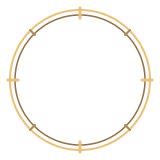
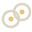

<!doctype html>
<html lang="en">
<head>
<meta charset="utf-8">
<title>Hearthwoven panel preview</title>
<!-- Static preview of the in-game panel. It draws window.PANEL_DATA, written by `test-panel --dump` from PanelModel.Build
     on a fictional sample evening, with PanelUi.cs's layout numbers and the same UI kit PNGs (../ui/, nine-sliced with
     the borders from kit.json via CSS border-image). Stand-ins: Averia Serif Libre from Google Fonts for the game's
     own font and Cinzel for Norse. Item, piece and skill slots stay empty, as PanelUi leaves them when the game's sprite
     is missing: those sprites only exist inside the game. Status icons are drawn as a dot in the fallback colour.
     The vocabulary kinds (composition, biomes, ladders, ladder) use the forms of work/hearthwoven-visual-vocabulary/proto
     with Codex's sprites from ../vocab/; ladder parts are drawn rects here. No icons beside numbers (Joost 2026-10-08):
     only a number counted on this PC gets the "since install" label, where the model placed it (Block.SinceInstall).
     Page layout (slice 3): a page whose only block is a plate gets PanelUi's heading row (icon, pill or window choices)
     and the recessed plate from the list's top line; hero, columns, switch (chosen view only) and cards inside, at the
     widths PanelUi uses (plate inside 741 px). Battle (ch-battle): damagegrid, dmgmix, foetable, foetypes, guard, sources,
     deathstrip, deaths, as Chapters/BattleUi.cs draws them; Codex's dmg-*/weapon-* masks tinted through CSS masks. "deeds-cards" is a preview-only sample of the cards. -->

<link href="https://fonts.googleapis.com/css2?family=Averia+Serif+Libre:ital,wght@0,400;0,700;1,400&family=Cinzel:wght@600&display=swap" rel="stylesheet">
<script src="preview-data.js"></script>
<link rel="stylesheet" href="layout.css">   <!-- the layout table (src/Panel/PanelLayout.cs), written by test-panel --dump -->
<style>
  :root { --text:#e9dcc4; --muted:#b9a688; --faint:#b0a086; --bardigits:12px; --gold:#e8c27a; --accent:#e8a948; --rule:rgba(107,82,51,.6); --focus:#fff3d6; }
  * { box-sizing:border-box; margin:0; padding:0; }
  body { width:1280px; height:860px; font-family:"Averia Serif Libre", Georgia, serif; color:var(--text); position:relative; overflow:hidden;
         background: radial-gradient(ellipse at 25% 75%, #6a4320 0%, #2a2018 32%, #141618 72%), #141618; }
  .world { position:absolute; inset:0; background: repeating-linear-gradient(100deg, rgba(0,0,0,.25) 0 40px, rgba(255,255,255,.02) 40px 90px); }
  /* nine-slices from kit.json (left, top, right, bottom) -> border-image (top right bottom left) */
  .k-frame { border-image:url(../ui/frame.png) 56 56 56 56 fill / 56px 56px 56px 56px stretch; }
  .k-tab { border-image:url(../ui/tab.png) 20 20 16 20 fill / 20px 20px 16px 20px stretch; }
  .k-tab.on { border-image-source:url(../ui/tab-selected.png); }
  .k-row { border-image:url(../ui/row.png) 20 20 20 20 fill / 20px stretch; }
  .k-row.on { border-image-source:url(../ui/row-selected.png); }
  .k-toggle { border-image:url(../ui/toggle.png) 16 20 16 60 fill / 16px 20px 16px 60px stretch; }
  .k-toggle.on { border-image-source:url(../ui/toggle-selected.png); }
  .k-slot { border-image:url(../ui/slot.png) 16 16 16 16 fill / 16px stretch; }
  .k-track { border-image:url(../ui/meter-track.png) 5 5 5 5 fill / 5px stretch; }
  .k-divider { height:16px; flex:none; border-image:url(../ui/divider.png) 0 24 0 24 fill / 0 24px 0 24px stretch; }
  .panel { position:absolute; left:50px; top:30px; width:var(--frame-w); height:var(--frame-h); }
  .wordmark { position:absolute; left:66px; top:22px; height:44px; display:flex; align-items:center; font-family:Cinzel, serif; font-size:var(--text-wordmark); color:var(--gold); }
  .logo { position:absolute; left:var(--frame-logo-left); top:var(--frame-logo-top); height:var(--frame-logo-h); width:auto; }   /* PanelUi: Joost's logo, 60 px high, centred on the chips row; the wordmark is its fallback */
  .owner { position:absolute; left:var(--frame-owner-left); top:var(--frame-owner-top); height:var(--frame-owner-h); display:flex; align-items:center; font-size:var(--text-lead); }
  .players { position:absolute; right:var(--frame-players-right); top:var(--frame-players-top); height:var(--frame-players-h); display:flex; gap:var(--frame-players-gap); }
  .entry { position:relative; display:flex; align-items:center; gap:14px; padding:0 20px 0 14px; white-space:nowrap; font-size:var(--text-row); color:var(--text); flex:none; }
  .entry.on { color:var(--gold); } .entry.noicon { padding-left:20px; }
  /* 0.8.1 (Joost: one rule): anything you can point at shows it, a 1 px warm line at low opacity, no motion, no color change (HoverUi.HoverMark;
     a pill or a skill chip says, it does not act; a bar part, a foe row or a greyed chip's reason light themselves) */
  :is(.tab, .entry, .k-toggle, .chip:not(.off):not(.pill), .fcard, .tcard, .card.opens, .fb-chip, .b2-tile):hover { outline:1px solid rgba(232,194,122,.45); outline-offset:-1px; }
  /* 0.8.2 (Joost on Battle > Foes: "that's not obvious that I can click on it"): a row, card or tile that opens something ends in the chevron
     (PanelUi.OpensMark, PanelLook.Chevron): muted, 8 x 14, centred on its height, pointing down while what it opened is open (opensMark) */
  .opens-mk { position:absolute; top:50%; width:8px; height:14px; margin-top:-7px; color:var(--muted); pointer-events:none; } .opens-mk.open { transform:rotate(90deg); }
  .chapters { position:absolute; left:var(--frame-tab-inset); right:var(--frame-tab-inset); top:var(--frame-tab-top); height:var(--frame-tab-h); display:flex; gap:var(--frame-tab-gap); }
  .tab { flex:1; height:var(--frame-tab-h); display:flex; flex-direction:row; align-items:center; justify-content:center; gap:var(--frame-tab-icon-gap); padding:0 10px; font-size:var(--text-row); white-space:nowrap; }
  .tab img { width:var(--frame-tab-icon); height:var(--frame-tab-icon); } .tab.on { color:var(--gold); } .tab.on img { filter: sepia(1) saturate(3) hue-rotate(-12deg) brightness(1.05); }
  .listtitle { position:absolute; left:var(--frame-inset); top:var(--frame-head-top); width:var(--frame-list-w); height:var(--heading-list-title-h); font-size:var(--text-title); color:var(--gold); display:flex; align-items:center; }
  .list { position:absolute; left:var(--frame-inset); top:var(--frame-list-top); width:var(--frame-list-w); bottom:var(--frame-foot); display:flex; flex-direction:column; gap:var(--frame-list-gap); padding:2px; overflow:hidden; }
  .list .entry { flex:none; height:var(--frame-list-row) !important; font-size:var(--text-row) !important; padding:0 12px 0 10px; gap:10px; justify-content:flex-start; }
  .list .m { width:22px !important; height:22px !important; }
  .sharenote { width:330px; display:flex; align-items:center; justify-content:flex-end; text-align:right; font-size:var(--text-small); color:var(--muted); white-space:normal; }
  .sharenote.alone { width:572px; height:48px; box-sizing:border-box; flex-direction:column; align-items:flex-start; justify-content:center; text-align:left; padding:0 10px 0 40px; position:relative; background:rgba(8,6,5,.85); box-shadow:inset 0 0 0 1px #3a2c1c; border-radius:5px; white-space:nowrap; line-height:1.3; }
  .sharenote.alone b { color:var(--text); font-weight:700; } .sharenote.alone img { position:absolute; left:10px; top:14px; width:20px; height:20px; }
  .content { position:absolute; left:calc(var(--frame-inset) + var(--frame-list-w) + var(--frame-content-gap)); right:var(--frame-content-right); top:var(--frame-head-top); bottom:var(--frame-foot); }
  .heading { height:var(--heading-h); font-size:var(--text-page); color:var(--gold); white-space:nowrap; overflow:hidden; text-overflow:ellipsis; display:flex; align-items:center; }
  .scope { margin-top:calc(var(--heading-scope-top) - var(--heading-h)); height:var(--heading-scope-h); font-size:var(--text-row); color:var(--muted); white-space:nowrap; overflow:hidden; text-overflow:ellipsis; }
  .blocks { position:absolute; top:var(--heading-blocks); left:0; right:0; bottom:0; overflow:hidden; display:flex; flex-direction:column; gap:var(--heading-blocks-gap); padding:2px; }
  .row { display:flex; gap:14px; align-items:center; }
  .m { flex:none; display:flex; align-items:center; justify-content:center; }
  .m img { width:100%; height:100%; object-fit:contain; }
  .shield { -webkit-mask:url(../ui/shield.png) center/contain no-repeat; mask:url(../ui/shield.png) center/contain no-repeat; background-blend-mode:multiply; }
  .section { font-size:var(--text-lead); color:var(--gold); margin-top:4px; }
  .note { font-size:var(--text-floor); color:var(--faint); } .plain { font-size:var(--text-small); color:var(--muted); }
  /* 0.8.5 the cargo sums (VoyagesHallUi.SumLine, CargoSum, CargoSumRows; PanelLayout.Sum): "[crate] 100 × [ship] 4.1 km = 410 item-km" under the bar,
     its caption at the floor; Usually aboard as a row per item with its sum, a hairline, "together 640 item-km" */
  .eqn { display:flex; align-items:center; white-space:nowrap; font-size:var(--sum-text); } .eqn > i { font-style:normal; color:var(--muted); }
  .eqn .g, .eqn .r { display:inline-flex; align-items:center; gap:var(--sum-icon-gap); } .eqn .r { gap:var(--sum-unit-gap); }
  .eqn b { font-weight:700; } .eqn .r b { color:var(--gold); } .eqn .r span { color:var(--muted); }
  .sum { display:flex; flex-direction:column; gap:var(--sum-caption-gap); } .sum .cap { font-size:var(--sum-caption); color:var(--muted); }
  .sum .eqn { gap:var(--sum-gap); } .sum .m { width:var(--sum-icon); height:var(--sum-icon); }
  .sumrows { display:flex; flex-direction:column; gap:var(--sum-row-gap); }
  .sumrow { position:relative; height:var(--sum-row-h); display:flex; align-items:center; gap:var(--sum-row-term-gap); padding:0 var(--sum-row-pad); box-sizing:border-box; }
  .sumrow .nm { flex:1; min-width:0; font-size:var(--sum-name); white-space:nowrap; overflow:hidden; text-overflow:ellipsis; }
  .sumrow .eqn { flex:none; gap:var(--sum-row-term-gap); } .sumrow .eqn .m { width:var(--sum-row-icon); height:var(--sum-row-icon); }
  .sumrows .rule { height:1px; background:var(--rule); }
  .sumrows .tot { display:flex; justify-content:flex-end; align-items:center; gap:var(--sum-unit-gap); padding-right:var(--sum-row-pad); font-size:var(--text-small); color:var(--muted); white-space:nowrap; }
  .sumrows .tot b { font-size:var(--sum-total); color:var(--gold); }
  .note.more { height:22px; line-height:22px; color:var(--muted); font-style:italic; } [data-link] { cursor:pointer; }   /* 0.8.2: a fold's "+N more" is a click that shows the rest (PanelUi.MoreLink) */
  .hint { display:flex; gap:10px; font-size:var(--text-name); } .hint::before { content:""; width:3px; flex:none; background:var(--accent); }
  .stat { display:flex; gap:16px; align-items:center; } .stat .v { font-size:var(--text-stat); } .stat .t { font-size:var(--text-title); } .stat .s { font-size:var(--text-row); color:var(--muted); } .stat .n { font-size:var(--text-floor); color:var(--faint); }
  /* compact stat (fix3-rest, Heavy Keel on Voyages > Cargo): one line, the number and its name, the rest muted beside them */
  .stat.compact { gap:10px; } .stat.compact .v { font-size:var(--text-title); } .stat.compact .t { font-size:var(--text-body); } .stat.compact .s { font-size:var(--text-floor); } .stat.compact .row { flex-wrap:wrap; }
  .tiles { display:grid; grid-template-columns:repeat(6, 112px); gap:8px 16px; }
  .tile { height:150px; display:flex; flex-direction:column; align-items:center; }
  .tile .nm { margin-top:4px; font-size:var(--text-small); width:112px; text-align:center; white-space:nowrap; overflow:hidden; text-overflow:ellipsis; } .tile .ct { font-size:var(--text-count); color:var(--gold); }
  .bar { display:flex; gap:14px; align-items:center; } .bar .lb { width:120px; font-size:var(--text-lead); } .bar .tr { flex:1; height:20px; position:relative; }
  .bar .fl { position:absolute; left:3px; top:3px; bottom:3px; border-radius:3px; background-image:url(../ui/meter-fill.png); background-size:100% 100%; background-blend-mode:multiply; }
  .bar .vl { width:80px; text-align:right; font-size:var(--text-lead); } .bar .ic { width:26px; height:26px; display:flex; align-items:center; justify-content:center; } .bar .ic i { width:16px; height:16px; border-radius:50%; }
  .axis { display:flex; font-size:var(--text-floor); color:var(--faint); padding-left:174px; padding-right:94px; justify-content:space-between; }
  .rows .r { display:flex; gap:14px; align-items:center; min-height:34px; border-bottom:1px solid var(--rule); font-size:var(--text-count); } .rows .r .t { flex:1; } .rows .r .v { width:170px; text-align:right; }
  .titles { display:grid; grid-template-columns:repeat(3, 258px); gap:6px 10px; }
  .tcard { position:relative; height:64px; } .tcard .m { position:absolute; left:12px; top:12px; }
  .tcard .tn { position:absolute; left:60px; top:6px; font-size:var(--text-name); color:var(--gold); } .tcard .tv { position:absolute; left:60px; top:27px; width:190px; font-size:var(--text-floor); font-style:italic; color:var(--muted); line-height:1.2; }
  .thread .ends { display:flex; justify-content:space-between; font-size:var(--text-lead); }
  .thread .fr { display:flex; align-items:center; gap:20px; margin-top:8px; }
  .thread .item { width:120px; display:flex; flex-direction:column; align-items:center; gap:4px; font-size:var(--text-row); }
  .thread .mid { flex:1; display:flex; flex-direction:column; align-items:center; gap:2px; font-size:var(--text-heading); }
  .thread .mid img { width:320px; height:40px; }
  .empty { font-size:var(--text-row); font-style:italic; color:var(--muted); } .emptytext { font-size:var(--text-small); color:var(--faint); }
  .emptybox { display:flex; flex-direction:column; gap:var(--empty-gap); }   /* PanelUi: the heading and its one line in one stack (a negative margin pulled the line into the heading) */
  .badges { display:flex; gap:18px; } .badges span { font-size:var(--text-row); color:var(--gold); }
  .controls { display:flex; gap:8px; } .controls .entry { height:48px; }
  .toggles { display:flex; gap:14px; } .toggle { flex:1; height:72px; display:flex; align-items:center; padding-left:62px; font-size:var(--text-band); } .toggle.on { color:var(--gold); }
  .button { align-self:flex-start; height:48px; }
  .keys { position:absolute; left:var(--keys-side); right:var(--keys-side); bottom:var(--keys-bottom); height:var(--keys-height); display:flex; align-items:center; gap:36px; font-size:var(--keys-text); color:var(--muted); }
  .keys > span { flex:none; white-space:nowrap; }
  .caption { position:absolute; left:50px; bottom:16px; font-size:var(--text-floor); color:#9a8a74; font-family:Georgia, serif; }

  /* ---------- feats (Chapters/FeatsUi.cs): the grid of cards, the one fixed detail area, Known for, the owner-page band ---------- */
  .tab { position:relative; } .dot { position:absolute; right:8px; top:8px; width:11px; height:11px; border-radius:50%; background:var(--accent); } .tab .dot { right:10px; top:8px; }
  .feats { display:grid; gap:var(--feats-row-gap) var(--feats-column-gap); }
  .fgrid { position:relative; flex:none; overflow:hidden; max-height:var(--feats-grid-room); }   /* PanelLayout.Feats.GridRoom: four whole rows; more rows scroll inside it with a fade and the cue, the detail area under it stays put */
  /* 0.9.2 FeatsUi.FeatMoreCue (Joost: "can we not make that a full horizontal bar that overlays the items? Make it more transparent and fade with a gradient
     from bottom to transparent at the top"): a band over the grid's foot, the card's ground from FeatLookShape.CueGround at the bottom to nothing at the top
     (CueStops), the words small and centred near its bottom edge with the cards' text shade; it catches no click and takes no row of its own */
  .fcue { position:absolute; height:var(--feats-cue-band); display:flex; align-items:flex-end; justify-content:center; pointer-events:none; background:linear-gradient(to bottom, rgba(9,9,7,0) 0%, rgba(9,9,7,.85) 50%, rgba(9,9,7,.85) 100%); }
  .fcue span { margin-bottom:var(--feats-cue-text-bottom); line-height:18px; font-size:var(--text-floor); color:var(--gold); white-space:nowrap; text-shadow:1px 1px 2px rgba(0,0,0,.85), 0 0 3px rgba(0,0,0,.6); }   /* PanelModel.FeatsMore */
  .fcard { position:relative; height:var(--fh, var(--feats-card)); } .fcard.waiting .m.mk, .fdet.waiting .m.mk { filter:grayscale(1) opacity(.28); } .fcard .m { position:absolute; left:9px; top:var(--mt, 5px); } .fcard:not(.waiting) .m img { filter:grayscale(1) opacity(.5); }
  .fcard.earned { box-shadow:inset 0 0 0 1px var(--tier), inset 3px 0 0 var(--tier); } .fcard.earned .m img { filter:none; }   /* the tier's colour (PanelModel.TierColour): rim and a left bar */
  .plate.full .fgrid { flex:1 1 auto; max-height:none; min-height:var(--feats-card); }   /* PanelModel.PlateFull: the grid takes the room the detail area leaves (FeatsUi.FeatsRoom) */
  .tierw { font-weight:700; }
  .fcard:not(.waiting) .m.mk, .fdet:not(.earned):not(.waiting) .m.mk { filter:grayscale(1) opacity(.5); } .fcard.earned .m.mk { filter:none; }
  /* live-polish: the keyboard focus (filter chip, biome tile) is one soft gold glow with rounded corners (vocab/focus-ring.png,
     sliced 14 px, the line 2 px outside the box), shown only after a key press: hidden while the mouse is used (focus-visible, PanelUi.FocusRing) */
  /* 0.9.3 (Joost in game: "'currently selected' is way too subtle. or not even active"): the chosen feat card, by a click or A/D alike (FeatsUi.FeatChosen):
     a solid gold frame over everything on the card (the 2 px rounded rim of a chosen bar part), its ground lifted by a warm wash over the pattern and the
     band (under the icon and the text), its name in gold; a hover keeps its 1 px line at 45 % */
  .fcard .fsel { position:absolute; inset:1px; pointer-events:none; background:rgba(232,194,122,.08); }
  .fcard .fframe { position:absolute; inset:0; pointer-events:none; border:var(--feats-chosen-rim) solid var(--gold); border-radius:var(--feats-chosen-round); z-index:3; }
  .fcard.sel .fn, .fcard.sel.earned .fn, .fcard.lk.sel .fn { color:var(--gold); }
  .fb-chip.cur::after, .b2-col.cur .b2-tile::after { content:""; position:absolute; inset:calc(-1 * (var(--focus-inset) + var(--focus-gap))); pointer-events:none; display:none; background:rgba(232,194,122,.9);
    -webkit-mask-box-image:url(../vocab/focus-ring.png) 14 / 14px stretch; }
  body.kbd .fb-chip.cur::after, body.kbd .b2-col.cur .b2-tile::after { display:block; }
  .fcard .ft { position:absolute; left:54px; right:8px; top:2px; bottom:2px; display:flex; flex-direction:column; justify-content:center; }   /* the name and its small line stacked, one size: a long name wraps (FeatsUi.FeatCard) */
  .fcard .fn { font-size:var(--text-small); line-height:17px; color:var(--muted); display:-webkit-box; -webkit-line-clamp:2; -webkit-box-orient:vertical; overflow:hidden; }
  .fcard.earned .fn { color:var(--text); } .fcard .fn.one { -webkit-line-clamp:1; }
  .fcard .fw { height:16px; line-height:16px; font-size:var(--text-floor); color:var(--faint); white-space:nowrap; overflow:hidden; text-overflow:ellipsis; }   /* feats-real: why an Unsung feat reads 0, or the next tier on an earned one (FeatsUi.FeatCard) */
  /* 0.9 New feats (FeatsUi.FeatCard): an earned tier not opened yet: the Feats tab's gold dot and the word "New", top right (PanelLayout.Feats.New*); the name beside it keeps clear of it, the lines under it keep the card's width */
  .fcard .fnew { position:absolute; top:var(--feats-new-inset); right:var(--feats-new-inset); display:flex; align-items:center; gap:var(--feats-new-gap); font-size:var(--text-floor); line-height:1.2; font-weight:700; color:var(--accent); white-space:nowrap; }
  .fcard .fnew i { display:block; flex:none; width:var(--feats-new-dot); height:var(--feats-new-dot); border-radius:50%; background:var(--accent); }
  .fcard.isnew .fn { margin-right:calc(var(--feats-new-inset) * 2 + var(--feats-new-dot) + var(--feats-new-gap) + 2.4em); }
  /* 0.9.2 feat search (Chapters/FeatSearchUi.cs): the field at the Feats pages' top right (PanelLayout.FeatSearch), the query or its placeholder, the search key's cap inside it;
     on the search's grid each card's page tag, top right, left of its New mark (FeatSearchTags; placed by the script below, as the game measures it) */
  .fsearch { display:flex; justify-content:flex-end; align-items:center; height:var(--feat-search-h); flex:none; }
  .fsf { position:relative; width:var(--feat-search-w); height:var(--feat-search-h); box-sizing:border-box; padding:0 calc(var(--feat-search-pad) * 2 + var(--feat-search-cap)) 0 var(--feat-search-pad); display:flex; align-items:center; font-size:var(--text-small); color:var(--text); white-space:nowrap; overflow:hidden; }
  .fsf.empty { color:var(--faint); font-style:italic; }
  .fsearch .fread { margin-right:var(--feat-search-pad); } .earned .ea-about .fread { margin-right:0; } .earned .ea-about .ea-sw:not(:has(.chip, .kc)) { display:none; }   /* 0.9.5 Mark read (Chapters/FeatsReadAll.cs): a chip left of the field, 8 px apart (FeatSearchUi.ReadGap) */
  .earned .ea-about .fsf { flex:none; align-self:center; } .earned .ea-about .fsf .kc { position:absolute; }   /* in the strip's right end: its own size, the cap inside it */
  .fsf .kc { right:var(--feat-search-pad); top:calc((var(--feat-search-h) - var(--feat-search-cap)) / 2); width:var(--feat-search-cap); height:var(--feat-search-cap); font-style:normal; }
  .fcard.lk.tagged .lkt, .fcard.tagged.k-track .ft { top:calc(var(--feat-search-tag-top) + var(--feat-search-tag-h)); }   /* the card's text below its tag, centred in the rest */
  .fcard .fstag { position:absolute; top:var(--feat-search-tag-top); right:var(--feats-new-inset); height:var(--feat-search-tag-h); line-height:var(--feat-search-tag-h); padding:0 var(--feat-search-tag-pad); border-radius:calc(var(--feat-search-tag-h) / 4); background:rgba(0,0,0,.5); color:var(--muted); font-size:var(--text-floor); white-space:nowrap; z-index:2; }
  /* 0.9 feat look (Chapters/FeatLookUi.cs; 0.9.2: look 2 is the one design, look 1's frame and badges gone): the family's ground, a large icon, a flat
     tier bar, the family's colour as the left edge. The ground: the hatch tile multiplied by the family's colour (an SVG filter, as the game's tint; a CSS
     mask needs CORS), its wash from the left and the card's own ground over it toward the right (FeatLookShape's stops) */
  .fcard.lk { --lx:calc(var(--feat-look-icon-left-large) + var(--feat-look-edge)); --ls:min(var(--feat-look-icon-large), calc(var(--fh, var(--feat-look-card-min)) - 2 * var(--feat-look-icon-left-large))); }
  .fcard.lk.earned { box-shadow:none; } .fdet.lk.earned { box-shadow:inset 0 0 0 1px var(--tier); }
  .lk .lkg { position:absolute; left:1px; top:1px; bottom:1px; right:1px; pointer-events:none; }   /* 0.9.1: the family's ground over the whole card again (board 9; 0.8.93 kept it behind the icon) */
  .fdet.lk .lkg { right:auto; width:min(calc(100% - 2px), var(--feat-look-detail-ground-w)); height:var(--feat-look-detail-ground-h); bottom:auto; } .lk .lkg .lkfd2 { background:linear-gradient(180deg, rgba(12,12,10,0) 0%, rgba(12,12,10,.2) 45%, rgba(12,12,10,.85) 80%, rgb(12,12,10) 100%); }   /* FeatLookShape.DownStops */
  /* 0.9.1 Feats.TextBacking (default Both): a soft band of the card's ground under the text, rising over --feat-look-backing-in before it (FeatLookShape.Backing),
     and a dark shade on the letters (the game's TMP underlay, FeatLookUi.FeatLookShade) */
  .lk .lkbk { position:absolute; top:1px; bottom:1px; right:1px; pointer-events:none; background:linear-gradient(90deg, rgba(12,12,10,0) 0, rgba(12,12,10,.7) var(--feat-look-backing-in), rgba(12,12,10,.7) 100%); }
  .fcard.lk .lkbk { left:calc(var(--lx) + var(--ls) + var(--feat-look-icon-gap) - var(--feat-look-backing-in)); }
  .fdet.lk .lkbk { left:calc(84px - var(--feat-look-backing-in)); right:auto; width:calc(min(100%, var(--feat-look-detail-ground-w)) - 84px + var(--feat-look-backing-in)); bottom:auto; height:var(--feat-look-detail-ground-h); }
  .lk .fn, .lk .lkl, .fdet.lk .dn, .fdet.lk .dt, .fdet.lk .lkfam, .fdet.lk .dh, .fdet.lk .mo { text-shadow:1px 1px 2px rgba(0,0,0,.85), 0 0 3px rgba(0,0,0,.6); }
  .lk .lkg i { position:absolute; inset:0; display:block; } .lk .lkg .lkw { background:linear-gradient(90deg, var(--wash), transparent 60%); }
  .lk .lkg .lkh { background-repeat:repeat; } .lk .lkg .lkfd { background:linear-gradient(90deg, rgba(12,12,10,0) 0%, rgba(12,12,10,.25) 22%, rgba(12,12,10,.85) 58%, rgb(12,12,10) 80%, rgb(12,12,10) 100%); }   /* FeatLookShape.GroundStops (board 9's ground2()), to the mirror's card ground */
  .lk .lkdisc { position:absolute; border-radius:50%; pointer-events:none; background:radial-gradient(closest-side, rgba(0,0,0,.5) 0%, rgba(0,0,0,.422) 25%, rgba(0,0,0,.25) 50%, rgba(0,0,0,.078) 75%, rgba(0,0,0,0) 100%); }
  .fcard.lk .lkdisc { left:calc(var(--lx) - var(--feat-look-halo) / 2); top:calc((var(--fh, var(--feat-look-card-min)) - var(--ls) - var(--feat-look-halo)) / 2); width:calc(var(--ls) + var(--feat-look-halo)); height:calc(var(--ls) + var(--feat-look-halo)); }
  .fcard.lk .m { left:var(--lx) !important; top:calc((var(--fh, var(--feat-look-card-min)) - var(--ls)) / 2) !important; width:var(--ls) !important; height:var(--ls) !important; }
  .lk .lke { position:absolute; left:0; top:0; bottom:0; width:var(--feat-look-edge); background:var(--fam); opacity:.95; }
  .fcard.lk .lkt { position:absolute; left:calc(var(--lx) + var(--ls) + var(--feat-look-icon-gap)); right:var(--feat-look-text-right); top:0; bottom:0; display:flex; flex-direction:column; justify-content:center; min-width:0; }
  .lk .lkfam { font-size:var(--text-floor); line-height:1.2; font-weight:700; letter-spacing:.04em; text-transform:uppercase; color:var(--fam); white-space:nowrap; overflow:hidden; text-overflow:ellipsis; }
  .fcard.lk .fn { display:block; -webkit-line-clamp:unset; white-space:nowrap; overflow:hidden; text-overflow:ellipsis; }
  .fcard.lk.isnew .fn { display:-webkit-box; -webkit-box-orient:vertical; -webkit-line-clamp:2; white-space:normal; }   /* 0.9.2 FeatLookUi.FeatLookCard: a New card's name may take a second line beside the mark */
  .lk .lkl { font-size:var(--text-floor); line-height:1.2; color:var(--muted); white-space:nowrap; overflow:hidden; text-overflow:ellipsis; }
  .lk .lkbar { display:flex; gap:var(--feat-look-bar-gap); margin-top:var(--feat-look-bar-top); height:var(--feat-look-bar-h); width:min(100%, var(--feat-look-bar-w)); flex:none; }
  .lk .lkbar i { position:relative; flex:1 1 0; display:block; border-radius:calc(var(--feat-look-bar-h) / 2); background:rgba(107,82,51,.35); } .lk .lkbar i.on { background:var(--bc); } .lk .lkbar i b { position:absolute; left:0; top:0; bottom:0; border-radius:inherit; background:var(--bc); opacity:.6; min-width:var(--feat-look-bar-h); }
  .fdet.lk .dn { top:var(--feat-look-detail-name-top); } .fdet.lk .dt { top:var(--feat-look-detail-tier-top); } .fdet.lk .lkfam { position:absolute; top:var(--feat-look-detail-family-top); }
  .fcard .nt.nx { background:none; box-shadow:inset 0 0 0 1px rgba(158,140,102,.9); }   /* a tier not reached yet, as an outline (FeatsUi.FeatNotches) */
  .fcard .fm { height:17px; line-height:17px; font-size:var(--text-floor); font-style:italic; color:var(--muted); white-space:nowrap; overflow:hidden; text-overflow:ellipsis; }
  .feats.ti .fcard .fm { height:auto; white-space:normal; display:-webkit-box; -webkit-line-clamp:2; -webkit-box-orient:vertical; } .feats.ti .fcard .fn { -webkit-line-clamp:1; }   /* 0.9.1: a title's reason on two lines (PanelLayout.Feats.TitleCard) */
  .fcard.waiting, .fdet.waiting { outline:1px dashed rgba(185,166,136,.7); outline-offset:-2px; } .fcard.waiting .m img, .fdet.waiting .m img { filter:grayscale(1) opacity(.28); }   /* not counted yet: a dashed rim, a fainter emblem */
  .fcard .nt { position:absolute; top:var(--nt, 39px); width:10px; height:10px; border-radius:2px; background:#76643f; } .fcard.waiting .nt.nx { box-shadow:inset 0 0 0 1px rgba(185,166,136,.7); } .fnotch { position:absolute; left:9px; top:44px; display:flex; gap:3px; } .fnotch i { display:block; width:12px; height:5px; background:#76643f; } .fnotch i.on { background:var(--gold); }   /* each reached notch in its tier's colour (inline) */
  .fdet { position:relative; height:var(--feat-detail-least); flex:none; }   /* 0.9.1: as high as the page's details need (placed below, FeatsUi.FeatDetailPage) */ .fdet.earned { box-shadow:inset 0 0 0 1px var(--tier), inset 3px 0 0 var(--tier); }
  .fdet > .fcrew { position:absolute; left:292px; right:16px; } .fdet .fcrew { height:22px; font-size:var(--text-floor); white-space:nowrap; }   /* B37 + 0.8.2: Who helped, the parts as one bar, under it everyone in the legend grammar (FeatsUi.FeatCrew); placed by crewLay() */
  .fdet .fcrew > *, .fdet .fcrew .ce > * { position:absolute; top:0; height:22px; line-height:22px; white-space:nowrap; } .fdet .fcrew .ce { position:static; }
  .fdet .fcrew .fcl { left:0; font-size:var(--text-floor); color:var(--faint); } .fdet .fcrew .cbar { display:flex; gap:2px; top:7px; height:8px; right:0; } .fdet .fcrew .cbar i { display:block; height:8px; border-radius:3px; flex:var(--f) 0 0; min-width:2px; }
  .fdet .fcrew .sw { width:12px; height:12px; top:5px; border-radius:2px; } .fdet .fcrew .cmk { width:20px; height:20px; top:1px; } .fdet .fcrew .cmk .m { position:static; }
  .fdet .fcrew .cn { font-size:var(--text-floor); color:var(--text); } .fdet .fcrew .cnum { font-size:var(--text-small); font-weight:700; color:var(--text); text-align:right; } .fdet .fcrew .csh { font-size:var(--text-floor); color:var(--faint); text-align:right; }
  .fdet .fghost { position:absolute; left:292px; right:16px; top:0; visibility:hidden; pointer-events:none; } .fdet .fghost .fcrew, .fdet .fghost .cv { position:absolute; left:0; right:0; top:0; }   /* the page's other details, measured for the area's height (FeatsUi.FeatDetailPage) */
  .fdet .fghost .gl { position:absolute; left:-276px; top:0; width:262px; display:flex; flex-direction:column; gap:var(--feat-detail-moment-gap); }   /* their left column: what each honours and its moment */
  .fdet .mo i { color:var(--muted); } .fdet .fdlink .fdlink-mk { margin-left:var(--feats-link-mark-gap); }
  .fdet .m { position:absolute; left:16px; top:var(--feat-detail-emblem-top); } .fdet:not(.earned):not(.waiting) .m img { filter:grayscale(1) opacity(.5); }
  .fdet .dn { position:absolute; left:84px; top:var(--feat-detail-name-top); width:204px; height:30px; line-height:30px; font-size:var(--text-title); color:var(--muted); white-space:nowrap; overflow:hidden; text-overflow:ellipsis; } .fdet.earned .dn { color:var(--text); }
  .fdet .dt { position:absolute; left:84px; top:var(--feat-detail-tier-top); width:200px; height:22px; line-height:22px; font-size:var(--text-floor); color:var(--faint); white-space:nowrap; overflow:hidden; text-overflow:ellipsis; } .fdet.earned .dt { color:var(--tier); font-weight:700; }
  .fdet .dl { position:absolute; left:16px; top:var(--feat-detail-honours-top); width:262px; display:flex; flex-direction:column; gap:var(--feat-detail-moment-gap); }   /* FeatsUi.FeatDetailFill: the line, one to three lines, the moment under it */
  .fdet .dh { width:260px; min-height:var(--feat-detail-honours-line); max-height:var(--feat-detail-honours-most); flex:none; font-size:var(--text-small); line-height:19px; font-style:italic; color:var(--muted); overflow:hidden; }
  .fdet .rl { position:absolute; left:292px; right:16px; height:var(--feat-detail-rule-h); line-height:var(--feat-detail-rule-h); font-size:var(--text-small); color:var(--muted); white-space:nowrap; overflow:hidden; text-overflow:ellipsis; } .fdet .rl.on { color:var(--text); }
  .fdet .rl b { display:inline-block; width:32px; color:var(--faint); } .fdet .rl.on b { color:var(--rc, var(--gold)); }
  .fdet .pg { position:absolute; left:292px; right:16px; height:22px; } .fdet .pg .tr { position:absolute; left:0; right:196px; top:6px; height:10px; } .fdet .pg .fl { position:absolute; left:2px; top:2px; bottom:2px; background:var(--accent); }
  .fdet .pg .pt { position:absolute; right:0; top:0; width:186px; line-height:22px; font-size:var(--text-floor); white-space:nowrap; }
  .fdet .cb { position:absolute; left:292px; right:16px; height:18px; line-height:18px; font-size:var(--text-floor); color:var(--muted); white-space:nowrap; } .fdet .cb span { display:inline-block; margin-right:8px; color:var(--faint); }
  .fdet .cv { position:absolute; left:292px; right:16px; height:36px; font-size:var(--text-floor); font-style:italic; color:var(--muted); overflow:hidden; }
  .fdet .mo { width:262px; flex:none; min-height:var(--feat-detail-moment-line); max-height:var(--feat-detail-moment-most); line-height:19px; font-size:var(--text-small); color:var(--text); overflow:hidden; }
  .kfor { display:flex; gap:10px; align-items:center; height:36px; } .kfor .kfh { font-size:var(--text-small); font-weight:700; color:var(--gold); white-space:nowrap; }
  .kfor .kfc { display:flex; align-items:center; gap:6px; padding:4px 12px 4px 8px; box-shadow:inset 0 0 0 1px var(--tier, rgba(232,194,122,.85)); font-size:var(--text-small); color:var(--text); white-space:nowrap; } .kfor .kfc b { color:var(--tier); }
  /* fix4: the page's feat and its titles in ONE flat strip (FeatsUi.FeatBandBlock): a dark ground, a gold edge at its left, no raised border */
  .earned { display:flex; flex-wrap:wrap; align-items:center; column-gap:18px; min-height:34px; padding:0 var(--island-pad); background:rgba(255,240,210,.04); border-radius:var(--island-radius); }   /* 0.8.6 (Joost: "the same color as the other islands"): an island, its ground and padding the islands' (it was black at .55) */
  .earned::before { content:""; position:absolute; left:0; top:calc(var(--island-radius) - 3px); bottom:calc(var(--island-radius) - 3px); width:3px; background:var(--gold); }   /* the gold edge, clear of the round corners (FeatsUi.EdgeInset) */
  .earned .ea-back { gap:8px; } .earned .ea-back .chip { gap:6px; } .earned .ea-back svg { width:8px; height:14px; flex:none; transform:scaleX(-1); }   /* 0.8.6: the Back button and its key at the strip's left end (FeatsUi.BackCluster) */
  .earned > span { display:flex; align-items:center; gap:8px; height:34px; white-space:nowrap; }
  .earned .ea-tag { font-size:var(--text-floor); letter-spacing:.14em; text-transform:uppercase; color:var(--muted); } .earned .ea-tag.gold { color:var(--gold); }
  .earned .ea-i { display:inline-flex; align-items:center; gap:6px; margin-right:10px; } .earned .ea-i:last-of-type { margin-right:0; }
  .earned .ea-n { font-size:var(--text-small); color:var(--text); } .earned .ea-tn { font-size:var(--text-small); color:var(--text); }
  .earned .ea-m { font-size:var(--text-floor); font-style:italic; color:var(--muted); margin-left:2px; }
  .earned .ea-rule { width:1px; height:20px; padding:0; background:var(--rule); }
  /* 0.8.6 the sticky head (PanelUi.PinStrip, StickyHeadUi.cs): the strip that leads the plate stays at its top while the islands scroll under
     it. Its holder is the page's own ground (PanelWash.Page) from the plate's top edge to the strip's foot, so no row shows through it or mixes
     with it; at rest the page is laid out as before (the holder's padding is the plate's, given back by its margins). Its top is the plate's
     padding taken back: a sticky box keeps clear of its scroller's padding, and the holder starts at the plate's top edge. Only while the plate
     is scrolled down (.under, pinHead): at rest every page is drawn exactly as before */
  .pinhead { margin:calc(-1 * var(--plate-pad-top)) calc(-1 * var(--plate-pad-x)) 0; padding:var(--plate-pad-top) var(--plate-pad-x) 0; }
  .pinhead.pinisl { display:flex; flex-direction:column; gap:var(--plate-gap); }   /* 0.9.5 Meal plan: its meal's island pinned under the strip with it (Island.Pin, StickyHeadUi.PinStrip) */
  .plate.under > .pinhead { position:sticky; top:calc(-1 * var(--plate-pad-top)); z-index:6; background:rgb(10,9,7); }   /* 0.9.1: over a row's keycap (.kc, 5), as the game's scroll mask clips it */
  .earned { position:relative; } .earned .ea-about { position:absolute; right:var(--island-pad); top:4px; height:26px; gap:8px; }
  .earned .ea-cap { flex:0 1 auto; min-width:0; height:34px; line-height:34px; font-size:var(--text-small); color:var(--muted); white-space:nowrap; overflow:hidden; text-overflow:ellipsis; }   /* 0.8 layout D+: the view switch's caption in the strip (FeatsUi.StripCaption) */
  .earned .ea-note { font-size:var(--text-floor); font-style:italic; color:var(--muted); white-space:nowrap; }   /* a fellow's book: whose copy and when (PanelView.StripNote) */   /* 0.7 compact tops: the About button at the strip's end (FeatsUi.FeatBandBlock, PanelModel.StripReserve) */

  /* ---------- the visual vocabulary (forms ported from work/hearthwoven-visual-vocabulary/proto: vocab.js compBar,
     r2-refine.js biomeStrip2, r2-skills.js ladders); sprites from ../vocab/ (Codex's set) ---------- */
  .since { font-style:italic; color:var(--faint); font-size:var(--text-floor); margin-left:8px; white-space:nowrap; flex:none; }
  .heading .since { font-size:var(--text-small); margin-left:12px; } .since.under { display:block; margin-left:0; font-size:var(--text-floor); }
  .q { color:var(--faint); font-size:var(--text-floor); margin-left:6px; }
  .tot { color:var(--gold); margin-left:8px; }
  .cmp-h { font-size:var(--text-lead); color:var(--gold); display:flex; align-items:center; }
  .cmp-h .tot { color:var(--text); font-weight:700; }
  /* the one bar form (BarFormUi.cs; BAR-FORM.md): its measures are PanelLayout.Bar and PanelLayout.Legend */
  .bf { margin:0; } .bf.nolist .bf-bar { margin-bottom:0; }
  .bf-bar { position:relative; height:var(--bar-height); } .bf-bar.thin { height:var(--bar-thin); } .bf-bar.tall { height:var(--bar-tall); }   /* a grain or groundwork pattern keeps the bar tall (PanelModel.BarHeightOf) */
  .bf-seg { position:absolute; top:0; bottom:0; border-radius:5px; overflow:hidden; display:flex; align-items:center; justify-content:center; min-width:2px; }
  .bf-seg.sel { box-shadow:inset 0 0 0 2px var(--gold); }
  .bf [data-pick] { cursor:pointer; }   /* 0.8.2: a part that filters and its legend item, one click (PanelModel.PartTarget) */
  .bf-seg .num { position:relative; font-size:var(--bar-number); font-weight:700; white-space:nowrap; font-variant-numeric:tabular-nums; }
  .bf-veil { position:absolute; left:0; top:0; bottom:0; background:rgba(9,7,5,.45); }   /* the part counted before Hearthwoven: its colour at 55 % (diff-05) */
  .bf-list { display:flex; gap:var(--legend-gap); align-items:flex-start; margin-top:var(--bar-to-list); }   /* fitBarForms lays it on the page's legend grid */
  .bf.nobar .bf-list { margin-top:0; }
  .bf-tab { display:inline-grid; grid-template-columns:max-content max-content max-content max-content; column-gap:var(--legend-cell-gap); row-gap:var(--legend-row-gap); font-size:var(--legend-name); line-height:var(--legend-row); justify-self:start; }   /* an entry stays compact (0.8 layout D+): names at the floor on every legend */
  .bf-tab .nm { display:flex; align-items:center; gap:var(--legend-swatch-gap); white-space:nowrap; color:var(--text); } .bf-tab .nm .sel { color:var(--gold); font-weight:700; } .bf-tab .nm .zero { color:var(--faint); }
  .bf-tab .sw { width:var(--legend-swatch); height:var(--legend-swatch); border-radius:3px; flex:none; }
  .bf-tab .val { text-align:right; font-size:var(--legend-number); font-weight:700; white-space:nowrap; font-variant-numeric:tabular-nums; }
  .bf-tab .pc { text-align:right; font-size:var(--legend-share); color:var(--faint); white-space:nowrap; } .bf-tab .sn { white-space:nowrap; }
  /* 0.8 hover (HoverUi.cs, PICKS 4 B): the pointed part rings in gold, its list row lights (and the other way round); colours only */
  .bf-tab .r { display:contents; }
  .bf-seg.hov { box-shadow:0 0 0 1px #f0cd86, 0 0 0 2px rgba(240,205,134,.9), 0 0 10px rgba(240,205,134,.55); z-index:2; }
  .bf-tab .r.hov > span:not(:empty) { background:rgba(232,194,122,.15); box-shadow:11px 0 0 rgba(232,194,122,.15), -11px 0 0 rgba(232,194,122,.15); }
  .bf-tab .r.hov .nm > span, .bf-tab .r.hov .val { color:#f6d896; } .bf-tab .r.hov .pc { color:var(--text); }
  /* Since you were away (Chapters/AwayUi.cs): the totals, a cell each, its icon beside the number and the label, its colour line at the foot; a fellow's
     part pointed at lights its total's number too (BarHover.Numbers) */
  .awt { position:absolute; top:0; } .awt > * { position:absolute; } .awt .n { font-size:var(--hero-second); font-weight:700; white-space:nowrap; display:flex; align-items:center; }
  .awt .l { font-size:var(--text-small); color:var(--muted); white-space:nowrap; overflow:hidden; text-overflow:ellipsis; display:flex; align-items:center; } .awt.hov .n { color:#f6d896; }
  .aw-cap { position:relative; height:var(--bar-head-line); border-bottom:1px solid var(--rule); } .aw-cap > span { position:absolute; top:0; height:var(--bar-head-line); display:flex; align-items:center; font-size:var(--text-floor); letter-spacing:.04em; text-transform:uppercase; color:var(--muted); white-space:nowrap; }
  .dr-you { height:20px; display:flex; justify-content:flex-end; align-items:center; gap:12px; } .dr-you:has(> .dr-serv) { justify-content:flex-start; }
  .dr-serv { display:flex; align-items:center; } .dr-serv .sb { display:flex; flex:none; } .dr-serv .sb i { display:block; flex:none; } .dr-serv .st { font-size:var(--text-floor); color:var(--muted); white-space:nowrap; }   /* 0.9.2 Meals by dish, what one serving gives (PanelUi.ServingCell: DrServBar 90, DrServH 10, DrServPartGap 2, DrServGap 8) */ .dr-you > span { display:flex; align-items:center; gap:4px; } .dr-you b { font-size:var(--text-name); white-space:nowrap; }
  .bs-legend, .b2-key { display:flex; align-items:center; gap:6px; font-size:var(--text-small); white-space:nowrap; }
  .b2-key { font-size:var(--text-floor); color:var(--muted); margin-top:2px; } .b2-key img { width:16px; height:16px; }
  .bs-legend .sp, .b2-key .sp { width:22px; } .bs-legend b { font-weight:700; }
  .bs-legend .sw { width:14px; height:14px; border-radius:2px; } .sw.dealt { background:#e8a948; } .sw.hurt { background:#b8432e; }
  .b2 { display:grid; column-gap:4px; }
  .b2-col { display:flex; flex-direction:column; min-width:0; } .b2-col.sea { margin-left:14px; }
  .b2-up { display:flex; flex-direction:column; justify-content:flex-end; align-items:center; }
  .b2-down { display:flex; flex-direction:column; align-items:center; }
  .b2-bar { width:44%; } .b2-bar.dealt { background:#e8a948; } .b2-bar.hurt { background:#b8432e; }
  .b2-v { font-size:var(--text-body); font-weight:700; line-height:20px; } .b2-v.r { color:#e09a84; }
  .b2-tile { position:relative; height:52px; display:flex; flex-direction:column; align-items:center; justify-content:center; gap:1px; border-radius:3px; font-size:var(--text-floor); white-space:nowrap; }
  .b2-col.on .b2-tile { box-shadow:0 0 0 2px var(--gold); }
  .bs-legend .q, .bt-cap .q, .b2-key { color:var(--muted); }   /* Battle's qualifiers: 13 px text reads at 4.5:1 on the plate */
  .b2-col.dim { opacity:.4; } .b2-col.idle { opacity:.6; } .b2-v.nil { color:var(--faint); font-weight:400; }
  .b2-em { width:28px; height:28px; display:block; }
  .b2-boss { position:absolute; top:4px; left:4px; width:22px; height:22px; } .b2-boss img { width:22px; height:22px; position:absolute; left:0; top:0; }
  .b2-boss i { position:absolute; inset:0; display:flex; align-items:center; justify-content:center; font-size:var(--text-floor); font-style:normal; color:var(--gold); }
  .b2-hang { display:flex; align-items:center; justify-content:center; gap:10px; height:20px; margin-top:4px; }
  .b2-skull { height:20px; display:flex; align-items:center; gap:4px; font-size:var(--text-floor); font-weight:700; } .b2-skull img { width:16px; height:16px; }
  .sk-keyline { display:flex; align-items:center; gap:6px; font-size:var(--text-small); color:var(--text); }
  .sk-rows { display:flex; flex-direction:column; gap:14px; } .sk-row { display:flex; gap:24px; }
  .sk-group { min-width:0; }
  .sk-gl { font-size:var(--text-floor); letter-spacing:.14em; text-transform:uppercase; color:var(--muted); border-bottom:1px solid var(--rule); padding-bottom:4px; margin-bottom:8px; }
  .sk-cols { display:flex; } .sk-col { flex:1 1 0; min-width:44px; display:flex; flex-direction:column; align-items:center; }
  .sk-il { margin-top:6px; display:flex; align-items:center; gap:8px; } .sk-name { margin-top:2px; font-size:var(--text-floor); text-align:center; min-height:18px; line-height:18px; white-space:nowrap; } .sk-lv { font-size:var(--text-body); font-weight:700; color:var(--gold); position:relative; display:flex; align-items:center; gap:4px; } .sk-flame { width:16px; height:16px; }
  .sk-kglow, .sk-glow { position:relative; width:16px; height:16px; flex:none; border-radius:50%; background:#f0bd62; box-shadow:0 0 0 4px rgba(232,169,72,.28); }
  .sk-glow { width:16px; height:16px; margin:0 6px; }
  .sk-detail { display:grid; grid-template-columns:150px 1fr; gap:30px; }
  .ldbig { position:relative; width:120px; } .ldbig .ld { position:absolute; left:0; top:0; overflow:visible; }
  .ld-lab { position:absolute; left:0; width:28px; text-align:right; font-size:var(--text-floor); color:var(--faint); transform:translateY(-50%); }
  .ld-you { position:absolute; transform:translate(-50%,-50%); }
  .sk-meter { position:relative; height:28px; width:100%; }
  .sk-fill { position:absolute; left:4px; top:4px; bottom:4px; border-radius:2px; background:linear-gradient(180deg,#f0bd62,#c98a34); }
  .sk-prac { display:flex; align-items:center; gap:10px; height:40px; } .sk-pv { font-size:var(--text-big); font-weight:700; color:var(--gold); } .sk-pl { font-size:var(--text-small); color:var(--muted); }
  /* ---------- Deeds chapter kinds (src/Panel/Chapters/DeedsUi.cs): itemgrid, ranking, counts, strip, grades, band, people ---------- */
  .fillk { position:absolute; left:3px; top:3px; bottom:3px; background-image:url(../ui/meter-fill.png); background-size:100% 100%; background-blend-mode:multiply; }
  .rk { display:flex; flex-direction:column; gap:4px; } .rk.two { flex-direction:row; gap:28px; } .rk-col { flex:1 1 0; min-width:0; display:flex; flex-direction:column; gap:4px; }
  .rk-row { display:flex; align-items:center; gap:8px; height:34px; } .rk-nm { flex:none; font-size:var(--text-name); white-space:nowrap; overflow:hidden; text-overflow:ellipsis; }
  .rk-tr { flex:1; height:16px; position:relative; } .rk-v { width:56px; flex:none; text-align:right; font-size:var(--text-name); font-weight:700; }
  /* 0.9 crafting-history: the level rows (DeedsUi.LevelRows), History's chart (GrowthLinesUi.SparkLarge), the hero line's History word (RecordedUi.HeroRight) */
  .lv { display:flex; flex-direction:column; gap:var(--level-gap); } .lv-row { display:flex; align-items:center; gap:var(--level-row-gap); height:var(--level-row); }
  .lv-nm { flex:none; font-size:var(--text-name); white-space:nowrap; overflow:hidden; text-overflow:ellipsis; } .lv-w { flex:none; font-size:var(--text-floor); color:var(--muted); white-space:nowrap; }
  .lv-v { flex:none; text-align:right; font-size:var(--text-name); font-weight:700; }
  .lv-meter { display:flex; flex:none; width:var(--level-meter-w); gap:var(--level-gap); border-radius:calc(var(--level-h) / 4); overflow:hidden; } .lv-meter i { position:relative; display:block; flex:1; height:var(--level-h); background:#33281d; } .lv-meter i b { position:absolute; left:0; top:0; bottom:0; background:var(--gold); }
  .hist { position:relative; height:calc(var(--history-tick) + var(--history-tick-gap) + var(--history-chart-h) + var(--history-axis)); } .hist i { position:absolute; display:block; background:rgba(232,194,122,.85); }
  .hist i.z { background:rgba(232,194,122,.35); } .hist i.t { background:var(--gold); } .hist .ax { position:absolute; font-size:var(--text-floor); color:var(--muted); white-space:nowrap; line-height:var(--history-axis); } .hist .hit { position:absolute; cursor:pointer; }
  .hlink { font-size:var(--text-floor); line-height:var(--text-floor); color:var(--gold); white-space:nowrap; align-self:flex-end; }   /* as tall as the columns: the hero keeps its height */
  .rk-col.side { display:grid; column-gap:6px; row-gap:2px; align-content:start; align-items:center; flex:none; } .rk-col.side .rk-row { display:contents; } .rk-col.side .rk-nm, .rk-col.side .rk-v { width:auto !important; text-align:left; } .rk-col.side .rk-tr { width:auto; }
  .cnt { display:flex; gap:10px; } .ct-t { flex:1 1 0; min-width:0; position:relative; display:flex; flex-direction:column; align-items:center; justify-content:center; gap:2px; padding:10px 6px; }
  .ct-n { font-weight:700; line-height:1.05; } .ct-l { white-space:nowrap; overflow:hidden; text-overflow:ellipsis; max-width:100%; }
  .ct-edge { position:absolute; left:2px; right:2px; bottom:2px; height:4px; }
  .ct-bar { position:relative; height:28px; margin-top:2px; } .ct-bar .fillk { left:auto; right:auto; }
  /* a block never shrinks on the plate (a flex column): it keeps its height and the page scrolls in game */
  .rk, .cnt, .ct-bar, .ig, .st, .gr, .bd, .pp-row { flex-shrink:0; }
  .content > .plate > *, .content .blocks > * { flex-shrink:0; }   /* as Unity's layout: a block keeps its own height (PanelUi.Size sets minHeight) and the page scrolls; a squeezed block drew its rows over the next one (Farming's Other plants over the legend) */
  .ig { display:grid; gap:8px; } .ig-t { position:relative; display:flex; align-items:center; gap:8px; padding:3px 6px 3px 8px; min-width:0; box-sizing:border-box; }
  .ig-p { flex:none; width:32px; height:32px; display:flex; } .ig-x { display:flex; flex-direction:column; justify-content:center; min-width:0; }
  .ig-n { font-size:var(--text-count); font-weight:700; line-height:22px; } .ig-l { font-size:var(--text-floor); line-height:13px; color:var(--muted); display:-webkit-box; -webkit-line-clamp:2; -webkit-box-orient:vertical; overflow:hidden; }
  .ig-s { font-size:var(--text-floor); line-height:14px; color:var(--faint); white-space:nowrap; overflow:hidden; }
  /* 0.9 Armor sets (DeedsUi.SetBand): a set as the one-item band, its head line, and the item tile's "not made" state: no ground, a dashed edge, the picture grayed, the materials under the name */
  .sbw > .sb { display:flex; flex-direction:column; gap:var(--sets-band-gap); padding:var(--sets-band-pad-top) var(--sets-band-pad-x) var(--sets-band-pad-bottom); }
  .sb-h { display:flex; align-items:baseline; gap:var(--sets-band-gap); white-space:nowrap; } .sb-h b { font-size:var(--text-name); color:var(--text); } .sb-m { font-size:var(--text-floor); color:var(--muted); }
  .sb-r { margin-left:auto; font-size:var(--text-floor); color:var(--muted); font-style:italic; } .sb-r.full { color:var(--gold); font-weight:700; font-style:normal; }
  .ig-t.notmade { background:none; border-color:transparent; outline:1px dashed rgba(185,166,136,.6); outline-offset:-1px; }
  .ig-t.notmade .ig-p { filter:grayscale(1) opacity(.35); } .ig-t.notmade .ig-l { -webkit-line-clamp:1; }
  .ig-m { display:flex; gap:var(--sets-cost-gap); margin-top:var(--sets-cost-pic-gap); } .ig-m i { font-style:normal; display:inline-flex; align-items:center; gap:var(--sets-cost-pic-gap); font-size:var(--text-floor); color:var(--text); white-space:nowrap; }
  .ig-t.person .ig-n { font-size:var(--text-name); } .ig-t.person .ig-l { font-style:italic; }
  .ig-p { position:relative; } .ig-p > .ig-mk { position:absolute; }   /* 0.9 Armor sets: a piece's mark on its picture's corner, a gold dot made, a ring worn (DeedsUi.ItemGrid's PlanMark) */
  /* 0.9.2 Meals' Plan a meal (MealPlanUi.PlanGrid): its food tiles; a slot of its meal's row (DamageRowsUi: an empty slot dashed as .ig-t.notmade) */
  .mp-t { cursor:pointer; display:block; padding:0; } .mp-t.unk { opacity:.5; } .mp-t.on { outline:1px solid var(--gold); outline-offset:-1px; } .mp-t.on .mp-n { color:var(--gold); }
  .mp-t > .mp-p, .mp-t > .mp-n, .mp-t > .mp-b, .mp-t > .mp-s, .mp-t > .mp-mk { position:absolute; } .mp-p { display:flex; }
  .mp-n { font-size:var(--text-floor); color:var(--text); }   /* 0.9.3: one line across the tile; a grid with a longer name: two (never cut) */
  .mp-s { font-size:var(--text-floor); color:var(--muted); white-space:nowrap; text-align:right; }
  .mp-key { display:flex; align-items:center; font-size:var(--text-floor); color:var(--muted); white-space:nowrap; } .mp-ke { display:inline-flex; align-items:center; } .mp-ke .mp-mk { flex:none; }   /* 0.9.8 MealPlanUi.PlanMarksKey (its gaps: KEY_APART, KEY_MARK_GAP) */
  .chip-sw { display:block; flex:none; width:var(--chip-swatch); height:var(--chip-swatch); }   /* PanelUi.Chip's swatch (PanelLayout.Chip.Swatch; SwatchGap: the chip's own gap) */
  .mp-mk { display:block; border-radius:50%; background:var(--gold); } .mp-mk.ring { background:none; box-shadow:inset 0 0 0 1px var(--gold); }   /* What to use's status: a gold dot made or owned, a ring can make */
  .mp-t .mp-ring, .sec-open .mp-ring, .bf.dr.kind .kr-ring { position:absolute; inset:calc(-1 * var(--focus-inset)); pointer-events:none; display:none; background:rgba(232,194,122,.9); } body.kbd .mp-t .mp-ring, body.kbd .sec-open .mp-ring, body.kbd .bf.dr.kind .kr-ring { display:block; }   /* the keys' cursor, as Foes' (its slice: MP.ring) */
  .plate .section.sec-open { position:relative; cursor:pointer; }   /* 0.9.3 a heading that opens what is under it (Plan a meal): the opens mark at its end */
  .dr-slot { display:block; outline:1px dashed rgba(185,166,136,.6); outline-offset:-1px; } .dr-combo .pic[data-link] { cursor:pointer; }
  .edge { position:absolute; left:2px; top:3px; bottom:3px; width:3px; } .fuel { font-size:var(--text-floor); font-style:italic; color:var(--faint); margin-left:4px; }
  /* ledger (fix2 7, VoyagesHallUi.Ledger): a row per station or trader, its items as inline chips flowing right */
  .lg-r { display:flex; gap:12px; padding:4px 0; } .lg-h { flex:none; width:150px; height:30px; display:flex; align-items:center; gap:7px; font-size:var(--text-body); white-space:nowrap; overflow:hidden; }
  .lg-wide .lg-h { width:230px; height:auto; min-height:30px; } .lg-nm { display:flex; flex-direction:column; min-width:0; } .lg-nm b { font-size:var(--text-name); line-height:var(--ledger-name-line); overflow:hidden; text-overflow:ellipsis; } .lg-nm span { font-size:var(--text-floor); line-height:var(--ledger-source-line); color:var(--faint); overflow:hidden; text-overflow:ellipsis; }
  .lg-t { flex:none; width:84px; display:flex; flex-direction:column; align-items:flex-end; } .lg-t b { font-size:var(--text-heading); line-height:28px; } .lg-t span { font-size:var(--text-floor); line-height:15px; color:var(--faint); }
  .lg-h i { width:4px; height:16px; flex:none; } .lg-f { flex:1; display:flex; flex-wrap:wrap; gap:6px; min-width:0; }
  .lg-c { position:relative; height:30px; display:flex; align-items:center; gap:5px; padding:0 9px 0 10px; box-sizing:border-box; white-space:nowrap; }
  .lg:not(.lg-wide) .lg-h { width:180px; height:38px; font-size:var(--text-count); } .lg:not(.lg-wide) .lg-h i { height:20px; } .lg:not(.lg-wide) .lg-c { height:38px; } .lg:not(.lg-wide) .lg-c .n { font-size:var(--text-count); } .lg:not(.lg-wide) .lg-c .t { font-size:var(--text-small); }
  .lg-c .n { font-size:var(--text-body); font-weight:700; } .lg-c .t { font-size:var(--text-floor); color:var(--muted); } .lg-c .fuel { font-size:var(--text-floor); }
  .st { display:flex; flex-wrap:wrap; gap:6px 26px; } .st-i { display:flex; align-items:center; gap:7px; height:32px; white-space:nowrap; } .st-n { font-size:var(--text-count); font-weight:700; } .st-l { font-size:var(--text-small); color:var(--muted); }
  .gr { display:flex; align-items:flex-end; height:104px; border-bottom:1px solid var(--rule); } .gr-c { flex:1 1 0; display:flex; flex-direction:column; align-items:center; justify-content:flex-end; gap:4px; }
  .gr-n { font-size:var(--text-name); font-weight:700; } .gr-l { font-size:var(--text-small); color:var(--muted); }
  .bd { height:58px; display:flex; align-items:center; gap:14px; padding:0 20px 0 18px; } .bd-t { font-size:var(--text-band); color:var(--gold); } .bd-r { flex:1; } .bd-v { font-size:var(--text-name); }
  .pp-row { display:flex; align-items:center; gap:14px; height:52px; } .pp-nm { width:120px; flex:none; font-size:var(--text-lead); }
  .pp-it { display:flex; align-items:center; gap:8px; font-size:var(--text-name); white-space:nowrap; }
  /* RecentUi.RecentPeople (0.8): Recent with Everyone on, the shield and name left, the gains in three columns, a name may take two lines */
  .rp-row { display:grid; grid-template-columns:172px 1fr; column-gap:14px; padding:8px 0; }   /* no divider: the island sets the players apart (0.8.1 review 9) */
  .rp-who { display:grid; grid-template-columns:38px 1fr; column-gap:14px; align-content:start; } .rp-who > .m { margin-top:3px; }
  .rp-who b { font-weight:400; font-size:var(--text-lead); line-height:44px; white-space:nowrap; overflow:hidden; text-overflow:ellipsis; } .rp-who i { grid-column:2; font-size:var(--text-floor); color:var(--muted); margin-top:-6px; }
  .rp-grid { display:grid; grid-template-columns:repeat(3, 1fr); column-gap:12px; row-gap:4px; } .rp-grid.alone { grid-template-columns:1fr; }
  .rp-it { display:flex; align-items:center; gap:8px; height:44px; min-width:0; } .rp-it b { font-size:var(--text-row); white-space:nowrap; margin-right:-2px; }
  .rp-it span { font-size:var(--text-small); color:var(--muted); line-height:1.2; display:-webkit-box; -webkit-line-clamp:2; -webkit-box-orient:vertical; overflow:hidden; }

  /* ---------- page layout (slice 3, PanelUi's plate, hero, columns, switch, cards; forms from proto vocab.css .hrow/.plate/
     .hero2/.sect/.cols2, r4battle.css .r4-seg, r4over.css .dk) ---------- */
  .hrow { position:absolute; left:0; right:0; top:0; height:var(--heading-h); display:flex; align-items:center; gap:10px; }
  .hrow .ht { font-size:var(--text-heading); color:var(--gold); white-space:nowrap; overflow:hidden; text-overflow:ellipsis; }
  .hrow .ht.two { line-height:1.06; }   /* 0.8.5: two lines (PanelUi.Fill, PanelLayout.Heading.TwoSize, TwoSpacing) */
  .hrow .hr { margin-left:auto; display:flex; align-items:center; gap:var(--heading-chip-gap); }
  .platebg { position:absolute; left:0; right:0; top:var(--plate-top); bottom:0; background:rgba(15,11,8,.95); border-image:url(../ui/meter-track.png) 5 5 5 5 fill / 5px stretch; }
  .plate { position:absolute; left:var(--plate-inset); right:var(--plate-inset); top:calc(var(--plate-top) + var(--plate-inset)); bottom:var(--plate-inset); padding:var(--plate-pad-top) var(--plate-pad-x) var(--plate-pad-bottom); overflow:hidden; display:flex; flex-direction:column; gap:var(--plate-gap); }
  .plateline { font-size:var(--text-small); font-style:italic; color:var(--muted); white-space:pre-line; }
  /* 0.8 the Everyone chip (Chapters/EveryoneUi.cs): the rule and chip at the player row's end, the names' colour keys, the reason tag, the heading tag, the group's rows */
  .ev-rule { flex:none; align-self:center; width:1px; height:30px; background:rgba(232,194,122,.35); }
  .ev-ic { display:flex; gap:2px; width:38px; height:12px; flex:none; } .ev-ic i { display:block; height:12px; border-radius:3px; }
  .ev-key { position:absolute; left:14px; right:18px; bottom:6px; height:3px; border-radius:2px; }
  .ev-why { position:absolute; right:64px; top:74px; width:max-content; max-width:380px; box-sizing:border-box; padding:8px 12px; background:rgba(8,6,5,.96); box-shadow:inset 0 0 0 1px rgba(232,194,122,.5); font-size:var(--text-small); line-height:1.35; color:var(--text); z-index:5; }
  .ev-tag { flex:none; padding:2px 10px; border:1px solid var(--gold); background:rgba(232,194,122,.16); color:var(--gold); font-size:var(--text-small); font-weight:700; white-space:nowrap; }
  .gr-cap, .gr-row { display:grid; column-gap:16px; align-items:center; }
  .gr-cap { height:20px; font-size:var(--text-floor); letter-spacing:.14em; text-transform:uppercase; color:var(--muted); white-space:nowrap; } .gr-cap .tot { margin-left:8px; font-size:var(--text-small); letter-spacing:0; color:var(--text); font-weight:700; }
  .gr-cap .t { grid-column:2 / 4; } .gr-cap .s { grid-column:4; text-align:right; }
  .gr-row { height:32px; flex:none; }   /* 0.8 layout D+: no rules; 32 px, so a group page fits one screen */
  .gr-who { display:flex; align-items:center; gap:10px; min-width:0; margin-right:-8px; } .gr-nm { flex:1; display:flex; align-items:baseline; gap:8px; line-height:1.15; min-width:0; }   /* as in game: the note may reach half the gap; the name and note take the whole room (fitGroupNotes measures it) */
  /* the name gives way, never the date (0.8.1 review 1): the note keeps its width (fitGroupNotes may drop its "as of " first), the name takes what is left */
  .gr-nm b { font-size:var(--text-row); white-space:nowrap; overflow:hidden; text-overflow:ellipsis; } .gr-nm i { flex:none; max-width:100%; font-size:var(--text-floor); color:var(--faint); white-space:nowrap; overflow:hidden; text-overflow:ellipsis; }
  .gr-bar { position:relative; height:22px; } .gr-track { position:absolute; left:0; right:0; top:8px; height:6px; background:rgba(107,82,50,.22); }
  .gr-fill { position:absolute; left:0; top:0; height:22px; border-radius:5px; }
  .gr-n { font-size:var(--text-row); text-align:right; white-space:nowrap; } .gr-p { font-size:var(--text-title); color:var(--gold); text-align:right; white-space:nowrap; }
  .gr-quiet { grid-column:2 / 5; font-size:var(--text-body); color:var(--muted); white-space:nowrap; overflow:hidden; text-overflow:ellipsis; }
  .plate .section, .plate .cmp-h { display:flex; align-items:center; gap:8px; margin-top:0; font-size:var(--section-text); letter-spacing:.14em; text-transform:uppercase; color:var(--muted); }
  .plate .section .tot, .plate .cmp-h .tot { font-size:var(--section-total); letter-spacing:0; text-transform:none; color:var(--text); font-weight:700; margin-left:0; }
  .plate .section .since, .plate .cmp-h .since, .plate .cmp-h .q { letter-spacing:0; text-transform:none; }
  .chip { height:var(--chip-height); display:inline-flex; align-items:center; gap:7px; padding:0 var(--chip-pad); font-size:var(--chip-text); white-space:nowrap; flex:none; color:var(--text);
          border-image:url(../ui/meter-track.png) 5 5 5 5 fill / 5px stretch; }
  .chip.on { border-image:none; background:#e8a948; box-shadow:inset 0 0 0 2px rgba(9,9,7,.7); color:#16110b; font-weight:700; }
  .chip.icon { padding-left:var(--chip-icon-left); } .chip.off { opacity:.45; }
  .sortrow { display:flex; align-items:center; gap:var(--sort-gap); height:var(--sort-height); } .sortrow .cap { font-size:var(--text-floor); color:var(--muted); margin-right:4px; }   /* SortUi.SortRow */
  .section .swatch { display:inline-block; width:12px; height:12px; flex:none; }   /* a sort group heading: its category colour */
  .hr .chip.win { padding:0 var(--chip-window-pad); }   /* the eleven window chips (HISTORY-06; 0.9.1 Yesterday and 3 days): tighter, so the heading keeps its full window name (PanelUi.WindowPad) */
  /* 0.8.2 (Joost in game, Mining: the second number sat lower than the first): every number group, its label and its date on the hero number's
     baseline (PanelUi.HeroNumber lifts the smaller ones); the rules and the skill stand on the bottom as before */
  .hero { display:flex; align-items:baseline; }
  .hero.wrapped { flex-direction:column; align-items:stretch; gap:12px; } .hline { display:flex; align-items:baseline; }   /* PanelModel.HeroLines */
  .hn { display:flex; align-items:baseline; gap:var(--hero-number-gap); white-space:nowrap; }
  .hn .num { font-size:var(--hero-size); line-height:.84; font-weight:700; color:var(--gold); }   /* 0.8 layout D+: about 20 % smaller (FEEDBACK 12) */
  .hn .hw { display:flex; flex-direction:column; align-items:flex-start; gap:4px; }
  .spark { display:inline-flex; align-items:flex-end; gap:8px; } .spark.stack { flex-direction:column; align-items:flex-start; gap:1px; } .spark .cols { display:flex; align-items:flex-end; gap:2px; height:14px; }
  .spark .cols i { display:block; width:4px; background:rgba(232,194,122,.85); } .spark .cols i.z { height:1px; background:rgba(232,194,122,.35); }
  .spark .cap { font-size:var(--text-floor); line-height:16px; color:var(--muted); white-space:nowrap; } .spark.off .cap { color:var(--faint); font-style:italic; }
  .bs-legend .spark { margin-left:4px; } .hn .hw.one { gap:2px; }
  .hn .what { display:flex; align-items:baseline; gap:var(--hero-words-gap); font-size:var(--hero-label); }
  .hn.second .num { font-size:var(--hero-second); } .hn.second .what { font-size:var(--hero-second-label); }
  .hn { position:relative; } .hero.tagged { padding-bottom:30px; }
  .hn .ftag { position:absolute; left:0; top:100%; margin-top:5px; height:22px; display:inline-flex; align-items:center; padding:0 9px; font-size:var(--text-floor); font-style:italic; color:var(--faint); background:rgba(0,0,0,.45); box-shadow:inset 0 0 0 1px rgba(107,82,51,.7); white-space:nowrap; }
  .hn .what .q { font-size:var(--text-floor); }
  /* 0.8 Compare periods (Chapters/CompareUi.cs; PICKS.md 3, pick B): the change mark (its arrow a shape, as the game draws a picture), the hero's
     number before, a cap's change, the reason tag of a greyed chip, and the bar form's compare mode (rows on one scale: now solid, before an outline) */
  .tri { display:inline-block; width:.62em; height:.54em; background:currentColor; clip-path:polygon(50% 0, 100% 100%, 0 100%); margin-right:.3em; flex:none; }
  .tri.dn { transform:rotate(180deg); }
  .cmark { display:inline-flex; align-items:center; white-space:nowrap; }
  /* 0.8.1 (Joost): the hero's comparison is one line after its words, on their baseline, in the text colour: the mark first for a change, after the number before for new and same (cmpLine) */
  .hcmp { display:flex; align-items:baseline; gap:6px; margin-left:8px; padding-bottom:3px; white-space:nowrap; font-size:var(--text-lead); color:var(--text); }
  .hcmp .cmark, .hcmpline .cmark { font-weight:700; color:var(--text); }
  .hn.second .hcmp { font-size:var(--text-body); }   /* the second number's period before (one hero form, 0.8 layout D+) */
  .tg-scope .chip { height:100%; }   /* CompanyUi.TogetherScope: the About button as tall as the key line (KeyRowH) */
  .hcmpline { display:flex; align-items:baseline; gap:6px; white-space:nowrap; margin-top:-2px; font-size:var(--text-lead); color:var(--text); }   /* Together: the same line under its hero */
  .cq { display:inline-flex; align-items:center; white-space:nowrap; font-size:var(--text-floor); color:var(--faint); letter-spacing:0; text-transform:none; font-weight:400; }
  .cchip { position:relative; display:inline-flex; flex:none; }
  .ctag { position:absolute; right:0; top:calc(100% + 6px); z-index:40; width:max-content; max-width:360px; padding:8px 13px 9px; font-size:var(--text-floor); line-height:1.38; color:var(--text);
          white-space:normal; background:rgba(9,7,5,.98); box-shadow:inset 0 0 0 1px #8a6a3e, 0 6px 18px rgba(0,0,0,.7); font-weight:400; text-align:left; }
  .crows { display:grid; align-items:center; grid-template-rows:22px 7px; grid-auto-rows:34px; margin:2px 0 20px; }
  .crows .h { font-size:var(--text-floor); color:var(--muted); letter-spacing:.06em; display:flex; align-items:center; white-space:nowrap; }
  .crows .h.r { justify-content:flex-end; } .crows .h.l { grid-column:1 / 3; }
  .crows .rule { grid-column:1 / -1; align-self:start; height:1px; background:var(--rule); }
  .crows .nm { display:flex; align-items:center; gap:10px; font-size:var(--text-name); white-space:nowrap; overflow:hidden; min-width:60px; max-width:var(--namemax); }
  .crows .nm > span:last-child { overflow:hidden; text-overflow:ellipsis; } .crows .nm.other { color:var(--faint); }
  .crows .pic { width:20px; height:20px; flex:none; display:inline-flex; align-items:center; justify-content:center; }
  .crows .tr { position:relative; height:18px; }
  .crows .sol { position:absolute; left:0; top:2px; bottom:2px; border-radius:4px; overflow:hidden; }
  .crows .out { position:absolute; left:0; top:-1px; bottom:-1px; border-radius:5px; box-shadow:inset 0 0 0 1px color-mix(in srgb, var(--oc) 55%, transparent); }   /* the period before: a 1 px trace in the row's colour (0.8.1, Joost) */
  .crows .v { text-align:right; font-weight:700; font-size:var(--text-name); white-space:nowrap; } .crows .b { text-align:right; font-size:var(--text-small); color:#8a7c66; white-space:nowrap; }
  .crows .c { font-size:var(--text-small); color:var(--muted); white-space:nowrap; }
  .lw { font-size:max(var(--text-floor), .32em); font-weight:400; margin-left:.25em; } .hero .rule { width:1px; height:34px; margin:0 var(--hero-rule-gap); background:var(--rule); align-self:flex-end; }
  .cols { display:flex; gap:var(--columns-gap); } .cols > .col { flex:1 1 0; min-width:0; display:flex; flex-direction:column; gap:var(--columns-stack); }
  .cols .rows .r .v { width:auto; min-width:56px; }
  .swtop { display:flex; align-items:center; gap:12px; height:28px; } .swtop .cap { flex:1; min-width:0; font-size:var(--text-small); color:var(--muted); white-space:nowrap; overflow:hidden; text-overflow:ellipsis; }
  .swtop .swabout { display:flex; align-items:center; margin-left:-4px; } .swcap { font-size:var(--text-small); color:var(--muted); white-space:nowrap; overflow:hidden; text-overflow:ellipsis; }
  .earned .ea-about .ea-sw { display:flex; align-items:center; gap:12px; margin-right:8px; }
  .earned.one { flex-wrap:nowrap; } .earned.one .ea-t { flex:0 1 auto; min-width:0; overflow:hidden; }   /* B38: one row; the titles end in "+N more" */
  .swchips { display:flex; gap:2px; }
  .cards { display:grid; gap:10px; }
  .card { position:relative; height:128px; border-image:url(../ui/meter-track.png) 5 5 5 5 fill / 5px stretch; }
  .card .ct { position:absolute; left:12px; top:6px; right:12px; height:30px; display:flex; align-items:center; gap:8px; font-size:var(--text-body); color:var(--gold); white-space:nowrap; overflow:hidden; }
  .card .cn { position:absolute; left:12px; top:34px; height:42px; display:flex; align-items:flex-end; font-size:var(--text-card); line-height:38px; font-weight:700; color:var(--gold); }
  .card .cl { position:absolute; left:12px; right:12px; top:78px; height:20px; display:flex; align-items:center; gap:6px; font-size:var(--text-small); white-space:nowrap; }
  .card .cs { position:absolute; left:12px; right:12px; top:100px; height:20px; display:flex; align-items:center; gap:6px; font-size:var(--text-floor); color:var(--muted); white-space:nowrap; }
  .card .w { min-width:0; overflow:hidden; text-overflow:ellipsis; } .card b, .card .since { flex:none; }
  .card .cs b { font-size:var(--text-floor); color:var(--text); } .card .since { font-size:var(--text-floor); margin-left:0; }

  /* ---------- Battle chapter (ch-battle): proto/r4battle.css + r2-voyages.css forms; Codex's white masks tinted by CSS mask ---------- */
  .bt-ic { display:inline-block; flex:none; -webkit-mask-position:center; mask-position:center; -webkit-mask-size:contain; mask-size:contain; -webkit-mask-repeat:no-repeat; mask-repeat:no-repeat; }
  .bt-row { position:relative; display:flex; align-items:center; border-bottom:1px solid rgba(107,82,51,.28); }
  .bt-row.head { color:var(--muted); font-size:var(--text-floor); border-bottom:1px solid var(--rule); }
  .bt-row.foot { border-top:1px solid var(--rule); border-bottom:0; font-weight:700; font-size:var(--text-name); }
  .bt-c { display:flex; align-items:center; gap:8px; flex:none; white-space:nowrap; overflow:hidden; }
  .bt-r { justify-content:flex-end; }
  .bt-bar { display:block; height:12px; border-radius:2px; flex:none; }
  .bt-gd { position:relative; display:block; flex:none; } .bt-gd .dr-seg { border-radius:2px; }   /* 0.8.2 Everyone: a foe's Dealt bar split by player (BattleUi.GroupDealtBar) */
  .bt-c.dl:has(.dr-seg.hov) > b { visibility:hidden; }   /* a part pointed at: the page's tag in the total's place (BarHover.TagHides) */
  .bt-cell { position:relative; display:flex; align-items:center; justify-content:center; width:42px; height:30px; border-radius:4px; background:rgba(0,0,0,.30); flex:none; }
  .bt-cell.weakness { background:#f3ecdc; }   /* battle-answers: cream "+" cell; gold stays "dealt" */
  .bt-cell .mk { position:absolute; left:1px; width:calc(50% - 2px); top:0; bottom:0; display:flex; align-items:center; justify-content:center; font-size:var(--text-floor); font-weight:700; }
  .bt-cell.mark { justify-content:flex-start; } .bt-cell.mark > img, .bt-cell.mark > span:not(.mk):not(.bt-stamp) { margin-left:calc(50% - 2px); }
  .bt-stamp { position:absolute; inset:2px; background:url(../vocab/immunity-stamp.png) center/contain no-repeat; }
  .bt-key { display:flex; align-items:center; flex-wrap:wrap; gap:6px 14px; font-size:var(--text-floor); color:var(--muted); }
  .bt-key .k { display:inline-flex; align-items:center; gap:6px; }
  .bt-key .bt-cell { width:40px; height:24px; }
  /* fix4: a foe tag is a label, not a button: no box, no pill; a 3 px edge in the relation's colour and the name beside it */
  .bt-chip { display:inline-flex; align-items:center; height:22px; padding:0 6px 0 7px; border-left:3px solid #8a8680; font-size:var(--text-floor); white-space:nowrap; color:#f3ecdc; }
  .bt-chip.strong { border-left-color:#f3ecdc; color:#f3ecdc; } .bt-chip.weak { border-left-color:#8a8680; color:#b3aea4; }
  .bt-chip.normal { border-left-color:#6e655b; color:#b3aea4; }
  .bt-chip.none { border-left-color:#e0826a; color:#b3aea4; text-decoration:line-through; text-decoration-color:#e0826a; text-decoration-thickness:2px; }
  .bt-chips { display:flex; flex-wrap:wrap; gap:4px 10px; padding:4px 0; }
  .ft { display:grid; column-gap:14px; } .ft-c { display:flex; align-items:center; gap:8px; min-height:32px; padding:2px 0; border-bottom:1px solid rgba(107,82,51,.28); } .ft-c.h { min-height:30px; border-bottom:1px solid var(--rule); font-size:var(--text-floor); color:var(--muted); }
  .bt-slot { flex:none; background:#2c2219; border-radius:2px; }
  .bt-big { font-size:var(--text-guard); line-height:.86; font-weight:700; text-shadow:0 3px 0 rgba(0,0,0,.55); }
  .bt-track { position:relative; height:16px; border-radius:4px; background:rgba(107,82,51,.45); }
  .bt-track i { position:absolute; left:0; top:2px; bottom:2px; border-radius:2px; background:var(--gold); }
  .bt-cap { font-size:var(--text-floor); letter-spacing:.14em; text-transform:uppercase; color:var(--muted); display:flex; align-items:center; gap:10px; }
  .bt-cap .q { letter-spacing:0; text-transform:none; }
  /* 0.7 Foes (BattleUi.BattleMeter): the weakness meter, four parts 2 px apart, only its outer corners rounded, gold to the game's factor
     (one part = x0.5); the icon over it; the row lights when pointed at and opens its ranking (BattleRanking) */
  .bt-mc { position:relative; width:44px; height:40px; flex:none; } .bt-mc .ic { position:absolute; left:14px; top:6px; } .bt-mc .fx { display:none; position:absolute; left:0; right:0; top:4px; height:20px; line-height:20px; text-align:center; font-size:var(--text-floor); font-weight:700; }
  .bt-mc:hover .ic { visibility:hidden; } .bt-mc:hover .fx { display:block; }
  .bt-meter { position:absolute; left:3px; top:27px; width:38px; height:8px; display:flex; gap:2px; border-radius:3px; overflow:hidden; }
  .bt-meter i { position:relative; flex:1; background:#33281d; } .bt-meter i b { position:absolute; left:0; top:0; bottom:0; background:var(--gold); }
  .bt-meter-x { position:absolute; left:3px; top:19px; width:38px; height:24px; line-height:24px; text-align:center; color:#e0826a; font-weight:700; font-size:var(--text-floor); }
  .bt-foerow.opens { cursor:pointer; border-radius:5px; } .bt-foerow.opens:hover { background:rgba(242,232,214,.035); }
  /* 0.8 (Chapters/FoesKeys.cs): the keys' cursor row wears the focus ring and shows every cell's factor, as pointing at a cell does */
  /* 0.8.6: By weapon's cursor line (Chapters/WeaponRows.cs) wears the same ring */
  .bf.dr.kind { cursor:pointer; } .bf.dr.kind.shut:hover { background:rgba(242,232,214,.035); } .dr-name > .opens-mk { position:static; margin-top:0; flex:none; }   /* 0.9.5 a weapon kind's row that toggles (DamageRowsUi.KindOpens): its opens mark right after the name, before the DPS chip */
  .bt-foerow.cur, .bf.dr.wl.cur { position:relative; overflow:visible; } .bt-foerow.cur::after, .bf.dr.wl.cur::after { content:""; position:absolute; inset:calc(-1 * var(--focus-inset)); pointer-events:none; display:none; background:rgba(232,194,122,.9);
    -webkit-mask-box-image:url(../vocab/focus-ring.png) 14 / 14px stretch; }
  body.kbd .bt-foerow.cur::after, body.kbd .bf.dr.wl.cur::after { display:block; } body.kbd .bt-foerow.cur .bt-mc .ic { visibility:hidden; } body.kbd .bt-foerow.cur .bt-mc .fx { display:block; }
  .bt-open { background:rgba(242,232,214,.045); border-radius:5px; } .bt-open .bt-row { border-bottom:0; }
  /* 0.8.2 (BattleUi.BattleRanking, Joost: Best compares with Best): a caption, then a row of islands (Arrows, Bolts, Weapons), for Best and for Worst */
  .bt-rank { display:flex; flex-direction:column; gap:6px; padding:4px 12px 12px; } .bt-rank.own { padding:0; } .bt-rank.own .small { font-style:italic; }
  /* 0.9 What to use (WhatToUseUi.UseTable): every place from the script's UT constants */
  .ut-row { position:relative; } .ut-row > span, .ut-foe > span, .ut-foe > i, .ut-cell > b, .ut-cell > .ut-bar, .ut-bar > i { position:absolute; } .ut-item { border-bottom:1px solid var(--rule); } .ut-item.unk { opacity:.5; }
  .ut-h { font-size:var(--text-floor); color:var(--muted); white-space:nowrap; overflow:hidden; } .ut-foe { cursor:pointer; } .ut-foe .bt-slot { display:block; }
  .ut-fn { font-size:var(--text-floor); color:var(--text); text-align:center; line-height:1.15; } .ut-fn.open { color:var(--gold); } .ut-open { background:var(--gold); }
  .ut-nm { font-size:var(--text-small); } .ut-st { font-size:var(--text-floor); font-style:italic; color:var(--faint); white-space:nowrap; }
  .ut-ty { font-size:var(--text-floor); white-space:nowrap; overflow:hidden; } .ut-mt { font-size:var(--text-floor); color:var(--muted); white-space:nowrap; }
  /* a cell (board 7's .cv; WhatToUseUi): no box but the best one's thin gold edge and faint gold ground, rounded like the bands; a resisted one quiet */
  .ut-cell > b { left:0; right:0; text-align:center; font-size:var(--text-small); font-weight:400; color:var(--text); }
  .ut-cell.best { background:rgba(232,194,122,.08); } .ut-cell.best > b { color:var(--gold); font-weight:700; }
  .ut-cell.low > b { color:var(--faint); } .ut-cell.low .ut-bar { opacity:.45; } .ut-bar > i { top:0; }
  .ut-say { font-size:var(--text-floor); font-style:italic; color:var(--muted); }   /* 0.9 Best arrows: the ranking on its own */ .bt-rrow { display:grid; gap:14px; } .bt-rank .isl { gap:0; }
  .bt-rank .gh { display:flex; justify-content:space-between; align-items:center; gap:8px; height:22px; margin-bottom:6px; font-size:var(--text-small); font-weight:700; white-space:nowrap; }
  .bt-rank .gh small { font-size:var(--text-floor); font-weight:400; color:var(--faint); } .bt-rank .sh { height:22px; line-height:22px; font-size:var(--text-floor); font-style:italic; color:var(--muted); }
  /* a line is a damage row (BattleUi.RankIsland): its name and status, then its number before its bar (feedBar: parts, numbers inside, the true line) */
  .bt-rank .ln { height:50px; font-size:var(--text-small); } .bt-rank .ln.unk { opacity:.5; }
  .bt-rank .ln .r1 { display:flex; align-items:center; gap:8px; height:20px; white-space:nowrap; } .bt-rank .ln .r2 { display:flex; align-items:flex-start; gap:8px; height:24px; margin-top:2px; }
  .bt-rank .ln .nm { flex:1; min-width:0; overflow:hidden; text-overflow:ellipsis; } .bt-rank .ln .st { flex:none; font-size:var(--text-floor); font-style:italic; color:var(--faint); }
  .bt-rank .ln .ex { flex:none; height:20px; line-height:20px; text-align:right; font-weight:700; white-space:nowrap; }
  .bt-rank .worst .gh, .bt-rank .worst .nm, .bt-rank .worst .ex { color:var(--muted); }   /* the Worst row: quieter (its parts' colours come stepped back from the model) */
  .bt-rank .small { font-size:var(--text-floor); color:var(--faint); }
  /* B41 (BattleUi.ItemBand): the "one item" band, a very faint warm tint with rounded corners, no edge; 12 / 10 / 12 px inside, 20 px between items */
  .bt-band { background:rgba(242,232,214,.045); border-radius:5px; padding:10px 12px 12px; }
  .bt-band.mix { margin-bottom:10px; } .bt-band.mix .bf { margin-top:8px; }
  .bt-foes { display:flex; flex-direction:column; gap:20px; }
  .bt-src { display:flex; gap:16px; align-items:flex-start; } .bt-src .bf { margin:0; }
  .bt-who { width:250px; height:24px; flex:none; display:flex; align-items:center; gap:8px; font-size:var(--text-name); white-space:nowrap; min-width:0; }
  .bt-who .nm { overflow:hidden; text-overflow:ellipsis; min-width:0; } .bt-who b { flex:none; }
  /* 0.8 Battle (Chapters/BattleFeedUi.cs): the outcome marks (filled = defeated, half = with fellow players, ring = got away, gold ring = still
     fighting), the "×N" badge, the feed's three views, Last fight's group rows, foes and received line */
  .bt-mark { display:inline-block; flex:none; border-radius:50%; box-sizing:border-box; border:1.5px solid #8f8270; }
  .bt-mark.defeated, .bt-mark.you { background:#e8c27a; border-color:#e8c27a; } .bt-mark.with { background:linear-gradient(90deg, #e8c27a 50%, transparent 50%); border-color:#e8c27a; } .bt-mark.fighting { border-color:#e8c27a; }
  .bt-mark.made { background:#e8c27a; border-color:#e8c27a; } .bt-mark.upgraded { border-color:#e8c27a; }   /* 0.9 deed feeds (BattleFeedUi.MarkImg): filled = made, ring = upgraded */
  .df-v { display:flex; align-items:center; white-space:nowrap; color:var(--text); font-size:var(--text-small); } .df-v.up { color:var(--muted); } .df-v .bt-meter { position:static; flex:none; }   /* 0.9 (DeedFeedUi.DeedValue): the level meter or the count in the dealt bar's place */
  .df-ch { display:flex; gap:var(--feed-session-gap); color:var(--muted); font-size:var(--text-floor); white-space:nowrap; } .df-ch span { color:var(--faint); }   /* 0.9 (DeedFeedUi.DeedCounts): a kind's words over its strip */
  .bt-badge { flex:none; height:20px; line-height:18px; box-sizing:border-box; padding:0 7px; border:1px solid #6b5233; border-radius:10px; font-size:var(--text-floor); font-weight:700; color:var(--muted); white-space:nowrap; letter-spacing:0; text-transform:none; }
  .bt-whocol { width:250px; flex:none; } .bt-whocol .bt-pips, .bt-whocol .bt-pipw { margin:6px 0 0 2px; }
  .bt-pips { display:flex; flex-wrap:wrap; gap:5px; } .bt-pipw { font-size:var(--text-floor); color:var(--muted); white-space:nowrap; }
  .bt-pipkey { display:inline-flex; align-items:center; gap:6px; letter-spacing:0; text-transform:none; font-size:var(--text-floor); color:var(--muted); white-space:nowrap; } .bt-pipkey > span { display:inline-flex; align-items:center; gap:8px; margin-left:8px; }
  .bt-fh { display:flex; align-items:center; height:34px; box-sizing:border-box; padding-bottom:2px; border-bottom:1px solid var(--rule); white-space:nowrap; }
  .bt-fh b { font-size:var(--text-name); color:var(--gold); } .bt-fh .r1 { font-size:var(--text-small); color:var(--muted); flex:1; min-width:0; overflow:hidden; text-overflow:ellipsis; margin-left:6px; } .bt-fh .r2 { font-size:var(--text-small); color:var(--muted); margin-left:12px; }
  .bt-fl { display:flex; align-items:center; min-height:36px; padding:7px 0; box-sizing:border-box; border-bottom:1px solid rgba(107,82,51,.28); font-size:var(--text-small); }
  .isl .bt-fh, .isl .bt-fl { border-bottom:0; }   /* 0.8.1: a fight in its own island has no rules (BattleFeedUi: the island's edge sets it apart, the rows' spacing parts them) */
  .bt-fl .t { width:78px; flex:none; font-size:var(--text-floor); color:var(--faint); } .bt-fl .n { width:150px; flex:none; margin-right:8px; display:flex; align-items:center; gap:6px; font-size:var(--text-body); white-space:nowrap; overflow:hidden; } .bt-fl .n b { overflow:hidden; text-overflow:ellipsis; min-width:0; }
  .bt-fl .o { width:212px; flex:none; margin-right:8px; display:flex; align-items:center; gap:8px; color:var(--muted); white-space:nowrap; overflow:hidden; } .bt-fl .o span { overflow:hidden; text-overflow:ellipsis; } .bt-fl .d { flex:1; min-width:0; }
  .bt-cards { display:grid; gap:14px; margin-top:10px; } .bt-card { background:rgba(242,232,214,.045); border-radius:5px; padding:10px 12px 12px; box-sizing:border-box; min-width:0; }
  .bt-card .h { display:flex; align-items:center; gap:6px; height:22px; white-space:nowrap; } .bt-card .h b { font-size:var(--text-body); flex:1; min-width:0; overflow:hidden; text-overflow:ellipsis; } .bt-card .h span { font-size:var(--text-floor); color:var(--faint); }
  .bt-card .o { display:flex; align-items:center; gap:8px; height:22px; margin-top:2px; font-size:var(--text-small); color:var(--muted); white-space:nowrap; overflow:hidden; } .bt-card .o span { overflow:hidden; text-overflow:ellipsis; }
  .bt-card .mb { display:flex; gap:3px; height:10px; margin-top:6px; } .bt-card .mb i { border-radius:3px; min-width:6px; } .bt-card .d { margin-top:8px; font-size:var(--text-small); }
  .bt-tl { position:relative; padding-left:104px; padding-bottom:12px; min-height:52px; box-sizing:border-box; }
  .bt-tl .t { position:absolute; left:0; top:0; width:74px; height:26px; line-height:26px; text-align:right; font-size:var(--text-floor); color:var(--faint); }
  .bt-tl .ax, .bt-tg .ax { position:absolute; left:87px; top:0; bottom:0; width:2px; background:var(--rule); } .bt-tl.first .ax { top:8px; } .bt-tl.last .ax { bottom:auto; height:14px; } .bt-tl.first.last .ax { height:6px; }
  .bt-tl .mk { position:absolute; left:80.5px; top:5px; display:flex; padding:1px; border-radius:50%; background:#0f0b08; }
  .bt-tl .l1 { display:flex; align-items:center; gap:10px; height:26px; white-space:nowrap; } .bt-tl .l1 b { font-size:var(--text-body); } .bt-tl .l1 span { font-size:var(--text-small); color:var(--muted); } .bt-tl .d { font-size:var(--text-small); }
  .feed-ln { padding:0 14px; font-size:var(--text-floor); color:var(--faint); } .feed-ln.gap { font-style:italic; }   /* 0.8.1 (BattleFeedUi.FeedQuiet): the quiet time between the fight islands, what is left out after them */
  .feed-ln.more { display:flex; align-items:center; gap:var(--feed-more-gap); color:var(--muted); } .feed-ln.more > span:last-child { flex:1; }   /* 0.8.5 (BattleFeedUi.FeedMore): the Show older foes chip, what is shown and left beside it */
  .feed-ln.session { display:flex; align-items:center; gap:var(--feed-session-gap); color:var(--muted); white-space:nowrap; } .feed-ln.session::after { content:""; flex:1; height:1px; background:var(--rule); }   /* 0.8.5: over an earlier session's fights, its day and span */
  .bt-tg { position:relative; height:30px; padding-left:104px; line-height:30px; font-size:var(--text-floor); font-style:italic; color:var(--faint); }
  .bt-ffs { display:flex; flex-wrap:wrap; gap:12px 28px; margin-top:2px; } .bt-ff .h { display:flex; align-items:center; gap:6px; height:24px; white-space:nowrap; } .bt-ff .h b { font-size:var(--text-name); margin-right:2px; }
  .bt-frc { display:flex; align-items:center; gap:8px; font-size:var(--text-small); white-space:nowrap; } .bt-frc > b { font-size:var(--text-name); } .bt-frc .p { display:inline-flex; align-items:center; gap:8px; margin-left:6px; } .bt-frc .p i { width:12px; height:12px; border-radius:3px; }
  /* 0.8 damage rows (DamageRowsUi.cs; Joost's damage bars, density-feedback/DAMAGE-BARS.md): name column 200, number 64, 12 apart, then the track;
     bar 20 on a faint 24 px track, parts 3 apart, the true-length line 3 px (3 under the bar), the share line 3 under that, 8 px between foes */
  .dr-list { display:flex; flex-direction:column; gap:6px; }
  .bf.dr.wl .dr-name, .bf.dr.wl .dr-num { font-size:var(--text-body); } .bf.dr.wl .nm.lv { color:var(--muted); }   /* 0.8.6 a kind's weapons (PanelUi.WeaponLines) */
  .bf.dr.wl .wl-t { font-size:var(--text-body); color:var(--muted); } .wl-bar { display:block; background:rgba(232,194,122,.8); flex:none; }
  .bf.dr { display:grid; grid-template-columns:200px 64px minmax(0, 1fr); column-gap:12px; align-items:start; margin:0; }
  .dr-name, .wl-t { display:flex; align-items:center; gap:8px; height:20px; font-size:var(--text-name); white-space:nowrap; min-width:0; } .dr-name .nm, .wl-t .nm { overflow:hidden; text-overflow:ellipsis; min-width:0; }
  .dr-name > .pic { width:22px; height:22px; flex:none; display:inline-flex; align-items:center; justify-content:center; }
  .dr-who .bt-pips, .dr-who .bt-pipw { margin:6px 0 0 30px; max-width:var(--room, 170px); }
  .dr-num { height:20px; line-height:20px; display:flex; justify-content:flex-end; font-size:var(--text-name); white-space:nowrap; } .dr-num.dealt { color:var(--gold); }   /* right-aligned; wider than its column it grows to the left (PanelUi.DamageRow) */
  .dr-track { position:relative; height:20px; border-radius:2px; background:rgba(255,240,210,.05); }
  .dr-fill { position:absolute; left:0; top:2px; height:16px; }
  .dr-seg { position:absolute; top:0; bottom:0; border-radius:2px; overflow:hidden; display:flex; align-items:center; justify-content:center; }
  .dr-seg .num { font-size:var(--text-floor); line-height:16px; font-weight:700; white-space:nowrap; font-variant-numeric:tabular-nums; }
  .dr-seg.hov { box-shadow:0 0 0 1px #f0cd86, 0 0 0 2px rgba(240,205,134,.9), 0 0 10px rgba(240,205,134,.55); z-index:2; }
  /* 0.8.1 What your armor stopped (PanelUi.StoppedPart): the part an outline in its colour (--c), filled from the left by what got through; the stopped number in the outline */
  .dr-seg.stop { box-shadow:inset 0 0 0 2px var(--c); } .dr-seg.stop.hov { box-shadow:inset 0 0 0 2px var(--c), 0 0 0 1px #f0cd86, 0 0 0 2px rgba(240,205,134,.9), 0 0 10px rgba(240,205,134,.55); }
  .dr-got { position:absolute; top:0; bottom:0; display:flex; align-items:center; justify-content:center; } .dr-got { left:0; border-radius:2px; background:var(--c); }
  .dr-close { color:var(--text); }   /* 0.8.5 the line's closing words, "73 % got through" (PanelUi.DamageBar: the page's text ink, no key) */
  .dr-true { height:3px; margin-top:1px; border-radius:2px; background:rgba(232,194,122,.8); } .dr-true.recv { background:rgba(185,166,136,.8); }
  .dr-pcs { display:flex; flex-wrap:wrap; gap:4px 14px; margin-top:1px; font-size:var(--text-floor); line-height:18px; color:var(--muted); }
  .dr-e { display:inline-flex; align-items:center; gap:5px; white-space:nowrap; border-radius:5px; } .dr-e > i { width:10px; height:10px; border-radius:3px; flex:none; }
  /* an entry is one label (PanelUi.DamageBar, 0.8.2): pointing at it or its part swaps its words for data-on (BarHover.OnWords) and back (data-off);
     the ::after holds the words not shown, so the entry keeps the width of the longer of the two (PanelUi measures both) and nothing moves */
  .dr-e .w { display:inline-flex; flex-direction:column; } .dr-e .w[data-on]::after { content:attr(data-on); height:0; overflow:hidden; visibility:hidden; }
  .dr-e.hov .w[data-off]::after { content:attr(data-off); }
  .dr-e.hov { background:rgba(232,194,122,.15); box-shadow:5px 0 0 rgba(232,194,122,.15), -5px 0 0 rgba(232,194,122,.15); } .dr-e.hov .w { color:#f6d896; }
  .bt-fl .d.fl, .bt-tl .d.fl { display:flex; align-items:center; gap:12px; } .drl { position:relative; flex:none; margin:-1px 0; } .bt-fl .rcv, .bt-tl .rcv { flex:none; font-size:var(--text-floor); line-height:18px; color:var(--muted); }
  .dr-tip { position:absolute; left:0; top:0; height:20px; line-height:20px; padding:0 6px; box-sizing:border-box; border-radius:2px; background:#0f0b08; color:#f6d896; font-size:var(--text-floor); font-weight:700; white-space:nowrap; display:none; z-index:3; pointer-events:none; }
  .dr-tip.on { display:block; }   /* the page's one hover tag (PanelUi.PageTag): beside the bar of a part no share entry keys (no share line, a player's line, Foes' Dealt, the armor bar) */
  .bt-tl .drl { margin:0; } .bt-tl .rcv { flex:1; min-width:0; }   /* 0.9 the Timeline's damage bar and its received words (BattleFeedUi.FeedTimeline), on the Log's rules */
  .bt-card .drl { margin:6px 0 0; } .bt-card .rcv { margin-top:6px; font-size:var(--text-floor); line-height:18px; color:var(--muted); }   /* 0.8.1 the card's damage bar and its received words (PanelUi.FeedCards) */
  .bt-card .tl { height:3px; margin-top:3px; border-radius:2px; background:rgba(232,194,122,.8); }
  .dr-run + .dr-run { margin-top:0; } .dr-run:has(+ .dr-run) > .since { display:none; } .dr-run > .since { margin-top:6px; }   /* By weapon: the weapons as one list in one island (PanelUi.DamageRunRow: 6 px apart, the island's own gap) */
  .dr-list + .since, .dr-wrap + .since { margin-top:6px; }   /* the "Recorded from" line after a list: the island's 6 px in PanelUi */
  .dr-e > span:first-child:not(.w) { flex:none; }   /* a weapon kind's icon as the key */
  /* 0.9 fight pages (Chapters/FightUi.cs): each block one box, its parts placed as PanelUi places them */
  .ft { position:relative; flex:none; } .ft-a { position:absolute; white-space:nowrap; overflow:hidden; text-overflow:ellipsis; } .ft-b { position:absolute; }
  .ft-nums { position:absolute; display:flex; align-items:flex-end; } .ft-nums .rule { width:1px; height:34px; margin:0 24px; background:var(--rule); align-self:flex-end; } .ft-nums .hn.second .what { font-size:var(--text-name); }   /* PanelUi.FtHead: the numbers on the head row's foot, FtRuleGap either side of the rule */ .ft-ring { position:absolute; display:block; } .ft-ring img { position:absolute; left:0; top:0; width:100%; height:100%; }
  .ft-ring i { position:absolute; inset:0; display:flex; align-items:center; justify-content:center; font-style:normal; font-weight:700; color:var(--gold); }
  .ft-track { position:absolute; border-radius:2px; background:rgba(255,240,210,.05); } .ft-fill { position:absolute; border-radius:2px; }
  .ft-hatch { position:absolute; display:block; background:repeating-linear-gradient(135deg, var(--c) 0 2px, transparent 2px 6px); }
  .ft-boss { position:absolute; border-radius:2px; background:rgba(232,194,122,.16); box-shadow:inset 0 0 0 1px rgba(232,194,122,.55); }
  .ft-fall { position:absolute; width:14px; height:14px; } .ft-sw { position:absolute; display:block; border-radius:3px; } .ft-tree { position:absolute; display:block; background:rgba(107,82,51,.6); }
  .ft-row { position:absolute; left:0; right:0; border-radius:4px; } .ft-row.opens:hover { background:rgba(242,232,214,.035); }
  .ft-band { position:absolute; left:-6px; right:-6px; border-radius:6px; background:rgba(242,232,214,.045); }
  .dr-note { margin:2px 0 0 30px; height:18px; line-height:18px; font-size:var(--text-floor); font-style:italic; color:var(--faint); white-space:nowrap; overflow:hidden; text-overflow:ellipsis; }   /* a player's "live", "this PC" */
  .dr-name.dr-combo { gap:4px; height:auto; } .dr-name.dr-combo > .pic { width:auto; height:auto; } .dr-note.dr-combo-n { margin-left:0; font-style:normal; color:var(--muted); height:auto; white-space:normal; overflow:visible; }   /* 0.9 Meals' Your combinations (DamageRowsUi: DrComboIcon = What to use's UtIcon 40, DrComboGap; the names muted, upright, wrapping onto a second line, never cut) */
  .bf.dr.plan { align-items:center; } .dr-plan-hint { color:var(--muted); }   /* 0.9.6 Meal plan's pinned meal (DamageRowsUi.PlanMealBar): one row, the bar and its legend centred on the slots; nothing picked, the hint under the empty track */
  .dr-quiet { height:20px; line-height:20px; font-size:var(--text-body); font-style:italic; color:var(--muted); white-space:nowrap; overflow:hidden; text-overflow:ellipsis; }
  .bt-stack { display:flex; height:14px; }
  /* 0.8.5 Where you fell, the tiles grow (BattleUi.BattleDeathStrip): a column per land, its falls at the top (or the count over the name), the name at its foot */
  .bt-dz { display:flex; align-items:flex-end; } .bt-col { flex:none; }
  .bt-tile { display:flex; flex-direction:column; box-sizing:border-box; } .bt-falls { flex:1; display:flex; flex-direction:column; } .bt-falls.count { justify-content:flex-end; }
  .bt-fall { display:flex; align-items:center; justify-content:center; font-size:var(--text-floor); font-weight:700; white-space:nowrap; }
  .bt-nm { flex:none; display:flex; align-items:center; justify-content:center; text-align:center; line-height:1.1; font-size:var(--text-floor); font-weight:700; overflow:hidden; }
  .bt-none { display:flex; align-items:center; justify-content:center; box-sizing:border-box; font-size:var(--text-floor); color:var(--muted); white-space:nowrap; } .bt-none b { color:var(--text); }
  .bt-why { font-size:var(--text-floor); color:var(--muted); }
  /* 0.8.5 Battle > Overview (variant A): the window's totals big and in their colours, received at the right end (PanelUi.StripLegend); What hurt you one
     damage row across its island (PanelUi.HurtRow); the falls one line each (BattleUi.BattleDeathRows); a link in its island's corner (PanelModel.CornerTone) */
  .bs-legend.big > * { flex:none; } .bs-legend.big > .spark { margin-left:0; } .bs-legend.big b { font-size:var(--text-page); line-height:1.15; } .bs-legend.big b.d { color:var(--gold); } .bs-legend.big b.r { color:#e09a84; }
  .bs-legend.big .w { font-size:var(--text-name); } .bs-legend.big > .sp { flex:1 1 0; width:auto; }
  .bf.dr.onerow { display:block; } .cmp-h.wrap { flex-wrap:wrap; }
  .bt-gline { position:relative; display:flex; align-items:center; white-space:nowrap; cursor:pointer; } .bt-gline b { font-size:var(--text-lead); } .bt-gline .w { font-size:var(--text-small); color:var(--muted); } .bt-gline .w.q { font-size:var(--text-name); }
  .bt-fls { display:flex; flex-direction:column; } .bt-fl1 { display:flex; align-items:center; white-space:nowrap; } .bt-fl1 .n { font-size:var(--text-name); font-weight:700; }
  .bt-fl1 .t { flex:1; min-width:0; overflow:hidden; text-overflow:ellipsis; font-size:var(--text-name); } .bt-fl1 .d { flex:none; font-size:var(--text-floor); color:var(--muted); }
  .bt-fl1 .more { position:relative; flex:1; font-size:var(--text-name); font-style:italic; color:var(--muted); }
  .bt-dbar { display:flex; height:26px; background:rgba(0,0,0,.45); }
  .bt-dbar i { display:flex; align-items:center; justify-content:center; overflow:hidden; font-style:normal; font-size:var(--text-floor); font-weight:700; color:#16110b; }
  /* ---------- Voyages and Hall kinds (journey, crew, compass, biometiles; PanelUi Chapters/VoyagesHallUi.cs) ---------- */
  .jy { position:relative; flex:none; }
  .jy-head { position:absolute; top:0; height:34px; display:flex; align-items:flex-end; gap:8px; white-space:nowrap; } .jy-head b { font-size:var(--text-big); line-height:28px; } .jy-head span { font-size:var(--text-body); }
  .jy-lead { position:absolute; left:0; }
  .jy-seg { position:absolute; height:24px; border-radius:2px; background-image:url(../ui/meter-fill.png); background-size:100% 100%; background-blend-mode:multiply; overflow:hidden; }
  .jy-tick { position:absolute; top:7px; width:3px; height:10px; background:rgba(242,227,181,.85); } .jy-dash { position:absolute; left:4px; right:4px; top:11px; height:2px; background:rgba(242,227,181,.85); }
  .jy-crest { position:absolute; top:10.5px; width:3px; height:3px; background:rgba(219,237,255,.8); }
  .jy-lab { position:absolute; width:140px; display:flex; flex-direction:column; white-space:nowrap; } .jy-lab b { font-size:var(--text-row); line-height:22px; } .jy-lab span { font-size:var(--text-floor); color:var(--muted); }
  .jy-lab.helm b { color:var(--gold); } .jy-lab.passenger b { color:#7fd3d0; }
  .crew { display:flex; flex-direction:column; } .cw { display:flex; align-items:center; gap:14px; height:40px; }
  .crew2 { display:grid; gap:8px 16px; } .cw2-h { display:flex; align-items:center; gap:8px; height:28px; font-size:var(--text-count); } .cw2-h .cw-n { flex:1; width:auto; min-width:0; } .cw2-h .cw-v { width:auto; flex:none; }
  .cw2 .tr { display:block; position:relative; height:16px; margin-top:4px; } .crew2 { width:100%; }
  .cw2 .fl { position:absolute; left:3px; top:3px; bottom:3px; border-radius:3px; background-image:url(../ui/meter-fill.png); background-size:100% 100%; background-blend-mode:multiply; }
  .cw-n { width:min(140px, 26%); font-size:var(--text-count); white-space:nowrap; overflow:hidden; text-overflow:ellipsis; } .cw .tr { flex:1; height:20px; position:relative; }
  .cw .fl { position:absolute; left:3px; top:3px; bottom:3px; border-radius:3px; background-image:url(../ui/meter-fill.png); background-size:100% 100%; background-blend-mode:multiply; }
  .cw-v { width:min(150px, 24%); text-align:right; font-size:var(--text-count); white-space:nowrap; }
  .cp { position:relative; flex:none; } .cp img { position:absolute; } .cp-arm { position:absolute; background:#e8a948; }
  .cp-name { position:absolute; display:flex; flex-direction:column; font-size:var(--text-small); } .cp-name b { font-size:var(--text-body); color:var(--gold); }
  .cp-name.c { align-items:center; } .cp-name.r { align-items:flex-end; }
  .bt { display:flex; flex-wrap:wrap; gap:6px; } .bt-t { width:140px; height:38px; display:flex; align-items:center; gap:6px; padding-left:8px; border-radius:3px; font-size:var(--text-small); font-weight:700; white-space:nowrap; }
  .bt-t img { width:30px; height:30px; }
  /* ---------- the filter bar (src/Panel/FacetUi.cs): chip rows, tokens, slim linked bars ---------- */
  .fb { display:flex; flex-direction:column; gap:6px; flex-shrink:0; } .fb-row { display:flex; gap:8px; align-items:flex-start; }
  .fb-lab { flex:none; width:var(--filter-label-w); display:flex; flex-direction:column; gap:2px; font-size:var(--filter-text); color:var(--muted); }
  .fb-lab .hd { display:flex; align-items:center; gap:6px; height:24px; } .fb-lab small { font-size:var(--filter-text); color:var(--faint); }
  .fb-lab.focus .hd span { color:var(--gold); font-weight:700; } .fb-lab .fl { width:54px; height:2px; background:var(--gold); }
  .fb .kc { position:static; width:auto; min-width:20px; padding:0 5px; box-sizing:border-box; height:20px; flex:none; }
  .fb-chips { display:flex; flex-wrap:wrap; gap:var(--filter-chip-gap); flex:1; }
  .fb-chip { position:relative; height:var(--filter-chip-h); box-sizing:border-box; padding:0 8px; display:flex; align-items:center; gap:7px; font-size:var(--filter-text); white-space:nowrap; }
  .fb-chip b { color:var(--muted); } .fb-chip.on { background-color:rgba(232,169,72,.2); box-shadow:inset 0 0 0 1px var(--gold); } .fb-chip.on b { color:var(--gold); }
  .fb-chip.zero { opacity:.35; }
  .fb-app { display:flex; align-items:center; gap:6px; height:26px; font-size:var(--filter-text); color:var(--muted); }
  .fb-tok { height:20px; box-sizing:border-box; padding:0 7px; display:flex; align-items:center; font-size:var(--filter-text); color:var(--text); background:rgba(232,169,72,.2); box-shadow:inset 0 0 0 1px var(--gold); }
  .fb-clear { height:22px; box-sizing:border-box; padding:0 8px; display:flex; align-items:center; font-size:var(--filter-text); color:var(--gold); }
  .fb-row + .fb-bh { margin-top:4px; }
  .fb .cmp-h { margin-top:4px; }   /* a facet bar's heading, in the island heading style with its total (FacetUi.FacetBar) */
  .fb-name { font-size:var(--filter-text); color:var(--muted); } .fb-name.on { color:var(--gold); font-weight:700; }
  /* ---------- 0.8 layout D+ (Islands.cs; PanelUi.Islands): the plate's body as islands, each a plain greyish rounded rectangle (a lighter ground,
     no outline: Joost on the board, 11:55), its measures PanelLayout.Island; two half islands side by side; no divider lines ---------- */
  .isl { position:relative; display:flex; flex-direction:column; gap:var(--island-inner); min-width:0; padding:var(--island-pad); background:rgba(255,240,210,.04); border-radius:var(--island-radius); }
  .isl.hero-isl { padding:var(--island-hero-top) var(--island-pad) var(--island-hero-bottom); }   /* the hero: little space above its number */
  .isl.pin-isl { padding:var(--island-hero-top) var(--island-pad); }   /* 0.9.6 Meal plan's pinned meal (IslandsUi.IslandBox, Island.Pin): the book's least island padding above and below */
  .isl-pair { display:grid; grid-template-columns:1fr 1fr; gap:var(--island-pair-gap); align-items:stretch; }
  .isl-plain { display:flex; flex-direction:column; gap:var(--island-inner); }
  .plate.full { padding-top:var(--plate-full-pad-top); gap:var(--plate-full-gap); } .plate.full > .isl-plain { display:contents; }   /* the Feats chapter's full plate keeps its own layout (FeatsUi.FeatsRoom) */
  .isl > *, .isl-plain > * { flex-shrink:0; }
  .isl .crows { margin:0; } .isl .aboutnum { margin:0; }
  .isl .gr { border-bottom:0; } .isl .sk-gl { border-bottom:0; padding-bottom:0; } .isl .rows .r { border-bottom:0; }   /* no divider lines (Joost, part 4): the island sets the group apart */
  .isl > .bt-band { background:none; padding:0; border-radius:0; } .isl > .bt-band.mix { margin-bottom:0; }   /* a weapon's band is the island itself (BattleUi.ItemBand bare); a list of foes keeps its bands */
  .hskill { display:flex; flex-direction:column; align-items:flex-end; gap:8px; flex:none; padding-bottom:6px; align-self:flex-end; } .hsk { display:flex; align-items:flex-end; gap:10px; }
  .hskill.compact .skl { flex-direction:column; align-items:flex-start; gap:4px; } .hskill.compact .skb { width:64px !important; }   /* 0.8.2: the skill's compact form, name over level (RecordedUi.SkillCompact) */   /* the hero's right side: the growth line over the skill (one column, so the numbers keep their line) */
  .earned.bare::before { display:none; }   /* a strip with nothing on its left (only the switch or About these numbers): no gold edge */
  .isl .section .since.under { flex-basis:100%; }
  .pp-isl { display:flex; flex-direction:column; gap:8px; } .pp-isl .pp-h { display:flex; align-items:center; gap:10px; height:34px; font-size:var(--text-lead); }   /* Recent's group: a player's island */
  .pp-isl .pp-more { margin-left:auto; font-size:var(--text-floor); color:var(--muted); }   /* "+3 more": what grew past the island (RecentPage.GroupGains) */
  .pp-isl .pp-items { display:grid; grid-template-columns:1fr 1fr; gap:6px 14px; } .pp-isl .pp-it { min-width:0; white-space:normal; line-height:1.15; }
  .cchip .ctag.wtag { display:none; } .cchip:hover .ctag.wtag, .cchip .ctag.wtag.on { display:block; }   /* a greyed window chip's own reason (Choice.Why) */
  .kc { position:absolute; width:var(--frame-keycap); height:var(--frame-keycap); border:1px solid rgba(232,194,122,.35); border-radius:6px; color:rgba(232,194,122,.6); font-size:var(--text-floor); font-weight:700; display:flex; align-items:center; justify-content:center; background:rgba(0,0,0,.35); z-index:5; }
</style>
</head>
<body>
<svg width="0" height="0" style="position:absolute" aria-hidden="true"><filter id="goldline" color-interpolation-filters="sRGB"><feFlood flood-color="#e8c27a"/><feComposite in2="SourceAlpha" operator="in"/></filter><filter id="goldmul" color-interpolation-filters="sRGB"><feColorMatrix type="matrix" values="0.9098 0 0 0 0 0 0.7608 0 0 0 0 0 0.4784 0 0 0 0 0 1 0"/></filter></svg>
<div class="world"></div>
<div id="app"></div>
<p class="caption" id="caption"></p>
<script>
// PanelLook fallback colours (in game, elements are sampled from the status icons) and the person palette
const TONE = { poison:"#6fae3a", fire:"#e0582a", frost:"#8ec9e8", lightning:"#8d7be6", spirit:"#c9e4e0",
  slash:"#a8a49b", pierce:"#c4bfb4", blunt:"#8a867e", chop:"#736f68", pickaxe:"#5f5b55", damage:"#9b8f80", ember:"#e8a948" };
const PEOPLE = ["#d6ccb3", "#9b4a50", "#5f86a0", "#94a56c", "#c4923f", "#8f7599", "#4d7a69", "#80807c"];   // fallback only: the dump carries PanelModel.PlayerPalette
const esc = s => String(s ?? "").replace(/[&<>"]/g, c => ({ "&":"&amp;", "<":"&lt;", ">":"&gt;", '"':"&quot;" })[c]);
// the layout table (src/Panel/PanelLayout.cs) as the script needs it, in px, read once from preview/layout.css (written by test-panel --dump):
// layoutPx("hero-size") is PanelLayout.Hero.Size; TX.floor is PanelLayout.Text.Floor. The layout playground (layout-playground.html) lays its
// sliders' values over the table first: ?set=island-pad:16,hero-size:60
for (const kv of (new URLSearchParams(location.search).get("set") || "").split(",").filter(Boolean)) { const [k, v] = kv.split(":"); if (/^[a-z-]+$/.test(k) && isFinite(+v)) document.documentElement.style.setProperty("--" + k, +v + "px"); }
const layoutPx = name => parseFloat(getComputedStyle(document.documentElement).getPropertyValue("--" + name));
const TX = Object.fromEntries(["floor", "small", "body", "name", "row", "count", "lead", "band", "title", "heading", "page", "big", "stat", "wordmark", "card", "axis", "guard"].map(k => [k, layoutPx("text-" + k)]));
// 0.8.2 the opens mark (PanelUi.OpensMark): the chevron's line as PanelLook.Chevron draws it, right px in from the end of what it marks
const OPENS_RIGHT = 12, OPENS_ROOM = 8 + 6;   // PanelUi.OpensRight, OpensRoom (PanelLook.ChevronW + 6)
const opensMark = (open, right = OPENS_RIGHT) => `<svg class="opens-mk${open ? " open" : ""}" style="right:${right}px" viewBox="0 0 8 14"><polyline points="1.5,1.5 6.5,7 1.5,12.5" fill="none" stroke="currentColor" stroke-width="1.8" stroke-linecap="round" stroke-linejoin="round"/></svg>`;
// richtext-fix: a label the UI writes in TMP rich text (src/Panel/RichText.cs, Rich) shows its tags as letters unless rich text is on for
// the block's kind. window.PANEL_RICH (preview-data.js, from PanelRich.Kinds: the map PanelUi.RichLabel reads) says which kinds; for any
// other kind the bridge draws what the game would draw: the raw tags, escaped. The preview no longer forgives what the game does not.
const RICH = new Set(window.PANEL_RICH || []);
const INK = { text: "#E9DCC4", muted: "#B9A688", faint: "#B0A086", gold: "#E8C27A" };   // PanelLook, as ColorUtility.ToHtmlStringRGB writes them
const T = {   // Rich's tags, the same strings the UI writes
  plain: s => { s = String(s ?? ""); return s.includes("<") ? `<noparse>${s.replace(/<\/noparse>/g, "")}</noparse>` : s; },
  b: s => `<b>${s}</b>`, i: s => `<i>${s}</i>`, ink: (s, hex) => `<color=${String(hex).toUpperCase()}>${s}</color>`, size: (s, px) => `<size=${px}>${s}</size>`,
};
const rich = (kind, html, markup) => RICH.has(kind) ? html : esc(markup);
// the player palette comes with the dump (PanelModel.PlayerPalette): one table for the game and the preview
function personColor(name) { const pal = (window.CURRENT.palette || []).map(p => p.c); const P = pal.length ? pal : PEOPLE; const map = window.CURRENT.personColors || {}; const k = Object.keys(map).find(n => n.toLowerCase() === String(name).toLowerCase()); return P[k ? map[k] - 1 : 0]; }
const NEW_TITLES = ["woodcutter", "mapmaker", "mender", "wallwarden", "bossbane", "manycrafts"];
// as PanelUi.Marker: kit/title art, a person's shield in their colour (multiplied over the grayscale kit shield),
// the status colour, or nothing where the game's own sprite would be
function marker(icon, size) {
  const s = `width:${size}px;height:${size}px`;
  if (!icon) return "";
  const [kind, key] = [icon.slice(0, icon.indexOf(":")), icon.slice(icon.indexOf(":") + 1)];
  if (kind === "person") return `<span class="m shield" style="${s};background:url(../ui/shield.png) center/contain no-repeat, ${personColor(key)}"></span>`;
  if (kind === "title") return `<span class="m" style="${s}"></span>`;
  if (kind === "ui") return `<span class="m" style="${s}"></span>`;
  if (kind === "vocab" && FEATSCENE.test(icon)) return `<span class="m mk" style="${s}"></span>`;   // a feat's drawn scene (PanelModel.FeatScene): white line and grey fills multiplied by the gold, as UGUI's Image colour
  if (kind === "vocab" && GOLDLINE.test(icon)) return `<span class="m mk" style="${s}"></span>`;   // Codex's white line masks, multiplied by the gold (PanelLook.GoldLine); an SVG filter, because a CSS mask needs CORS and a file:// page has none
  if (kind === "vocab") return `<span class="m" style="${s}"></span>`;   // PanelLook.Icon resolves vocab sprites too
  if (kind === "status") return `<span class="m" style="${s}"><i style="width:${size * 0.6}px;height:${size * 0.6}px;border-radius:50%;background:${TONE[key]}"></i></span>`;
  return `<span class="m" style="${s}"></span>`;   // item / piece / skill: the game's sprite, only in game
}
const GOLDLINE = /^vocab:(list-feats|feat-waymate|young-creature|lead-rope|cargo-mark)$/;
const FEATSCENE = /^vocab:feat-scene-[a-z]+$/;   // PanelLook.GoldLine's feat scenes (FeatScenesTests reads this line)
// 0.8.5 the cargo sums (VoyagesHallUi.SumLine): "[crate] 100 × [ship] 4.1 km = 410", the unit when given; both pictures in the gold line ink,
// the ship's white mask too; without terms the result alone. A: under the bar, its caption above it. C: Usually aboard as a row per item, a
// hairline, "together 640 item-km"
const sumLine = (terms, value, unit) => `<span class="eqn">${(terms || []).map(t => `<span class="g"><span class="m mk"></span><b>${esc(t.value)}</b></span>`).join("<i>×</i>")}${terms && terms.length ? "<i>=</i>" : ""}<span class="r"><b>${esc(value)}</b>${unit ? `<span>${esc(unit)}</span>` : ""}</span></span>`;
const cargoSum = b => `<div class="sum">${b.text ? `<div class="cap">${esc(b.text)}</div>` : ""}${sumLine(b.items, b.value, b.title)}</div>`;
const cargoSumRows = b => `<div class="sumrows">${(b.items || []).map(r => `<div class="sumrow k-track">${r.colour ? `<span class="edge" style="background:${r.colour}"></span>` : ""}${r.icon ? pic(r.icon, layoutPx("sum-row-pic")) : ""}<span class="nm">${esc(r.title)}</span>${sumLine(r.items, r.value)}</div>`).join("")}<div class="rule"></div><div class="tot"><span>${esc(b.text)}</span><b>${esc(b.value)}</b><span>${esc(b.title)}</span></div></div>`;
const hasIcon = icon => icon && (/^(person|title|ui|status):/.test(icon) || GOLDLINE.test(icon) || FEATSCENE.test(icon));
const slot = (size) => `<div class="k-slot" style="width:${size}px;height:${size}px"></div>`;
const tiles = items => `<div class="tiles">${items.map(t => `<div class="tile">${slot(96)}<div class="nm">${esc(t.title)}</div>${t.value ? `<div class="ct">${esc(t.value)}</div>` : ""}</div>`).join("")}</div>`;
const FADED_KEY = "faded = before install";   // PanelModel.FadedKey: drawn as a small chip where a legend ends (PanelUi.FadedChip)
const FADED_TWIN = "faded = before install \u00b7 solid = since install";   // PanelModel.FadedKeyTwin: above a grid whose tiles carry both layers
const fadedChip = (text = FADED_KEY) => `<span class="chip" style="height:22px;font-size:var(--text-floor);font-style:italic;color:var(--faint);padding:0 9px">${text}</span>`;
const note = (n, link) => n === FADED_KEY || n === FADED_TWIN ? `<div>${fadedChip(n)}</div>` : n ? `<div class="note${link ? " more" : ""}"${link ? ` data-link="${esc(link)}"` : ""}>${esc(n)}</div>` : "";   // link: a fold's "+N more" that shows the rest (Block.NoteLink, PanelUi.MoreLink)
// a list icon (ADDENDUM-6): a vocab line icon when its sprite exists (a missing file hides itself, as in game: no icon)
const listIcon = (icon, s) => icon && icon.startsWith("vocab:") ? `<span class="m" style="width:${s}px;height:${s}px">${btIc(icon, "#e8c27a", s)}</span>` : marker(icon, s);
const entry = (c, h = 48, cls = "") => { const ic = hasIcon(c.icon) || (c.icon || "").startsWith("vocab:");
  return `<div class="entry k-row${c.selected ? " on" : ""}${ic ? "" : " noicon"} ${cls}" style="height:${h}px">${ic ? listIcon(c.icon, c.icon.startsWith("vocab:") ? 22 : h - 20) : ""}${esc(c.label)}${c.dot ? `<i class="dot"></i>` : ""}</div>`; };
// ---------- the visual vocabulary ----------
// "since install" where the model placed it (Block.SinceInstall, PanelView.HeadingSinceInstall); no icons beside numbers
// 0.7 (RecordedModel.cs): a block's recordedFrom ("Recorded from 8 October · this PC", "from 8 October") rides in the same place; recorded() below
// copies it into "since", so every renderer that draws "since" draws the 0.7 label without a change of its own (PanelUi.LabelOf)
const since = on => on ? `<span class="since">${esc(typeof on === "string" ? on : "since install")}</span>` : "";
const sinceUnder = on => on ? `<span class="since under">${esc(typeof on === "string" ? on : "since install")}</span>` : "";
// "Not recorded" (Block.Unrecorded, PanelUi.Unrecorded): at the label's size, muted, italic, never gold
const unrec = (b, px) => b && b.unrecorded ? ` style="font-size:${Math.max(px, TX.floor)}px;color:var(--muted);font-style:italic;font-weight:400"` : "";
// the deed's skill in the hero's row (rule K, RecordedUi.HeroSkill): icon 28, name 15 muted, "level 34" bold, a 120 x 4 bar under the name
const skillWords = s => `<span style="display:flex;flex-direction:column;gap:4px">
  <span class="skl" style="display:flex;align-items:baseline;gap:8px;white-space:nowrap"><span style="font-size:var(--text-small);color:var(--muted)">${esc(s.title)}</span><b style="font-size:var(--text-small);color:var(--text)">level ${esc(s.value)}</b></span>
  ${s.progress >= 0 ? `<span class="skb" style="display:block;width:120px;height:4px;background:#2b2117"><span style="display:block;height:4px;width:${(Math.max(0, Math.min(1, s.progress)) * 100).toFixed(1)}%;background:var(--gold)"></span></span>` : ""}</span>`;
// 0.8 (SkillsBesideUi.HeadSkills): a component's skills at its head row's right end, the hero skill's form, 24 px apart
const headRowSkills = (b, icon = 22, bottom = 0) => { const sk = (b.items || []).filter(i => i.kind === "skill"); return sk.length ? `<span style="flex:1"></span><span style="display:flex;align-items:flex-end;gap:24px;flex:none;text-transform:none;letter-spacing:0;padding-bottom:${bottom}px">${sk.map(s => `<span style="display:flex;align-items:flex-end;gap:8px">${marker(s.icon, icon)}${skillWords(s)}</span>`).join("")}</span>` : ""; };
// 0.8 layout D+ (PanelUi.HeroRight): the hero's right side, the growth line over the deed's skill (one column); HeroLines moves it as one. The growth
// line shows its columns only, its span on hover (and in About these numbers); fitHeroes leaves it out where it would make the hero taller
// 0.9.5 draft (PanelUi.StatSpark, Chapters/DamageHistory.cs): By weapon's one answer carries the damage growth line and the gold History word, as a hero's
const statSpark = b => { const sp = sparkOf(b); return sp ? `<span style="flex:1"></span>${heroSpark(sp)}` : ""; };
const heroSpark = sp => spark({ ...sp, title: "" }, false).replace('<span class="spark', `<span title="${esc(sp.title || "")}"${sp.id ? ` data-link="${esc(sp.id)}"` : ""} class="hspark spark`).replace(/<span class="cap"><\/span>/, sp.id ? `<span class="hlink">History</span>` : "");   // 0.9: your line opens the deed's History (RecordedUi.HeroRight)
const heroRight = b => { const sp = sparkOf(b), sk = (b.items || []).filter(n => n.kind === "skill");
  return sp || sk.length ? `<span class="hrest" style="flex:1"></span><span class="hskill">${sp ? heroSpark(sp) : ""}${sk.map(s => `<span class="hsk">${marker(s.icon, 28)}${skillWords(s)}</span>`).join("")}</span>` : ""; };
// the About button (RecordedUi.AboutButton); on a plate with a title strip the strip may carry it (PanelModel.StripAbout, fitEarned)
const keycapW = (key, h) => !key || key.length <= 1 ? h : Math.ceil(h + (key.length - 1) * 9);   // PanelUi.KeycapWidth
const aboutButton = (b, title) => `${chip(title || b.title, "", b.open)}${b.keyCap ? `<span class="kc" style="position:static;width:22px;height:22px;flex:none">${esc(b.keyCap)}</span>` : ""}`;
let STRIP_ABOUT = null;
// 0.8.5: While away's head line and Together's chips carry the About button at their right end (PanelModel.HeadAbout); its own row then goes
let HEAD_ABOUT = null;
// B38 (RecordedUi.TopCluster, PanelModel.StripFit): the page's view switch shares the top row: in the title strip (STRIP_SWITCH), or the About
// button joins the switch's own row (SWITCH_ABOUT); the button comes in its full and its short label ("Numbers"), the fit shows one
let STRIP_SWITCH = null, SWITCH_ABOUT = null, TOP_SWITCH = null;
const aboutBoth = b => `<span class="ab-full" style="display:flex;align-items:center;gap:8px">${aboutButton(b)}</span><span class="ab-short" style="display:none;align-items:center;gap:8px">${aboutButton(b, "Numbers")}</span>`;
// About these numbers (RecordedUi.AboutNumbersBox): the button on the right with the key's cap; open, the box under it: a dark inset, a 3 px gold
// rule on the left, the heading in the plate's small capitals, one row per line (the label in gold, 190 px; the sentence beside it)
const aboutNumbers = b => b === SWITCH_ABOUT ? "" : b === HEAD_ABOUT ? aboutBox(b) : `<div class="aboutrow" style="display:flex;justify-content:flex-end;align-items:center;gap:8px;margin:6px 0 2px">${aboutButton(b)}</div>` + aboutBox(b);
const aboutBox = b => (b.open && b.items.length ? `<div class="aboutnum" style="background:rgba(0,0,0,.3);border-left:3px solid var(--gold);padding:12px 16px 14px;margin:4px 0 6px;display:flex;flex-direction:column;gap:8px">
    <div class="section" style="margin-top:0">${esc(b.title)}</div>${b.items.map(l => `<div style="display:flex;gap:12px;font-size:var(--text-small);line-height:1.35"><span style="width:190px;flex:none;color:var(--gold)">${esc(l.title)}</span><span style="flex:1;color:var(--text)">${esc(l.text)}</span></div>`).join("")}</div>` : "");
const vocab = ref => "../vocab/" + ref.slice(ref.indexOf(":") + 1) + ".png";
// a part's fill: its colour, and its pattern sprite multiplied over it (the grain is tinted per kind in game)
// a neutral grain ("-n", base ~0.85 grey) multiplies a colour lifted by 1 / 0.85 (PanelUi.GrainTint), so it averages to the approved colour
const lift = hex => !/^#[0-9a-f]{6}$/i.test(hex || "") ? hex : "#" + [1, 3, 5].map(k => Math.min(255, Math.round(parseInt(hex.slice(k, k + 2), 16) / 0.85)).toString(16).padStart(2, "0")).join("");
const fill = i => `background-color:${(i.colour || "").startsWith("person:") ? personColor(i.colour.slice(7)) : i.pattern && i.pattern.endsWith("-n") ? lift(i.colour) : i.colour};` + (i.pattern ? `background-image:url(${vocab(i.pattern)});background-size:auto 100%;background-blend-mode:${i.pattern.includes("grain-ground-") ? "normal" : "multiply"};` : "");
// ---------- the book's one bar form (BarFormUi.cs, PanelModel.BarFormOf; work/hearthwoven-0.7/BAR-FORM.md) ----------
// rounded parts 4 px apart that make one rounded rectangle; numbers inside only on damage-type bars, where they fit; every part
// its own row and sliver (at least 6 px; B39), past 8 rows the rest as "Other (n kinds)"; the list a compact table per column
// (swatch and name | number | share), 0.8 layout D+: as many columns as fit, up to three, filled top to bottom (fitBarForms)
const BF = { bar: layoutPx("bar-height"), thin: layoutPx("bar-thin"), tall: layoutPx("bar-tall"), gap: layoutPx("bar-gap"), minPart: layoutPx("bar-min-part"), toList: layoutPx("bar-to-list"),
  row: layoutPx("legend-row"), rowGap: layoutPx("legend-row-gap"), colGap: layoutPx("legend-column-gap"), after: layoutPx("bar-after"), columns: 3, max: 8 };   // PanelLayout.Bar and Legend; PanelModel.BarListColumns, BarMaxParts
const BF_FOLD = "…other", BF_OTHER = "#76706a";
const bfOther = p => p.id === BF_FOLD || String(p.id || "").toLowerCase() === "other";   // PanelModel.IsOtherPart
const bfPerson = p => /^person:/.test(p.colour || "") || /^person:/.test(p.icon || "");   // PanelModel.IsPersonPart: a bar of people never folds (0.8.2)
function wholeShares(vals) {   // PanelModel.WholeShares: largest remainder, ties to the earlier one
  const tot = vals.reduce((a, v) => a + Math.max(0, v), 0); if (tot <= 0) return vals.map(() => 0);
  const raw = vals.map(v => Math.max(0, v) * 100 / tot), res = raw.map(Math.floor); let rest = 100 - res.reduce((a, v) => a + v, 0);
  raw.map((r, k) => [r - res[k], k]).sort((x, y) => y[0] - x[0] || x[1] - y[1]).slice(0, Math.max(0, rest)).forEach(([, k]) => res[k]++);
  return res;
}
const bfN = v => String(Math.round(v)).replace(/\B(?=(\d{3})+(?!\d))/g, " ");
function bfSum(ps) { let s = 0; for (const p of ps) { const v = (p.value || "").trim(); if (v === "<1") continue; if (!v || /\p{L}/u.test(v)) return null; s += parseFloat(v.replace(/[\s,'’٬]/g, "")) || 0; } return ps.length && s < 1 ? "<1" : bfN(s); }   // PanelModel.SumOfCounts (the folded Other row): "<1" adds nothing, a sum of only such parts says it
function barFormOf(parts, numbers) {   // PanelModel.BarFormOf
  const shown = (parts || []).filter(p => p && p.fraction > 0); if (!shown.length) return { rows: [] };
  const sum = shown.reduce((a, p) => a + p.fraction, 0), pct = wholeShares(shown.map(p => p.fraction));
  let named = [], others = [];
  shown.forEach((p, k) => { const row = { part: p, title: p.title, value: p.value, colour: p.colour, fraction: p.fraction / sum, percent: pct[k], selected: !!p.selected, other: bfOther(p) };
    (row.other ? others : named).push(row); });
  if (named.length + others.length > BF.max && !named.some(r => bfPerson(r.part))) {   // past 8 rows: the smallest parts and the Other part as one "Other (n kinds)" row; people never
    const rest = named.slice(BF.max - 1).concat(others), title = "Other (" + rest.length + (rest.length === 1 ? " kind)" : " kinds)"), value = bfSum(rest.map(r => r.part)), fraction = rest.reduce((a, r) => a + r.fraction, 0);
    named = named.slice(0, BF.max - 1);
    others = [{ part: { id: BF_FOLD, title, value, colour: BF_OTHER, fraction }, title, value, colour: BF_OTHER, fraction, percent: rest.reduce((a, r) => a + r.percent, 0), other: true }];
  }
  const rows = named.concat(others);
  const n = rows.length;
  const columns = Math.max(1, Math.min(BF.columns, n));
  return { rows, numbers, list: n > 1, columns, split: Math.ceil(n / columns) };   // PanelModel.BarListSplit
}
const numbersOnBar = b => b.kind === "dmgmix" || (b.kind === "composition" && (b.items || []).filter(p => p.fraction > 0 && !bfOther(p)).length > 0 && (b.items || []).filter(p => p.fraction > 0 && !bfOther(p)).every(p => /^(damage:|vocab:dmg-)/.test(p.icon || "")));
const barLength = b => b.fraction > 0 && b.fraction < 1 ? b.fraction : 1;   // PanelModel.BarLength: rows of one kind on one scale
function barParts(fr, faded, minShare) {   // PanelModel.BarParts
  const sh = fr.map(f => Math.max(f, minShare)), sum = sh.reduce((a, v) => a + v, 0); let x = 0;
  return sh.map((s, k) => { const w = sum > 0 ? s / sum : 0, fd = Math.max(0, Math.min(1, faded[k] || 0)), to = k === sh.length - 1 ? 1 : x + w, r = [x, to, x + (to - x) * fd]; x = to; return r; });
}
// a part with a wood grain or groundwork pattern: the 0.6.5 fill exactly (fill(): the grain at the bar's height, a neutral "-n" grain multiplied by its lifted colour)
const bfFill = (r, colour, sw) => r.part && r.part.pattern && /^vocab:grain-/.test(r.part.pattern) && !r.other ? fill({ colour, pattern: r.part.pattern }) + (sw ? "background-size:auto 16px;" : "") : `background:${colour}`;
// a part's click target, the same on the part and on its legend item (PanelModel.PartTarget, 0.8.2): none without the bar's partLink, none for the fold
const partTarget = (link, p) => link && p && p.id && p.id !== BF_FOLD ? link + p.id : "";
// opts: thin, noBar, length (0..1), colour (part -> css colour), after (the air after it, px; BarLook.After), link (the bar's partLink: its parts filter)
function barForm(parts, numbers, opts = {}) {
  const f = barFormOf(parts, numbers); if (!f.rows.length) return "";
  const pick = r => { const t = partTarget(opts.link, r.part); return t ? ` data-pick="${esc(t)}"` : ""; };   // BarFormUi: one click per row, for its part and its legend item
  const tall = (parts || []).some(p => p && p.fraction > 0 && /^vocab:grain-/.test(p.pattern || ""));   // PanelModel.BarHeightOf: a grain or groundwork pattern keeps the bar tall
  const col = r => opts.colour && r.part.id !== BF_FOLD ? opts.colour(r.part) : r.colour && r.colour.startsWith("person:") ? personColor(r.colour.slice(7)) : r.colour;
  const len = Math.min(1, Math.max(0, opts.length > 0 ? opts.length : 1)), width = Math.max(40, COLUMN * len);
  let bar = "";
  if (!opts.noBar) {
    const spans = barParts(f.rows.map(r => r.fraction), f.rows.map(r => r.part.fraction2), (BF.minPart + BF.gap) / width);
    bar = `<div class="bf-bar${tall ? " tall" : opts.thin ? " thin" : ""}" style="width:${len < 1 ? width.toFixed(1) + "px" : "auto"}">${f.rows.map((r, k) => { const [a, b, fd] = spans[k], c = col(r);
      const veil = fd > a ? `<span class="bf-veil" style="width:${((fd - a) / (b - a) * 100).toFixed(2)}%"></span>` : "";
      const num = f.numbers && !r.other && r.value && !opts.thin ? ` data-num="${esc(r.value)}" data-c="${esc(c)}"` : "";
      return `<span class="bf-seg${r.selected ? " sel" : ""}"${f.list ? ` data-k="${k}"` : ""}${pick(r)}${num} style="left:calc(${(a * 100).toFixed(3)}% + ${BF.gap / 2}px);width:calc(${((b - a) * 100).toFixed(3)}% - ${BF.gap}px);${bfFill(r, c)}">${veil}</span>`; }).join("")}</div>`;
  }
  const one = f.rows.length === 1;   // one row is the whole: no "100 %"
  const row = (r, k) => `<span class="r"${opts.noBar ? "" : ` data-k="${k}"`}${pick(r)}><span class="nm"><i class="sw" style="${bfFill(r, col(r), true)}"></i><span class="${r.selected ? "sel" : r.part.tone === "zero" ? "zero" : ""}">${esc(r.title)}</span></span><span class="val">${esc(r.value || "")}</span><span class="pc">${one ? "" : (r.percent === 0 && r.fraction > 0 ? "&lt;1" : r.percent) + " %"}</span><span class="sn">${since(r.part.since)}</span></span>`;
  const tab = (rows, at = 0) => `<div class="bf-tab">${rows.map((r, k) => row(r, k + at)).join("")}</div>`;
  const shown = f.list || (!!opts.noBar && one);   // PanelModel.ListShown: past one part, and one part without a bar (never a heading alone)
  const list = !shown ? "" : `<div class="bf-list">${tab(f.rows)}</div>`;   // fitBarForms lays it out in as many columns as fit
  return `<div class="bf${opts.noBar ? " nobar" : ""}${!shown ? " nolist" : ""}"${opts.after != null ? ` style="margin-bottom:${opts.after}px"` : ""}>${bar}${list}</div>`;
}
// after layout: the numbers inside a damage-type part where they fit (in the ink that reads on it); the lists on the page's legend grid
function fitBarForms() {
  for (const s of document.querySelectorAll(".bf-seg[data-num]")) {
    s.querySelectorAll(".num").forEach(x => x.remove());
    const hex = (s.dataset.c || "#e8a948").replace("#", ""), ch = i => { const v = parseInt(hex.substr(i, 2), 16) / 255; return v <= 0.03928 ? v / 12.92 : Math.pow((v + 0.055) / 1.055, 2.4); };
    const lum = 0.2126 * ch(0) + 0.7152 * ch(2) + 0.0722 * ch(4);
    const sp = document.createElement("span"); sp.className = "num"; sp.textContent = s.dataset.num; sp.style.color = lum > 0.18 ? "#140f0a" : "#f7edd6"; s.appendChild(sp);
    if (sp.offsetWidth + 12 > s.clientWidth) sp.remove();
  }
  // 0.8 layout D+ (PanelModel.LegendGrid, LegendPage; BarFormUi.LegendLayout): one legend grid per page, the same columns for every legend:
  // four across a wide island when every legend's columns fit, else three for the whole page; each column a compact table
  const lists = [...document.querySelectorAll(".bf-list")].map(l => ({ l, rows: [...l.querySelectorAll(".r")], column: l.clientWidth })).filter(x => x.rows.length);
  if (!lists.length) return;
  const wide = document.querySelector(".plate .isl") ? PLATE_W - 2 * ISLE.pad : Math.max(...lists.map(x => x.column));
  const lay = (x, k) => { const per = Math.ceil(x.rows.length / Math.min(k, x.rows.length)); x.l.innerHTML = "";
    for (let c = 0; c * per < x.rows.length; c++) { const tab = document.createElement("div"); tab.className = "bf-tab"; x.rows.slice(c * per, (c + 1) * per).forEach(r => tab.appendChild(r)); x.l.appendChild(tab); }
    return Math.max(...[...x.l.children].map(t => Math.ceil(t.getBoundingClientRect().width))); };
  for (const x of lists) { x.l.style.display = "flex"; x.l.style.gridTemplateColumns = ""; x.need = {}; }
  const need = (x, k) => x.need[k] ?? (x.need[k] = lay(x, k));
  let page = LEGEND.max; while (page > 1 && !lists.every(x => { const [k, w] = legendGrid(page, x.column, wide); return need(x, k) <= w + 0.5; })) page--;
  for (const x of lists) { const [k, w] = legendGrid(page, x.column, wide); lay(x, k); x.l.style.display = "grid"; x.l.style.gridTemplateColumns = `repeat(${k}, ${w.toFixed(2)}px)`; x.l.style.columnGap = LEGEND.gap + "px"; x.l.dataset.page = page; }
}
const LEGEND = { max: 4, gap: layoutPx("legend-gap") };   // PanelModel.LegendColumnsMax, PanelLayout.Legend.Gap
const legendGrid = (page, column, wide) => { const cw = (wide - (page - 1) * LEGEND.gap) / page; if (column >= wide - 1) return [page, cw];
  const k = Math.max(1, Math.round((column + LEGEND.gap) / (cw + LEGEND.gap))); return [k, (column - (k - 1) * LEGEND.gap) / k]; };   // PanelModel.LegendGrid
// 0.8 Compare: the bar form in compare mode (CompareUi.CompareRows): the cap, a header row (the block's words, "now", "before"), then one row per
// part on the block's one scale: picture and name, the track with now solid and before an outline, now, before, the change. 150 (up to 200 for a
// long name) / track / 64 / 64 / 82, 14 apart; a half-width column 110 (up to 140) / track / 54 / 54 / 72, 10 apart
function compareRows(b) {
  const rows = (b.items || []).filter(r => r.kind === "row"); if (!rows.length) return "";
  const narrow = COLUMN < 600, gap = narrow ? 10 : 14, nowW = narrow ? 54 : 64, chW = narrow ? 72 : 82, nameMin = narrow ? 110 : 150, nameMax = narrow ? 140 : 200;
  const trackW = `minmax(40px, 1fr)`;
  const col = r => (r.colour || "").startsWith("person:") ? personColor(r.colour.slice(7)) : r.colour || "#e8a948";
  const pic = r => { const ic = r.icon || "", c = col(r);
    if (ic.startsWith("vocab:dmg-")) return r.tone === "type" ? `<span class="pic" style="background:${c};border-radius:5px">${btIc(ic, "#16110b", 16)}</span>` : `<span class="pic">${btIc(ic, c, 20)}</span>`;
    if (ic.startsWith("vocab:weapon-")) return `<span class="pic">${btIc(ic, "#e8c27a", 20)}</span>`;
    if (ic.startsWith("item:") || ic.startsWith("piece:")) return `<span class="pic">${btSlot(ic, 20)}</span>`;
    if (ic) return `<span class="pic">${marker(ic, 20)}</span>`;
    return `<span class="pic"><i style="width:12px;height:12px;border-radius:3px;display:inline-block;${r.pattern ? bfFill({ part: r, other: false }, c, true) : `background:${c}`}"></i></span>`; };
  const fillOf = r => r.pattern && /^vocab:grain-/.test(r.pattern) ? bfFill({ part: r, other: false }, col(r)) : `background:${col(r)}`;
  const cap = (b.title || b.value) ? `<div class="cmp-h">${esc(b.title)}${b.value ? `<span class="tot">${esc(b.value)}</span>` : ""}${cmpQual(b)}${b.note ? `<span class="q">${esc(b.note)}</span>` : ""}</div>` : "";
  const head = `<span class="h l">${esc(b.text || "")}</span><span class="h r">${esc(b.nowHead || "")}</span><span class="h r">${esc(b.beforeHead || "")}</span><span></span><span class="rule"></span>`;
  const row = r => `<span class="nm${r.id === BF_FOLD ? " other" : ""}">${pic(r)}<span>${esc(r.title)}</span></span>
    <span class="tr">${r.fraction > 0 ? `<span class="sol" style="width:max(4px, ${(r.fraction * 100).toFixed(2)}%);${fillOf(r)}"></span>` : ""}${r.fraction2 > 0 ? `<span class="out" style="width:max(8px, ${(r.fraction2 * 100).toFixed(2)}%);--oc:${col(r)}"></span>` : ""}</span>
    <span class="v">${esc(r.value || "")}</span><span class="b">${esc(r.before || "")}</span><span class="c">${changeMark(r.change)}</span>`;
  return cap + `<div class="crows" style="grid-template-columns:minmax(${nameMin}px, max-content) ${trackW} minmax(${nowW}px, max-content) minmax(${nowW}px, max-content) minmax(${chW}px, max-content);column-gap:${gap}px;--namemax:${nameMax}px">${head}${rows.map(row).join("")}</div>`;
}
function composition(b) {
  if (b.tone === "onerow") return hurtRow(b);   // 0.8.5: the overview's What hurt you (PanelUi.HurtRow)
  // PanelUi.Composition: in a narrow column (a half of the plate) the qualifier and the dated label go on their own line under the title (G7: "Under
  // the helm of" wrapped to three lines beside "Recorded from 1 October · this PC")
  const quals = `${since(b.since)}${b.note && b.note !== FADED_KEY ? `<span class="q">${esc(b.note)}</span>` : ""}${b.text ? `<span class="q" style="font-style:italic;text-transform:none;letter-spacing:0">${esc(b.text)}</span>` : ""}`, under = COLUMN < 500 && quals;   // a half island (0.8 layout D+: a wide one keeps them on the title's line)
  return `<div class="cmp">${b.title || b.value ? `<div class="cmp-h">${esc(b.title)}<span class="tot">${esc(b.value)}</span>${under ? "" : quals}</div>${under ? `<div class="cmp-h" style="margin-top:0">${quals.replace('class="since"', 'class="since" style="margin-left:0"')}</div>` : ""}` : ""}
    ${barForm(b.items, numbersOnBar(b), { thin: b.tone === "thin", noBar: b.tone === "single", length: barLength(b), link: b.partLink })}${b.note === FADED_KEY ? `<div>${fadedChip()}</div>` : ""}</div>`;
}
// PanelUi.StripLegend: the legend's gaps (LegendApart, LegendSparkGap; the line's own spacing)
const LEG = { gap: 6, apart: 18, spark: 10 };   // the growth line stacked (its caption over its days): the big numbers make the line as tall as both
// as PanelUi.StripLegend: a legend wider than its island gives way before anything is cut: a chosen biome's words first, then both totals step down,
// to Title and then Small
function fitLegends() {   // run again once the web font is in: from the full words and size each time
  for (const l of document.querySelectorAll(".bs-legend.big")) {
    l.querySelectorAll(".w[data-bare]").forEach(w => { w.dataset.full ??= w.textContent; w.textContent = w.dataset.full; });
    l.querySelectorAll("b").forEach(n => n.style.fontSize = "");
    for (let step = 0; step < 3; step++) {
      if (l.scrollWidth <= l.clientWidth + 0.5) break;
      const words = [...l.querySelectorAll(".w[data-bare]")].filter(w => w.textContent !== w.dataset.bare);
      if (step === 0 && words.length) { words.forEach(w => w.textContent = w.dataset.bare); continue; }
      l.querySelectorAll("b").forEach(n => n.style.fontSize = (step < 2 ? TX.title : TX.small) + "px");
    }
  }
}
// the strip's marks explained (PanelUi.StripMarks): on the strip's own line, or at the end of its filter's line (BattleFacets.StripKey)
const stripMarks = marks => { const died = marks.find(m => m.icon === "vocab:death"), boss = marks.find(m => m.icon === "vocab:boss-mark");
  return `<span class="b2-key" style="margin:0">${died ? `${esc(died.title)}` : ""}${died && boss ? `<span class="sp"></span>` : ""}${boss ? `${btIc("vocab:boss-mark", "#e8c27a", 16)}${esc(boss.title)}` : ""}</span>`; };
// 0.8.5 (variant A, PanelUi.HurtRow): a composition as one damage row: the heading with its total and qualifier (they wrap under it in a narrow island),
// the bar across the island with the numbers inside and the shares under it; one row has nothing to compare with, so no true-length line
const hurtRow = b => `<div class="cmp-h wrap">${esc(b.title)}<span class="tot">${esc(b.value)}</span>${b.note ? `<span class="q">${esc(b.note)}</span>` : ""}${since(b.since)}</div>
  <div class="bf dr onerow">${drBar(barFormOf(b.items || [], true, false), 1, COLUMN, false, null, false)}</div>`;
// biome strip: dealt rises, received hangs (the model gives both bar heights on one scale), the emblem on the tile colour,
// the death mark with its count, a defeated boss on the boss ring (its trophy is a game sprite: the initial stands in)
function biomes(b) {
  const sp = sparkOf(b); if (sp) b = { ...b, items: b.items.filter(t => t.kind !== "spark") };   // 0.8: the growth line rides in the legend, not among the tiles
  // nothing measured in the window: just the tiles (found biomes, perhaps a boss), no legend, no room for bars (PanelUi too)
  const quiet = b.items.every(t => !t.value && !t.value2 && !t.count);
  const UP = quiet ? -20 : 40, DOWN = quiet ? -42 : 20;   // 0.8.5: PanelUi's Up 40 and Down 20 (the overview fits one screen)
  const hasDown = quiet || b.items.some(t => t.value2 || t.count);   // nothing hangs under any tile: no room kept for it (PanelUi too)
  const chosen = b.items.some(t => t.selected);   // a biome is chosen: the others step back (PanelUi.BiomeTile)
  const idle = t => !quiet && !t.value && !t.value2 && !t.count;   // nothing in this window: dim, with a dash where the number would be
  const col = t => `<div class="b2-col${t.id === "Ocean" ? " sea" : ""}${t.selected ? " on" : ""}${t.note === "cursor" ? " cur" : ""}${chosen && !t.selected && t.note !== "cursor" ? " dim" : ""}${idle(t) ? " idle" : ""}">
      <div class="b2-up" style="height:${UP + 20}px">${t.value ? `<span class="b2-v">${esc(t.value)}</span><span class="b2-bar dealt" style="height:${Math.max(3, t.fraction * UP).toFixed(1)}px"></span>` : idle(t) ? `<span class="b2-v nil">–</span>` : ""}</div>
      <div class="b2-tile" style="background:${t.colour};color:${t.tone === "dark-text" ? "#16110b" : "#f3e7cb"}">
        ${(t.items || []).filter(x => x.kind === "boss").map(x => `<span class="b2-boss" title="${esc(x.title)}"><i>${esc(x.title[0])}</i></span>`).join("")}
        <span>${esc(t.title)}</span></div>
      <div class="b2-down" style="height:${hasDown ? DOWN + 26 : 6}px">${t.value2 ? `<span class="b2-bar hurt" style="height:${Math.max(3, t.fraction2 * DOWN).toFixed(1)}px"></span>` : ""}
        ${t.value2 || t.count ? `<div class="b2-hang">${t.value2 ? `<span class="b2-v r">${esc(t.value2)}</span>` : ""}${t.count ? `<span class="b2-skull">${t.count}</span>` : ""}</div>` : ""}</div></div>`;
  const bosses = b.items.some(t => (t.items || []).some(x => x.kind === "boss"));   // the zones move them to the character's card: then no crown is promised here
  const died = b.items.some(t => t.count > 0);
  const key = (died || bosses) ? `<div class="b2-key">${died ? `died here` : ""}${died && bosses ? `<span class="sp"></span>` : ""}${bosses ? `${btIc("vocab:boss-mark", "#e8c27a", 16)}boss defeated` : ""}</div>` : "";
  if (quiet) return `<div class="b2" style="grid-template-columns:repeat(${b.items.length}, ${tileW(b.items)}px)">${b.items.map(col).join("")}</div>` +
    (bosses ? `<div class="b2-key">boss defeated</div>` : "");
  // 0.8.5 (variant A, PanelUi.StripLegend): the totals big in their colours, received at the right end; fitLegends steps them down on a line too wide.
  // A strip that is a filter (b.id) leaves its key to the filter's line (BattleFacets.StripKey)
  return `<div class="bs-legend big" style="gap:${LEG.gap}px"><span class="sw dealt"></span>${b.value ? `<b class="d">${esc(b.value)}</b>` : ""}<span class="w" data-bare="damage dealt">damage dealt${b.title ? ` ${esc(b.title)}` : ""}</span><span class="q">before the foe's armor</span>${sp ? `<span style="width:${LEG.spark - LEG.gap}px;flex:none"></span>` + spark(sp, true) : ""}<span class="sp" style="min-width:${LEG.apart}px"></span>
      <span class="sw hurt"></span>${b.value2 ? `<b class="r">${esc(b.value2)}</b>` : ""}<span class="w" data-bare="damage received">damage received${b.title ? ` ${esc(b.title)}` : ""}</span><span class="q">${esc(b.text || "after your armor")}</span></div>
    <div class="b2" style="grid-template-columns:repeat(${b.items.length}, ${tileW(b.items)}px)">${b.items.map(col).join("")}</div>
    ${b.id ? "" : key}`;
}
// ladders: 0 at the foot, 100 at the top, a rung every 10, the climber at level + progress (rects stand in for the
// ladder-rail / ladder-rung / ladder-mark / glow-soft sprites)
function ladderSvg(level, prog, glow, w, h, rl, rr, big, k = 1) {   // k: the overview's ladders at three quarters of the sprites' size (1.5 x the old half)
  const y = v => h - v / 100 * h, top = Math.min(100, level + Math.max(0, prog)), cy = y(top), cx = (rl + rr) / 2;
  let s = `<svg class="ld" width="${w}" height="${h}" viewBox="0 0 ${w} ${h}"><rect x="${rl}" y="${cy.toFixed(1)}" width="${rr - rl}" height="${(h - cy).toFixed(1)}" fill="rgba(232,169,72,.36)"/>`;
  for (let v = 10; v <= 100; v += 10) { const on = v <= level, t = (big ? 2 : k) * (on ? 2 : 1); s += `<rect x="${rl}" y="${(y(v) - t / 2).toFixed(1)}" width="${rr - rl}" height="${t}" fill="${on ? "#e8a948" : "#4a3a28"}"/>`; }
  s += `<rect x="${rl - 1}" y="0" width="${big ? 3 : 2 * k}" height="${h}" fill="#8c7b62"/><rect x="${rr - 1}" y="0" width="${big ? 3 : 2 * k}" height="${h}" fill="#8c7b62"/>`;
  if (glow) s += `<circle cx="${cx}" cy="${cy.toFixed(1)}" r="${big ? 26 : 10 * k}" fill="#f0bd62" fill-opacity=".4"/>`;
  if (!big) s += `<circle cx="${cx}" cy="${cy.toFixed(1)}" r="${3.4 * k}" fill="${level ? "#f3e2b4" : "#8c7b62"}" stroke="#16110b" stroke-width="1"/>`;
  return { svg: s + `</svg>`, cy, cx, y };
}
// zones-wording (Joost 2026-10-09: the skill strip took a full-width band): a page's own skill is a small chip in the heading row, left of the
// pill (PanelUi.HeadRight); only a strip with a scope (Battle's weapon skills) stays on the plate
const headSkills = items => (items || []).filter(b => b.kind === "ladders" && b.tone === "strip" && (b.items || []).every(g => !g.text)).flatMap(b => b.items.flatMap(g => g.items));
const skillChip = s => `<span class="chip icon pill" style="color:var(--muted)">${marker(s.icon, 18)}${esc(s.title)}&nbsp;<b style="color:${s.level > 0 ? "var(--gold)" : "var(--faint)"}">level ${esc(s.value)}</b></span>`;
function ladders(b) {
  if (b.tone === "strip" && (b.items || []).every(g => !g.text)) return "";
  if (b.tone === "strip") {   // the skill beside a page's deed (PanelUi.SkillStrip): the ladder at a third of its size, icon and name, the level under
    const one = s => `<div style="display:flex;align-items:flex-start;gap:10px;padding-left:4px">${ladderSvg(s.level, s.progress, s.practised, 30, 84, 6, 24, false).svg.replace('width="30" height="84"', 'width="19" height="54"')}
      <div><div style="display:flex;align-items:center;gap:6px;font-size:var(--text-small);white-space:nowrap">${slot(22)}${esc(s.title)}</div><div style="font-size:var(--text-name);font-weight:700;color:${s.level > 0 ? "var(--gold)" : "var(--faint)"};margin-top:4px">${esc(s.value)}</div></div></div>`;
    const wideOne = s => `<div style="display:flex;align-items:flex-start;gap:8px;padding-left:2px">${ladderSvg(s.level, s.progress, s.practised, 30, 84, 6, 24, false).svg.replace('width="30" height="84"', 'width="16" height="44"')}
      <div><div style="display:flex;align-items:center;gap:6px;font-size:var(--text-small);white-space:nowrap">${slot(22)}${esc(s.title)}</div><div style="font-size:var(--text-body);font-weight:700;color:${s.level > 0 ? "var(--gold)" : "var(--faint)"};margin-top:3px"><span style="font-weight:400;font-size:var(--text-floor);color:var(--muted)">level </span>${esc(s.value)}</div></div></div>`;
    return b.items.map(g => g.text ? `<div><div class="sk-gl" style="display:flex;align-items:baseline;gap:12px;margin-bottom:6px">${esc(g.title)}<span style="letter-spacing:0;text-transform:none;font-size:var(--text-floor);color:var(--faint)">${esc(g.text)}</span></div><div style="display:flex;flex-wrap:wrap;gap:6px 18px">${g.items.map(wideOne).join("")}</div></div>` :
      `<div style="display:flex;gap:14px;align-items:flex-start"><div class="sk-gl" style="flex:none;margin-top:3px;white-space:nowrap">${esc(g.title)}</div><div style="display:flex;flex-wrap:wrap;gap:8px 18px;flex:1">${g.items.map(one).join("")}</div></div>`).join("");
  }
  const col = s => `<div class="sk-col">${ladderSvg(s.level, s.progress, s.practised, 45, 84, 9, 36, false, 1.5).svg}<div class="sk-il">${slot(22)}<span class="sk-lv">${esc(s.value)}${s.practised ? `` : ""}</span></div>
      <div class="sk-name">${esc(s.title)}</div></div>`;   // fix3-rest: 84 px ladders, the icon and the level on one line, the name under
  const group = g => `<div class="sk-group" style="flex:${g.items.length} 1 0"><div class="sk-gl">${esc(g.title)}</div><div class="sk-cols">${g.items.map(col).join("")}</div></div>`;
  const fight = b.items.filter(g => g.title === "Fight"), rest = b.items.filter(g => g.title !== "Fight");
  const rows = (fight.length && rest.length && b.items.reduce((a, g) => a + g.items.length, 0) > 12) ? [fight, rest] : [b.items];
  return `${b.items.some(g => g.items.some(s => s.practised)) ? `<div class="sk-keyline"><span class="sk-kglow"></span>${esc(b.text || "practiced")}: ${b.items.reduce((a, g) => a + g.items.filter(s => s.practised).length, 0)} of ${b.items.reduce((a, g) => a + g.items.length, 0)} skills</div>` : ""}
    <div class="sk-rows">${rows.map(r => `<div class="sk-row">${r.map(group).join("")}</div>`).join("")}</div>`;
}
function ladder(b) {
  const H = 280, L = ladderSvg(b.level, b.progress, b.practised, 120, H, 36, 84, true);
  const prac = (b.items || []).find(i => i.kind === "practice"), link = (b.items || []).find(i => i.kind === "link");
  const pct = b.progress >= 0 ? Math.round(b.progress * 100) : null;
  return `<div class="sk-detail"><div><div class="ldbig" style="height:${H}px">${L.svg}${[0, 50, 100].map(v => `<div class="ld-lab" style="top:${L.y(v).toFixed(1)}px">${v}</div>`).join("")}
      <div class="ld-you" style="left:${L.cx}px;top:${L.cy.toFixed(1)}px">${marker("person:" + window.CURRENT.owner, 30)}</div></div></div>
    <div style="display:flex;flex-direction:column;gap:12px"><div class="hero"><div class="hn"><span class="num">${esc(b.value)}</span><span class="what">level${since(b.since)}</span></div></div>
      ${pct !== null && b.value2 ? `<div style="display:flex;align-items:baseline;gap:10px;font-size:var(--text-row);color:var(--muted)">To level ${esc(b.value2)}<b style="font-size:var(--text-lead);color:var(--gold)">${pct}%</b></div><div class="sk-meter k-track"><span class="sk-fill" style="width:calc(${pct}% - 8px)"></span></div>
        <div style="display:flex;justify-content:space-between;font-size:var(--text-floor);color:var(--faint)"><span>${esc(b.value)}</span><span>${esc(b.value2)}</span></div>` : ""}
      ${prac ? `<div class="sk-prac"><span class="sk-glow"></span><span class="sk-pv">${esc(prac.value)}</span><span class="sk-pl">${esc(prac.title)}</span>${prac.note ? `<span style="font-size:var(--text-floor);color:var(--faint)">${esc(prac.note)}</span>` : ""}${since(prac.since)}</div>` : ""}
      ${link ? `<div class="entry k-row button noicon" style="height:44px">${esc(link.title)} deed &rsaquo;</div>` : ""}</div></div>`;
}
// axis (Company > Food shared, Deeds > Cooking; proto r4over-foodshared): one person per line on a vertical axis, one
// side grows left, the other right, one scale; meal amber, feast serving crimson (fraction2 = the feast share), the
// dishes under the bar, the big totals ("end") above each side (as PanelUi Axis, src/Panel/Chapters/AxisUi.cs)
function axis(b) {
  const its = b.items || [], isL = i => i.tone === "left", rows = its.filter(i => i.kind === "row"), ends = its.filter(i => i.kind === "end");
  // two-sided: the axis in the middle; one-sided (no left rows or ends): the axis at 96 px, the bars across the rest
  const one = !its.some(isL), W = COLUMN, mid = one ? 96 : W / 2, GAP = one ? 16 : 46, VW = 48, track = (one ? W - mid : mid) - GAP - VW - 8, ROW = 92, ctr = one ? mid / 2 : mid;
  // the side's label as PanelUi.AxisUi.SideSince: the first block on that side that carries one (0.7: its dated "from 1 October")
  const sideSince = l => { for (const i of its.filter(i => isL(i) === l)) for (const x of [i, ...(i.items || [])]) if (x.since) return typeof x.since === "string" ? x.since : "since install"; return null; };
  let sL = sideSince(true), sR = sideSince(false);
  const L = ends.find(isL), R = ends.find(e => !isL(e));
  let out = "";
  if (L || R) {
    const end = (e, x, al, s, w = mid - 20) => `<div style="position:absolute;left:${x}px;top:0;width:${w}px;text-align:${al}"><div style="font-size:var(--text-axis);font-weight:700;color:var(--gold);line-height:50px">${esc(e.value)}</div>
      <div style="font-size:var(--text-body);white-space:nowrap">${al === "right" && (s || e.value2) ? `<span class="since" style="margin:0 10px 0 0">${esc(s || e.value2)}</span>` : ""}${esc(e.title)}${al === "left" && (s || e.value2) ? `<span class="since" style="margin-left:10px">${esc(s || e.value2)}</span>` : ""}</div></div>`;
    out += `<div style="position:relative;height:74px;flex:none">${L ? end(L, 0, "left", sL) : ""}${R ? end(R, mid + 20, "right", sR, W - mid - 20) : ""}</div>`;
    if (L) sL = false; if (R) sR = false;
  }
  if (b.text || b.note) out += `<div style="position:relative;height:20px;flex:none;font-size:var(--text-floor);letter-spacing:.14em;text-transform:uppercase;color:var(--muted)">
    <span style="position:absolute;right:${W - mid + GAP}px">${esc(b.text)}</span><span style="position:absolute;left:${mid + GAP}px">${esc(b.note)}</span></div>`;
  const people = [...new Set(rows.map(r => r.id || r.title))];
  const side = (r, first) => {
    const l = isL(r), x0 = l ? mid - GAP - track : mid + GAP, len = Math.min(1, r.fraction) * (track - 6), feast = Math.min(1, r.fraction2) * len;
    const start = l ? x0 + 3 + (track - 6) - len : x0 + 3, since = first && (l ? sL : sR);
    return `<div class="k-track" style="position:absolute;left:${x0}px;top:14px;width:${track}px;height:22px"></div>
      ${len - feast > 0 ? `<div style="position:absolute;left:${start}px;top:17px;width:${len - feast}px;height:16px;background:#e8a948;border-radius:2px;display:flex;align-items:center;justify-content:center;font-size:var(--text-floor);font-weight:700;color:#161108">${len - feast >= 26 && r.count > 0 ? r.count : ""}</div>` : ""}
      ${feast > 0 ? `<div style="position:absolute;left:${start + len - feast}px;top:17px;width:${feast}px;height:16px;background:#c07fd6;border-radius:2px;display:flex;align-items:center;justify-content:center;font-size:var(--text-floor);font-weight:700;color:#161108">${feast >= 26 && r.level > 0 ? r.level : ""}</div>` : ""}
      <div style="position:absolute;${l ? `left:${x0 - VW - 6}px;text-align:right` : `left:${x0 + track + 8}px`};top:12px;width:${VW}px;font-size:var(--text-lead);font-weight:700">${esc(r.value)}</div>
      ${since ? `<div class="since" style="position:absolute;${l ? `left:${x0 - VW - 46}px;text-align:right` : `left:${x0 + track + 8}px`};top:38px;width:${VW + 40}px;margin:0;font-size:var(--text-floor)">${esc(since)}</div>` : ""}
      <div style="position:absolute;left:${x0}px;top:44px;width:${track}px;display:flex;gap:12px;justify-content:${l ? "flex-end" : "flex-start"}">${(r.items || []).filter(c => c.kind === "chip").map(c => `<span style="display:flex;align-items:center;gap:4px;font-size:var(--text-floor);font-weight:700">${pic(c.icon, 20)}${esc(c.value)}</span>`).join("")}</div>
      ${r.note ? `<div data-teamwork="note" style="position:absolute;left:${x0}px;top:70px;width:${track}px;height:18px;display:flex;align-items:center;gap:5px;justify-content:${l ? "flex-end" : "flex-start"};font-size:var(--text-floor);font-style:italic;color:var(--muted);white-space:nowrap">${TEAMWORK()}${esc(r.note)}</div>` : ""}`;
  };
  out += people.map((p, k) => { const mine = rows.filter(r => (r.id || r.title) === p), who = mine[0];
    return `<div style="position:relative;height:${ROW}px;flex:none;${k < people.length - 1 ? "border-bottom:1px solid var(--rule)" : ""}">
      <div style="position:absolute;left:${mid - 1}px;top:0;width:2px;height:${ROW}px;background:var(--rule)"></div>
      <div style="position:absolute;left:${ctr - 15}px;top:14px">${marker(who.icon, 30)}</div>
      <div style="position:absolute;left:${ctr - (one ? mid / 2 : 60)}px;top:46px;width:${one ? mid : 120}px;text-align:center;font-size:var(--text-floor)">${esc(who.title)}</div>
      ${mine.map(r => side(r, k === 0)).join("")}</div>`; }).join("");
  out += `<div style="display:flex;align-items:center;gap:8px;font-size:var(--text-floor);color:var(--muted)"><span style="width:26px;height:10px;background:#e8a948"></span>meal${rows.some(r => r.fraction2 > 0) ? `<span style="width:14px"></span><span style="width:26px;height:10px;background:#c07fd6"></span>${esc(b.value2 || "from a feast they set out")}` : ""}${rows.some(r => (r.items || []).some(c => c.kind === "chip")) ? `<span style="width:14px"></span><b style="color:var(--text)">× n</b>servings of one dish, its picture beside` : ""}</div>`;
  return out;
}
// ---------- Deeds chapter kinds (src/Panel/Chapters/DeedsUi.cs, from the r2/r4 deeds proto pages) ----------
// a picture: a vocabulary sprite, a person/title/ui marker, or the slot where the game's own sprite sits in game
// "item:CopperOre|vocab:rock-copper": the game's own icon first, as PanelLook.Icon (Joost 2026-10-09: rocks and veins show the game's icons; the sketch only when it has none)
const pic = (icon, size) => (icon = icon && icon.includes("|") ? icon.split("|")[0] : icon, !icon) ? "" : icon.startsWith("vocab:") ? `<span class="m" style="width:${size}px;height:${size}px"></span>` : hasIcon(icon) ? marker(icon, size) : slot(size);
const meter = (f, colour) => f > 0 ? `<span class="fillk" style="width:calc(${(f * 100).toFixed(2)}% - 6px);background-color:${colour}"></span>` : "";
// as DeedsUi.NumberWidth: the number column fits the block's longest number
const numW = (vals, perChar, min) => Math.max(min, perChar * Math.max(0, ...vals.map(v => (v || "").length)) + 6);
const head2 = b => (b.title || b.value) ? `<div class="cmp-h">${esc(b.title)}${b.value ? `<span class="tot">${esc(b.value)}</span>` : ""}${since(b.since)}</div>` : "";
function ranking(b) {   // 0.8 layout D+: in a half island one column (DeedsUi.Ranking)
  if (b.tone === "levels") return head2(b) + levelRows(b);   // 0.9 Crafting's Upgrades per item (DeedsUi.LevelRows)
  const tight = b.tone === "tight", cols = COLUMN < 500 ? 1 : Math.max(1, Math.min(b.columns || 1, b.items.length)), pics = b.items.some(i => i.icon), per = Math.ceil(b.items.length / cols), lab = b.items.some(i => i.since);
  const gap = tight ? 44 : 28, colW = (COLUMN - gap * (cols - 1)) / cols, nameW = tight ? Math.min(cols < 3 ? 170 : 110, Math.max(64, colW * 0.4)) : Math.min(220, Math.max(120, colW * 0.5)), valueW = numW(b.items.map(i => i.value), 10.5, tight ? 30 : 56);
  const row = i => `<div class="rk-row"${tight ? ' style="height:30px"' : ""}>${pics ? (pic(i.icon, 28) || "<span></span>") : ""}<span class="rk-nm" style="width:${nameW}px">${esc(i.title)}</span>
    <span class="rk-tr k-track">${meter(i.fraction, i.colour || ((i.icon || "").startsWith("person:") ? personColor(i.id) : "#e8a948"))}</span><span class="rk-v" style="width:${valueW}px${i.unrecorded ? ";font-size:var(--text-small);color:var(--muted);font-style:italic;font-weight:400" : ""}">${esc(i.value)}</span>${lab ? `<span style="width:84px;flex:none">${since(i.since)}</span>` : ""}</div>`;
  // live-polish (DeedsUi.Ranking): side by side, a row is one unit: name and number as wide as the column's longest, a bar of at most 120 px
  // between them, the room left over is the gap before the next column; one column keeps its table
  const cx = ranking.cx || (ranking.cx = document.createElement("canvas").getContext("2d"));
  const tw = (t, bold) => { cx.font = `${bold ? "700 " : ""}${TX.name}px "Averia Serif Libre", Georgia, serif`; return Math.ceil(cx.measureText(t || "").width) + 2; };
  const side = part => { const nw = Math.min(nameW, Math.max(...part.map(i => tw(i.title)))), vw = Math.max(...part.map(i => tw(i.value, true))), bw = Math.max(48, Math.min(120, colW - (pics ? 34 : 0) - nw - vw - 12 - (lab ? 90 : 0)));
    return `<div class="rk-col side" style="width:${colW}px;grid-template-columns:${pics ? "28px " : ""}${nw}px ${bw}px ${vw}px${lab ? " 84px" : ""};grid-auto-rows:${tight ? 30 : 34}px">${part.map(row).join("")}</div>`; };
  let cols_ = ""; for (let c = 0; c < cols; c++) { const part = b.items.slice(c * per, (c + 1) * per); cols_ += cols > 1 ? side(part) : `<div class="rk-col">${part.map(row).join("")}</div>`; }
  return head2(b) + `<div class="rk${cols > 1 ? " two" : ""}"${tight ? ` style="gap:${cols > 1 ? gap : 2}px"` : ""}>${cols_}</div>`;
}
// 0.9 level rows (DeedsUi.LevelRows, Chapters/CraftingHistory.cs): picture, name, the weakness meter as a level meter (four parts, filled to the level
// out of the item's max quality), "now level 3 of 4", the count right
const LVL = { part: layoutPx("level-part-w"), gap: layoutPx("level-gap"), words: layoutPx("level-words") }, LV_PIC = 28;
// the level meter (DeedsUi.LevelMeter, PanelModel.LevelMeterOf): a part per level of the item's max quality, the level's filled; a max not known or above
// ten: four parts by the level's share. Crafting's level rows (lv-meter) and the deed feed's upgrade lines (bt-meter) both draw it
function levelMeterOf(level, max) { if (max > 0 && max <= 10) return [max, Math.max(0, Math.min(level, max))]; return [4, (level <= 0 ? 0 : Math.min(1, level / (max > 0 ? max : Math.max(4, level)))) * 4]; }
const levelMeter = (level, max, cls) => { const [parts, filled] = levelMeterOf(level, max); return `<span class="${cls}" data-parts="${parts}">${Array.from({ length: parts }, (_, i) => `<i><b style="width:${(Math.max(0, Math.min(1, filled - i)) * 100).toFixed(1)}%"></b></i>`).join("")}</span>`; };
function levelRows(b) {
  const pics = b.items.some(i => i.icon), valueW = numW(b.items.map(i => i.value), 10.5, 56), nameW = Math.min(220, Math.max(120, COLUMN * 0.32));
  return `<div class="lv">${b.items.map(i => `<div class="lv-row">${pics ? (i.icon ? pic(i.icon, LV_PIC) : `<span style="width:${LV_PIC}px;flex:none"></span>`) : ""}<span class="lv-nm" style="width:${nameW}px">${esc(i.title)}</span>${i.text ? levelMeter(i.level || 0, i.count || 0, "lv-meter") : `<span style="width:${LVL.part * 4 + LVL.gap * 3}px;flex:none"></span>`}<span class="lv-w" style="width:${LVL.words}px">${esc(i.text || "")}</span><span style="flex:1"></span><span class="lv-v" style="width:${valueW}px">${esc(i.value)}</span></div>`).join("")}</div>`;
}
// 0.9 History (GrowthLinesUi.SparkLarge, Chapters/DeedHistory.cs): the growth line drawn large: a column per day as wide as the room allows, stacked by
// kind in the page's By kind colours, a flat mark for an empty day, a gold tick over a day with a first or a feat, the dates under it; a column says its
// day on hover (title) and opens that day's page (data-link)
const HIST = Object.fromEntries(["chart-h", "column-gap", "max-column", "least", "flat", "tick", "tick-gap", "axis"].map(k => [k, layoutPx("history-" + k)]));
function sparkLarge(b) {
  const days = b.items || []; if (!days.length) return "";
  const gap = HIST["column-gap"], top = HIST.tick + HIST["tick-gap"], room = HIST["chart-h"];
  const w = Math.floor(Math.min(HIST["max-column"], (COLUMN - gap * (days.length - 1)) / days.length));
  let html = "";
  days.forEach((d, k) => {
    const x = k * (w + gap), zero = d.tone === "zero", h = zero ? HIST.flat : Math.max(HIST.least, Math.round(Math.min(1, Math.max(0, d.fraction || 0)) * room)), parts = zero ? null : d.items;
    if (d.tone === "none") {}   // 0.9.5 draft: no number to draw (Chapters/DamageHistory.cs), its hover says why
    else if (!parts || !parts.length) html += `<i class="${zero ? "z" : ""}" data-col="${k}" style="left:${x}px;top:${top + room - h}px;width:${w}px;height:${h}px"></i>`;
    else { let y = top + room; parts.forEach((p, i) => { const ph = i === parts.length - 1 ? y - (top + room - h) : Math.round(h * Math.min(1, Math.max(0, p.fraction || 0))); if (ph <= 0) return; html += `<i data-col="${k}" style="left:${x}px;top:${y - ph}px;width:${w}px;height:${ph}px;background:${p.colour}"></i>`; y -= ph; }); }
    if (d.count > 0) html += `<i class="t" style="left:${x + (w - HIST.tick) / 2}px;top:${top + room - h - HIST["tick-gap"] - HIST.tick}px;width:${HIST.tick}px;height:${HIST.tick}px"></i>`;
    if (d.note) html += `<span class="ax" style="left:${x}px;top:${top + room + HIST["tick-gap"]}px">${esc(d.note)}</span>`;
    html += `<span class="hit" data-col="${k}" data-v="${esc(d.value || "0")}" title="${esc(d.title || "")}"${b.partLink && d.id ? ` data-link="${esc(b.partLink + d.id)}"` : ""} style="left:${x}px;top:0;width:${w}px;height:${top + room}px"></span>`;
  });
  return `<div class="hist">${html}</div>`;
}
function counts(b) {
  const framed = b.tone === "framed", pics = b.items.some(i => i.icon), large = b.items.length <= 3, p = large ? 96 : 46, n = large ? 44 : 32, h = (pics ? p + 12 + (framed ? 16 : 0) : 0) + (large ? 112 : 92);
  const picture = i => !i.icon ? `<span style="height:${p}px;flex:none"></span>` : framed ? `<span class="k-track" style="width:${p + 16}px;height:${p + 16}px;display:flex;align-items:center;justify-content:center;flex:none;margin-bottom:6px">${pic(i.icon, p)}</span>` : pic(i.icon, p);
  let x = 0;
  const bar = b.items.every(i => i.colour && i.fraction > 0) ? `<div class="ct-bar k-track">${b.items.map(i => { const s = `<span class="fillk" style="left:calc(${(x * 100).toFixed(2)}% + 3px);width:calc(${(i.fraction * 100).toFixed(2)}% - 4px);background-color:${i.colour}"></span>`; x += i.fraction; return s; }).join("")}</div>` : "";
  if (b.tone === "compact") return `<div class="cnt">${b.items.map(i => `<div class="ct-t k-slot" style="height:56px;flex-direction:row;align-items:center;justify-content:flex-start;gap:10px;padding:4px 8px 10px 12px">${pics ? pic(i.icon, 36) : ""}<span style="font-size:var(--text-page);font-weight:700">${esc(i.value)}</span><span style="font-size:var(--text-body);color:var(--muted);white-space:nowrap">${esc(i.title)}</span>${i.colour ? `<span class="ct-edge" style="background:${i.colour}"></span>` : ""}</div>`).join("")}</div>` + bar;
  if (framed) return `<div class="cnt">${b.items.map(i => `<div class="ct-t k-track" style="height:${b.items.some(x => x.note) ? 98 : 88}px;flex-direction:row;justify-content:flex-start;gap:16px;padding:8px 14px">${i.icon ? `<span class="k-track" style="width:70px;height:70px;display:flex;align-items:center;justify-content:center;flex:none">${pic(i.icon, 54)}</span>` : ""}<span style="display:flex;flex-direction:column;align-items:flex-start;min-width:0"><span class="ct-n" style="font-size:var(--text-card)">${esc(i.value)}</span>${since(i.since)}<span class="ct-l" style="font-size:var(--text-row);color:var(--text)">${esc(i.title)}</span>${i.note ? `<span style="font-size:var(--text-floor);color:var(--faint);white-space:nowrap">${esc(i.note)}</span>` : ""}</span></div>`).join("")}</div>` + bar;
  return `<div class="cnt">${b.items.map(i => `<div class="ct-t ${framed ? "k-track" : "k-slot"}" style="height:${h}px">${pics ? picture(i) : ""}<span class="ct-n" style="font-size:${n}px">${esc(i.value)}</span>${since(i.since)}
    <span class="ct-l" style="font-size:${large ? TX.count : TX.body}px;color:${large ? "var(--text)" : "var(--muted)"}">${esc(i.title)}</span>${i.colour ? `<span class="ct-edge" style="background:${i.colour}"></span>` : ""}</div>`).join("")}</div>` + bar;
}
// as DeedsUi.ItemGrid (fix2 6): compact tiles at least 168 wide, 8 apart, as many per line as the column holds (four across
// the plate, two in a half column); picture left, count big and name small (two lines at most) on the right; 0.8.1: a folded grid's last
// tile is the Show all button (DeedsModel.FoldTiles), its words in gold as PanelUi draws them
function itemgrid(b) {
  if (b.tone === "setband") return setband(b);   // 0.9: an armor set (DeedsUi.SetBand)
  if (b.tone === "mealplan") return planGrid(b);   // 0.9.2: Meals' Plan a meal, its foods (MealPlanUi.PlanGrid)
  const per = Math.max(1, Math.min(6, Math.floor((COLUMN + 8) / 176))), second = b.items.some(i => i.value2), lab = b.items.some(i => i.since);
  const textW = Math.floor((COLUMN - 8 * (per - 1)) / per) - 54, wraps = b.items.some(i => (i.title || "").length * 6.7 > textW);
  const h = 46 + (wraps ? 14 : 0) + (second ? 14 : 0) + (lab ? 14 : 0);
  return `<div class="ig" style="grid-template-columns:repeat(${per}, 1fr)">${b.items.map(i => i.tone === "notmade"
    ? `<div class="ig-t k-track notmade" style="height:${h}px"><span class="ig-p">${pic(i.icon, 32)}</span><span class="ig-x"><span class="ig-l">${esc(i.title)}</span><span class="ig-m">${(i.items || []).map(c => `<i>${pic(c.icon, 16)}${esc(c.value)}</i>`).join("")}</span></span></div>`
    : `<div class="ig-t k-track${i.tone === "person" ? " person" : ""}" style="height:${h}px">
    ${i.colour ? `<span class="edge" style="background:${(i.colour || "").startsWith("person:") ? personColor(i.colour.slice(7)) : i.colour}"></span>` : ""}<span class="ig-p">${(i.icon || "").startsWith("person:") ? marker(i.icon, 32) : pic(i.icon, 32)}${b.id === "setpieces" && i.note ? `<i class="mp-mk ig-mk${ringMark(i.note) ? " ring" : ""}" style="left:${32 - MP.mark + MP.markOut}px;top:${32 - MP.mark + MP.markOut}px;width:${MP.mark}px;height:${MP.mark}px"></i>` : ""}</span><span class="ig-x"><span class="ig-n">${esc(i.value)}</span><span class="ig-l"${i.id === "items:showall" ? ' style="color:var(--gold)"' : ""}>${i.tone === "fuel" ? rich("itemgrid", `${esc(i.title)}<span class="fuel">fuel</span>`, T.plain(i.title) + " " + T.size(T.i(T.ink("fuel", INK.faint)), 14)) : esc(i.title)}</span>${i.value2 ? `<span class="ig-s">${layered(i, INK.text, false, "itemgrid") || esc(i.value2)} ${esc(i.text)}</span>` : ""}${i.since ? `<span class="since" style="margin:0;font-size:var(--text-floor)">since install</span>` : ""}</span></div>`).join("")}</div>` + sinceUnder(b.since) + note(b.note);
}
// 0.9.2 Meals' Plan a meal (MealPlanUi.PlanGrid, Chapters/MealPlanModel.cs); 0.9.3 compact: five or six to a line (at least MP.tileMin wide), the
// name across the tile on one line (a grid with a name too long gives every tile a second line: never a cut name), under it the game's picture
// with the status as a corner mark (the book's round marks: a gold dot made or owned, a gold ring can make; planMarks keys them), the book's damage bar from zero on the planner's one scale (the
// numbers inside the parts where they fit, drNum; every part's name and number in the page's tag on hover) and how long it lasts; quiet when not
// known yet, a gold outline in a slot, the keys' cursor in the focus ring; a tile is a click (data-link). MP: MealPlanUi's Mp constants (line:
// PanelLayout.LineBox of the floor; slot: Your combinations' dish picture; ring: the focus ring's slice)
const MP = { tileMin: 140, perMax: 6, pad: 6, pic: 20, picGap: 5, mark: 8, markOut: 2, rowGap: 4, timeGap: 5, track: 20, line: 19, slot: 40, ring: 14 };
// a tile's bar: DamageRowsUi.DamageBar with exact (from zero, no floor) and no true line, its parts the damage bars' rounded parts 3 px apart
function planBar(parts, fraction, trackW) {
  const f = barFormOf(parts, true, false); if (!f.rows.length) return "";
  const barW = trackW * Math.min(1, Math.max(0, fraction || 0)), span = barW + DR.gap, spans = barParts(f.rows.map(x => x.fraction), [], (DR.min + DR.gap) / span);
  const segs = f.rows.map((x, k) => { const left = spans[k][0] * span, w = Math.max(1, (spans[k][1] - spans[k][0]) * span - DR.gap);
    return `<span class="dr-seg" data-k="${k}"${x.value ? ` data-num="${esc(x.value)}" data-c="${esc(cssColour(x.colour))}"` : ""}${drTip(x)} style="left:${left.toFixed(2)}px;width:${w.toFixed(2)}px;background:${cssColour(x.colour)}"></span>`; }).join("");
  return `<div class="bf drl" style="width:${trackW.toFixed(1)}px"><div class="dr-track"><div class="dr-fill" style="width:${barW.toFixed(2)}px">${segs}</div></div></div>`;
}
// 0.9.8 the key under Best for (MealPlanUi.PlanMarksKey, Joost: "why not show the actual icons there?"): the tiles' own marks, each with its
// meaning: the gold dot (made or owned), the ring (can make), a food's picture as quiet as a tile not known yet; KEY_APART between
// PanelModel.RingMark: the notes drawn as the ring (Meal plan's can make, 0.9 Armor sets' worn); any other note is the gold dot
const ringMark = n => n === "can make" || n === "worn";
function planMarks(b) {
  return `<div class="mp-key" style="gap:${KEY_APART}px">${(b.items || []).map(m => `<span class="mp-ke" style="gap:${KEY_MARK_GAP}px">${m.tone === "unknown" ? `<span class="mp-p" style="opacity:.5">${pic(m.icon, MP.pic)}</span>`
    : `<i class="mp-mk${ringMark(m.note) ? " ring" : ""}" style="width:${MP.mark}px;height:${MP.mark}px"></i>`}<span>${esc(m.title)}</span></span>`).join("")}</div>`;
}
function planGrid(b) {
  const per = Math.max(1, Math.min(MP.perMax, Math.floor((COLUMN + 8) / (MP.tileMin + 8)))), w = Math.floor((COLUMN - 8 * (per - 1)) / per), nameW = w - 2 * MP.pad;
  const cx = planGrid.cx || (planGrid.cx = document.createElement("canvas").getContext("2d")); cx.font = `${TX.floor}px "Averia Serif Libre", Georgia, serif`;
  const wide = t => Math.ceil(cx.measureText(t || "").width * 1.04);
  const wraps = b.items.some(i => wide(i.title) > nameW), timeW = Math.max(0, ...b.items.map(i => i.text ? wide(i.text) + 2 : 0));
  const nameH = (wraps ? 2 : 1) * MP.line, top = MP.pad + nameH + MP.rowGap, barX = MP.pad + MP.pic + MP.picGap, trackW = w - barX - MP.pad - (timeW ? MP.timeGap + timeW : 0), h = top + MP.track + MP.pad;
  return `<div class="ig mp" style="grid-template-columns:repeat(${per}, 1fr)">${b.items.map(i => {
    const mark = !i.note ? "" : `<i class="mp-mk${ringMark(i.note) ? " ring" : ""}" style="left:${MP.pad + MP.pic - MP.mark + MP.markOut}px;top:${top + (MP.track + MP.pic) / 2 - MP.mark + MP.markOut}px;width:${MP.mark}px;height:${MP.mark}px"></i>`;
    return `<div class="ig-t k-track mp-t${i.tone === "unknown" ? " unk" : ""}${i.selected ? " on" : ""}${i.cursor ? " cur" : ""}"${i.link ? ` data-link="${esc(i.link)}"` : ""} style="height:${h}px">`
      + `<span class="mp-n" style="left:${MP.pad}px;top:${MP.pad}px;width:${nameW}px;height:${nameH}px;line-height:${MP.line}px;white-space:${wraps ? "normal" : "nowrap"}">${esc(i.title)}</span>`
      + `<span class="mp-p" style="left:${MP.pad}px;top:${top + (MP.track - MP.pic) / 2}px">${pic(i.icon, MP.pic)}</span>${mark}`
      + `<span class="mp-b" style="left:${barX}px;top:${top}px">${planBar((i.items || []).filter(x => x.kind === "part"), i.fraction2, trackW)}</span>`
      + (i.text ? `<span class="mp-s" style="right:${MP.pad}px;top:${top}px;width:${timeW}px;height:${MP.track}px;line-height:${MP.track}px">${esc(i.text)}</span>` : "")
      + `${i.cursor ? `<span class="mp-ring" style="-webkit-mask-box-image:url(../vocab/focus-ring.png) ${MP.ring} / ${MP.ring}px stretch"></span>` : ""}</div>`;
  }).join("")}</div>`;
}
// 0.9 Armor sets (DeedsUi.SetBand): a set as the one-item band, its name, the material small beside a name the book gave, "2 of 3 made" or
// "made in full" in gold; then its pieces as item tiles, two band paddings narrower than the island
function setband(b) {
  const outer = COLUMN; COLUMN = outer - 2 * layoutPx("sets-band-pad-x");
  const grid = (b.items || []).length ? itemgrid({ kind: "itemgrid", id: "setpieces", items: b.items }) : "";   // its tiles carry their marks (PanelModel.SetPiecesId)
  COLUMN = outer;
  return `<div class="sbw"><div class="bt-band sb"><div class="sb-h"><b>${esc(b.title)}</b>${b.text ? `<span class="sb-m">${esc(b.text)}</span>` : ""}${b.value ? `<span class="sb-r${b.selected ? " full" : ""}">${esc(b.value)}</span>` : ""}</div>${grid}</div></div>`;
}
const KEY_APART = 14, KEY_MARK_GAP = 6;   // PanelUi.KeyApart, KeyMarkGap
// the filter bar (FacetUi.cs): chip rows with live counts, the chosen chips as tokens + result line + Clear all, linked bars with legends
function filterbar(b) {
  const its = b.items || [], rows = its.filter(x => x.kind === "facet"), applied = its.find(x => x.kind === "applied"), bars = its.filter(x => x.kind === "facetbar");
  const chip = c => `<span class="fb-chip k-track${c.selected ? " on" : ""}${c.tone === "cursor" ? " cur" : ""}${c.tone === "zero" ? " zero" : ""}">${rich("filterbar", `${esc(c.title)}<b>${esc(c.value)}</b>`, T.plain(c.title) + "  " + T.b(T.ink(T.plain(c.value), c.selected ? INK.gold : INK.muted)))}</span>`;
  // PanelUi.LabelWidth: the longest name (14 px) or honest line (13 px); the filter key's cap sits on the header, not on a row
  const labW = b.tone === "compact" ? Math.min(128, Math.ceil(Math.max(...rows.map(r => Math.max((r.title || "").length * 7.6, (r.note || "").length * 6.8)))) + 6) : 128;
  const row = r => `<div class="fb-row"><div class="fb-lab${r.tone === "focus" ? " focus" : ""}" style="width:${labW}px"><div class="hd"><span>${esc(r.title)}</span></div>${r.tone === "focus" ? `<div class="fl"></div>` : ""}${r.note ? `<small>${esc(r.note)}</small>` : ""}</div>
    <div class="fb-chips">${(r.items || []).map(chip).join("")}</div></div>`;
  const toks = applied ? applied.items || [] : [];
  const inline = b.tone === "inline", open = !!b.open;
  const kc = b.keyCap ? `<div class="kc">${esc(b.keyCap)}</div>` : "";
  const tok = t => `<span class="fb-tok">${rich("filterbar", `${esc(t.title)} ×`, T.plain(t.title) + " ×")}</span>`;
  // inline (Battle Overview): the row's name and the key lead the one line; else the header: Filter, the key, the tokens or "all", the result, Clear all, Show/Hide filters
  const lead = inline && (rows[0] || b.title) ? `<span style="font-size:var(--text-floor);${rows[0] && rows[0].tone === "focus" ? "color:var(--gold);font-weight:700" : ""}">${esc(rows[0] ? rows[0].title : b.title)}</span>${kc}` : "";
  const skey = its.find(x => x.kind === "stripkey");   // 0.8.5: the strip's marks at the line's right end (FacetUi.Applied)
  const marks = skey ? stripMarks(skey.items || []) + (applied && applied.text ? `<span style="width:${KEY_APART}px;flex:none"></span>` : "") : "";
  const app = !applied ? "" : inline
    ? `<div class="fb-app">${lead}${toks.length ? toks.map(tok).join("") : esc(applied.title)}<span style="flex:1"></span>${marks}<span>${esc(applied.text)}</span>${toks.length ? `<span class="fb-clear k-track">Clear all</span>` : ""}</div>`
    : `<div class="fb-app fb-head"><span class="fb-name${open ? " on" : ""}">${esc(b.title || "Filter")}</span>${kc}${toks.length ? toks.map(tok).join("") : esc(applied.value || "all")}<span style="flex:1"></span><span>${esc(applied.text)}</span>${toks.length ? `<span class="fb-clear k-track">Clear all</span>` : ""}<span class="fb-clear k-track">${open ? "Hide filters" : "Show filters"}</span></div>`;
  // a linked bar: its head, then the one bar form (FacetUi.FacetBar); the chosen part outlined and named in gold
  const bar = f => `<div class="cmp-h">${esc(f.title)}${f.value ? `<span class="tot">${esc(f.value)}</span>` : ""}${f.note ? `<span class="q" style="letter-spacing:0;text-transform:none">${esc(f.note)}</span>` : ""}</div>${barForm(f.items, false, { link: f.partLink, noBar: f.tone === "single" })}`;   // 0.8 layout D+: one heading style, each with its total (FacetUi.FacetBar); its parts and legend items choose (0.8.2)
  return `<div class="fb">${app}${inline || !open ? "" : rows.map(row).join("")}${bars.filter(f => f.tone !== "hidden").map(f => { const c = its.find(x => x.kind === "comparerows" && x.id === f.id); return c ? compareRows(c) : bar(f); }).join("")}</div>`;   // 0.8 Compare: the bar's compare rows in its place
}
// the kitchen ledger (Cooking) adds a source line under the name (text) and the row's total at the right (value, note), as VoyagesHallUi.Ledger
const ledger = b => { const lined = b.items.some(r => r.text), totals = b.items.some(r => r.value); return `<div class="lg${lined ? " lg-wide" : ""}">${b.items.map(r => `<div class="lg-r"><span class="lg-h">${lined ? `<span class="lg-nm"><b>${esc(r.title)}</b><span>${esc(r.text)}</span></span>` : `${r.colour ? `<i style="background:${r.colour}"></i>` : ""}${esc(r.title)}`}</span><span class="lg-f">${(r.items || []).map(c =>
    `<span class="lg-c k-track">${c.colour ? `<span class="edge" style="background:${c.colour}"></span>` : ""}${c.icon ? pic(c.icon, lined ? 22 : 28) : ""}<span class="n">${esc(c.value)}</span><span class="t">${esc(c.title)}</span>${c.tone === "fuel" ? `<span class="fuel">fuel</span>` : ""}${since(c.since)}</span>`).join("")}</span>${totals ? `<span class="lg-t"><b>${esc(r.value)}</b><span>${esc(r.note)}</span></span>` : ""}</div>`).join("")}</div>` + sinceUnder(b.since); };
const strip = b => `<div class="st">${b.items.map(i => `<span class="st-i">${pic(i.icon, 28)}${i.value ? `<span class="st-n">${layered(i, null, true, "strip") || esc(i.value)}</span><span class="st-l">${esc(i.title)}</span>` : `<span style="font-size:var(--text-row)">${esc(i.title)}</span>`}${i.text ? `<span style="font-size:var(--text-floor);color:var(--muted)">${esc(i.text)}</span>` : ""}${since(i.since)}</span>`).join("")}</div>`;
const grades = b => `<div class="gr">${b.items.map((i, k) => `<div class="gr-c"><span class="gr-n">${esc(i.value)}</span>${pic(i.icon, 22 + k * 6)}<span class="gr-l">${esc(i.title)}</span></div>`).join("")}</div>`;
const band = b => `<div class="bd k-track">${marker(b.icon, 34)}<span class="bd-t">${esc(b.title)}</span><span class="bd-r"></span><span class="bd-v">${esc(b.value)}</span>${since(b.since)}</div>`;
// 0.7 Recent (DeedsUi.People): a gain's number bold before its name (muted); "Not recorded" (unrecorded) and a quiet line muted, no picture
// 0.8 layout D+ (DeedsUi.PersonIsland): Recent's group, one player per island: the shield and name, their items under it in two columns
const ppItem = (i, s) => `<span class="pp-it">${i.icon ? pic(i.icon, s) : ""}${i.value ? `<b style="font-size:var(--text-row)">${esc(i.value)}</b>` : ""}<span${i.value || i.unrecorded || i.tone === "quiet" ? ` style="font-size:var(--text-small);color:var(--muted)${i.unrecorded || i.tone === "quiet" ? ";font-style:italic" : ""}"` : ""}>${esc(i.title)}</span>${since(i.since)}</span>`;
const personIsland = p => `<div class="pp-isl"><div class="pp-h">${marker(p.icon, 34)}<span>${esc(p.title)}</span>${p.note ? `<i class="pp-more"${p.noteLink ? ` data-link="${esc(p.noteLink)}"` : ""}>${esc(p.note)}</i>` : ""}</div><div class="pp-items">${(p.items || []).map(i => ppItem(i, 30)).join("")}</div></div>`;
const people = b => b.tone === "island" ? personIsland(b.items[0]) : b.tone === "recent" ? recentPeople(b) : b.items.map(p => `<div class="pp-row">${marker(p.icon, 38)}<span class="pp-nm">${esc(p.title)}</span>${(p.items || []).map(i => `<span class="pp-it">${i.icon ? pic(i.icon, 34) : ""}${i.value ? `<b style="font-size:var(--text-row)">${esc(i.value)}</b>` : ""}<span${i.value || i.unrecorded || i.tone === "quiet" ? ` style="font-size:var(--text-small);color:var(--muted)${i.unrecorded || i.tone === "quiet" ? ";font-style:italic" : ""}"` : ""}>${esc(i.title)}</span>${since(i.since)}</span>`).join("")}</div>`).join("");
// ---------- page layout (slice 3): the widths PanelUi gives (content 790, plate inside 741, a column its share) ----------
let COLUMN = layoutPx("frame-content-w");
// as PanelUi.BiomeStrip: tiles at most 150 wide, 4 apart, the sea 12 further apart
const tileW = items => { const n = items.length, apart = n > 1 && items[n - 1].id === "Ocean" ? 12 : 0; return Math.min(150, (COLUMN - 4 * (n - 1) - apart) / n).toFixed(1); };
const chip = (label, icon, on, off, swatch) => `<span class="chip${on ? " on" : ""}${off ? " off" : ""}${hasIcon(icon) ? " icon" : ""}">${hasIcon(icon) ? marker(icon, 18) : swatch ? `<i class="chip-sw" style="background:${cssColour(swatch)}"></i>` : ""}${esc(label)}</span>`;   // swatch: a part's colour before the word (PanelUi.Chip, 0.9.8 Meal plan's Best for)
// 0.8 Compare (CompareUi.CompareChip): the window chips' look; greyed, its reason as a tag under it (in game while the pointer is on it; here when tip).
// 0.8.5 (proto/4-compare A and C): the heading's chip ends in a small down arrow (menu) and its menu hangs under it while open (compareMenu)
const compareChip = (label, on, off, why, tip, menu, open) => `<span class="cchip">${chip(label, "", on, off).replace('class="chip', `class="chip win${menu && !off ? " menu" : ""}`).replace(/<\/span>$/, menu && !off ? `<svg viewBox="0 0 10 6"><polyline points="1,1 5,5 9,1" fill="none" stroke="currentColor" stroke-width="1.8" stroke-linecap="round" stroke-linejoin="round"/></svg></span>` : "</span>")}${off && why && tip ? `<span class="ctag">${esc(why)}</span>` : ""}${open ? compareMenu(open) : ""}</span>`;
// 0.8.5 (PanelModel.HeadingLines): the heading's two lines when one would shrink too far: before " against " and after it, else the name and its window
const headingLines = (heading, w) => { if (w.startsWith("yesterday, ")) return [heading + ", yesterday,", w.slice(11)];   // 0.9.1: Yesterday's day on the second line (PanelModel.HeadingLines)
  const at = w.indexOf(" against "); return at > 0 ? [heading + ", " + w.slice(0, at), w.slice(at + 1)] : [heading + ",", w]; };
// 0.8.5: CompareUi's measures (its constants), so the mirror draws the menu and the strip's legend as the game does
const CMPUI = { arrowW: 6, arrowH: 10, arrowRoom: 14, menuW: 360, menuRow: 36, menuCap: 26, menuPad: 10, menuDrop: 8, menuCapIn: 4, menuCapLow: 6, menuRuleAt: 5, menuRuleRoom: 11,
  mark: 12, markX: 8, ring: 2, wordsX: 30, gap: 8, datesMax: 140, swatch: 26, solidH: 10, solidR: 4, traceH: 12, traceR: 5, keyGap: 8, between: 18, tagGap: 12, ringSlice: 14 };
// CompareUi.CompareMenuUi: its caption, one row per option (a round mark, filled gold on the chosen one; its words; its dates on the right; greyed: faint,
// its short reason where the dates would be), Off under a rule; the keys' place wears the focus ring. Under it the catcher over the whole screen (0.8.5):
// a click anywhere but on an option only closes the menu, the page under it gets nothing
const compareMenu = m => `<i class="cm-out"></i><div class="cmenu"><div class="cm-cap">${esc(m.title)}</div>${m.items.map(o => `${o.id === "off" ? `<div class="cm-rule"></div>` : ""}<div class="cm-opt${o.selected ? " sel" : ""}${o.tone === "off" ? " off" : ""}${o.open ? " cur" : ""}"><i class="cm-mk"></i><span class="cm-w">${esc(o.title)}</span>${o.value || o.text ? `<span class="cm-d">${esc(o.value || o.text)}</span>` : ""}</div>`).join("")}</div>`;
// CompareUi.StripCompare: the strip's Compare part on its left, a greyed chip's reason as one quiet line, or the legend drawn as the bars are
const stripCompare = v => v.compareNote ? `<span class="ea-cmp"><span class="ea-why">${esc(v.compareNote)}</span></span>`
  : v.compareNow ? `<span class="ea-cmp"><span class="ea-tag">Compare</span><span class="cmp-k"><i class="cmp-sol"></i><span><span class="cmp-w">solid bar:</span> ${esc(v.compareNow)}</span></span><span class="cmp-k"><i class="cmp-out"></i><span><span class="cmp-w">thin outline:</span> ${esc(v.compareThen || "")}</span></span></span>` : "";
{ const C = CMPUI; document.head.insertAdjacentHTML("beforeend", `<style>
  .hr .chip.win.menu { gap:${C.arrowRoom - C.arrowH}px; } .chip.menu svg { width:${C.arrowH}px; height:${C.arrowW}px; flex:none; }
  .cmenu { position:absolute; right:0; top:calc(100% + ${C.menuDrop}px); z-index:45; width:${C.menuW}px; box-sizing:border-box; padding:${C.menuPad}px; background:rgba(9,7,5,.98); box-shadow:inset 0 0 0 1px #8a6a3e; font-weight:400; text-align:left; }
  .cmenu .cm-cap { height:${C.menuCap}px; line-height:${C.menuCap - C.menuCapLow}px; padding-left:${C.menuCapIn}px; font-size:var(--text-floor); letter-spacing:.1em; text-transform:uppercase; color:var(--muted); white-space:nowrap; }
  .cmenu .cm-opt { position:relative; height:${C.menuRow}px; font-size:var(--text-body); color:var(--text); white-space:nowrap; }
  .cmenu .cm-mk { position:absolute; left:${C.markX}px; top:${(C.menuRow - C.mark) / 2}px; width:${C.mark}px; height:${C.mark}px; border-radius:50%; box-shadow:inset 0 0 0 ${C.ring}px var(--muted); }
  .cmenu .cm-w { position:absolute; left:${C.wordsX}px; top:0; line-height:${C.menuRow}px; }
  .cmenu .cm-d { position:absolute; right:${C.gap}px; top:0; line-height:${C.menuRow}px; max-width:${C.datesMax}px; overflow:hidden; text-overflow:ellipsis; font-size:var(--text-floor); color:var(--muted); }
  .cmenu .cm-opt.sel { background:rgba(232,194,122,.16); box-shadow:inset 0 0 0 1px rgba(232,194,122,.55); color:var(--gold); font-weight:700; } .cmenu .cm-opt.sel .cm-mk { background:var(--gold); box-shadow:none; } .cmenu .cm-opt.sel .cm-d { font-weight:400; }
  .cmenu .cm-opt.off { color:var(--faint); } .cmenu .cm-opt.off .cm-mk { box-shadow:inset 0 0 0 ${C.ring}px var(--faint); } .cmenu .cm-opt.off .cm-d { font-style:italic; color:var(--faint); }
  .cmenu .cm-rule { height:1px; margin:${C.menuRuleAt}px 0 ${C.menuRuleRoom - C.menuRuleAt - 1}px; background:var(--rule); }
  .cmenu .cm-opt.cur::after { content:""; position:absolute; inset:calc(-1 * var(--focus-inset)); pointer-events:none; display:none; background:rgba(232,194,122,.9); -webkit-mask-box-image:url(../vocab/focus-ring.png) ${C.ringSlice} / ${C.ringSlice}px stretch; }
  body.kbd .cmenu .cm-opt.cur::after { display:block; }   /* the keys' place: the focus ring (PanelUi.FocusRing), after a key press only */
  .earned > span.ea-cmp { gap:${C.tagGap}px; flex:0 1 auto; min-width:0; overflow:hidden; } .earned .ea-cmp * { white-space:nowrap; } .earned .ea-cmp > * { flex:none; }
  .earned .ea-cmp.notag .ea-tag, .earned .ea-cmp.nowords .cmp-w { display:none; } .earned.cmpbare::before { display:none; }
  .earned .ea-cmp .cmp-k { display:inline-flex; align-items:center; gap:${C.keyGap}px; font-size:var(--text-small); color:var(--text); white-space:nowrap; } .earned .ea-cmp .cmp-k + .cmp-k { margin-left:${C.between - C.tagGap}px; }
  .earned .ea-cmp .cmp-w { color:var(--muted); }
  .earned .ea-cmp i.cmp-sol { display:block; flex:none; width:${C.swatch}px; height:${C.solidH}px; border-radius:${C.solidR}px; background:rgba(242,232,214,.92); }
  .earned .ea-cmp i.cmp-out { display:block; flex:none; width:${C.swatch}px; height:${C.traceH}px; border-radius:${C.traceR}px; box-shadow:inset 0 0 0 1px rgba(242,232,214,.8); }
  .earned .ea-cmp .ea-why { display:block; font-size:var(--text-floor); font-style:italic; color:var(--muted); overflow:hidden; text-overflow:ellipsis; }
  .cm-out { position:fixed; inset:0; z-index:44; } .cmenu { pointer-events:none; } .cmenu .cm-opt:not(.off) { pointer-events:auto; }   /* the game's menu ground takes no click */
</style>`);
  addEventListener("click", e => { if (e.target.closest && e.target.closest(".cm-out")) document.querySelectorAll(".cm-out, .cmenu").forEach(x => x.remove()); }); }
// a layered number (Block.Faded/Solid, PanelUi.LayeredText): the game's count before Hearthwoven faint, then the count since
// zones-wording: with words (heroes, strips) each part says it at the number, "114 before install + 52 since install" (PanelUi.LayeredText size)
const lw = (w, words) => words ? `<i class="lw">${w}</i>` : "";
const lt = (w, words) => words ? T.size(T.b("") + T.i(T.plain(" " + w)), 14) : "";   // PanelUi.LayeredText's words, as tags
const layered = (n, solid, words, kind) => n.faded && n.solid ? rich(kind,
  `<span style="color:var(--faint)">${esc(n.faded)}${lw("before install", words)} +</span> ${solid ? `<span style="color:${solid}">${esc(n.solid)}${lw("since install", words)}</span>` : esc(n.solid) + lw("since install", words)}`,
  T.ink(T.plain(n.faded) + lt("before install", words) + " +", INK.faint) + " " + (solid ? T.ink(T.plain(n.solid) + lt("since install", words), solid) : T.plain(n.solid) + lt("since install", words))) : null;
// 0.8 Compare (CompareUi.ChangeMarkUi, HeroBefore, CompareQualifier): the arrow as a shape, then its words; the hero's number before, faded
const changeMark = m => { if (!m) return ""; const up = m.startsWith("\u25B2 "), dn = m.startsWith("\u25BC "); return `<span class="cmark">${up || dn ? `<i class="tri${dn ? " dn" : ""}"></i>` : ""}${esc(up || dn ? m.slice(2) : m)}</span>`; };
// the hero's comparison as one line after the number (PanelModel.HeroCompare; Joost, 0.8.1): the mark first for a change, after the number before for "new" and "same"
const cmpLine = n => { if (n.before == null) return ""; const then = n.before + (n.beforeLabel ? " " + n.beforeLabel : ""), arrow = /^[\u25B2\u25BC] /.test(n.change || "");
  return arrow ? `${changeMark(n.change)}<span>from ${esc(then)}</span>` : `<span>${esc(then)} \u00B7</span>${changeMark(n.change)}`; };
const heroBefore = n => n.before == null ? "" : `<div class="hcmp">${cmpLine(n)}</div>`;
const cmpQual = b => b.before == null ? "" : `<span class="cq">${changeMark(b.change)}, ${esc(b.before)}${b.beforeLabel ? " " + esc(b.beforeLabel) : ""}</span>`;
// 0.8 growth line (GrowthLinesUi.Spark): a gold column per day (6 px, 2 apart, up to 22 px), a kept day with nothing a 1 px mark, the caption after
const spark = (sp, stacked) => { const off = sp.tone === "off", days = off ? Array.from({ length: 14 }, () => ({ tone: "zero" })) : (sp.items || []);
  const cols = `<span class="cols">${days.map(d => d.tone === "zero" ? `<i class="z"></i>` : `<i style="height:${Math.max(2, Math.round(Math.min(1, d.fraction || 0) * 14))}px"></i>`).join("")}</span>`, cap = `<span class="cap">${esc(sp.title || "")}</span>`;
  return `<span class="spark${off ? " off" : ""}${stacked ? " stack" : ""}">${stacked ? cap + cols : cols + cap}</span>`; };
const sparkOf = b => (b.items || []).find(i => i.kind === "spark");
const heroNum = (n, second) => `<div class="hn${second ? " second" : ""}"><span class="num"${unrec(n, layoutPx(second ? "hero-second-label" : "hero-label"))}>${layered(n, null, true, "hero") || esc(n.value)}</span><span class="what">${esc(n.title)}${n.note ? `<span class="q">${esc(n.note)}</span>` : ""}${since(n.since)}</span>${heroBefore(n)}</div>`;   // Compare's number before after the words
const hero = b => `<div class="hero">${heroNum(b, false)}${(b.items || []).filter(n => n.kind !== "skill" && n.kind !== "spark").map(n => `<span class="rule"></span>${heroNum(n, true)}`).join("")}${heroRight(b)}</div>`;
function columns(b) {
  const cols = b.items.filter(c => c.items.length), outer = COLUMN; COLUMN = (outer - layoutPx("columns-gap") * (cols.length - 1)) / cols.length;
  const html = `<div class="cols">${cols.map(c => `<div class="col">${c.items.map(block).join("")}</div>`).join("")}</div>`;
  COLUMN = outer; return html;
}
const swChips = b => `${b.keyCap ? `<div class="kc" style="position:static;flex:none;width:22px;height:22px">${esc(b.keyCap)}</div>` : ""}<span class="swchips">${b.items.map(x => chip(x.title, "", x.selected, x.tone === "off")).join("")}${b.chip ? `<span style="width:4px;flex:none"></span>` + compareChip(b.chip.title, b.chip.selected, b.chip.tone === "off", b.chip.text, b.chip.open) : ""}</span>`;
const swViews = b => b.items.filter(x => x.selected).map(x => (x.items || []).map(block).join("")).join("");
// PanelUi.SwitchRow: the caption, the key and chips, and (B38) the About button; the plate's top switch draws this row first, above the hero
const swRow = (b, about) => `<div class="swtop"><span class="cap">${esc(b.title)}</span>${swChips(b)}${about ? `<span class="swabout">${aboutBoth(about)}</span>` : ""}</div>` + (about ? aboutBox(about) : "");
const sw = b => b === STRIP_SWITCH ? swViews(b)   // PanelUi.Switch: the strip drew its caption and chips, only its views follow
  : b === TOP_SWITCH ? swViews(b) : swRow(b, null) + swViews(b);
function cards(b) {
  const say = b.items.every(c => c.tone === "say"), SAY_CARD_H = 110;   // 0.9 What to use (PanelUi.Cards): a title and a sentence each, as many across as there are
  const per = Math.max(1, Math.min(say ? b.items.length : 4, Math.floor((COLUMN + 12) / 182)));
  return `<div class="cards" style="grid-template-columns:repeat(${per}, 1fr);${say ? `grid-auto-rows:${SAY_CARD_H}px` : b.items.every(c => c.tone === "unsung") ? "grid-auto-rows:92px" : ""}">${b.items.map(c => { const s = (c.items || [])[0];
    const opens = !!c.id;   // PanelUi.Cards: a card with a page to open is a ClickTarget with the opens mark (its words keep clear of it)
    if (c.tone === "unsung" || c.tone === "say") return `<div class="card${opens ? " opens" : ""}" style="height:${c.tone === "say" ? SAY_CARD_H : 92}px"><div class="ct" style="color:var(--${c.tone === "say" ? "gold" : "muted"})">${hasIcon(c.icon) ? `<span style="opacity:${c.tone === "say" ? 1 : .6};display:inline-flex">${marker(c.icon, 24)}</span>` : ""}${esc(c.title)}</div><div style="position:absolute;left:12px;right:${12 + (opens ? OPENS_ROOM : 0)}px;top:42px;font-size:var(--text-small);line-height:1.25;color:var(--text)">${esc(c.text)}</div>${opens ? opensMark(false) : ""}</div>`;
    return `<div class="card${opens ? " opens" : ""}"><div class="ct">${hasIcon(c.icon) ? marker(c.icon, 24) : ""}${esc(c.title)}</div><div class="cn">${esc(c.value)}</div>
      <div class="cl"><span class="w">${esc(c.text)}</span>${since(c.since)}</div>${s ? `<div class="cs"><b>${esc(s.value)}</b><span class="w">${esc(s.title)}</span>${since(s.since)}</div>` : ""}${opens ? opensMark(false) : ""}</div>`; }).join("")}</div>`;
}
// ---------- Farming's crop grid (PanelUi Chapters/CropsUi.cs): compact tiles with two thin paired bars and their numbers ----------
function cropgrid(b) {
  const pairText = p => rich("cropgrid", `<b>${esc(p.value)}</b> <span style="color:var(--faint)">${esc(p.title)}</span>`, T.b(T.plain(p.value)) + " " + T.ink(T.plain(p.title), INK.faint));   // CropsUi: "72 planted"
  const per = Math.max(1, Math.min(6, Math.floor((COLUMN + 10) / 230))), w = Math.floor((COLUMN - 10 * (per - 1)) / per), x = 48, bw = w - x - 8 - 96 - 6;
  const pair = (p, k) => { const top = 27 + k * 17, full = Math.min(1, p.fraction) * bw, fd = Math.min(1, Math.max(0, p.fraction2 || 0));
    return `<i style="position:absolute;left:${x}px;top:${top + 5}px;width:${bw}px;height:6px;background:#2b2117"></i>`
      + (fd > 0 ? `<i style="position:absolute;left:${x}px;top:${top + 5}px;width:${Math.max(1, full * fd)}px;height:6px;background:${p.colour};opacity:.55"></i>` : "")
      + (fd < 1 && full > 0 ? `<i style="position:absolute;left:${x + full * fd}px;top:${top + 5}px;width:${Math.max(2, full * (1 - fd))}px;height:6px;background:${p.colour}"></i>` : "")
      + `<span style="position:absolute;left:${x + bw + 6}px;top:${top}px;height:16px;line-height:16px;font-size:var(--text-floor);white-space:nowrap;color:var(--text)">${pairText(p)}</span>`; };
  const sw = (c, t) => `<span style="display:inline-flex;align-items:center;gap:8px;margin-right:14px"><i style="width:18px;height:6px;background:${c}"></i>${t}</span>`;
  const has = t => (b.items || []).some(i => (i.items || []).some(p => p.tone === t));   // CropsUi: a word only when a tile has its pair (0.8.5: a fellow's shared days, planted alone)
  // CropsUi: a slim entry (Other plants: picked alone) is one 40 px row under the tiles, picture, name, the picked colour and its number
  const slimRow = i => `<div class="k-track" style="position:relative;height:40px;margin-top:10px"><span style="position:absolute;left:8px;top:7px">${pic(i.icon, 26)}</span><span style="position:absolute;left:44px;top:11px;height:18px;line-height:18px;font-size:var(--text-floor);color:var(--muted);white-space:nowrap">${esc(i.title)}</span>${(i.items || []).map((p, k) => `<i style="position:absolute;left:${206 + k * 138}px;top:17px;width:18px;height:6px;background:${p.colour}"></i><span style="position:absolute;left:${230 + k * 138}px;top:11px;height:18px;line-height:18px;font-size:var(--text-floor);white-space:nowrap;color:var(--text)">${pairText(p)}</span>`).join("")}</div>`;
  return `<div style="display:grid;gap:10px;grid-template-columns:repeat(${per}, ${w}px)">${b.items.filter(i => i.tone !== "slim").map(i => `<div class="k-track" style="position:relative;height:66px">
      <span style="position:absolute;left:8px;top:17px">${pic(i.icon, 32)}</span>
      <span style="position:absolute;left:${x}px;right:6px;top:5px;font-size:var(--text-floor);color:var(--muted);white-space:nowrap;overflow:hidden;text-overflow:ellipsis">${esc(i.title)}</span>
      ${(i.items || []).slice(0, 2).map(p => pair(p, p.tone === "planted" ? 0 : 1)).join("")}</div>`).join("")}</div>${b.items.filter(i => i.tone === "slim").map(slimRow).join("")}
    <div style="display:flex;align-items:center;font-size:var(--text-floor);color:var(--muted);white-space:nowrap">${has("planted") ? sw("#b8a07a", "planted") : ""}${has("picked") ? sw("#9fbf5c", "picked") : ""}${b.text ? `<i style="color:var(--faint)">${esc(b.text)}</i>` : ""}${b.note === FADED_KEY ? `<span style="width:12px"></span>${fadedChip()}` : ""}</div>`;
}
// ---------- About (PanelUi Chapters/AboutUi.cs; proto vocab-about): source cards, the Since when timeline, the promises ----------
const srcInk = t => t === "pc" ? "var(--accent)" : t === "fellows" ? "var(--muted)" : "var(--text)";
function origins(b) {
  const w = Math.floor((COLUMN - 14 * (b.items.length - 1)) / b.items.length);
  return `<div style="display:flex;gap:14px">${b.items.map(c => `<div class="k-track" style="position:relative;width:${w}px;height:200px;flex:none">
    
    <div style="position:absolute;left:16px;right:16px;top:58px;height:48px;font-size:var(--text-row);line-height:1.2;color:var(--text)">${esc(c.title)}</div>
    <div style="position:absolute;left:16px;right:16px;top:108px;font-size:var(--text-small);font-weight:700;white-space:nowrap;overflow:hidden;text-overflow:ellipsis;color:${srcInk(c.tone)}">${esc(c.value)}</div>
    <div style="position:absolute;left:16px;right:16px;top:134px;font-size:var(--text-small);line-height:1.3;color:#c7b89c">${esc(c.text)}</div></div>`).join("")}</div>`;
}
function sincewhen(b) {
  const RH = 32, x0 = 196, x1 = COLUMN, xi = Math.round(x0 + (x1 - x0) * 0.72), n = b.items.length, foot = n * RH + 6;
  const bar = (x, y, w, h, c, extra = "") => `<i style="position:absolute;left:${x}px;top:${y}px;width:${w}px;height:${h}px;background:${c};${extra}"></i>`;
  let out = "";
  b.items.forEach((s, k) => { const top = k * RH, mid = top + RH / 2;
    out += `<div style="position:absolute;left:0;top:${top}px;height:${RH}px;display:flex;align-items:center;gap:8px;font-size:var(--text-small);color:var(--text)">${esc(s.title)}</div>`;
    if (s.tone === "character") { const br = Math.round(x0 + (xi - x0) * 0.5);
      out += bar(x0, mid - 3, br - 6 - x0, 6, "var(--text)") + bar(br + 6, mid - 3, x1 - br - 6, 6, "var(--text)") + [0, 1].map(m => bar(br - 4 + m * 6, mid - 8, 2, 16, "var(--text)", "transform:rotate(25deg)")).join(""); }
    else { out += bar(x0, mid - .5, xi - x0, 1, "rgba(107,82,51,.3)");
      if (s.tone === "pc") out += bar(xi, mid - 3, x1 - xi, 6, "var(--accent)");
      else { for (let x = xi + 4; x + 8 <= x1; x += 15) out += bar(x, mid - 3, 8, 6, "var(--muted)");
        if (s.text) out += `<span style="position:absolute;left:${x0}px;width:${xi - x0 - 10}px;top:${top}px;height:${RH}px;display:flex;align-items:center;justify-content:flex-end;font-size:var(--text-floor);color:var(--muted);white-space:nowrap">${esc(s.text)}</span>`; } } });
  for (let y = 0; y < n * RH + 4; y += 6) out += bar(xi, y, 1, 3, "rgba(232,169,72,.6)");
  out += bar(x0, foot, x1 - x0, 1, "rgba(107,82,51,.3)");
  out += `<span style="position:absolute;left:${x0}px;top:${foot + 6}px;font-size:var(--text-floor);color:var(--faint);white-space:nowrap">${esc(b.text)}</span>
    <span style="position:absolute;right:${x1 - (x1 - 72)}px;top:${foot + 6}px;font-size:var(--text-floor);color:var(--accent);font-weight:700;white-space:nowrap">${esc(b.value)}</span>
    <span style="position:absolute;right:0;top:${foot + 6}px;font-size:var(--text-floor);color:var(--faint)">${esc(b.value2)}</span>`;
  return `${b.title ? `<div class="section">${esc(b.title)}</div>` : ""}<div style="position:relative;height:${n * RH + 34}px">${out}</div>`;
}
// readrows (What it reads, Sharing; PanelUi's ReadRows): one statement per row, its source card's mark, the title, the words
const readrows = b => `<div>${b.items.map((r, i) => `<div style="display:flex;gap:20px;align-items:flex-start;padding:10px 0;${i < b.items.length - 1 ? "border-bottom:1px solid var(--rule)" : ""}">
  <span style="flex:none;width:40px;height:40px">${/^vocab:promise-|^vocab:about-info$/.test(r.icon) ? btIc(r.icon, "#b9a688", 40) : /^vocab:/.test(r.icon) ? `` : marker(r.icon, 40)}</span>
  <span style="flex:1;min-width:0;display:flex;flex-direction:column;gap:6px"><span style="font-size:var(--text-title)">${esc(r.title)}</span><span style="font-size:var(--text-row);line-height:1.3;color:#c7b89c">${esc(r.text)}</span></span></div>`).join("")}</div>`;
// Since you were away (Chapters/AwayUi.cs; 0.8.5 variant B of work/hearthwoven-0.8.5/proto/2-company-away, the damage-row grammar): the header line,
// the group's totals as big numbers, each with its icon beside it and its colour line at its foot; then one damage row per fellow (dmgRows):
// shield and name, the share before the bar in gold, the bar on the page's one scale with each total's count inside, the true-length line,
// each total's share as the entries under it, "For you" at the row's right end (item pictures with x N; game sprites: slots here)
const AW = { aboutGap: 8, icon: 32, iconGap: 10, numberH: 44, labelH: 18, line: 4, lineGap: 5, lineEnd: 16, cellMax: 210, headH: 28, name: 138, pct: 56, you: 120, chip: 22, chipGap: 4, chipsGap: 12 };
const awStatH = AW.numberH + AW.labelH + AW.lineGap + AW.line;
function awaytotals(b) {
  const head = `<div style="display:flex;align-items:center;gap:10px;height:${AW.headH}px">${b.icon ? btIc(b.icon, "#e9dcc4", 22) : ""}<b style="font-size:var(--text-lead);white-space:nowrap">${esc(b.title)}</b>${HEAD_ABOUT ? `<span style="flex:1"></span><span style="display:flex;align-items:center;gap:${AW.aboutGap}px">${aboutButton(HEAD_ABOUT)}</span>` : ""}</div>` +
    (b.text ? `<div style="font-size:var(--text-body);color:var(--muted)">${esc(b.text)}</div>` : "");
  if (!b.items.length) return head;
  const w = Math.min(Math.floor(COLUMN / b.items.length), AW.cellMax), x = AW.icon + AW.iconGap, room = w - x, top = (AW.numberH + AW.labelH - AW.icon) / 2;
  // a long number takes a smaller size, the stat's at least, never the next cell (PanelUi.AwayTotals)
  const cx = awaytotals.cx || (awaytotals.cx = document.createElement("canvas").getContext("2d")), big = layoutPx("hero-second");
  const size = v => { cx.font = `700 ${big}px "Averia Serif Libre", Georgia, serif`; const need = Math.ceil(cx.measureText(v).width * 1.04); return need > room ? Math.max(TX.stat, big * room / need) : big; };
  return head + `<div style="position:relative;height:${awStatH}px">${b.items.map((t, i) => `<div class="awt" data-aw="${esc(t.id || "")}" style="left:${i * w}px;width:${w}px;height:${awStatH}px">
    <span style="left:0;top:${top}px">${t.icon.startsWith("vocab:") ? btIc(t.icon, t.colour, AW.icon) : pic(t.icon, AW.icon)}</span>
    <b class="n" style="left:${x}px;top:0;width:${room}px;height:${AW.numberH}px;font-size:${size(t.value)}px">${esc(t.value)}</b>
    <span class="l" style="left:${x}px;top:${AW.numberH}px;width:${room}px;height:${AW.labelH}px">${esc(t.title)}</span>
    <span style="left:0;top:${awStatH - AW.line}px;width:${w - AW.lineEnd}px;height:${AW.line}px;background:${t.colour}"></span></div>`).join("")}</div>`;
}
function awayrows(b) {
  const rows = b.items || [], chips = r => (r.items || []).filter(p => p.kind === "chip");
  if (!rows.length) return "";
  const cx = awayrows.cx || (awayrows.cx = document.createElement("canvas").getContext("2d")); cx.font = `700 ${TX.name}px "Averia Serif Libre", Georgia, serif`;
  const chipsW = cs => cs.length ? (cs.length - 1) * AW.chipsGap + cs.reduce((a, c) => a + AW.chip + AW.chipGap + Math.ceil(cx.measureText(c.value || "").width * 1.04) + 2, 0) : 0;
  const who = drWhoW(rows, AW.name), num = drNumW(rows.map(r => r.kind === "fellow" ? r.value : ""), AW.pct);
  const you = rows.some(r => chips(r).length) ? Math.max(AW.you, ...rows.map(r => chipsW(chips(r)))) : 0;
  const trackX = who + DR.col + num + DR.col, trackW = Math.max(80, COLUMN - trackX - (you ? DR.col + you : 0));
  const right = r => chips(r).map(c => `<span>${c.icon.startsWith("vocab:") ? btIc(c.icon, "#e8c27a", AW.chip) : pic(c.icon, AW.chip)}<b>${esc(c.value)}</b></span>`).join("");
  const cap = b.title || b.text ? `<div class="aw-cap">${b.title ? `<span style="left:${trackX}px;width:${trackW}px">${esc(b.title)}</span>` : ""}${b.text && you ? `<span style="right:0;width:${you}px;justify-content:flex-end">${esc(b.text)}</span>` : ""}</div>` : "";
  // a quiet row (first seen, nothing new) says its line where the bar would be (dmgRows: a row with Text and no part)
  return cap + dmgRows(rows.map(r => ({ ...r, value: r.kind === "fellow" ? r.value : "", items: r.items || [] })), true, { who, num, you, right, aw: true });
}
// ---------- 0.8 the Everyone chip (Chapters/EveryoneUi.cs GroupRows; PICKS.md G2: grid 190 / 1fr / 72 / 70, gap 16, row 54) ----------
// per player: shield, name and when, a bar in their colour at their share of the whole over a faint track, the number, the share in gold;
// words instead of a bar where there is nothing or no number. The share column takes the widest share it holds, as in game.
function grouprows(b) {
  if (b.tone === "dmgdealt" || b.tone === "dmgreceived") return dmgPlayers(b);   // 0.8: Battle's rows by player (PanelUi.DamagePlayers)
  const ctx = grouprows.cx || (grouprows.cx = document.createElement("canvas").getContext("2d")); ctx.font = `700 ${TX.title}px "Averia Serif Libre", Georgia, serif`;
  const pct = Math.max(70, ...b.items.filter(r => r.kind === "member" && (r.value2 || "").length > 5).map(r => Math.ceil(ctx.measureText(r.value2).width) + 4));
  const cols = `grid-template-columns:190px 1fr 72px ${pct}px`;
  const cap = b.title || b.text ? `<div class="gr-cap" style="${cols}"><span class="t">${esc(b.title)}${b.value ? `<span class="tot">${esc(b.value)}</span>` : ""}</span><span class="s">${esc(b.text)}</span></div>` : "";
  const fillOf = c => (c || "").startsWith("person:") ? personColor(c.slice(7)) : c || "var(--accent)";
  const row = r => `<div class="gr-row" style="${cols}"><span class="gr-who">${marker(r.icon, 30)}<span class="gr-nm"><b>${esc(r.title)}</b>${r.note ? `<i data-full="${esc(r.note)}">${esc(r.note)}</i>` : ""}</span></span>${r.kind === "member"
    ? `<span class="gr-bar"><span class="gr-track"></span><span class="gr-fill" style="width:max(6px, ${(Math.max(0, Math.min(1, r.fraction)) * 100).toFixed(2)}%);background:${fillOf(r.colour)}"></span></span><b class="gr-n">${esc(r.value)}</b><b class="gr-p">${esc(r.value2)}</b>`
    : `<i class="gr-quiet">${esc(r.text)}</i>`}</div>`;
  return `<div style="display:flex;flex-direction:column">${cap}${b.items.map(row).join("")}</div>`;
}
// Recent with Everyone on (RecentUi.RecentPeople): per player the shield and name, "+N more" under it; the gains three across, a long name on two lines
const recentPeople = b => b.items.map(p => { const its = p.items || [], alone = its.length === 1 && !its[0].value;
  return `<div class="rp-row"><span class="rp-who">${marker(p.icon, 38)}<b>${esc(p.title)}</b>${p.note ? `<i${p.noteLink ? ` data-link="${esc(p.noteLink)}"` : ""}>${esc(p.note)}</i>` : ""}</span><span class="rp-grid${alone ? " alone" : ""}">${its.map(i => `<span class="rp-it">${i.icon ? pic(i.icon, 34) : ""}${i.value ? `<b>${esc(i.value)}</b>` : ""}<span${i.unrecorded || i.tone === "quiet" ? ' style="font-style:italic"' : i.value ? "" : ' style="font-size:var(--text-name);color:var(--text)"'}>${esc(i.title)}</span></span>`).join("")}</span></div>`; }).join("");
// the chip (EveryoneUi.EveryoneChip): the row's last entry after a thin gold rule, its icon a tiny bar in the player colours (an icon, not data);
// on: the chosen row with a gold glow; greyed: dimmed with its second line, the reason in a tag under the row (a "-hover" shot shows it)
const everyoneChip = v => {
  if (!v.everyoneChip) return "";
  const on = !!v.everyoneOn, off = !on && !!v.everyoneWhy, pal = (v.palette || []).map(p => p.c);
  const icon = `<span class="ev-ic">${[5, 2, 1, 2].map((w, k) => `<i style="flex:${w};background:${pal[k] || PEOPLE[k]}"></i>`).join("")}</span>`;
  const label = off ? `<span style="display:flex;flex-direction:column;line-height:1.05"><span style="font-size:var(--text-body)">Everyone</span><span style="font-size:var(--text-floor);color:#b9a688">${esc(v.everyoneSub)}</span></span>` : "Everyone";
  return `<span class="ev-rule"></span><div class="entry k-row${on ? " on" : ""}" style="height:48px;padding:0 16px 0 14px;gap:10px;${on ? "box-shadow:0 0 10px var(--gold), inset 0 0 0 2px var(--gold);" : ""}${off ? "opacity:.55;" : ""}">${icon}${label}</div>`;
};
const everyoneWhy = v => v.everyoneChip && !v.everyoneOn && v.everyoneWhy && /-hover$/.test(new URLSearchParams(location.search).get("view") || "") ? `<div class="ev-why">${esc(v.everyoneWhy)}</div>` : "";
const evKey = (v, p) => v.everyoneOn && !p.disabled ? `<i class="ev-key" style="background:${personColor((p.icon || "").startsWith("person:") ? p.icon.slice(7) : p.label)}"></i>` : "";
const promises = b => `<div style="display:flex;justify-content:space-between;margin-top:4px">${b.items.map(p => `<span style="display:flex;align-items:center;gap:8px;font-size:var(--text-floor);white-space:nowrap;color:var(--text)">${btIc(p.icon, "#b9a688", 22)}${esc(p.title)}</span>`).join("")}</div>` + b.items.filter(p => p.text).map(p => `<div class="note" style="margin-top:4px">${esc(p.text)}</div>`).join("");
// ---------- Voyages and Hall kinds (PanelUi Chapters/VoyagesHallUi.cs; forms from proto r2-voyages.js, r4voy.js) ----------
// journey: legs by km, the leg's number over its span, each segment's under it; ticks, dash and crests are tiny rects in game
function journey(b) {
  const legs = b.items.filter(l => l.fraction > 0 && (l.items || []).some(s => s.fraction > 0));
  const heads = legs.some(l => l.value || l.title), lead = b.icon ? 46 : 0, room = COLUMN - lead - 4 * (legs.length - 1);
  const sum = legs.reduce((a, l) => a + l.fraction, 0);
  const marks = (tone, w) => tone === "dots" ? ticks(Math.floor(w / 14), w, "jy-tick", 1)
    : tone === "dash" ? `<i class="jy-dash"></i>` : tone === "crest" ? ticks(Math.floor(w / 18), w, "jy-crest", 1.5) : "";
  function ticks(n, w, cls, half) { return Array.from({ length: n }, (_, i) => `<i class="${cls}" style="left:${((i + 0.5) * w / n - half).toFixed(1)}px"></i>`).join(""); }
  let x = lead, html = ""; const labs = [];
  for (const l of legs) {
    const w = room * l.fraction / sum, segs = l.items.filter(s => s.fraction > 0), ss = segs.reduce((a, s) => a + s.fraction, 0);
    if (heads) html += `<div class="jy-head" style="left:${x}px">${l.icon ? marker(l.icon, 28) : ""}<b>${esc(l.value)}</b><span>${esc(l.title)}</span></div>`;
    let sx = x;
    for (const s of segs) {
      const sw = w * s.fraction / ss, top = heads ? 40 : 0;
      html += `<div class="jy-seg" style="left:${sx.toFixed(1)}px;top:${top}px;width:${Math.max(2, sw - 1).toFixed(1)}px;background-color:${s.colour}">${marks(s.tone, sw - 1)}</div>`;
      if (s.title) {
        labs.push({ s, start: sx, top: top + 28, w: Math.max((s.value || "").length * 10.5, (s.title || "").length * 7) + 6 });
      }
      sx += sw;
    }
    x += w + 4;
  }
  const labels = legs.some(l => l.items.some(s => s.title));
  // as PanelModel.LabelPositions: each label under its segment, never over its neighbour
  const p = labs.map(l => l.start);
  for (let i = 1; i < labs.length; i++) p[i] = Math.max(labs[i].start, p[i - 1] + labs[i - 1].w + 16);
  for (let i = labs.length - 1; i >= 0; i--) p[i] = Math.max(0, Math.min(p[i], i === labs.length - 1 ? COLUMN - labs[i].w : p[i + 1] - 16 - labs[i].w));
  labs.forEach((l, i) => { html += `<div class="jy-lab ${l.s.id}" style="left:${p[i].toFixed(1)}px;top:${l.top}px;width:${l.w}px"><b>${esc(l.s.value)}</b><span>${esc(l.s.title)}</span></div>`; });
  return `<div class="jy" style="height:${(heads ? 40 : 0) + 24 + (labels ? 42 : 0)}px">${lead ? `<span class="jy-lead" style="top:${(heads ? 40 : 0) - 5}px">${marker(b.icon, 34)}</span>` : ""}${html}</div>` + sinceUnder(b.since) + note(b.note);
}
// crew: the fellow's shield, a bar of minutes in their colour (whose helm per fellow is not recorded), the minutes
const crew = b => {   // as PanelUi's Crew (fix-rest): a cell per fellow, shield + name + minutes over a bar the cell's width, as many to a line as the column holds
  const per = Math.max(1, Math.min(b.items.length, Math.floor((COLUMN + 16) / 196)));
  return `<div class="crew2" style="grid-template-columns:repeat(${per}, 1fr)">${b.items.map(p => `<div class="cw2"><div class="cw2-h">${marker(p.icon, 26)}<span class="cw-n">${esc(p.title)}</span><span class="cw-v">${esc(p.value)}</span></div>
    <span class="tr k-track"><span class="fl" style="width:calc(${(p.fraction * 100).toFixed(2)}% - 6px);background-color:${personColor(p.title)}"></span></span></div>`).join("")}</div>` + sinceUnder(b.since);
};
// compass: Codex's rose (it shrinks to fit a column), four amber arms from home, the edges' names outside the ring
function compass(b) {
  const A = Object.fromEntries(b.items.map(a => [a.id, a])), rose = Math.max(120, Math.min(160, COLUMN - 2 * 94)), arm = rose * 0.30, cx = COLUMN / 2, cy = 42 + rose / 2, H = 12;   // the arms start at the home mark's edge (a short one is not hidden behind it)
  const len = id => (A[id] ? A[id].fraction : 0) * arm;
  const bar = (x, y, w, h) => h > 0 && w > 0 ? `<i class="cp-arm" style="left:${x}px;top:${y}px;width:${w}px;height:${h}px"></i>` : "";
  const name = (a, x, y, w, al) => a ? `<div class="cp-name ${al}" style="left:${x}px;top:${y}px;width:${w}px">${esc(a.title)}<b>${esc(a.value)}</b></div>` : "";
  return `<div class="cp" style="height:${rose + 84}px">
    ${bar(cx - 9, cy - H - len("north"), 18, len("north"))}${bar(cx - 9, cy + H, 18, len("south"))}${bar(cx + H, cy - 9, len("east"), 18)}${bar(cx - H - len("west"), cy - 9, len("west"), 18)}
    
    ${name(A.north, cx - 100, 0, 200, "c")}${name(A.south, cx - 100, cy + rose / 2 + 2, 200, "c")}${name(A.east, cx + rose / 2 + 8, cy - 22, 84, "l")}${name(A.west, cx - rose / 2 - 92, cy - 22, 84, "r")}</div>`;
}
// biometiles: the biomes found, one tile each in its colour with Codex's emblem; wraps at the column's edge
const biometiles = b => `<div class="bt">${b.items.map(t => `<div class="bt-t" style="background:${t.colour};color:${t.tone === "dark-text" ? "#16110b" : "#f3e7cb"}">${esc(t.title)}</div>`).join("")}</div>`;
// a plate inside a page (PanelUi.PlateBlock); the page's own plate is drawn in the page frame below
const hdIcon = icon => /^(item|piece|skill):/.test(icon) ? slot(26) : marker(icon, 26);   // the game's own sprite sits here in game
const plateBlock = b => `<div class="hrow" style="position:relative">${b.icon ? hdIcon(b.icon) : ""}<span class="ht">${esc(b.title)}</span><span class="hr">${b.pill ? chip(b.pill, b.pillIcon, false) : ""}</span></div>
  <div style="position:relative"><div class="platebg" style="top:0"></div><div class="plate" style="position:relative;inset:auto">${b.items.map(block).join("")}</div></div>`;
// ---------- Company (src/Panel/Chapters/CompanyUi.cs): giving, together, madeby ----------
const THREAD = { gear: "#b8bcc4", food: "#e8a948" };
// a grayscale vocab sprite multiplied by its tint (as UGUI's Image colour), its own alpha kept
const tinted = (name, tint, w, h, extra = "") => `<div style="position:absolute;width:${w}px;height:${h}px;background:url(../vocab/${name}.png) 0 0/100% 100%, ${tint};background-blend-mode:multiply;-webkit-mask:url(../vocab/${name}.png) 0 0/100% 100%;mask:url(../vocab/${name}.png) 0 0/100% 100%;${extra}"></div>`;
// the Fireside's drawing is the game's own (0.8.5): Chapters/FireLayout.cs works it out, the dump writes it to window.FIRE_PLANS (FireLayout.ToJson)
// and this page draws exactly that, so the game and the preview share one geometry. Only the shield's and the hearth's sizes are drawn here
const FIRE = { SH: 40, HEARTH: 80 };   // FireLayout.ShieldD, FireLayout.Hearth
// the teamwork mark (CompanyUi.TeamworkMark, 0.8): the Together page's two-people line sprite in the list gold, 16 px
const TEAMWORK = () => btIc("vocab:list-together", "#e8c27a", 16);
function giving(b) {
  const its = b.items || [], players = its.filter(i => i.kind === "player"), gifts = its.filter(i => i.kind === "gift");
  const FW = Math.min(360, COLUMN * 0.49), FH = 400, SH = FIRE.SH, LX = FW + 22, ROWH = 40, WRAPH = 18, GAP = 6, ITEM = 24, W = COLUMN - LX;
  const mine = gifts.filter(g => g.selected), others = gifts.filter(g => !g.selected);
  // the list's words measured as TMP draws them (CompanyUi.Giving's probe: the canvas width plus TMP's 4 %)
  const gcx = giving.cx || (giving.cx = document.createElement("canvas").getContext("2d")), FONT = `"Averia Serif Libre", Georgia, serif`;
  const tw = (t, size, style = "") => { gcx.font = `${style} ${size}px ${FONT}`; return Math.ceil(gcx.measureText(String(t || "")).width * 1.04); };
  // the name columns as wide as the longest name needs, 88 px at least, at most what leaves the item line 200 px (CompanyUi.Giving)
  const PWN = Math.min(Math.max(88, (W - 200) / 2), Math.max(88, Math.max(...players.map(p => tw(p.text || p.title || p.id, TX.body))) + 38));
  // a list line wider than its room between the two names puts its words on a line of their own above the count (CompanyUi.GiftWraps, 0.8.5)
  const words = (g, ln) => ln !== g && ln.title ? ln.title : null;
  const wraps = (g, ln) => { if (!words(g, ln) && !g.value2) return false;
    const parts = [ITEM, tw("× " + ln.value, TX.small, "700"), tw(ln.note, TX.floor)].concat(ln.tone === "teamwork" ? [16] : [], words(g, ln) ? [tw(words(g, ln) + " ·", TX.floor)] : [], g.value2 ? [tw(g.value2, TX.floor, "italic")] : []);
    return parts.reduce((a, w) => a + w, 0) + GAP * (parts.length - 1) > W - 2 * PWN; };
  const LINES = g => (g.items || []).length ? g.items : [g], ROWOF = (g, ln) => ROWH + (wraps(g, ln) ? WRAPH : 0);   // a gift with meals and feast servings: a list line each
  const ROWS = gs => gs.reduce((a, g) => a + LINES(g).reduce((s, ln) => s + ROWOF(g, ln), 0), 0);
  const SCH = v => v ? 20 : 0, listH = (mine.length ? 24 + SCH(b.value) + ROWS(mine) : 0) + (others.length ? 30 + SCH(b.value2) + ROWS(others) : 0);
  const LEG = 30, plan = (window.FIRE_PLANS || {})[name] || { players: {}, threads: [], pills: [] }, cx = plan.cx ?? FW / 2, cy = plan.cy ?? LEG + FH / 2 + 2;   // y up, as PanelUi
  const f = p => `${p[0].toFixed(2)},${(-p[1]).toFixed(2)}`;
  // every thread as FireLayout.StrokeOf drew it: one thin flat line, width by the count, the arrowhead 3 times the width, its tip on the receiver's rim
  const threads = plan.threads.map(t => `<g data-thread-w="${t.w}" data-from="${esc(t.from)}" data-to="${esc(t.to)}" opacity="${t.mine ? .92 : .45}"><polyline points="${t.line.map(f).join(" ")}" fill="none" stroke="${THREAD[t.tone]}" stroke-width="${t.w}" stroke-linejoin="miter"/><polygon points="${t.head.map(f).join(" ")}" fill="${THREAD[t.tone]}"/></g>`).join("");
  // the counts of your gifts where FireLayout.PlacePills put them, compact where there was no room for the full one; a 2 px ring in its thread's tone (CompanyUi.CountPill)
  const beads = plan.pills.filter(p => !p.dropped).map(p => `<div class="bead-count" data-fire="pill" data-gift="${esc(p.gift)}" style="position:absolute;left:${p.at[0] - p.w / 2}px;top:${-p.at[1] - p.h / 2}px;width:${p.w}px;height:${p.h}px;box-sizing:border-box;border-radius:7px;background:#080605;box-shadow:inset 0 0 0 2px ${THREAD[p.tone]};display:flex;align-items:center;justify-content:center;font:700 ${p.compact ? 16 : 19}px 'Liberation Sans',Arial,sans-serif">${esc(p.text)}</div>`).join("");
  const people = players.filter(p => plan.players[p.id]).map(p => { const [x, y] = plan.players[p.id].at, below = -y > cy + 10, r = plan.players[p.id].name, nx = (r[0] + r[2]) / 2;
    return `<div data-fire="shield" data-id="${esc(p.id)}" style="position:absolute;left:${x - SH / 2}px;top:${-y - SH / 2}px">${marker(p.icon, SH)}</div>
      <div data-fire="name" style="position:absolute;left:${nx - 70}px;top:${below ? -y + SH / 2 + 2 : -y - SH / 2 - 24}px;width:140px;text-align:center;font-size:var(--text-body);font-weight:700;color:${p.selected ? "var(--gold)" : "var(--text)"}"><span>${esc(p.title)}</span></div>`; }).join("");
  const who = id => { const p = players.find(p => p.id === id) || {}; return p.text || p.title || id; };   // the list's short name ("You")
  // one list line (CompanyUi.GiftRow): maker, the line's parts side by side above a short thread, receiver; a wrapped line's words on a line of their own above
  const row = (g, y, ln = g) => { const wr = wraps(g, ln), dy = wr ? WRAPH : 0, wd = words(g, ln), team = ln.tone === "teamwork" ? TEAMWORK() : "";
    const scope = g.value2 ? `<span class="since" style="margin-left:0">${esc(g.value2)}</span>` : "", line = (top, h, inner) => `<div style="position:absolute;left:${PWN}px;top:${top}px;width:${W - 2 * PWN}px;display:flex;justify-content:center;align-items:center;gap:${GAP}px;height:${h}px;white-space:nowrap">${inner}</div>`;
    return `<div class="gift-row" style="position:absolute;left:${LX}px;top:${y}px;width:${W}px;height:${ROWH + dy}px;border-bottom:1px solid var(--rule)">
      ${wr ? line(-1, WRAPH, `${team}${wd ? `<span style="font-size:var(--text-floor);color:var(--muted)">${esc(wd)}</span>` : ""}${scope}`) : ""}
      <div style="position:absolute;left:0;top:${13 + dy}px;display:flex;align-items:center;gap:8px;font-size:var(--text-body)">${marker("person:" + g.title, 22)}${esc(who(g.title))}</div>
      ${line(dy - 1, ITEM, `${marker(ln.icon, ITEM)}${wr ? "" : team}${!wr && wd ? `<span style="font-size:var(--text-floor);color:var(--muted)">${esc(wd)} ·</span>` : ""}<b style="font-size:var(--text-small)">× ${esc(ln.value)}</b><span style="font-size:var(--text-floor);color:var(--muted)">${esc(ln.note)}</span>${wr ? "" : scope}`)}
      <div style="position:absolute;left:${PWN + 4}px;top:${24 + dy}px;width:${W - 2 * PWN - 18}px;height:2px;background:${THREAD[g.tone]}"></div>
      ${tinted("thread-arrow", THREAD[g.tone], 12, 12, `left:${W - PWN - 16}px;top:${19 + dy}px`)}
      <div style="position:absolute;left:${W - PWN + 6}px;top:${13 + dy}px;display:flex;align-items:center;gap:8px;font-size:var(--text-body)">${marker("person:" + g.text, 22)}${esc(who(g.text))}</div></div>`; };
  const cap = (t, y) => `<div style="position:absolute;left:${LX}px;top:${y}px;font-size:var(--text-floor);letter-spacing:.14em;text-transform:uppercase;color:var(--muted);white-space:nowrap">${esc(t)}</div>`;
  let list = "", y = LEG;
  // each section says its source once, on a quiet line under its caption (CompanyUi.Scope); a row adds words only where it differs
  const scope = (t, y) => t ? [`<div style="position:absolute;left:${LX}px;top:${y - 4}px;height:18px;line-height:18px;font-size:var(--text-floor);font-style:italic;color:var(--faint);white-space:nowrap">${esc(t)}</div>`, y + 20] : ["", y];
  if (mine.length) { list += cap(b.title, y); y += 24; const [sl, ny] = scope(b.value, y); list += sl; y = ny; mine.forEach(g => LINES(g).forEach(ln => { list += row(g, y, ln); y += ROWOF(g, ln); })); }
  if (others.length) { y += 4; list += cap(b.text + ", fainter", y); y += 26; const [sl, ny] = scope(b.value2, y); list += sl; y = ny; others.forEach(g => LINES(g).forEach(ln => { list += row(g, y, ln); y += ROWOF(g, ln); })); }
  list += `<div style="position:absolute;left:0;top:0;height:24px;display:flex;align-items:center;gap:7px;font-size:var(--text-floor);color:var(--muted);white-space:nowrap">${b.note ? `<i>${esc(b.note)}</i><span style="width:14px"></span>` : ""}<span style="width:22px;height:4px;background:${THREAD.food}"></span>food thread<span style="width:7px"></span><span style="width:22px;height:4px;background:${THREAD.gear}"></span>gear thread<span style="width:7px"></span>${tinted("thread-arrow", "#9a8a74", 12, 12, "position:relative")}the arrow points to who received it${gifts.some(g => (g.items || []).some(l => l.tone === "teamwork")) ? `<span style="width:7px"></span>${TEAMWORK()}teamwork` : ""}</div>`;
  return `<div style="position:relative;flex:none;height:${LEG + Math.max(FH, listH)}px">
    
    <svg data-fire-rim="${plan.rim}" style="position:absolute;left:0;top:0;overflow:visible" width="${FW}" height="${LEG + FH}">${threads}</svg>${beads}${people}${list}</div>`;
}
// together: chips (the plate's chip, wrapping), the chosen category as the hero, one bar coloured per player, the
// players x categories dot matrix (dot area = share of the group); never a ranking
// the line under Together's numbers (CompanyUi.TogetherScope): since when this category counts, the keys that flip the chips and (0.8.5, Joost in
// game) About these numbers with its key, its box under the line when open; too wide: "Numbers", then the keys without their words, then the scope on a
// line of its own (fitTogetherKeys)
const TG_KEYS = { h: 24, gap: 8, aboutGap: 10 };   // CompanyUi.KeyRowH, KeyRowGap, the gap before the About button
function tgScope(b, pick) {
  const win = (b.items || []).find(c => c.kind === "switch"), catKey = b.keyCap, winKey = win && win.keyCap;
  if (!pick.value2 && !catKey && !winKey && !HEAD_ABOUT) return "";
  const cap = k => `<span class="kc" style="position:static;width:${k.length > 1 ? 14 + 8 * k.length : 22}px;height:22px;flex:none">${esc(k)}</span>`;
  return `<div class="tg-scope" style="display:flex;align-items:center;gap:${TG_KEYS.gap}px;height:${TG_KEYS.h}px;font-size:var(--text-small);color:var(--muted);white-space:nowrap"><span class="tg-sc">${esc(pick.value2 || "")}</span><span style="flex:1"></span>${catKey ? cap(catKey) + `<span class="tg-kw">category</span>` : ""}${winKey ? `<span style="width:10px"></span>` + cap(winKey) + `<span class="tg-kw">window</span>` : ""}${HEAD_ABOUT ? `<span style="width:${TG_KEYS.aboutGap}px"></span>` + aboutBoth(HEAD_ABOUT) : ""}</div>` + (HEAD_ABOUT ? aboutBox(HEAD_ABOUT) : "");
}
function fitTogetherKeys() {
  for (const r of document.querySelectorAll(".tg-scope")) {
    const prev = r.previousElementSibling; if (prev && prev.classList.contains("tg-scopeline")) { r.prepend(prev.firstChild); prev.remove(); }   // run again once the font is in
    const full = r.querySelector(".ab-full"), short = r.querySelector(".ab-short");
    if (full) { full.style.display = "flex"; short.style.display = "none"; }
    if (full && r.scrollWidth > r.clientWidth + 0.5) { full.style.display = "none"; short.style.display = "flex"; }
    const kw = [...r.querySelectorAll(".tg-kw")], words = on => kw.forEach(w => w.style.display = on ? "" : "none"); words(true);
    if (kw.length && r.scrollWidth > r.clientWidth + 0.5) words(false);   // the key line at the foot says what they flip
    const sc = r.querySelector(".tg-sc");
    if (sc && sc.textContent && r.scrollWidth > r.clientWidth + 0.5) { words(true); const d = document.createElement("div"); d.className = "tg-scopeline"; d.style.cssText = r.style.cssText; d.appendChild(sc); r.before(d); }
  }
}
// the share rows (CompanyUi.Together): the name column, the gap to the bars, the icon, the bar (PanelModel.DamageBar) and the air between rows (DamageGap)
const SH = { label: 190, gap: 12, icon: 16, bar: 16, gapY: 3 };
function together(b) {
  const cats = (b.items || []).filter(c => c.kind === "category"), pick = cats.find(c => c.selected) || cats[0], windows = (b.items || []).find(c => c.kind === "switch");
  const parts = pick.items.filter(p => p.fraction > 0);
  const people = cats[0].items;
  const legend = `<span style="display:flex;gap:14px;margin-left:auto;font-size:var(--text-floor);letter-spacing:0;text-transform:none">${people.map(p => `<span style="display:flex;align-items:center;gap:5px">${marker(p.icon, 18)}<b>${esc(p.title)}</b></span>`).join("")}</span>`;
  // V1 (proto/share-pA.png): one 100 % bar per category in player colours, the gold icon, the chosen row outlined. 0.8.5 in the damage grammar
  // (CompanyUi.Together): 16 px bars 3 px apart, the parts rounded 3 px apart, the share inside as digits (fitDmgRows: 13 px, 12 to fit), no
  // track; a part pointed at says "Edda 17 %" on the page's one tag
  const barW = COLUMN - SH.label - SH.gap, span = barW + DR.gap;
  const rowOf = c => {
    const on = c === pick;
    const shown = people.map(p => ({ p, q: c.items.find(i => i.id === p.id) })).filter(x => x.q && x.q.fraction > 0);
    const pct = wholeShares(shown.map(x => Math.min(1, x.q.fraction))), spans = barParts(shown.map(x => Math.min(1, x.q.fraction)), [], (DR.min + DR.gap) / span);
    const segs = shown.map((x, k) => { const w = Math.max(1, (spans[k][1] - spans[k][0]) * span - DR.gap), share = pct[k] === 0 ? "<1" : String(pct[k]), col = personColor(x.p.id);
      return `<span class="dr-seg" data-k="${k}" data-num="${esc(share)}" data-c="${esc(col)}" data-tip="${esc(x.p.title + " " + share + " %")}" style="left:${(spans[k][0] * span).toFixed(2)}px;width:${w.toFixed(2)}px;background:${col}"></span>`; }).join("");
    return `<div style="display:grid;grid-template-columns:${SH.label}px 1fr;align-items:center;column-gap:${SH.gap}px;height:${SH.bar}px">
      <span style="display:flex;align-items:center;gap:6px;font-size:var(--text-floor);white-space:nowrap;overflow:hidden;color:${on ? "var(--gold)" : "var(--muted)"};font-weight:${on ? 700 : 400}">${c.icon ? (c.icon.startsWith("vocab:") ? btIc(c.icon, "#e8c27a", SH.icon) : marker(c.icon, SH.icon)) : ""}${esc(c.title)}</span>
      <div class="bf"><div class="dr-track" style="height:${SH.bar}px;background:none;${on ? "outline:1px solid var(--gold);outline-offset:-1px;" : ""}"><div class="dr-fill" style="top:0;width:100%">${segs}</div></div></div></div>`; };
  const rows = cats.map(rowOf).join("");
  const full = `<div style="display:flex;flex-wrap:wrap;gap:6px 4px">${cats.map(c => chip(c.title, "", c === pick)).join("")}</div>
    ${windows ? sw(windows) : ""}
    ${hero({ value: pick.value, title: pick.text, note: pick.note }).replace('class="hero"', 'class="hero tgh"')}${pick.before != null ? `<div class="hcmpline">${cmpLine(pick)}</div>` : ""}
    <div class="tg-bar">${(b.items || []).some(i => i.kind === "comparerows" && i.id === pick.id) ? compareRows(b.items.find(i => i.kind === "comparerows" && i.id === pick.id)) : barForm(parts, false, { colour: p => personColor(p.id) })}</div>
    ${tgScope(b, pick)}
    <div style="display:flex;align-items:center;margin-top:4px"><span style="font-size:var(--text-floor);letter-spacing:.14em;text-transform:uppercase;color:var(--muted)">${esc(b.text)}</span>${legend}</div>
    <div style="display:flex;flex-direction:column;gap:${SH.gapY}px">${rows}</div>`;
  return parts.length < 2 ? full.split('<div class="tg-bar"')[0] + tgScope(b, pick) : full;   // alone: the number is the page, with its scope and keys (CompanyUi.Together)
}
// madeby: their gear (maker -> tiles) and your gear (tiles -> who put it to good use), one tile per kind
function madeby(b) {
  const half = COLUMN / 2, w = half - 20, T = 76, G = 6, P = 110, A = 34, per = Math.max(1, Math.floor((w - P - A + G) / (T + G)));
  const rows = b.items || [], left = rows.filter(r => r.tone === "left"), right = rows.filter(r => r.tone !== "left");
  const rh = r => Math.ceil(Math.max(1, r.items.length) / per) * (T + G) + 14 + 18;
  const one = (r, x, top, maker) => {
    const n = Math.min(r.items.length, per), px = maker ? x : x + n * (T + G) - G + A, ax = maker ? x + P : x + n * (T + G) - G, tx = maker ? x + P + A : x;
    return `<div style="position:absolute;left:${px}px;top:${top}px;height:${T}px;display:flex;align-items:center;gap:8px;font-size:var(--text-body)">${marker(r.icon, 26)}${esc(r.title)}</div>
      <div style="position:absolute;left:${ax + 2}px;top:${top + T / 2 - 1}px;width:${A - 16}px;height:2px;background:${THREAD.gear}"></div>${tinted("thread-arrow", THREAD.gear, 12, 12, `left:${ax + A - 18}px;top:${top + T / 2 - 6}px`)}
      ${r.items.map((t, k) => `<div class="k-slot" title="${esc(t.title)}" style="position:absolute;left:${tx + (k % per) * (T + G)}px;top:${top + Math.floor(k / per) * (T + G)}px;width:${T}px;height:${T}px">${t.value ? `<span style="position:absolute;right:3px;bottom:3px;height:22px;padding:0 6px;box-sizing:border-box;background:#080605;border-radius:5px;box-shadow:inset 0 0 0 1px #3a2c1c;font-size:var(--text-small);font-weight:700;display:flex;align-items:center">× ${esc(t.value)}</span>` : ""}</div>`).join("")}
      <div style="position:absolute;left:${tx}px;top:${top + Math.ceil(Math.max(1, r.items.length) / per) * (T + G) - G + 3}px;width:${maker ? w - P - A : w}px;font-size:var(--text-floor);color:var(--muted);white-space:nowrap;overflow:hidden;text-overflow:ellipsis">${r.items.map(t => esc(t.title)).join(" · ")}</div>
      <div style="position:absolute;left:${x}px;top:${top + rh(r) - 7}px;width:${w}px;height:1px;background:var(--rule)"></div>`;
  };
  let html = "", y = 28; left.forEach(r => { html += one(r, 0, y, true); y += rh(r); }); const hl = y;
  y = 28; right.forEach(r => { html += one(r, half + 20, y, false); y += rh(r); }); const H = Math.max(hl, y, 28 + T);
  const cap = (t, x) => `<div style="position:absolute;left:${x}px;top:0;font-size:var(--text-floor);letter-spacing:.14em;text-transform:uppercase;color:var(--muted)">${esc(t)}</div>`;
  return `<div style="position:relative;flex:none;height:${H}px">${cap(b.title, 0)}${cap(b.text, half + 20)}<div style="position:absolute;left:${half - 1}px;top:0;width:2px;height:${H - 6}px;background:var(--rule)"></div>${html}</div>` + note(b.note);
}
// ---------- Battle chapter (ch-battle): PanelUi's Battle renderers (Chapters/BattleUi.cs), same widths ----------
// a white mask tinted: the mask image moved out of its box, its drop shadow in the colour moved back in (CSS masks do not load from file://)
const btIc = (ref, colour, size) => ref ? `<span style="display:inline-block;width:${size}px;height:${size}px;overflow:hidden;flex:none"></span>` : "";
const btSlot = (icon, size) => icon ? `<span class="bt-slot" style="width:${size}px;height:${size}px"></span>` : `<span style="width:${size}px;flex:none"></span>`;
const btSince = b => b.since ? `<div class="since under">${esc(typeof b.since === "string" ? b.since : "since install")}</div>` : "";   // PanelUi.LabelOf: 0.7's dated label
// a damage colour as text on the plate: lifted toward white until it reads at 5:1 (the palette stays on bars and icons; PanelUi too)
const lum = hex => { const f = v => (v /= 255) <= 0.03928 ? v / 12.92 : Math.pow((v + 0.055) / 1.055, 2.4); const n = parseInt(hex.slice(1), 16); return 0.2126 * f(n >> 16) + 0.7152 * f((n >> 8) & 255) + 0.0722 * f(n & 255); };
const legible = hex => { if (!/^#[0-9a-f]{6}$/i.test(hex || "")) return hex; let c = hex; for (let i = 0; i < 12 && (lum(c) + 0.05) / 0.062 < 5; i++) { const n = parseInt(c.slice(1), 16); c = "#" + [n >> 16, (n >> 8) & 255, n & 255].map(v => Math.round(v + (255 - v) * 0.12).toString(16).padStart(2, "0")).join(""); } return c; };
// 0.8 (Joost: By weapon, By type and By foe in one grammar): By type is a damage row per type, its bar split by weapon kind (or player)
function btGrid(b) { return dmgRows(dmgTypeRows(b), true) + btSince(b); }   // BattleUi.BattleGrid
// By weapon: each weapon a block of its own (dmgmix), drawn one at a time; consecutive weapons read as one list: 8 px apart (the plate's 10 less
// 2), one number column (PanelModel.DamageWidestNumber), one "Recorded from" line after the last (PanelUi.DamageRunRow)
// The run's number column is measured once, at its first row, and kept for the rows that join it (REVIEW-081 #6); block() ends the run
let DR_RUN = null;
function btMix(b) { if (DR_RUN == null) DR_RUN = { num: drNumW([drWidest(b), b.value]), who: drWhoW([b]) }; DR_RUN.since = btSince(b); return `<div class="dr-run">${dmgRows([b], true, DR_RUN)}${btSince(b)}</div>`; }
// 0.8.6 PanelUi.WeaponLines: a kind's weapons under its row, in the same list: the weapon's name, its damage in the rows' number column, and where the bars start the words after
// it ("level 3 · 42 DPS · Clubs 45"); a weapon of several upgrade levels folded to its newest ("level 3 · 149 DPS at 35 · 2 levels", the ›), open: its levels a little in;
// the keys' cursor wears the focus ring (.cur). The run's "Recorded from" line goes after the last line
function btWeapons(b) {
  const items = b.items || []; if (DR_RUN == null) DR_RUN = { num: drNumW(items.map(i => i.value)), who: DR.who };
  const OR = 4, OW = OR + 8 + 4;   // BattleUi.BtOpensRight, BtOpensW
  const trackW = Math.max(80, COLUMN - (DR_RUN.who + DR.col + DR_RUN.num + DR.col)), grid = `grid-template-columns:${DR_RUN.who}px ${DR_RUN.num}px minmax(0, 1fr)`;
  const rows = items.map(i => {
    if (i.kind === "wpnskill") {   // an open skill level: its name, damage, pace and a small bar on one scale (PanelUi.WeaponLines)
      const room = trackW - OW, w = i.fraction > 0 ? Math.max(DR.skillBarLeast, Math.min(1, i.fraction) * room) : 0;
      return `<div class="bf dr wl" style="${grid}"><div class="dr-name" style="padding-left:${DR.nameX + 2 * DR.level}px"><span class="nm lv">${esc(i.title)}</span></div><div class="dr-num" style="color:var(--muted)">${esc(i.value || "")}</div><div class="wl-t">${w > 0 ? `<i class="wl-bar" style="width:${w.toFixed(1)}px;height:${DR.skillBar}px"></i>` : ""}</div></div>`;
    }
    const tail = i.note ? (i.text ? " \u00B7 " : "") + esc(i.note) : "";   // no DPS yet and no level: the skill words alone (never a dash)
    const words = i.change ? `<span class="nm" style="flex:none">${esc(i.text)}</span>${changeMark(i.change)}<span class="nm">${tail ? tail.replace(/^ /, "") : ""}</span>` : `<span class="nm">${esc(i.text || "")}${tail}</span>`;
    return `<div class="bf dr wl${i.opens ? " opens" : ""}${i.cursor ? " cur" : ""}" style="${grid};position:relative"><div class="dr-name" style="padding-left:${DR.nameX + (i.tone === "level" ? DR.level : 0)}px"><span class="nm${i.tone === "level" ? " lv" : ""}">${esc(i.title)}</span></div><div class="dr-num dealt">${esc(i.value || "")}</div><div class="wl-t" style="${i.opens ? `padding-right:${OW}px` : ""}">${words}</div>${i.opens ? opensMark(i.selected, OR) : ""}</div>`;
  }).join("");
  return `<div class="dr-run"><div class="dr-list">${rows}</div>${DR_RUN.since || ""}</div>`;
}
// PanelUi.BattleCell: "+" more / "–" less leads the icon (a shape as well as a fill), the stamp for none
const btCell = (m, size = 18) => { const mk = m.tone === "weakness" ? "+" : m.tone === "resistance" ? "–" : "";
  return `<span class="bt-cell ${m.tone}${mk ? " mark" : ""}">${mk ? `<span class="mk" style="color:${m.tone === "weakness" ? "#2a1d10" : "#8a8680"}">${mk}</span>` : ""}${btIc(m.icon, m.tone === "weakness" ? "#2a1d10" : m.tone === "resistance" ? "rgba(138,134,128,.55)" : m.colour, size)}${m.tone === "immunity" ? `<span class="bt-stamp"></span>` : ""}</span>`; };
// 0.7 Foes (BattleUi.BattleMeter): four parts, one per x0.5 of the game's factor; x0 empty with a cross; the factor on hover (title and the swap)
const btMeter = f => { const u = Math.max(0, Math.min(4, f / 0.5)); return `<span class="bt-meter">${[0, 1, 2, 3].map(i => `<i><b style="width:${(Math.max(0, Math.min(1, u - i)) * 100).toFixed(1)}%"></b></i>`).join("")}</span>${u <= 0 ? `<span class="bt-meter-x">&times;</span>` : ""}`; };
const btMeterCell = m => `<span class="bt-mc" title="${esc(m.value || "")}"><span class="ic"${m.tone === "immunity" ? ' style="opacity:.4"' : ""}>${btIc(m.icon, m.colour, 16)}</span><span class="fx">${esc(m.value || "")}</span>${btMeter(m.fraction || 0)}</span>`;
// the ranking under an open foe (BattleUi.BattleRanking): Arrows · Bolts · Weapons side by side, a status per line, the small print under
// 0.8.2 Everyone: Who hit it, first in the open foe (BattleUi.WhoHitIsland): its caption and the window's words, one island of damage rows on one scale
function btWhoHit(who) {
  const rows = (who.items || []).filter(i => i.kind === "source"); if (!rows.length) return "";
  const outer = COLUMN; COLUMN = COLUMN - 2 * 12 - 2 * ISLE.pad;   // the band's padding (BtBandPadX), the island's (PanelLayout.Island.Pad)
  try { return `<div class="bt-cap">${esc(who.title)}${who.text ? `<span class="q">${esc(who.text)}</span>` : ""}</div><div class="isl whohit">${dmgRows(rows, true)}</div>`; }
  finally { COLUMN = outer; }
}
// 0.9 (Best arrows, BestArrows.cs): own = the ranking on its own (BestArrowsKind, BattleUi.BattleRanking(own)): no band padding, the plate's column
function btRanking(rk, own) {
  const groups = r => (r.items || []).filter(g => g.kind === "rankgroup"), rows = (rk.items || []).filter(r => r.kind === "rankrow");
  const who = (rk.items || []).find(r => r.kind === "whohit" || r.kind === "yourhits"), whoHtml = who ? btWhoHit(who) : "";   // 0.8.5: your own book's "Your hits on it"
  if (!rows.length) return `<div class="bt-rank">${whoHtml}</div>`;
  // one number column for the whole detail, its widest number (bold 15 px), so every bar starts at one x on one scale (BattleUi.BattleRanking)
  const cx = btRanking.cx || (btRanking.cx = document.createElement("canvas").getContext("2d")); cx.font = `700 ${TX.small}px "Averia Serif Libre", Georgia, serif`;
  const numW = Math.max(24, ...rows.flatMap(groups).flatMap(g => g.items || []).filter(i => i.value).map(i => Math.ceil(cx.measureText(i.value).width * 1.04) + 2));
  const line = (it, gw) => `<div class="ln${it.tone === "unknown" ? " unk" : ""}"><div class="r1"><span class="nm">${esc(it.title)}</span><span class="st">${esc(it.text || "")}</span></div>`
    + `<div class="r2"><span class="ex" style="width:${numW}px">${esc(it.value)}</span>${feedBar(it, gw - numW - 8, "part", true)}</div></div>`;
  const island = (g, gw) => `<div class="isl${g.tone === "worst" ? " worst" : ""}"><div class="gh">${esc(g.title)}<small>${esc(g.text || "")}</small></div>${(g.items || []).map(it => line(it, gw)).join("")}${g.note ? `<div class="sh">${esc(g.note)}</div>` : ""}</div>`;   // BattleUi.RankIsland
  const out = rows.map(r => { const gs = groups(r), gw = (COLUMN - (own ? 0 : 2 * 12) - 14 * (gs.length - 1)) / gs.length - 2 * 14;
    return `<div class="bt-cap">${esc(r.title)}${r.text ? `<span class="q">${esc(r.text)}</span>` : ""}</div><div class="bt-rrow" style="grid-template-columns:repeat(${gs.length}, minmax(0, 1fr))">${gs.map(g => island(g, gw)).join("")}</div>`; });
  return `<div class="bt-rank${own ? " own" : ""}">${whoHtml}${out.join("")}<div class="small">${esc(rk.note || "")}</div></div>`;
}
// 0.8.2 (Joost in game: The Queen's "12 6…"): the Dealt column, its bar at most BT_FOE_BAR and a 6-digit number with its space whole after it
// (BattleUi.BtFoeDealt, BtFoeBar, BtFoeDealtH, BtFoeNumGap; render-check measures "123 456" in the room left)
const BT_FOE_DEALT = 112, BT_FOE_BAR = 40, BT_FOE_DEALT_H = 10;
// the foe's name after its trophy, BattleUi.BtFoeName - BtFoeNamePad wide (0.8.2: "Greydwarf Shaman" and "Charred Marksman" whole), cut there as TMP does
const BT_FOE_NAME = 184, BT_FOE_NAME_ROOM = 184 - 34;
// BattleUi.GroupDealtBar (Everyone): the foe's Dealt bar split in the players' colors, 1 px apart; pointing at a part rings it, and the foe's total
// gives its place to the page's tag, whose part it is and the number (its words where the total's start: data-tag-x, kept before data-tag-max)
// 0.8.5 BattleUi.AfterDealtBar: your Dealt bar with its after (Fraction2 the fill, Text its words on the tag)
function btDealtBar(r) {
  const parts = (r.items || []).filter(i => i.kind === "part"), w = Math.max(2, Math.min(1, Math.max(0, r.fraction || 0)) * BT_FOE_BAR);
  if (!parts.length && r.text) {
    const fw = Math.min(w, Math.max(r.fraction2 > 0 ? 1 : 0, w * Math.max(0, Math.min(1, r.fraction2 || 0))));
    const inside = fw > 0 ? `<span class="dr-got" style="left:0;width:${fw.toFixed(2)}px"></span>` : "";
    return `<span class="bf bt-gd" data-tag-x="${(w + 8 - 6).toFixed(1)}" data-tag-max="${BT_FOE_DEALT + 166}" style="width:${w.toFixed(1)}px;height:${BT_FOE_DEALT_H}px"><span class="dr-seg stop" data-k="0" data-tip="${esc(r.text)}" style="left:0;width:${w.toFixed(2)}px;--c:#e8a948">${inside}</span></span>`;
  }
  if (!parts.length) return `<i class="bt-bar" style="height:${BT_FOE_DEALT_H}px;width:${w.toFixed(1)}px;background:#e8a948"></i>`;
  const span = w + 1, spans = barParts(parts.map(p => p.fraction), [], Math.min(0.5, 2 / span));
  const segs = parts.map((p, k) => { const left = spans[k][0] * span, pw = Math.max(1, (spans[k][1] - spans[k][0]) * span - 1);
    return `<span class="dr-seg" data-k="${k}" data-tip="${esc(p.title + " " + p.value)}" style="left:${left.toFixed(2)}px;width:${pw.toFixed(2)}px;background:${cssColour(p.colour)}"></span>`; }).join("");
  return `<span class="bf bt-gd" data-tag-x="${(w + 8 - 6).toFixed(1)}" data-tag-max="${BT_FOE_DEALT + 166}" style="width:${w.toFixed(1)}px;height:${BT_FOE_DEALT_H}px">${segs}</span>`;
}
function btFoes(b) {
  const arrows = b.items.some(r => r.items.some(i => i.kind === "arrow"));
  const types = (b.items.find(r => r.items.some(i => i.kind === "mod")) || { items: [] }).items.filter(i => i.kind === "mod");
  const opens = b.items.some(r => r.tone === "opens"), BT_OPENS_RIGHT = 4, BT_OPENS_W = BT_OPENS_RIGHT + 8 + 4;   // BattleUi.BtOpensRight, BtOpensW: every row keeps the mark's room
  const x0 = BT_FOE_NAME + BT_FOE_DEALT + (arrows ? 166 : 0), tw = types.length ? (COLUMN - x0 - (opens ? BT_OPENS_W : 0)) / types.length : 0;   // BtFoeArrow (0.8.2): the longest arrow names whole
  const c = (w, html, st = "", cls = "") => `<span class="bt-c${cls ? " " + cls : ""}" style="width:${w}px;${st}">${html}</span>`;
  // live-polish (PanelUi.BattleFoeTable): one header row: the headings on the line over the rule, each type's icon over its column and its
  // name above the icon tilted 40 degrees (no abbreviations; the tilted names run parallel and never touch). No key (0.7): About (Y) says it
  const head = `<div class="bt-row head" style="height:84px;font-size:var(--text-floor);align-items:flex-end;padding-bottom:3px;box-sizing:border-box">${c(BT_FOE_NAME, "Foe")}${c(BT_FOE_DEALT, "Dealt")}${arrows ? c(166, `<i style="color:var(--gold);font-size:var(--text-floor)">Best arrow</i>`) : ""}
    ${types.map(t => c(tw, `<span style="position:absolute;left:${(tw - 18) / 2}px;top:${84 - 26}px">${btIc(t.icon, t.colour, 18)}</span><i style="position:absolute;left:${tw / 2 - 6}px;top:${84 - 36 - 10}px;height:20px;line-height:20px;font-size:var(--text-floor);color:${t.colour};white-space:nowrap;transform:rotate(-40deg);transform-origin:left center">${esc(t.title)}</i>`, "overflow:visible;position:relative;align-self:stretch;height:100%")).join("")}</div>`;
  const rows = b.items.map(r => { const a = r.items.find(i => i.kind === "arrow"), mods = r.items.filter(i => i.kind === "mod"), rk = r.items.find(i => i.kind === "ranking");
    const row = `<div class="bt-row bt-foerow${r.tone === "opens" ? " opens" : ""}${r.note === "cursor" ? " cur" : ""}" style="height:40px">${c(BT_FOE_NAME, btSlot(r.icon, 22) + `<span class="fn" style="font-size:var(--text-body);max-width:${BT_FOE_NAME_ROOM}px;overflow:hidden;text-overflow:ellipsis">${esc(r.title)}</span>`)}
      ${c(BT_FOE_DEALT, btDealtBar(r) + `<b style="font-size:var(--text-body)">${esc(r.value)}</b>`, r.items.some(i => i.kind === "part") || r.text ? "overflow:visible;position:relative;z-index:2" : "", "dl")}
      ${arrows ? c(166, a ? `<span class="bt-arrow${a.tone === "tie" ? " tie" : ""}"${a.tone === "tie" && a.text ? ` title="${esc(a.text)}"` : ""} style="display:contents">` + (a.tone === "tie" ? "" : btSlot(a.icon, 18)) + `<span style="font-size:var(--text-floor)${a.tone === "tie" ? ";white-space:normal;line-height:1.1" : ""}">${esc(a.title)}</span></span>` : "") : ""}
      ${mods.map(m => c(tw, btMeterCell(m), "justify-content:center;overflow:visible")).join("")}${r.tone === "opens" ? opensMark(r.selected, BT_OPENS_RIGHT) : ""}</div>`;
    return r.selected && rk ? `<div class="bt-open">${row}${btRanking(rk)}</div>` : row; }).join("");
  return `<div>${head}${rows}</div>` + btSince(b);
}
// 0.9 What to use (WhatToUseUi.UseTable, its constants): the foes as columns, a row per item, each cell its number over a small bar split by
// damage type (one length scale for the table), the column's highest with a gold edge, a quiet one under two thirds of it
const UT = { name: 236, colMax: 84, head: 104, icon: 40, iconTop: 4, nameTop: 48, swatch: 12, line: 18, pad: 4, gap: 6, numH: 20, barH: 7, barGap: 1, barMax: 64, cellPadX: 6, cellPadY: 5, cellMin: 56, cellIn: 4, radius: 5, partRadius: 2, edge: 1.5 };
function useTable(b) {
  const cols = (b.items || []).filter(i => i.kind === "usefoe"), rows = (b.items || []).filter(i => i.kind === "userow");
  if (!cols.length || !rows.length) return "";
  const colW = Math.min(UT.colMax, (COLUMN - UT.name) / cols.length), x0 = COLUMN - colW * cols.length, room = x0 - UT.gap;
  const barMax = Math.min(UT.barMax, colW - 2 * UT.cellPadX - UT.pad);   // one length scale for the table (WhatToUseUi)
  const cx = useTable.cx || (useTable.cx = document.createElement("canvas").getContext("2d"));
  const wide = (t, size, style) => { cx.font = `${style || ""} ${size}px "Averia Serif Libre", Georgia, serif`; return Math.ceil(cx.measureText(t || "").width * 1.04) + 1; };
  const head = `<div class="ut-row" style="height:${UT.head}px;border-bottom:1px solid var(--rule)"><span class="ut-h" style="left:0;top:${UT.head - UT.line - UT.pad}px;width:${x0}px;height:${UT.line}px">${esc(b.title)}</span>`
    + cols.map((c, k) => { const weak = (c.items || []).filter(i => i.kind === "weak"), sw = weak.length * (UT.swatch + UT.pad / 2);
      return `<span class="ut-foe" data-link="${esc("view:" + b.id + "=" + (c.selected ? "" : c.id))}" style="left:${x0 + k * colW}px;width:${colW}px;height:${UT.head}px">`
        + `<span style="position:absolute;left:${(colW - UT.icon) / 2}px;top:${UT.iconTop}px">${btSlot(c.icon, UT.icon)}</span>`
        + `<span class="ut-fn${c.selected ? " open" : ""}" style="left:${UT.pad / 2}px;top:${UT.nameTop}px;width:${colW - UT.pad}px;height:${UT.head - UT.nameTop - UT.swatch - UT.pad}px">${esc(c.title)}</span>`
        + weak.map((w, i) => `<i class="ut-sw" title="${esc(w.title)}" style="left:${(colW - sw) / 2 + i * (UT.swatch + UT.pad / 2)}px;top:${UT.head - UT.swatch - UT.pad}px;width:${UT.swatch}px;height:${UT.swatch}px;background:${w.colour};border-radius:${UT.partRadius}px"></i>`).join("")
        + (c.selected ? `<i class="ut-open" style="left:${UT.pad}px;top:${UT.head - UT.pad / 2}px;width:${colW - 2 * UT.pad}px;height:${UT.pad / 2}px"></i>` : "") + `</span>`; }).join("") + `</div>`;
  const body = rows.map(r => { const parts = (r.items || []).filter(i => i.kind === "part"), cells = (r.items || []).filter(i => i.kind === "usecell");
    // the name never cut (WhatToUseUi): the status beside it where both fit, else the name on up to two lines and the status under it
    const status = r.text || "", nameW = wide(r.title, TX.small, "700"), statusW = status ? wide(status, TX.floor, "italic") : 0;
    const one = nameW + UT.gap + statusW <= room, nameLines = nameW <= room ? 1 : 2, lines = one ? 1 : nameLines + (status ? 1 : 0), rowH = 2 * UT.pad + (lines + 2) * UT.line, y = UT.pad + lines * UT.line;
    const types = parts.map(p => `<span style="color:${p.colour}">${esc(p.value + " " + p.title)}</span>`).join(`<span style="color:var(--muted)"> + </span>`);
    const cut = r.note && wide(r.note, TX.floor) > room;   // cut as TMP's ellipsis does: the words that fit and "…", the whole list on hover
    let shown = r.note || ""; if (cut) { while (shown.length > 1 && wide(shown + "…", TX.floor) > room) shown = shown.slice(0, -1); shown = shown.trimEnd() + "…"; }
    return `<div class="ut-row ut-item${r.tone === "unknown" ? " unk" : ""}" style="height:${rowH}px">`
      + `<span class="ut-nm" style="left:0;top:${UT.pad}px;width:${one ? nameW : room}px;height:${nameLines * UT.line}px;line-height:${UT.line}px"><b>${esc(r.title)}</b></span>`
      + (status ? `<span class="ut-st" style="left:${one ? nameW + UT.gap : 0}px;top:${UT.pad + (one ? 0 : nameLines * UT.line)}px;width:${one ? room - nameW - UT.gap : room}px;height:${UT.line}px;line-height:${UT.line}px">${esc(status)}</span>` : "")
      + `<span class="ut-ty" style="left:0;top:${y}px;width:${room}px;height:${UT.line}px;line-height:${UT.line}px">${types}</span>`
      + (r.note ? `<span class="ut-mt"${cut ? ` title="${esc(r.note)}"` : ""} style="left:0;top:${y + UT.line}px;width:${room}px;height:${UT.line}px;line-height:${UT.line}px">${esc(shown)}</span>` : "")
      + cells.slice(0, cols.length).map((c, k) => { const barW = barMax * Math.max(0, Math.min(1, c.fraction || 0)), cw = Math.min(colW - UT.pad, Math.max(UT.cellMin, barW + 2 * UT.cellPadX)), ch = 2 * UT.cellPadY + UT.numH + UT.cellIn + UT.barH;
        // the bar: the damage-row parts (barParts' shares), rounded, 1 px apart, centred under the number
        const ps = (c.items || []).filter(i => i.kind === "part"), span = barW + UT.barGap, spans = ps.length ? barParts(ps.map(p => p.fraction), [], Math.min(0.5, (1 + UT.barGap) / span)) : [];
        const segs = barW > 0 ? ps.map((p, i) => `<i title="${esc(p.title + " " + p.value)}" style="left:${(spans[i][0] * span).toFixed(2)}px;width:${Math.max(1, (spans[i][1] - spans[i][0]) * span - UT.barGap).toFixed(2)}px;height:${UT.barH}px;background:${p.colour};border-radius:${UT.partRadius}px"></i>`).join("") : "";
        return `<span class="ut-cell ${c.tone || ""}" style="left:${x0 + k * colW + (colW - cw) / 2}px;top:${(rowH - ch) / 2}px;width:${cw}px;height:${ch}px;border-radius:${UT.radius}px${c.tone === "best" ? `;box-shadow:inset 0 0 0 ${UT.edge}px var(--gold)` : ""}"><b style="top:${UT.cellPadY}px;height:${UT.numH}px;line-height:${UT.numH}px">${esc(c.value)}</b>`
          + `<span class="ut-bar" style="left:${(cw - barW) / 2}px;top:${UT.cellPadY + UT.numH + UT.cellIn}px;width:${barW}px;height:${UT.barH}px">${segs}</span></span>`; }).join("")
      + `</div>`; }).join("");
  return `<div class="ut">${head}${body}</div>` + [b.text, b.note].filter(Boolean).map(l => `<div class="ut-say">${esc(l)}</div>`).join("");
}
function btFoeTypes(b) {
  const c = (w, html, st = "") => `<span class="bt-c" style="width:${w}px;${st}">${html}</span>`;
  const chips = (r, tone) => `<span class="bt-chips">${r.items.filter(i => i.tone === tone).map(i => `<span class="bt-chip ${tone}">${esc(i.title)}</span>`).join("")}</span>`;
  // a column nobody fills is dropped, the others share the width (PanelUi too)
  const cols = [["strong", "Hits harder on", "#f3ecdc"], ["normal", "Normal on", "#b3aea4"], ["weak", "Hits softer on", "#b3aea4"], ["none", "No effect on", "#e0826a"]].filter(([t]) => b.items.some(r => r.items.some(i => i.tone === t)));   // 0.7: from the type's side
  // fix4: the columns take the width their tags need (one line per row where it fits), the grid shares what is left (PanelUi.BattleFoeTypes measures the same way)
  const td = (html, cls = "") => `<div class="ft-c ${cls}">${html}</div>`;
  const cx = btFoeTypes.cx || (btFoeTypes.cx = document.createElement("canvas").getContext("2d")); cx.font = `${TX.floor}px "Averia Serif Libre", Georgia, serif`;
  const tw = t => Math.ceil(cx.measureText(t).width * 1.04) + 16;   // a tag: edge, name, padding (PanelUi.BattleChip)
  const nat = cols.map(([t]) => 0), wid = cols.map(([t]) => 0);
  cols.forEach(([t], k) => b.items.forEach(r => { const ws = r.items.filter(i => i.tone === t).map(i => tw(i.title)); if (ws.length) { nat[k] = Math.max(nat[k], ws.reduce((a, x) => a + x, 0) + 10 * (ws.length - 1)); wid[k] = Math.max(wid[k], ...ws); } }));
  cols.forEach(([t, l], k) => { const hw = Math.ceil(cx.measureText(l).width * 1.04) + 4; nat[k] = Math.max(nat[k], hw); wid[k] = Math.max(wid[k], hw); });   // a column is never narrower than its own heading
  const avail = COLUMN - 150 - 14 * cols.length, sum = nat.reduce((a, x) => a + x, 0), cw = nat.slice();
  if (sum <= avail) cw.forEach((x, k) => cw[k] += (avail - sum) / cw.length);
  else {   // each column its share by what it holds, never narrower than its widest tag; the floors' extra comes off the others (PanelUi.BattleFoeTypes)
    cw.forEach((x, k) => cw[k] = Math.max(wid[k], nat[k] * avail / sum));
    const over = cw.reduce((a, x) => a + x, 0) - avail, give = cw.reduce((a, x, k) => a + x - wid[k], 0);
    if (over > 0.5 && give > 0.5) cw.forEach((x, k) => cw[k] = x - over * (x - wid[k]) / give); }
  return `${b.note ? `<div class="plain" style="font-size:var(--text-floor);color:var(--muted)">${esc(b.note)}</div>` : ""}<div class="ft" style="grid-template-columns:150px ${cw.map(x => x.toFixed(1) + "px").join(" ")}">${td("Type, dealt", "h")}${cols.map(([t, l, k]) => td(`<span style='color:${k}'>${l}</span>`, "h")).join("")}
    ${b.items.map(r => td(btIc(r.icon, r.colour, 18) + `<b style="color:${legible(r.colour)};font-size:var(--text-name)">${esc(r.title)}</b><span style="font-size:var(--text-floor);color:#f3ecdc">${esc(r.value)}</span>`) + cols.map(([t]) => td(chips(r, t))).join("")).join("")}</div>` + btSince(b);
}
// 0.8.5 (BattleUi.BattleGuardLine; Joost: "why does it show this button here, rather than stats"): the overview's blocks and parries, one quiet line under
// What hurt you, the Blocking skill only where it fits (fitGuardLines), the whole line the way to Defense with the opens mark
const GL = { icon: 18, gap: 6, apart: 18, skill: 22 };
const btGuardLine = b => `<div class="bt-gline" data-link="${esc(b.id)}" style="gap:${GL.gap}px;padding-right:${OPENS_RIGHT + OPENS_ROOM}px">${b.value ? `${btIc("vocab:block-mark", "#e8c27a", GL.icon)}<b>${esc(b.value)}</b><span class="w">${esc(b.title)}</span><span style="width:${GL.apart - GL.gap}px;flex:none"></span>${btIc("vocab:parry-spark", "#e8c27a", GL.icon)}<b style="color:var(--gold)">${esc(b.value2)}</b><span class="w">${esc(b.text)}</span><span class="gsk" style="display:contents">${headRowSkills(b, GL.skill, 0)}</span>` : `<span class="w q">${esc(b.title)}</span>`}${opensMark(false)}</div>`;
function fitGuardLines() {   // run again once the web font is in: from the whole line each time
  for (const l of document.querySelectorAll(".bt-gline")) { const sk = l.querySelector(".gsk"); if (!sk) continue; sk.style.display = "contents"; if (l.scrollWidth > l.clientWidth + 0.5) sk.style.display = "none"; }
}
const btGuard = b => b.tone === "line" ? btGuardLine(b) : `<div style="display:flex;align-items:flex-end;gap:12px"><span class="bt-big">${esc(b.value)}</span>${btIc("vocab:block-mark", "#e8c27a", 24)}<span style="font-size:var(--text-lead)">${esc(b.title)}</span>
    <span style="width:32px"></span><span class="bt-big" style="color:var(--gold)">${esc(b.value2)}</span>${btIc("vocab:parry-spark", "#e8c27a", 24)}<span style="font-size:var(--text-lead)">${esc(b.text)}</span>${headRowSkills(b, 28, 10)}</div>` + note(b.note) + btSince(b);
function btTypeKey(parts, boxed) {
  const order = ["blunt", "slash", "pierce", "fire", "frost", "lightning", "poison", "spirit"];
  const used = []; parts.forEach(p => { if (!used.some(u => u.id === p.id)) used.push(p); });
  used.sort((a, b) => (order.indexOf(a.id) + 99) % 108 - (order.indexOf(b.id) + 99) % 108);
  return `<div class="bt-key">${used.map(p => `<span class="k">${boxed ? `<span style="width:22px;height:22px;border-radius:4px;background:${p.colour};display:inline-flex;align-items:center;justify-content:center">${btIc(p.icon, "#16110b", 16)}</span>` : `<span style="width:10px;height:10px;background:${p.colour}"></span>`}${esc(p.title)}</span>`).join("")}</div>`;
}
// Defence, Received from (BattleUi.BattleSources, ISC-22): per source its trophy, name and total, then the shared bar with its list
// (composition: the amount per damage type); the page passes the parts only
function btSources(b) {   // BattleUi.BattleSources: the caption (By foe: the marks' key at its right end), then the damage rows (0.8, DamageRowsUi.cs)
  if (b.id === "mealplan") return `<div class="dr-wrap">${dmgRows(b.items.filter(r => r.kind === "source"), false)}</div>`;   // 0.9.6 Meal plan's pinned meal: no caption line
  const key = b.items.find(i => i.kind === "pipkey");
  return `<div class="bt-cap" style="margin-top:2px">${esc(b.title)}${b.text ? `<span class="q">${esc(b.text)}</span>` : ""}${key ? `<span style="flex:1"></span>${btPipKey(key)}` : ""}</div>
    <div class="dr-wrap" style="margin-top:6px">${dmgRows(b.items.filter(r => r.kind === "source"), b.kind === "dealtfoes")}</div>` + btSince(b);
}
// 0.8 damage rows (PanelUi.DamageRows, Chapters/DamageRowsUi.cs; Joost's damage bars, density-feedback/DAMAGE-BARS.md): one row per foe, picture,
// name and "x N" with the marks under them, the number before the bar, the bar's zero at a quarter of the track (one scale for the list), each
// part's number inside it where it fits at 14 px, the true length from zero under the bar (gold for dealt, quiet for received), the types'
// shares on one line; pointing at any part shows its name and number in its share's place (0.8.2: every part, PanelModel.DamageHoverWords)
const DR = { who: 200, whoMax: 230, num: 64, col: 12, gap: 3, min: 4, floor: 0.25, nameX: 30, level: 16, skillBar: 8, skillBarLeast: 3 };   // nameX: the name column's left (picture and gap), level: an upgrade level under its weapon, a little in (DrNameX, DrLevelIndent)
const drWidth = f => DR.floor + (1 - DR.floor) * Math.min(1, Math.max(0, f || 0));   // PanelModel.DamageBarWidth
const drTrue = f => Math.min(1, Math.max(0, f || 0));   // PanelModel.DamageTrueWidth
// the number column: DR.num, wider when the widest of these numbers needs it (PanelUi measures with TMP)
function drNumW(texts, least = DR.num) {
  const cx = drNumW.cx || (drNumW.cx = document.createElement("canvas").getContext("2d")); cx.font = `${TX.name}px "Averia Serif Libre", Georgia, serif`;
  return Math.max(least, ...texts.filter(Boolean).map(v => Math.ceil(cx.measureText(v).width * 1.04) + 2));
}
// the name column (REVIEW-081 #7, PanelUi.NameColumn): the list's widest picture, name and "×N", 200 px at least and 230 at most; a name still too
// wide gives way, never its "×N"
function drWhoW(rows, least = DR.who) {
  const cx = drWhoW.cx || (drWhoW.cx = document.createElement("canvas").getContext("2d"));
  const w = t => Math.ceil(cx.measureText(t).width * 1.04);
  return Math.min(DR.whoMax, Math.max(least, ...rows.map(r => { cx.font = `${TX.name}px "Averia Serif Libre", Georgia, serif`; const nm = 30 + w(r.title || "") + 2 + (r.opens && r.tone === "kind" ? 14 : 0);
    if (!r.value2) return nm; cx.font = `700 ${TX.floor}px "Averia Serif Libre", Georgia, serif`; return nm + 8 + w(r.value2) + 16; })));
}
// PanelModel.DamageStoppedTone (What your armor stopped): the part's line says its share stopped (Text, "Poison 20 %"); on hover the numbers it holds
// PanelModel.DamageHoverWords for a stopped part: "Pierce 12 got through, 6 stopped" (ArmourKeyThrough, ArmourStoppedWord), the numbers it has: 0.8.6, the
// stopped number is never on the bar, so hover always says it; damage dealt says what you swung first (Whole: "Slash 53: 33 got through, 20 stopped")
// 0.8.6: a weak part (Counted: its foe took more than you swung) says "105 got through (weak to it)" (PanelModel.WeakWords)
const drWeak = counted => counted ? " (weak to it)" : "";
const drStopWords = (t, got, stop, whole, counted) => { const some = v => v && v !== "0", ns = [some(got) ? got + " got through" + drWeak(counted) : null, some(stop) ? stop + " stopped" : null].filter(Boolean); return ns.length ? t + " " + (whole ? whole + ": " : "") + ns.join(", ") : t; };
// PanelModel.DamageHoverWords: what pointing at any part of a damage bar shows, its name and number ("Frost 120"); a stopped part the numbers it holds
const drHover = x => drStopped(x) ? drStopWords(x.title, x.value, x.part.value2, x.part.whole, x.part.counted) : x.value ? x.title + " " + x.value : x.title;
// a part no share entry keys carries its hover words (data-tip): the page's one tag says them beside its bar (PanelUi.PageTag), centred on the part
// and kept inside its track; no element of its own
const drTip = x => ` data-tip="${esc(drHover(x))}"`;
const drStopped = x => !!(x.part && x.part.tone === "stopped");
// PanelModel.DamageLineWords: the part's name and its share of the row ("Slash 64 %"); a part with share words of its own (a stopped part's share
// stopped, a fellow's share of a total on While away, "built 35 %") says those
const drLine = x => x.title + " " + (x.part && x.part.text ? x.part.text : x.percent === 0 && x.fraction > 0 ? "<1 %" : x.percent + " %");
// PanelUi.StoppedPart: the fill (what got through, at least 3 px of each piece that has an amount) holding its number; 0.8.6: the outline's inside
// (what was stopped) holds none, hover says it
function drStoppedInside(x, w) {
  const m = Math.min(3, w / 2), f = Math.max(0, Math.min(1, x.part.fraction2 || 0)), fw = f <= 0 ? 0 : Math.max(m, Math.min(w - (x.part.value2 ? Math.min(m, w / 2) : 0), w * f));   // room for the outline's piece when something was stopped
  const some = v => v && v !== "0", c = cssColour(x.colour);
  return fw > 0 ? `<span class="dr-got" style="left:0;width:${fw.toFixed(2)}px"${some(x.value) ? ` data-num="${esc(x.value)}" data-c="${esc(c)}"` : ""}></span>` : "";
}
// fixed: the columns a weapons run keeps ({ num, who }, DR_RUN), else the list's own; While away's (AwayUi) also { you, right, aw }: a column
// you px wide right of the track, right(row) its html; aw: a part pointed at lights its total (.awt) too
// 0.9.2 Meals by dish, what one serving gives (PanelUi.ServingCell, PanelModel.ServingOf): a column right of the track, the small bar in the
// boosts' colours on the list's one scale (90 px the longest), its numbers and how long it lasts at the 14 px floor; a dish with no food value: empty
const DS = { bar: 90, h: 10, gap: 2, toText: 8, min: 2, fillMin: 3, radius: 2 };
const drServing = r => (r.items || []).find(i => i.kind === "serving");
function drServW(rows) {
  const cx = drServW.cx || (drServW.cx = document.createElement("canvas").getContext("2d")); cx.font = `${TX.floor}px "Averia Serif Libre", Georgia, serif`;
  return DS.bar + DS.toText + Math.max(0, ...rows.map(drServing).filter(Boolean).map(s => Math.ceil(cx.measureText(s.text || "").width * 1.04) + 2));
}
function drServCell(r) {
  const s = drServing(r); if (!s) return "";
  const parts = (s.items || []).filter(p => p.fraction > 0), barW = Math.max(parts.length * DS.fillMin, DS.bar * Math.min(1, Math.max(0, s.fraction2 || 0))), room = barW - DS.gap * Math.max(0, parts.length - 1);
  return `<span class="dr-serv" style="gap:${DS.toText}px"><span class="sb" style="width:${DS.bar}px;gap:${DS.gap}px;height:${DS.h}px">${parts.map(p => `<i style="height:${DS.h}px;border-radius:${DS.radius}px;width:${Math.max(DS.min, room * p.fraction).toFixed(2)}px;background:${cssColour(p.colour)}"></i>`).join("")}</span><span class="st">${esc(s.text || "")}</span></span>`;
}
function dmgRows(rows, dealt, fixed) {
  if (!rows.length) return "";
  if (!fixed && rows.some(drServing)) fixed = { num: drNumW(rows.map(r => r.value)), who: drWhoW(rows), you: drServW(rows), right: drServCell, serv: true };
  const plan = rows.length === 1 && drPlan(rows[0]);   // 0.9.6 Meal plan's pinned meal: the slots alone, no number column (DamageRowsUi.PlanSlotsWidth)
  const numW = plan ? 0 : fixed ? fixed.num : drNumW(rows.map(r => r.value)), whoW = plan ? drPlanW(rows[0]) : fixed ? fixed.who : drWhoW(rows), youW = fixed && fixed.you || 0;
  const trackW0 = Math.max(80, COLUMN - (whoW + DR.col + numW + DR.col) - (youW ? DR.col + youW : 0));
  const weapon = ic => /^vocab:weapon-/.test(ic || "");
  const pic = r => (r.icon || "").startsWith("person:") ? `<span class="pic">${marker(r.icon, 22)}</span>` : weapon(r.icon) ? `<span class="pic">${btIc(r.icon, "#e8c27a", 22)}</span>` : r.tone === "type" ? `<span class="pic" style="background:${r.colour}">${btIc(r.icon, "#16110b", 16)}</span>`
    : `<span class="pic">${(r.icon || "").startsWith("vocab:") ? btIc(r.icon, "#ffffff", 22) : btSlot(r.icon, 22)}</span>`;
  return `<div class="dr-list">${rows.map(r => {
    const trackW = trackW0;   // 0.9.5: a kind row's opens mark stands after its name, its bar keeps the whole track (DamageRowsUi.DamageRunRow)
    const pips = (r.items || []).find(i => i.kind === "pips"), f = barFormOf((r.items || []).filter(i => i.kind === "part"), true, false);
    let bar = "";
    if (f.rows.length) bar = drBar(f, r.fraction, trackW, dealt, r.tone === "player" ? barFormOf((r.items || []).filter(i => i.kind === "mix"), true, false) : null, !plan, r, fixed);   // a player's line: their damage by type, keyed to no part; the pinned meal: no true line
    if (!bar && plan) bar = `<div><div class="dr-track"></div><div class="dr-pcs"><span class="dr-e dr-plan-hint">${esc(r.text || "")}</span></div></div>`;   // 0.9.6 nothing picked: the empty track, the hint in the legend's place
    if (!bar && r.text) bar = `<div class="dr-quiet">${esc(r.text)}</div>`;   // a player with no number: their words where the bar would be
    // 0.9.5 DamageRowsUi.KindOpens: a weapon kind's row that shuts or opens its weapon lines: the whole row a click, lit while shut, the opens mark after its name, the cursor's ring
    return `<div class="bf dr${plan ? " plan" : ""}${r.opens ? ` kind${r.selected ? "" : " shut"}` : ""}"${r.link ? ` data-link="${esc(r.link)}"` : ""} style="grid-template-columns:${whoW}px ${numW}px minmax(0, 1fr)${youW ? ` ${youW}px` : ""}${r.opens ? ";position:relative" : ""}">${r.opens ? `${r.cursor ? `<span class="mp-ring kr-ring" style="-webkit-mask-box-image:url(../vocab/focus-ring.png) ${MP.ring} / ${MP.ring}px stretch"></span>` : ""}` : ""}<div class="dr-who" style="--room:${whoW - 30}px">${r.tone === "combo" ? drCombo(r) : `<div class="dr-name">${pic(r)}<span class="nm">${esc(r.title)}</span>${r.opens ? opensMark(r.selected, 0) : ""}${btBadge(r.value2)}</div>${pips ? btPips(pips) : r.note ? `<div class="dr-note">${esc(r.note)}</div>` : ""}`}</div><div class="dr-num${dealt ? " dealt" : ""}">${esc(r.value || "")}</div>${bar || "<div></div>"}${youW ? `<div class="dr-you">${fixed.right(r)}</div>` : ""}</div>`;
  }).join("")}</div>`;
}
// 0.9 Meals' Your combinations (PanelModel.ComboTone, DamageRowsUi.DamageRow): the dishes' pictures side by side (22 px, 4 apart), their names on the line under them
// 0.9.2 Plan a meal (MealPlanModel): an empty slot dashed as a piece not made yet (Tone planempty), a filled slot a click that empties it (data-link)
// 0.9.6 Meal plan's pinned meal (DamageRowsUi.PlanMealBar): the slots as pictures only, a filled one's food named on hover (SlotNameTag; here its title)
const drPlan = r => r.tone === "combo" && r.id === "mealplan";
const drPlanW = r => { const n = (r.items || []).filter(i => i.kind === "dish").length; return n ? n * MP.slot + (n - 1) * 4 : 0; };
const drCombo = r => `<div class="dr-name dr-combo">${(r.items || []).filter(i => i.kind === "dish").map(d => d.tone === "planempty" ? `<span class="pic"><span class="dr-slot" style="width:${MP.slot}px;height:${MP.slot}px"></span></span>`
  : `<span class="pic"${d.link ? ` data-link="${esc(d.link)}"` : ""}${drPlan(r) && d.title ? ` title="${esc(d.title)}"` : ""}>${btSlot(d.icon, 40)}</span>`).join("")}</div>${drPlan(r) ? "" : `<div class="dr-note dr-combo-n">${esc(r.title)}</div>`}`;
// PanelUi.DamageBar: the track, the bar with its parts, the true line (trueLine false: none, 0.8.5's one row) and the share line
function drBar(f, fraction, trackW, dealt, mix, trueLine = true, r = {}, fixed = null) {
  const weapon = ic => /^vocab:weapon-/.test(ic || ""), share = x => x.percent === 0 && x.fraction > 0 ? "<1 %" : x.percent + " %";
  // 0.9.2 Meals' Your combinations (PanelUi.DamageBar exact, trueFraction): the bar its food values from zero on the list's one scale, the thin line its meals
  const combo = r.tone === "combo", trueF = combo ? r.fraction2 : fraction;
  const barW = trackW * (combo ? drTrue(fraction) : drWidth(fraction)), span = barW + DR.gap, spans = barParts(f.rows.map(x => x.fraction), [], (DR.min + DR.gap) / span);
  // 0.8.2: pointing at any part shows its name and number: its entry's words swap to them (.swap, data-on), or, a player's row (no entry
  // keys the part), the page's one tag says them over the bar (PanelUi.DamageBar)
  // 0.8.5: a row of damage dealt with its after (a part with Whole) says its parts' words on the tag too, so its entries keep their own width
  const noLine = r.tone === "noline";   // 0.8.5 PanelModel.DamageNoLineTone: no share line, the parts' words on the page's tag (While away, one fellow)
  const tagged = !!mix || noLine || f.rows.some(x => x.part && x.part.whole);
  const segs = f.rows.map((x, k) => { const w = Math.max(1, (spans[k][1] - spans[k][0]) * span - DR.gap), at = `left:${(spans[k][0] * span).toFixed(2)}px;width:${w.toFixed(2)}px`;
    return drStopped(x) ? `<span class="dr-seg stop" data-k="${k}"${tagged ? drTip(x) : ""} style="${at};--c:${cssColour(x.colour)}">${drStoppedInside(x, w)}</span>`
      : `<span class="dr-seg" data-k="${k}"${x.value && !x.other && !(x.part && x.part.tone === "combo") ? ` data-num="${esc(x.value)}" data-c="${esc(cssColour(x.colour))}"` : ""}${tagged ? drTip(x) : ""}${fixed && fixed.aw ? ` data-aw="${esc(x.part.id)}"` : ""} style="${at};background:${cssColour(x.colour)}"></span>`; }).join("");
  const key = x => weapon(x.part.icon) ? btIc(x.part.icon, cssColour(x.colour), 14) : `<i style="background:${cssColour(x.colour)}"></i>`;   // a weapon kind's icon in its colour (By type), else the swatch
  // PanelModel.DamageLineWords (drLine): a part with share words of its own says those (Text); 0.8.5 a part of damage dealt with its after (no Text) its share of the row
  const pcs = (mix ? mix.rows.map(x => `<span class="dr-e">${key(x)}<span class="w">${esc(x.title + " " + share(x))}</span></span>`).join("") : f.rows.map((x, k) => `<span class="dr-e swap" data-k="${k}">${key(x)}<span class="w"${tagged ? "" : ` data-on="${esc(drHover(x))}"`}>${esc(drLine(x))}</span></span>`).join(""))
    + (!mix && r.text ? `<span class="dr-e dr-close">${esc(r.text)}</span>` : "");   // 0.8.5: the line's closing words (PanelUi.DamageBar's closing, "73 % got through")
  return `<div><div class="dr-track"><div class="dr-fill" style="width:${barW.toFixed(2)}px">${segs}</div></div>${trueLine ? `<div class="dr-true${dealt ? "" : " recv"}" style="width:${Math.max(2, trackW * drTrue(trueF)).toFixed(2)}px"></div>` : ""}${noLine ? "" : `<div class="dr-pcs">${pcs}</div>`}</div>`;
}
// PanelModel.DamageTypeRows: the grid's types as rows on one scale, each split by the grid's columns (weapon kinds, or players) in the head's colours
function dmgTypeRows(g) {
  const cols = ((g.items || []).find(i => i.kind === "weapons") || {}).items || [], types = (g.items || []).filter(i => i.kind === "dmgtype");
  const sums = types.map(t => (t.items || []).reduce((a, c) => a + Math.max(0, c.fraction || 0), 0)), max = Math.max(0, ...sums);
  return types.map((t, k) => ({ kind: "source", id: t.id, title: t.title, icon: t.icon, colour: t.colour, tone: "type", value: t.value, fraction: max > 0 ? sums[k] / max : 0,
    text: t.text,   // 0.8.5: the line's closing words; a cell's after (AfterPart) handed to its part
    items: (t.items || []).slice(0, cols.length).map((c, j) => c.fraction > 0 ? { kind: "part", id: cols[j].id, title: cols[j].title, icon: cols[j].icon, colour: cols[j].colour, value: c.value, fraction: c.fraction / sums[k],
      tone: c.tone, value2: c.value2, fraction2: c.fraction2, whole: c.whole, counted: c.counted } : null).filter(Boolean) }));
}
// PanelModel.DamagePlayerRows: a player with a number one part in their colour with their share inside, on one scale; their "mix" the line under it
function dmgPlayerRows(g) {
  const rows = (g.items || []).filter(r => r.kind === "member" || r.kind === "quiet"), max = Math.max(0, ...rows.filter(r => r.kind === "member").map(r => r.fraction || 0));
  return rows.map(r => r.kind === "member"
    ? { kind: "source", id: r.id, icon: r.icon, title: r.title, note: r.note, colour: r.colour, value: r.value, fraction: max > 0 ? r.fraction / max : 0, tone: "player",
        items: [{ kind: "part", id: r.id, title: r.title, value: r.value2, colour: r.colour, fraction: 1 }].concat((r.items || []).filter(i => i.kind === "mix")) }
    : { kind: "source", id: r.id, icon: r.icon, title: r.title, note: r.note, text: r.text, items: [] });
}
const dmgPlayers = b => `<div class="bt-cap" style="margin-top:2px">${esc(b.title)}</div><div class="dr-wrap" style="margin-top:6px">${dmgRows(dmgPlayerRows(b), b.tone === "dmgdealt")}</div>`;
// PanelModel.DamageWidestNumber: the run's largest total at most (this row's shown amount plus its rounding, over its fraction), every digit an 8
const drWidest = r => { if (!r.value) return ""; const less = r.value === "<1";   // PanelModel.LessThanOne
  const v = less ? 1 : parseFloat(String(r.value).replace(/[\s,'’٬ ]/g, "")) || 0, big = r.fraction > 0 && r.fraction < 1 ? (v + (less ? 0 : 0.5)) / r.fraction : v; return bfN(big).replace(/[0-9]/g, "8"); };   // never a digit short of the largest
// after layout: a part's number inside it where it fits (digits at 13 or 12 px, anything else 14) with 3 px either side (in the ink that reads on it);
// pointing at any part shows its name and number, the number fits or not (0.8.2: its entry's words, or the page's tag)
function fitDmgRows() {
  for (const s of document.querySelectorAll(".dr-seg[data-num]")) drNum(s, s.dataset.num, drInk(s.dataset.c), s.clientWidth);
  // a stopped part (PanelUi.StoppedPart): the got-through number in the fill, the stopped number in the outline (2 px edge)
  for (const box of document.querySelectorAll(".dr-seg.stop [data-num]")) { const got = box.classList.contains("dr-got"); drNum(box, box.dataset.num, got ? drInk(box.dataset.c) : box.dataset.ink, box.clientWidth - (got ? 0 : 2)); }
}
// the ink of a number on a part's colour (FacetUi.SegmentInk): near-black on a light colour, warm cream on a dark one
function drInk(c) {
  const hex = (c || "#e8a948").replace("#", ""), ch = i => { const v = parseInt(hex.substr(i, 2), 16) / 255; return v <= 0.03928 ? v / 12.92 : Math.pow((v + 0.055) / 1.055, 2.4); };
  return 0.2126 * ch(0) + 0.7152 * ch(2) + 0.0722 * ch(4) > 0.18 ? "#140f0a" : "#f7edd6";
}
// PanelUi.BarDigits: a number inside its box with 3 px clear either side, digits only at 13 px, or the --bardigits floor (12) to fit (PanelLook.MinBarDigits);
// anything else the 14 px floor. False (and no number) when it does not fit in room
function drNum(box, text, ink, room) {
  box.querySelectorAll(".num").forEach(x => x.remove());
  const sp = document.createElement("span"); sp.className = "num"; sp.textContent = text; sp.style.color = ink; box.appendChild(sp);
  if (/^[\d\s\u00a0\u2009\u202f]+$/.test(text) && /\d/.test(text)) {
    sp.classList.add("digits"); sp.style.fontSize = "13px";
    if (sp.offsetWidth + 6 > room) sp.style.fontSize = getComputedStyle(document.documentElement).getPropertyValue("--bardigits").trim();
  }
  const fits = sp.offsetWidth + 6 <= room; if (!fits) sp.remove();
  return fits;
}
{ const fb = fitBarForms; fitBarForms = function () { fb(); fitDmgRows(); fitLegends(); fitGuardLines(); }; }
// ---------- 0.8 Battle (Chapters/BattleFeedUi.cs, BattleFeedModel.cs) ----------
const btMark = (tone, size = 13) => `<i class="bt-mark ${esc(tone)}" style="width:${size}px;height:${size}px"></i>`;
const btBadge = t => t ? `<span class="bt-badge">${esc(t)}</span>` : "";
const btPips = p => !p ? "" : p.text ? `<div class="bt-pipw">${esc(p.text)}</div>` : `<div class="bt-pips">${(p.items || []).flatMap(x => Array(x.count).fill(btMark(x.tone, 11))).join("")}</div>`;
const btPipKey = k => !k ? "" : `<span class="bt-pipkey">${k.items.map(p => `<span>${btMark(p.tone, 11)}${esc(p.title)}</span>`).join("")}</span>`;
const cssColour = c => c && c.startsWith("person:") ? personColor(c.slice(7)) : c;
// a line breaks only between items, at " · ": the word, the type and the amount held together by no-break spaces (PanelModel.NoBreak; 0.8.1, in game
// "received blunt less than 1" wrapped as "less than" / "1")
const noBreak = s => String(s ?? "").replace(/ /g, "\u00A0");
const btFightHead = f => f.noteLink   // 0.9 all-feed: a fight line of the mixed deed feed: its note is the link that opens the Battle feed, in dealt's place, ending in the opens mark (BattleFeedUi.FightHead)
  ? `<div class="bt-fh" style="position:relative"><b>${esc(f.title)}</b><span class="r1">${esc("· " + f.text)}</span><span class="r2" data-link="${esc(f.noteLink)}" style="padding-right:${OPENS_RIGHT + OPENS_ROOM}px">${esc(f.note)}</span>${opensMark(false)}</div>`
  : `<div class="bt-fh"><b>${esc(f.title)}</b><span class="r1">${esc("· " + f.text + (f.note ? " · " + f.note : ""))}</span><span class="r2">${esc([f.value ? "dealt " + f.value : null, f.value2 ? "received " + f.value2 : null, f.rate || null].filter(Boolean).join(" · "))}</span></div>`;   // 0.8.6: your pace beside dealt and received
// 0.8.1 the Log (BattleFeedUi.FeedLog): time, the foe, what became of it, then the dealt damage as a damage bar on one track for the whole page (its zero
// at a quarter, the true-length line, the numbers inside the parts, no share line; each part's name and number in a tag over the bar on
// hover), and what you received after it as quiet words in a column as wide as the page's widest (170 at most, then it wraps)
const FD = { name: 150, nameMax: 200, out: 212, outLeast: "defeated by you", rest: 78 + 8 + 8, recvMax: 150, recvGap: 12, tlX: 88 + 16, tlRecvRoom: 120 };   // tlX, tlRecvRoom: the Timeline's text x (FdAxis + 16) and the room its received words keep (FdTlRecvRoom)
// the outcome column: the page's widest outcome words, "defeated by you" at least, 196 at most (PanelUi.FeedColumns)
function feedOutW(es) {
  const cx = feedOutW.cx || (feedOutW.cx = document.createElement("canvas").getContext("2d")); cx.font = `${TX.small}px "Averia Serif Libre", Georgia, serif`;
  return Math.min(FD.out, Math.max(...es.map(e => e.note || "").concat([FD.outLeast]).map(t => 13 + 8 + Math.ceil(cx.measureText(t).width * 1.04) + 2)));
}
// the name column: the page's widest picture and name, 150 to 200 px, then it gives way (PanelUi.FeedColumns)
function feedNameW(es) {
  const cx = feedNameW.cx || (feedNameW.cx = document.createElement("canvas").getContext("2d")); cx.font = `700 ${TX.body}px "Averia Serif Libre", Georgia, serif`;
  return Math.min(es.length && es.every(isDeed) ? DF.nameMax : FD.nameMax, Math.max(FD.name, ...es.map(e => 28 + Math.ceil(cx.measureText(e.title || "").width * 1.04) + 2)));   // 0.9: a deed feed's names have the room its lines leave
}
const feedRecv = e => { const ps = (e.items || []).filter(p => p.kind === "received"); return ps.length ? noBreak("received ") + ps.map(p => noBreak(p.title + " " + p.value)).join(" · ") : null; };   // a line breaks only between items (BattleFeedUi.FeedReceived)
function feedRecvW(es) {
  const cx = feedRecvW.cx || (feedRecvW.cx = document.createElement("canvas").getContext("2d")); cx.font = `${TX.floor}px "Averia Serif Libre", Georgia, serif`;
  const ws = es.map(feedRecv).filter(Boolean).map(t => Math.ceil(cx.measureText(t).width * 1.04) + 2);
  return ws.length ? Math.min(FD.recvMax, Math.max(...ws)) : 0;
}
// kind: the parts' Kind ("dealt" in the feed, "part" in the Foes detail); quiet: the true line in the quiet colour (not damage dealt)
function feedBar(e, trackW, kind = "dealt", quiet = false) {
  const f = barFormOf((e.items || []).filter(p => p.kind === kind), true, false); if (!f.rows.length) return `<span class="drl" style="width:${trackW}px"></span>`;
  const barW = trackW * drWidth(e.fraction), span = barW + DR.gap, spans = barParts(f.rows.map(x => x.fraction), [], (DR.min + DR.gap) / span);
  const segs = f.rows.map((x, k) => { const left = spans[k][0] * span, w = Math.max(1, (spans[k][1] - spans[k][0]) * span - DR.gap);
    return `<span class="dr-seg" data-k="${k}"${x.value ? ` data-num="${esc(x.value)}" data-c="${esc(cssColour(x.colour))}"` : ""}${drTip(x)} style="left:${left.toFixed(2)}px;width:${w.toFixed(2)}px;background:${cssColour(x.colour)}"></span>`; }).join("");   // 0.8.2: every part's name and number in the page's tag on hover
  return `<div class="bf drl" style="width:${trackW}px"><div class="dr-track"><div class="dr-fill" style="width:${barW.toFixed(2)}px">${segs}</div></div><div class="dr-true${quiet ? " recv" : ""}" style="width:${Math.max(2, trackW * drTrue(e.fraction)).toFixed(2)}px"></div></div>`;
}
// 0.9 deed feeds (DeedFeedUi.cs): a deed line has, in the dealt bar's place, an upgrade's level meter (the weakness meter, btMeter, filled to the level out of
// the item's highest one; four parts when not known) and its words, or a made line's count; under a stretch's lines its counts by kind, each over its strip
const DF = { gap: 8, countsGap: 6, parts: 4, nameMax: 280 };
const isDeed = e => e.tone === "made" || e.tone === "upgraded";
const deedValue = e => e.tone === "upgraded" ? `<span class="df-v up" style="gap:${DF.gap}px">${levelMeter(e.level || 0, e.count || 0, "bt-meter")}<span>${esc(e.value || "")}</span></span>`
  : `<span class="df-v"><b>${esc(e.value || "")}</b></span>`;
const deedCounts = f => (f.items || []).filter(c => c.kind === "counts" && (c.items || []).length).map(c => `<div style="margin-top:${DF.countsGap}px"><div class="df-ch">${esc(c.title)}${c.note ? `<span>${esc(c.note)}</span>` : ""}</div>${strip(c)}</div>`).join("");
const btLogRow = (e, trackW, recvW, nameW, outW) => { const rcv = feedRecv(e);
  return `<div class="bt-fl"><span class="t">${esc(e.text)}</span><span class="n" style="width:${nameW}px">${btSlot(e.icon, 22)}<b>${esc(e.title)}</b></span><span class="o" style="width:${outW}px">${btMark(e.tone)}<span>${esc(e.note)}</span></span><span class="d fl">${isDeed(e) && !(e.items || []).some(p => p.kind === "dealt") ? deedValue(e) : feedBar(e, trackW)}${recvW ? `<span class="rcv" style="width:${recvW}px">${rcv ? esc(rcv) : ""}</span>` : ""}</span></div>`; };
function btCards(es) {   // BattleFeedUi.FeedCards: three to a row, each foe its own item band; 0.8.1 the dealt damage as the damage bar at the card's inner width (the Log's feedBar: one scale for the page), received in quiet words under it
  const w = (COLUMN - 2 * 14) / 3, inner = w - 24;
  return `<div class="bt-cards" style="grid-template-columns:repeat(3, ${w.toFixed(1)}px)">${es.map(e => { const d = (e.items || []).filter(p => p.kind === "dealt"), rcv = feedRecv(e);
    return `<div class="bt-card"><div class="h">${btSlot(e.icon, 20)}<b>${esc(e.title)}</b><span>${esc(e.text)}</span></div><div class="o">${btMark(e.tone)}<span>${esc(e.note)}</span></div>${d.length ? feedBar(e, inner) : isDeed(e) ? `<div class="bf">${deedValue(e)}</div>` : ""}${rcv ? `<div class="rcv">${esc(rcv)}</div>` : ""}</div>`; }).join("")}</div>`;
}
// BattleFeedUi.FeedTimeline: 0.9 (Joost: "the same kind of little damage bar graph as we do on the log card") the dealt damage as the Log's bar on
// the Log's track (trackW: as long as in the Log), the received words to its right; a foe you never hit: the received words alone where the bar starts
const btTimelineD = (e, trackW) => { const rcv = feedRecv(e);
  if ((e.items || []).some(p => p.kind === "dealt")) return `<div class="d fl">${feedBar(e, trackW)}${rcv ? `<span class="rcv">${esc(rcv)}</span>` : ""}</div>`;
  return isDeed(e) ? `<div class="d">${deedValue(e)}</div>` : rcv ? `<div class="d"><span class="rcv">${esc(rcv)}</span></div>` : ""; };
const btTimeline = (es, gap, trackW) => (trackW = Math.min(trackW, COLUMN - FD.tlX - FD.tlRecvRoom), es.map((e, k) => `<div class="bt-tl${k === 0 ? " first" : ""}${k === es.length - 1 && !gap ? " last" : ""}"><span class="t">${esc(e.text)}</span><span class="ax"></span><span class="mk">${btMark(e.tone)}</span><div class="l1"><b>${esc(e.title)}</b><span>${esc(e.note)}</span></div>${btTimelineD(e, trackW)}</div>`).join(""))
  + (gap ? `<div class="bt-tg"><span class="ax"></span>${esc(gap.text)}</div>` : "");
// REVIEW-081 0.8.2 pass: every fight is its own feed block (FeedBlocks), so the Log's columns are measured over every fight of the page, once
// (PanelModel.FeedPageEntries, PanelUi.FeedPageColumns): one x and one track for every bar of the feed, never a fight island's own
let FEED_PAGE = null;
function feedPageEntries() {
  if (FEED_PAGE) return FEED_PAGE;
  const es = [];
  (function walk(bs) { for (const b of bs || []) { if (b.kind === "feed") { for (const f of b.items || []) if (f.kind === "fight") es.push(...(f.items || []).filter(x => x.kind === "entry")); } else walk(b.items); } })(window.CURRENT.blocks);
  return FEED_PAGE = es;
}
function btFeed(b) {   // BattleFeedUi.BattleFeed: the fights newest first, Log · Cards · Timeline over the same entries
  const fights = b.items.filter(f => f.kind === "fight");
  const page = feedPageEntries(), all = page.length ? page : fights.flatMap(f => f.items.filter(x => x.kind === "entry")), recvW = feedRecvW(all), nameW = feedNameW(all), outW = feedOutW(all), trackW = Math.max(80, COLUMN - FD.rest - nameW - outW - (recvW ? recvW + FD.recvGap : 0));   // one track for the page
  return fights.map((f, i) => { const es = f.items.filter(x => x.kind === "entry"), gap = f.items.find(x => x.kind === "gap");
    const body = b.tone === "cards" ? btCards(es) : b.tone === "timeline" ? btTimeline(es, i + 1 < fights.length ? gap : null, trackW) : es.map(e => btLogRow(e, trackW, recvW, nameW, outW)).join("");
    return `<div style="margin-top:${i ? (b.tone === "timeline" ? 6 : 22) : 0}px">${btFightHead(f)}${body}${deedCounts(f)}</div>`; }).join("") + note(b.note);
}
function btFightFoes(b) {   // BattleFeedUi.FightFoes: the caption (the count, "your damage to each" with fellow players, the marks' key), then the damage rows
  const key = b.items.find(i => i.kind === "pipkey");
  return `<div class="bt-cap" style="margin-top:2px">${esc(b.title)}<b style="letter-spacing:0;font-size:var(--text-small);color:var(--text)">${esc(b.value)}</b>${b.text ? `<span class="q">${esc(b.text)}</span>` : ""}${key ? `<span style="flex:1"></span>${btPipKey(key)}` : ""}</div>
    <div class="dr-wrap" style="margin-top:6px">${dmgRows(b.items.filter(i => i.kind === "foe"), true)}</div>`;
}
const btFightReceived = b => `<div class="bt-frc"><b>${esc(b.value)}</b><span style="color:var(--muted)">${esc(b.title + ", " + b.text + ((b.items || []).length ? ":" : ""))}</span>${(b.items || []).map(p => `<span class="p"><i style="background:${cssColour(p.colour)}"></i>${esc(p.title)} <b>${esc(p.value)}</b></span>`).join("")}</div>`;
// Defense > What your armor stopped (BattleUi.BattleArmour, 0.8.1): the caption, the view's one bar ("82 % stopped" in front, BattleUi.ArmourBar) with
// the key under it, both from the rows' track x, then damage rows on one scale (dmgRows): a part as wide as what reached your armor, filled = what
// got through, the outline in its colour = what your armor stopped
function btArmour(b) {
  const rows = b.items.filter(r => r.kind === "armourrow"), bar = b.items.find(r => r.kind === "armorbar");
  const trackX = drWhoW(rows) + DR.col + drNumW(rows.map(r => r.value)) + DR.col, w = Math.max(80, COLUMN - trackX);
  const sw = (fill, outline) => `<span style="position:relative;width:22px;height:14px;flex:none;${outline ? "box-shadow:inset 0 0 0 2px var(--muted)" : ""}">${fill ? `<span style="position:absolute;left:0;top:0;bottom:0;width:${fill}px;background:var(--muted)"></span>` : ""}</span>`;
  const who = b.tone === "keytheir" ? "their" : "your";   // 0.9 (armor-share): a friend's book says "their" (PanelModel.FellowArmourKeyTone, FellowArmourKeyWhole, FellowArmourKeyStopped)
  const key = b.tone === "key" || b.tone === "keytheir" ? `<div class="bt-key" style="margin-top:6px;padding-left:${trackX}px"><span class="k">${sw(9, true)}reached ${who} armor</span><span class="k">${sw(22, false)}got through</span><span class="k">${sw(0, true)}stopped by ${who} armor</span></div>` : "";   // PanelModel.ArmourKeyWhole, ArmourKeyThrough, ArmourKeyStopped
  const part = bar && barFormOf((bar.items || []).filter(i => i.kind === "part"), true).rows[0];
  const one = part ? `<div style="display:flex;align-items:center;height:20px;margin-top:6px"><span style="width:${trackX}px;flex:none;display:flex;align-items:baseline;gap:6px;white-space:nowrap"><b style="font-size:var(--text-lead)">${esc(bar.value)}</b><span style="font-size:var(--text-name);color:var(--muted)">${esc(bar.text)}</span></span>
      <div class="bf dr-track" style="width:${w}px;flex:none"><div class="dr-fill" style="width:${w}px"><span class="dr-seg stop" data-k="0"${drTip(part)} style="left:0;width:${w}px;--c:${cssColour(part.colour)}">${drStoppedInside(part, w)}</span></div></div></div>` : "";   // 0.8.2: its numbers in the page's tag on hover
  return `<div class="bt-cap" style="margin-top:2px">${esc(b.title)}${b.text ? `<span class="q">${esc(b.text)}</span>` : ""}</div>${one}${key}
    <div class="dr-wrap" style="margin-top:6px">${dmgRows(rows, false)}</div>`;
}
// 0.8.5 (variant A, BattleUi.BattleDeathRows): the overview's falls: the caption with how many and in what order, one line each (the killer's picture,
// the death mark and how many, from what, the newest one's time at the right end), past three a line that opens Deaths; none: "No deaths yet"
const FL = { row: 26, gap: 2, pic: 22, col: 10, mark: 14, markGap: 4, count: 24 };
function btFalls(b) {
  const head = `<div class="cmp-h">${esc(b.title)}${b.value ? `<span class="tot">${esc(b.value)}</span>` : ""}${b.note ? `<span class="q">${esc(b.note)}</span>` : ""}</div>`;
  if (!b.items.length) return head + (b.text ? `<div class="dr-quiet">${esc(b.text)}</div>` : "");
  const line = d => d.kind === "more"
    ? `<div class="bt-fl1" style="height:${FL.row}px;padding-left:${FL.pic + FL.col + FL.mark + FL.markGap + FL.count + FL.col}px"><span class="more" data-link="${esc(d.id)}" style="height:${FL.row}px;line-height:${FL.row}px">${esc(d.title)}${opensMark(false, 0)}</span></div>`
    : `<div class="bt-fl1" style="height:${FL.row}px">${(d.icon || "").startsWith("vocab:") ? btIc(d.icon, d.colour || "#ffffff", FL.pic) : btSlot(d.icon || "x", FL.pic)}
      <span style="width:${FL.col}px;flex:none"></span><span style="width:${FL.markGap}px;flex:none"></span><span class="n" style="width:${FL.count}px;flex:none">${esc(d.value)}</span>
      <span style="width:${FL.col}px;flex:none"></span><span class="t">${esc(d.title)}</span><span style="width:${FL.col}px;flex:none"></span><span class="d">${esc(d.text)}</span></div>`;
  return head + `<div class="bt-fls" style="gap:${FL.gap}px">${b.items.map(line).join("")}</div>`;
}
// 0.8.5 Where you fell (BattleUi.BattleDeathStrip; a friend's idea: the tiles grow): PanelModel.FellDated and FellHeight, the one rule the game draws too
const FELL = { foot: layoutPx("fell-foot"), line: layoutPx("fell-line"), room: layoutPx("fell-room"), count: layoutPx("fell-count-line"), max: layoutPx("fell-tile-max"), gap: layoutPx("fell-gap"), apart: layoutPx("fell-apart"), mark: 14, markGap: 5, dash: 2, round: 3 };
const fellDated = tiles => tiles.every(t => t.count === 0 || (t.items || []).filter(d => d.kind === "death").length === t.count) && Math.max(0, ...tiles.map(t => t.count)) * FELL.line <= FELL.room;
const fellHeight = (n, most, dated) => n <= 0 ? FELL.foot : dated ? FELL.foot + n * FELL.line : FELL.foot + FELL.count + n * Math.max(1, Math.min(FELL.line, Math.floor((FELL.room - FELL.count) / Math.max(1, most))));
function btStrip(b) {
  const tiles = b.items.filter(t => t.kind === "biome"), dated = fellDated(tiles), most = Math.max(1, ...tiles.map(t => t.count)), none = b.count > 0, k = tiles.length + (none ? 1 : 0);
  const sea = tiles.length > 1 && tiles[tiles.length - 1].id === "Ocean" ? FELL.apart : 0, w = Math.min(FELL.max, (COLUMN - FELL.gap * (k - 1) - sea - (none ? FELL.apart : 0)) / k);
  const picked = tiles.some(t => t.selected);   // the Biome row's choice: the chosen tile gets a gold edge, the others step back (as on the overview)
  const dark = t => t.tone === "dark-text", line = (t, text, h) => `<div class="bt-fall" style="height:${h}px;gap:${FELL.markGap}px">${btIc("vocab:death", dark(t) ? "#16110b" : "#d9ccab", FELL.mark)}${esc(text)}</div>`;
  const col = (t, i) => { const falls = (t.items || []).filter(d => d.kind === "death");
    return `<div class="bt-col" data-count="${t.count}" style="width:${w.toFixed(1)}px;${i ? `margin-left:${FELL.gap + (i === tiles.length - 1 ? sea : 0)}px;` : ""}${picked && !t.selected ? "opacity:.4;" : ""}">
      <div class="bt-tile" style="height:${fellHeight(t.count, most, dated)}px;border-radius:${FELL.round}px;background:${t.colour};color:${dark(t) ? "#16110b" : "#f3e7cb"}${t.selected ? ";box-shadow:0 0 0 2px var(--gold)" : ""}">
        <div class="bt-falls${dated ? "" : " count"}">${dated ? falls.map(d => line(t, d.value, FELL.line)).join("") : t.count ? line(t, String(t.count), FELL.count) : ""}</div>
        <div class="bt-nm" style="height:${FELL.foot}px">${esc(t.title)}</div></div></div>`; };
  const noneTile = none ? `<div class="bt-col" style="width:${w.toFixed(1)}px;margin-left:${FELL.gap + FELL.apart}px;${picked ? "opacity:.4;" : ""}"><div class="bt-none" style="height:${FELL.foot}px;gap:${FELL.markGap}px;border:${FELL.dash}px dashed rgba(176,160,134,.8);border-radius:${FELL.round}px"><b>${esc(String(b.count))}</b>no place</div></div>` : "";
  return `<div class="bt-cap">${esc(b.title)}${b.note ? `<span class="q">${esc(b.note)}</span>` : ""}</div><div class="bt-dz">${tiles.map(col).join("")}${noneTile}</div>${b.text ? `<div class="bt-why">${esc(b.text)}</div>` : ""}`;
}
function btDeaths(b) {
  const wb = COLUMN - (46 + 14 + 168 + 14) - 14 - 64;
  return `<div><div class="bt-cap">${b.count > b.items.length ? `Listed: this session's ${b.items.length} of ${b.count} falls, newest first` : `${b.items.length} fall${b.items.length === 1 ? "" : "s"}, newest first`}<span class="q">${esc((t => (t.startsWith("last") ? t + " before each fall" : t) + ", " + b.text)(b.title.toLowerCase().replace("death", "fall")))}</span></div>${btTypeKey(b.items.flatMap(d => d.items), false)}</div>
    ${b.items.map(d => `<div class="bt-row" style="height:70px;gap:14px">${btSlot(d.icon || "x", 46)}
      <div style="width:168px;flex:none"><div style="font-size:var(--text-count)">${esc(d.title)}</div><div style="font-size:var(--text-floor);color:var(--muted)">${esc(d.text)}</div>
        <div style="display:flex;gap:8px;font-size:var(--text-floor);color:var(--muted)">${d.items.filter((p, k, a) => a.findIndex(q => q.id === p.id) === k).map(p => `<span style="display:flex;align-items:center;gap:5px"><i style="width:9px;height:9px;background:${p.colour}"></i>${esc(p.title)}</span>`).join("")}</div></div>
      <div style="width:${wb}px;flex:none">${d.tone === "timeline"
        ? `<div class="bt-dbar" style="position:relative">${d.items.map(p => { const w = Math.max(3, p.fraction2 * wb * 0.16); const x = Math.min(Math.max(0, p.fraction * wb - w), wb - w); return `<i style="position:absolute;left:${x.toFixed(1)}px;top:0;bottom:0;width:${w.toFixed(1)}px;background:${p.colour}"></i>`; }).join("")}</div>`
        : `<div class="bt-dbar">${d.items.map(p => `<i style="flex:${p.fraction} 1 0;background:${p.colour}">${p.fraction * wb >= 28 ? esc(p.value) : ""}</i>`).join("")}</div>`}
        <div style="display:flex;justify-content:space-between;margin-top:4px;font-size:var(--text-floor);color:var(--faint)"><span>${esc(d.note || "")}</span></div></div>
      <div style="width:64px;flex:none;text-align:right"><div style="font-size:var(--text-heading);font-weight:700">${esc(d.value)}</div><div style="font-size:var(--text-floor);color:var(--faint)">${d.value ? "received" : ""}</div></div></div>`).join("")}`;
}
// ---------- feats (Chapters/FeatsUi.cs): card grid, the one fixed detail area, Known for, the owner-page band ----------
const TIERS = ["", "#c27a4a", "#c9d2da", "#f0c862"], tierColour = (l, c) => l <= 0 ? "" : c <= 1 || l >= 3 ? TIERS[3] : TIERS[l];   // PanelModel.TierColour
// 0.9.2 FeatSearchUi.FeatSearchRow: the field at the plate's top right, the query typed (or its placeholder) and the search key's cap; its tags wait for the grid (below)
function featSearch(b) {
  window.FEAT_SEARCH_TAGS = b.items || [];
  const read = b.link === "Feats/markread" && b.value ? `<span class="chip fread" data-full="${esc(b.value)}">${esc(b.value)}</span>` : "";   // 0.9.5 Mark read, left of the field (PanelModel.FeatsReadTarget)
  return `<div class="fsearch">${read}<div class="fsf k-track${b.text ? "" : " empty"}">${esc(b.text || "Search feats")}<div class="kc">/</div></div></div>`;
}
function feats(b) {
  window.FEAT_CARDS = b.items;   // the page's cards, for the detail area's height (featdetail)
  const per = Math.max(1, Math.min(b.tone === "titles" ? 3 : 4, Math.floor((COLUMN + 8) / 188)));   // the Titles page: three across (FeatsUi.FeatsBlock, B18)
  if (b.look) return `<div class="fgrid"><div class="feats lk" data-per="3" style="grid-template-columns:repeat(${Math.min(3, per)}, 1fr)">${b.items.map(lookCard).join("")}</div></div>`;   // 0.9 feat looks (FeatLookUi.cs)
  return `<div class="fgrid"><div class="feats${b.tone === "titles" ? " ti" : ""}"${b.tone === "titles" ? ' data-per="3"' : ""} style="grid-template-columns:repeat(${per}, 1fr)">${b.items.map(c => {
    const earned = c.tone === "earned";
    // FeatsUi.FeatNotches: 10 x 10 squares, all corners rounded, 14 apart from x 8 under the emblem (placed one by one: a flex row drifted below the card)
    // B30: a mark for every tier the feat has, earned or not: the tiers reached in their colours, the ones ahead as outlines
    const notches = c.count > 1 ? Array.from({ length: c.count }, (_, k) => `<i class="nt${k < c.level ? "" : " nx"}" style="left:${8 + k * 14}px${k < c.level ? ";background:" + tierColour(k + 1, c.count) : ""}"></i>`).join("") : "";
    const waiting = c.tone === "waiting";
    const tierWord = earned && c.count > 1 && c.level > 0 ? ` <span class="tierw" style="color:${c.colour}">${["", "I", "II", "III"][c.level]}</span>` : "";   // FeatsUi.FeatCard: "Drover II", the numeral in its tier's colour
    const tierTags = tierWord ? " " + T.b(T.ink(T.plain(["", "I", "II", "III"][c.level]), c.colour || INK.gold)) : "";
    return `<div class="fcard k-track${earned ? " earned" : ""}${waiting ? " waiting" : ""}${c.selected ? " sel" : ""}${c.new ? " isnew" : ""}${c.count > 1 ? " n" + c.count : ""}" style="--nt:${featLay(52, c.count > 1).nt}px${c.colour ? ";--tier:" + c.colour : ""}">${c.selected ? `<i class="fsel"></i>` : ""}${featMark(c.icon, 52, c.count > 1)}${c.new ? `<span class="fnew"><i></i>New</span>` : ""}<div class="ft"><div class="fn${c.note ? " one" : ""}">${rich("feats", esc(c.title) + tierWord, T.plain(c.title) + tierTags)}</div>${c.text ? `<div class="fm">${esc(c.text)}</div>` : ""}${c.note ? `<div class="fw"${c.value ? ` data-short="${esc(c.value)}"` : ""}>${esc(c.note)}</div>` : ""}</div>${notches}${c.selected ? `<i class="fframe"></i>` : ""}</div>`;
  }).join("")}</div></div>`;
}
// 0.9 feat look (FeatLookUi.cs): the family's ground (its hatch through an SVG filter that multiplies it by the family's colour, as the game's tint),
// the large icon, edge and tier bar; the detail area's ground, edge and family line
const lkRgb = h => [1, 3, 5].map(i => parseInt(h.slice(i, i + 2), 16));
const lkFilters = new Set();
// 0.9.1 Feats.PatternStrength (FeatLookShape: the default 100, the tile's own 0.31 laid three times): a hatch line at 1 - (1 - 0.31 s)³ of the family's colour
const LK_STRENGTH = 100, LK_TILE = 0.31, lkLine = s => 1 - Math.pow(1 - LK_TILE * s / 100, 3);
function lkFilter(hex) {   // one filter per family colour: the tile's colour times the family's (feColorMatrix), as Image.color multiplies in game; its alpha raised to the pattern's line (lkLine)
  const id = "lkf-" + hex.slice(1);
  if (!lkFilters.has(id)) { lkFilters.add(id); const [r, g, b] = lkRgb(hex).map(v => (v / 255).toFixed(4));
    document.body.insertAdjacentHTML("beforeend", `<svg width="0" height="0" style="position:absolute" aria-hidden="true"><filter id="${id}" color-interpolation-filters="sRGB"><feColorMatrix type="matrix" values="${r} 0 0 0 0  0 ${g} 0 0 0  0 0 ${b} 0 0  0 0 0 ${(lkLine(LK_STRENGTH) / LK_TILE).toFixed(2)} 0"/></filter></svg>`); }
  return id;
}
const lkGround = (c, down) => !c.ground ? "" : `<div class="lkg"><i class="lkw"></i>${c.pattern ? `<i class="lkh" style="background-image:url(../vocab/${c.pattern.slice(c.pattern.indexOf(":") + 1)}.png);filter:url(#${lkFilter(c.ground)})"></i>` : ""}<i class="lkfd"></i>${down ? `<i class="lkfd2"></i>` : ""}</div><i class="lkbk"></i>`;   // 0.9.1: the whole card (down: the detail's left part, fading toward its foot too), the band under the text
const lkStyle = c => c.ground ? `--fam:${c.ground};--wash:rgba(${lkRgb(c.ground).join(",")},.14)` : "";
function lookCard(c) {
  const earned = c.tone === "earned", waiting = c.tone === "waiting", n = Math.max(1, c.count);
  const tierWord = earned && c.count > 1 && c.level > 0 ? ` <span class="tierw" style="color:${c.colour}">${["", "I", "II", "III"][c.level]}</span>` : "";
  const tierTags = tierWord ? " " + T.b(T.ink(T.plain(["", "I", "II", "III"][c.level]), c.colour || INK.gold)) : "";
  const bar = `<div class="lkbar">${Array.from({ length: n }, (_, k) => `<i class="${k < c.level ? "on" : ""}" style="--bc:${tierColour(k + 1, n)}">${k === c.level && c.fraction > 0 ? `<b style="width:${(Math.min(1, c.fraction) * 100).toFixed(1)}%"></b>` : ""}</i>`).join("")}</div>`;
  return `<div class="fcard lk k-track${earned ? " earned" : ""}${waiting ? " waiting" : ""}${c.selected ? " sel" : ""}${c.new ? " isnew" : ""}" style="${lkStyle(c)}${c.colour ? ";--tier:" + c.colour : ""}">${lkGround(c)}${c.selected ? `<i class="fsel"></i>` : ""}<i class="lke"></i><span class="lkdisc"></span>${marker(c.icon, 56)}${c.new ? `<span class="fnew"><i></i>New</span>` : ""}<div class="lkt"><div class="fn">${rich("feats", esc(c.title) + tierWord, T.plain(c.title) + tierTags)}</div>${c.line ? `<div class="lkl">${esc(c.line)}</div>` : ""}${bar}</div>${c.selected ? `<i class="fframe"></i>` : ""}</div>`;
}
// FeatsUi.FeatCard: the emblem and its marks as one block in the card's middle; on a 52 px card the emblem steps down to 33 so the 10 px marks fit
const featLay = (h, notched) => { const s = notched ? Math.min(36, h - 19) : 36, mt = notched ? Math.floor((h - s - 13) / 2) : h <= 52 ? 5 : Math.floor((h - 36) / 2); return { s, mt, nt: mt + s + 3, left: 9 + Math.floor((36 - s) / 2) }; };
const featMark = (icon, h, notched) => { const l = featLay(h, notched); return marker(icon, l.s).replace('style="', `style="left:${l.left}px;top:${l.mt}px;`); };
// FeatsUi.FeatCrew (0.8.2, Joost: "I want to see everyone"): the label, the parts as one bar (PanelModel.CrewBar), every person as a legend entry
// (their mark, name, number, share); crewLay() measures and places them, as the game does
function crewHtml(d, at) {
  const cr = (d.items || []).find(x => x.kind === "crew"), shared = cr.tone === "share", bar = shared && cr.items.length > 1;
  const cbar = bar ? `<span class="cbar">${cr.items.map(p => `<i style="--f:${p.fraction};background:${personColor(p.title)}"></i>`).join("")}</span>` : "";
  const ents = cr.items.map(p => `<span class="ce">${p.value ? `<i class="sw" style="background:${personColor(p.title)}"></i>` : `<span class="cmk">${marker(p.icon, 20)}</span>`}<span class="cn">${esc(p.title)}</span>${p.value ? `<span class="cnum">${esc(p.value)}</span>` : ""}${shared && p.note ? `<span class="csh">${esc(p.note)}</span>` : ""}</span>`).join("");
  return `<div class="fcrew" data-rules="${(d.items || []).filter(x => x.kind === "rule").length}" data-bar="${bar ? 1 : 0}" ${at}><span class="fcl">${esc(cr.title)}</span>${cbar}${ents}</div>`;
}
// PanelLayout.FeatDetail (0.9.1 compact): the detail's measures, from layout.css
const FDT = Object.fromEntries(Object.entries({ least: "least", top: "top", pad: "pad", emblemTop: "emblem-top", honoursTop: "honours-top", honoursLine: "honours-line", honoursMost: "honours-most", momentGap: "moment-gap",
  momentLine: "moment-line", momentMost: "moment-most", rule: "rule-h", pgap: "progress-gap", prow: "progress-row", crow: "counted-row", cav1: "caveat-one", cav2: "caveat-two", linkRow: "link-row" }).map(([k, n]) => [k, layoutPx("feat-detail-" + n)]));
const cvLines = cv => !cv ? 0 : (r => (r.selectNodeContents(cv), r.getBoundingClientRect().height <= 20 ? 1 : 2))(document.createRange());
const caveatTop = rules => FDT.top + rules * FDT.rule + FDT.pgap + FDT.prow + FDT.crow;   // PanelLayout.FeatDetail.CaveatTop
const caveatRoom = n => n <= 0 ? 0 : n === 1 ? FDT.cav1 : FDT.cav2;
const clampPx = (v, lo, hi) => Math.ceil(Math.min(hi, Math.max(lo, v)));
// PanelLayout.FeatDetail.RightNeed and LeftNeed: a detail's right column without its crew, its left column (what it honours, its moment)
const rightNeed = (rules, cav, link) => caveatTop(rules) + caveatRoom(cav) - 2 + (link ? FDT.linkRow : 0) + FDT.pad;
const leftNeed = (dh, mo) => FDT.honoursTop + clampPx(dh ? dh.scrollHeight : 0, FDT.honoursLine, FDT.honoursMost) + (mo ? FDT.momentGap + clampPx(mo.scrollHeight, FDT.momentLine, FDT.momentMost) : 0) + FDT.pad;
const FEAT_DETAIL_LEFT = 292;   // FeatsUi.FeatDetailLeft: the right column's left
function featdetail(b) {
  const earned = b.tone === "earned", it = k => (b.items || []).filter(x => x.kind === k);
  let y = FDT.top, h = "";   // PanelLayout.FeatDetail (0.9.1 compact)
  for (const r of it("rule")) { h += `<div class="rl${r.selected ? " on" : ""}" style="top:${y}px${r.colour ? ";--rc:" + r.colour : ""}">${r.value ? `<b>${esc(r.value)}</b>` : ""}${esc(r.title)}</div>`; y += FDT.rule; }
  y += FDT.pgap;
  const pg = it("progress")[0];
  if (pg) h += `<div class="pg" style="top:${y}px"><div class="tr k-track"><div class="fl" style="width:calc(${(pg.fraction * 100).toFixed(1)}% - 4px)"></div></div><span class="pt">${esc(pg.title)}</span></div>`;
  y += FDT.prow;
  const cb = it("counted")[0];
  if (cb) h += `<div class="cb" style="top:${y}px"><span>Counted by</span>${esc(cb.text)}</div>`;
  y += FDT.crow;
  const cv = it("caveat")[0];
  if (cv) h += `<div class="cv" style="top:${y}px">${esc(cv.text)}</div>`;
  y += cv ? 38 : 0;   // no caveat (B37: the counting is said in Counted by): no room kept for one
  const cr = it("crew")[0];   // a group feat: who helped with their parts and shares (B37, FeatsUi.FeatCrew), or who carried: shields by name
  if (cr) h += crewHtml(b, `style="top:${y}px"`);
  // the page's other details, hidden: the area takes the tallest one's height, so a hover never moves the grid (FeatsUi.FeatDetailPage; 0.9.1 every detail's lines)
  const others = (window.FEAT_CARDS || []).map(c => (c.items || [])[0]).filter(d => d && d.kind === "featdetail" && d.id !== b.id);
  const ghostMo = d => { const m = (d.items || []).find(x => x.kind === "moment"); return m ? `<div class="mo">${esc(m.text)}${m.note ? ` <i>${esc(m.note)}</i>` : ""}</div>` : ""; };
  if (others.length) h += `<div class="fghost">${others.map(d => { const c = (d.items || []).find(x => x.kind === "caveat"), x = k => (d.items || []).filter(i => i.kind === k);
    return `<div data-rules="${x("rule").length}" data-link="${x("link").some(l => l.id) ? 1 : 0}">${c ? `<div class="cv">${esc(c.text)}</div>` : ""}${x("crew").length ? crewHtml(d, "") : ""}<div class="gl"><div class="dh">${esc(d.text)}</div>${ghostMo(d)}</div></div>`; }).join("")}</div>`;
  const ln = it("link")[0];   // 0.9: a feat's link to its page (Clad for Every Land: Open Armor sets), at the foot of the right column (FeatsUi.FeatOpenLink)
  if (ln) h += `<span class="chip fdlink" style="position:absolute;right:var(--feats-link-inset);bottom:var(--feats-link-bottom)">${esc(ln.title)}<span class="fdlink-mk">›</span></span>`;
  const mo = it("moment")[0];
  const moH = mo ? `<div class="mo">${rich("featdetail", esc(mo.text) + (mo.note ? ` <i>${esc(mo.note)}</i>` : ""), T.plain(mo.text) + (mo.note ? " " + T.i(T.ink(T.plain(mo.note), INK.muted)) : ""))}</div>` : "";   // left column, under what the feat honours (FeatsUi.FeatDetailFill)
  let pre = "";
  if (b.look) {   // 0.9 feat look (FeatLookUi.FeatLookDetail): the family's ground behind the left part, its edge, the disc, the family line
    const halo = layoutPx("feat-look-halo"), disc = 56 + halo;
    pre = lkGround(b, true) + `<i class="lke"></i>` + `<span class="lkdisc" style="left:${16 + 28 - disc / 2}px;top:${FDT.emblemTop + 28 - disc / 2}px;width:${disc}px;height:${disc}px"></span>` +
        `<div class="lkfam" style="left:${84}px;width:${FEAT_DETAIL_LEFT - 88}px">${esc(b.family || "")}</div>`;
  }
  return `<div class="fdet k-track${b.look ? " lk" : ""}${earned ? " earned" : ""}${b.tone === "waiting" ? " waiting" : ""}" data-rules="${it("rule").length}" data-link="${ln && ln.id ? 1 : 0}" style="${b.look ? lkStyle(b) + ";" : ""}${b.colour ? `--tier:${b.colour}` : ""}">${pre}${marker(b.icon, 56)}<div class="dn">${esc(b.title)}</div>${b.value ? `<div class="dt">${esc(b.value)}</div>` : ""}<div class="dl"><div class="dh">${esc(b.text)}</div>${moH}</div>${h}</div>`;
}
const knownfor = b => `<div class="kfor"><span class="kfh">${esc(b.title)}</span>${b.items.map(i => `<span class="kfc k-track"${i.colour ? ` style="--tier:${i.colour}"` : ""}>${marker(i.icon, 26)}${esc(i.title)}${i.value ? ` <b>${esc(i.value)}</b>` : ""}</span>`).join("")}</div>`;
function featband(b) {   // fix4: the feat and the titles, one flat strip (FeatsUi.FeatBandBlock); B18: each title with its reason, quiet after the name
  const feats = (b.items || []).filter(i => i.kind !== "title"), titles = (b.items || []).filter(i => i.kind === "title"), many = feats.length > 1;
  const fpart = feats.length ? `<span class="ea-f" data-link="${esc(b.id || "")}"><span class="ea-tag gold">${many ? "Feats" : "Feat"}</span>${feats.map(f => `<span class="ea-i">${marker(f.icon, 22)}<span class="ea-n">${rich("featband", esc(f.title) + (f.value ? ` <b style="color:${f.colour || "var(--gold)"}">${esc(f.value)}</b>` : ""), T.plain(f.title) + (f.value ? " " + T.b(T.ink(T.plain(f.value), f.colour || INK.gold)) : ""))}</span></span>`).join("")}${!many && feats[0].text ? `<span class="ea-m">${esc(feats[0].text)}</span>` : ""}</span>` : "";
  const tpart = titles.length ? `<span class="ea-t"><span class="ea-tag">${esc(b.text || "Titles")}</span>${titles.map(t => `<span class="ea-i" data-link="${esc(t.id || "")}">${marker(t.icon, 22)}<span class="ea-tn">${esc(t.title)}</span>${t.text ? `<span class="ea-m">${esc(t.text)}</span>` : ""}</span>`).join("")}</span>` : "";
  // 0.8 layout D+ (PageHead.cs): the view switch's caption on the left after the titles; a fellow's book says whose copy and when at the right end
  const cpart = stripCompare(window.CURRENT);   // 0.8.5: Compare's legend, or a greyed chip's reason, leads (CompareUi.StripCompare); the switch's caption is in About then (PageHead.cs)
  const cap = STRIP_SWITCH && STRIP_SWITCH.title ? `${fpart || tpart ? `<span class="ea-rule"></span>` : ""}<span class="ea-cap">${esc(STRIP_SWITCH.title)}</span>` : "", note = window.CURRENT.stripNote;
  const links = ((window.CURRENT_PLATE || {}).items || []).filter(i => i.kind === "headlink" && i.tone === "strip");   // 0.9: a Deeds page's links (Feed, Sets) before its views and About (TopCluster, PanelModel.StripLinks)
  const apart = STRIP_ABOUT || STRIP_SWITCH || note || links.length ? `<span class="ea-about">${note ? `<span class="ea-note">${esc(note)}</span>` : ""}${links.map(h => `<span class="chip icon">${marker(h.icon, 18)}${esc(h.title)}</span>`).join("")}${STRIP_SWITCH ? `<span class="ea-sw">${swChips(STRIP_SWITCH)}</span>` : ""}${STRIP_ABOUT ? aboutBoth(STRIP_ABOUT) : ""}</span>` : "";
  // 0.8.6: the Back button leads at the left end (FeatsUi.BackCluster): the opens mark turned back, "Back", its key's cap (PanelView.Back)
  const bpart = window.CURRENT.back ? `<span class="ea-back"><span class="chip"><svg viewBox="0 0 8 14"><polyline points="1.5,1.5 6.5,7 1.5,12.5" fill="none" stroke="currentColor" stroke-width="1.8" stroke-linecap="round" stroke-linejoin="round"/></svg>${esc(window.CURRENT.back)}</span><span class="kc" style="position:static;width:${keycapW(window.CURRENT.backKey, 22)}px;height:22px;flex:none">${esc(window.CURRENT.backKey)}</span></span>` : "";
  return `<div class="earned${apart || cpart || bpart ? " one" : ""}${fpart || tpart ? "" : " bare"}">${bpart}${cpart}${cpart && (fpart || tpart) ? `<span class="ea-rule ea-crule"></span>` : ""}${fpart}${fpart && tpart ? `<span class="ea-rule"></span>` : ""}${tpart}${cap}${apart}</div>`;
}
// ---------- 0.9 fight pages (Chapters/FightUi.cs, FightPages.cs): the head, the foe rows with two bars, the players' table, Runs and bosses ----------
// every part placed as PanelUi places it (Box): the same Ft measures, each block one box as tall as its rows, the island's 6 px only round it
const FT = { topH: 48, ring: 44, door: 46, nameX: 58, name: 26, nameLeast: 20, land: 15, num: 43, numLess: 38, nameGap: 16, numLabel: 17, numGap: 14, ruleGap: 24, laneTop: 8, laneH: 20, lanePad: 10, keyLineH: 20,
  who: 190, whoMax: 240, indent: 22, pic: 22, bossPic: 26, numMin: 44, colGap: 10, sep: 18, chev: 18, foeGap: 4, subIndent: 38,
  playerRow: 24, cellNum: 52, cellBarMin: 80, cellBarMax: 110, cellStat: 62, cellStop: 56, cellDeaths: 96, deathBar: 48, deathNum: 24, deathGap: 8, headIcon: 20, cellGap: 10, nameMin: 190,
  date: 60, listPic: 28, listWho: 236, listLine1: 24, listLine2: 20, listGap: 8, addRow: 26, keyGap: 14, swatch: 10, track: 20, barH: 24,
  weakGap: 16, weakName: 12, weakRing: 18, weakNameMax: 0.4, captionGap: 8, chipH: 18, chipPad: 4, chipIn: 3, chipGap: 4, capSpacing: 8, cross: 14, crossLine: 2, crossTurn: 45 };   // 0.9.4 draft: the weakness line, PanelUi.FtWeakLine, FtWeakGroup
const ftCx = document.createElement("canvas").getContext("2d");
const ftW = (t, px, bold) => { ftCx.font = `${bold ? "700 " : ""}${px}px "Averia Serif Libre", Georgia, serif`; return Math.ceil(ftCx.measureText(t || "").width * 1.04) + 2; };   // PanelUi.FtWidth: TMP's width plus 2
const ftBadgeW = t => { ftCx.font = `700 ${TX.floor}px "Averia Serif Libre", Georgia, serif`; return Math.ceil(ftCx.measureText(t || "").width * 1.04) + 16; };   // PanelUi.BadgeWidth
const ftItems = (b, kind) => (b && b.items || []).filter(i => i.kind === kind);
const ftAt = (x, top, w, h, html, st = "", cls = "ft-a") => `<div class="${cls}" style="left:${x.toFixed(1)}px;top:${top.toFixed(1)}px;width:${Math.max(0, w).toFixed(1)}px;height:${h}px;${st}">${html}</div>`;
// BtText: one line, centred in its box (the box grows to the font's line, PanelUi.LineBox), cut with an ellipsis
const ftText = (x, top, w, h, text, px, colour, o = {}) => !text ? "" : ftAt(x, top, w, h, esc(text), `font-size:${px}px;line-height:${h}px;color:${colour};${o.bold ? "font-weight:700;" : ""}${o.italic ? "font-style:italic;" : ""}${o.right ? "text-align:right;" : ""}${o.caps ? "letter-spacing:.14em;text-transform:uppercase;" : ""}${o.strike ? "text-decoration:line-through;" : ""}`);
// the boss's ring (Codex's ring over the game's trophy; here the boss's initial stands in for the trophy, as on the Battle overview)
const ftRing = (name, x, top, size) => `<span class="ft-ring" style="left:${x}px;top:${top}px;width:${size}px;height:${size}px"><i style="font-size:${Math.max(TX.floor, Math.round(size * 0.42))}px">${esc((name || "?").replace(/^The /, "")[0])}</i></span>`;
// PanelUi.FtBar: the book's damage bar (DamageBar, no share line), its parts' numbers inside, its true length under it, hover on its parts
const ftBar = (parts, kind, fraction, dealt, x, top, w) => parts.length ? ftAt(x, top, w, FT.barH, feedBar({ items: parts, fraction }, w, kind, !dealt), "", "ft-b") : "";
const ftTrack = (x, top, w, h) => `<div class="ft-track" style="left:${x.toFixed(1)}px;top:${top}px;width:${w.toFixed(1)}px;height:${h}px"></div>`;
const ftSwatch = (x, top, colour, w = FT.swatch, h = FT.swatch) => `<i class="ft-sw" style="left:${x.toFixed(1)}px;top:${top}px;width:${w}px;height:${h}px;background:${colour}"></i>`;
const ftHatch = (x, top, w, h, colour) => `<i class="ft-hatch" style="left:${x.toFixed(1)}px;top:${top}px;width:${w.toFixed(1)}px;height:${h}px;--c:${colour}"></i>`;
// one key: its caption in small capitals, then swatch and words per entry (PanelUi.FtKeyRun); [html, where it ends]
function ftKeyRun(key, x, top) {
  let h = "";
  if (key.title) { const cw = ftW(key.title.toUpperCase(), TX.floor) + Math.ceil(key.title.length * 14 * 0.14); h += ftText(x, top, cw + 4, FT.keyLineH, key.title, TX.floor, "var(--muted)", { caps: true }); x += cw + 10; }
  for (const e of ftItems(key, "key")) { h += ftSwatch(x, top + (FT.keyLineH - FT.swatch) / 2, cssColour(e.colour)); x += FT.swatch + 5; const tw = ftW(e.title, TX.floor); h += ftText(x, top, tw, FT.keyLineH, e.title, TX.floor, "var(--muted)"); x += tw + FT.keyGap; }
  return [h, x - FT.keyGap];
}
// 0.9.4 draft (PanelUi.FtWeakGroup): one group of a weakness line, its caption (the keys' own), then a chip per type in the group's form: weak to solid
// (the track's ground, the swatch filled, the name bright, the multiplier gold), resists open (the swatch an outline, quiet), immune struck (the outline
// crossed, the name struck through, faint); [html, where it ends]
function ftWeakGroup(g, x, top) {
  const title = g.title || "", cw = ftW(title.toUpperCase(), TX.floor) + Math.ceil(title.length * 14 * 0.14);
  let h = ftText(x, top, cw + 4, FT.keyLineH, title, TX.floor, "var(--muted)", { caps: true }); x += cw + FT.captionGap;
  const weak = g.tone === "weak", immune = g.tone === "immune", es = ftItems(g, "key"), sw = top + (FT.keyLineH - FT.swatch) / 2;
  es.forEach((e, k) => {
    const c = cssColour(e.colour), x0 = x; let inner = ""; x += FT.chipPad;
    inner += `<i class="ft-sw" style="left:${x}px;top:${sw}px;width:${FT.swatch}px;height:${FT.swatch}px;${weak ? `background:${c}` : `border:${FT.crossLine}px solid ${c};box-sizing:border-box`}"></i>`;
    if (immune) inner += `<i class="ft-sw" style="left:${x + (FT.swatch - FT.cross) / 2}px;top:${sw + (FT.swatch - FT.crossLine) / 2}px;width:${FT.cross}px;height:${FT.crossLine}px;background:var(--faint);border-radius:0;transform:rotate(${-FT.crossTurn}deg)"></i>`;
    x += FT.swatch + FT.chipIn;
    const nw = ftW(e.title, TX.floor); inner += ftText(x, top, nw, FT.keyLineH, e.title, TX.floor, weak ? "var(--text)" : immune ? "var(--faint)" : "var(--muted)", { strike: immune }); x += nw + FT.chipIn;
    const mw = ftW(e.value, TX.floor, weak); inner += ftText(x, top, mw, FT.keyLineH, e.value, TX.floor, weak ? "var(--gold)" : "var(--faint)", { bold: weak }); x += mw + FT.chipPad;
    h += (weak ? ftTrack(x0, top + (FT.keyLineH - FT.chipH) / 2, x - x0, FT.chipH) : "") + inner;
    if (k < es.length - 1) x += FT.chipGap;
  });
  return [h, x];
}
// A, D: the head (PanelUi.FtHead): the boss in its ring or the dungeon's door, its name over its land, the group's dealt and received in the hero's
// second form on one baseline at the right; under them the boss's lane or the run's line
function fightHead(b) {
  const run = b.tone === "run", lane = ftItems(b, "lane")[0], line = ftItems(b, "runline")[0], W = COLUMN, nums = ftItems(b, "number");
  let h = run ? ftAt(0, (FT.topH - FT.door) / 2, FT.door, FT.door, btIc(b.icon, "#e8c27a", FT.door))
    : b.tone === "group" ? ftAt(0, (FT.topH - FT.ring) / 2, FT.ring, FT.ring, ``, `background:${b.colour};border-radius:5px;display:flex;align-items:center;justify-content:center`)   // the land's tile and emblem (PanelUi.FtHead)
    : ftRing(b.title, 0, (FT.topH - FT.ring) / 2, FT.ring);
  // the name over its land beside the numbers while the room they leave holds both, measured: a long name steps down (26 to 20); still too wide,
  // the numbers say their words short ("dealt" for "dealt together"); then (0.9.10, Joost in game: "Fader" and "Ashlands" over 58 118) the
  // numbers step down to the book's next size (43 to 38); still too wide, the name and its land keep the row and the numbers take a row of
  // their own under it. Never one over the other; the name cut only past the whole row (PanelUi.FtHead)
  const numsW = (brief, px) => nums.reduce((a, n) => a + ftW(n.value, px, true) + FT.numGap + ftW(brief && n.text ? n.text : n.title, FT.numLabel), 0) + (nums.length - 1) * (FT.ruleGap * 2 + 1);
  let room = 0, size = FT.name;
  const fits = edge => { room = Math.max(0, edge - FT.nameX - FT.nameGap); size = FT.name; while (size - 2 >= FT.nameLeast && ftW(b.title, size, true) > room) size -= 2;
    return ftW(b.title, size, true) <= room && (!b.text || ftW(b.text, FT.land) <= room); };
  const hasBrief = nums.some(n => n.text), steps = [[false, FT.num], ...(hasBrief ? [[true, FT.num]] : []), [hasBrief, FT.numLess]];
  let [brief, px] = steps[0], dy = 0;
  const beside = !nums.length ? (fits(W), true) : steps.some(([sb, sp]) => { [brief, px] = [sb, sp]; return fits(W - numsW(sb, sp)); });
  if (!beside) { dy = FT.topH; fits(W + FT.nameGap); [brief, px] = steps.find(([sb, sp]) => numsW(sb, sp) <= W) || steps[steps.length - 1]; }   // the name's row to its end, the numbers on the row under it
  h += `<div class="ft-nums" style="right:0;top:${dy}px;height:${FT.topH}px;--hero-second:${px}px">${nums.map((n, k) => (k ? `<span class="rule"></span>` : "") + heroNum(brief && n.text ? { ...n, title: n.text } : n, true)).join("")}</div>`;   // the hero's second form, on the head row's foot (not a page hero: fitHeroes leaves it)
  h += ftText(FT.nameX, b.text ? 0 : (FT.topH - 30) / 2, room, 30, b.title, size, "var(--text)", { bold: true }) + ftText(FT.nameX, 28, room, 20, b.text, FT.land, "var(--muted)");   // no land known: the name alone, in the row's middle
  let y = FT.topH + dy, under = "";
  if (lane) { y += FT.laneTop; const [lh, extra] = ftLane(lane, 0, W, y, true); under += lh; y += FT.laneH + extra; }
  if (line) { y += FT.laneTop; under += ftRunLine(line, W, y); y += FT.laneH + FT.keyLineH; }
  return `<div class="ft" style="height:${y}px">${h}${under}</div>`;
}
// the boss's health (PanelUi.FightLane, FtListLane): what is left in its land's colour with "64 % left" in it, the last minute hatched after it,
// the rest the faint track; the note in the empty part of the track, or under it when the track has no room. [html, height added under it]
function ftLane(l, x, w, top, note) {
  const c = cssColour(l.colour) || "#9b8f80", left = Math.max(0, Math.min(1, l.fraction || 0)) * w, was = Math.max(0, Math.min(1, l.fraction2 || 0)) * w, P = FT.lanePad;
  let h = ftTrack(x, top, w, FT.laneH), etaOut = !!l.note;   // 0.8.6: the time left at this pace (l.note): inside the fill after "64 % left" when it fits there, else after the note (PanelUi.FightLane)
  if (was > left + 1) h += ftHatch(x + left, top, was - left, FT.laneH, c);
  if (left > 0) { h += `<div class="ft-fill" style="left:${x}px;top:${top}px;width:${left.toFixed(1)}px;height:${FT.laneH}px;background:${c}"></div>`;
    const both = l.value && l.note ? l.value + " · " + l.note : null, inner = both && ftW(both, TX.floor, true) <= left - 2 * P ? both : l.value;
    if (inner === both) etaOut = false;
    if (inner && ftW(inner, TX.floor, true) <= left - 2 * P) h += ftText(x + P, top, left - 2 * P, FT.laneH, inner, TX.floor, drInk(c), { bold: true }); }
  if (l.tone === "won") h += ftAt(x + P, top + (FT.laneH - 18) / 2, 18, 18, btIc("vocab:boss-mark", "#e8c27a", 18)) + ftText(x + P + 24, top, 200, FT.laneH, l.title, TX.floor, "var(--text)");
  if (!note || !l.text) return [h, 0];
  const said = etaOut ? l.text + " · " + l.note : l.text;
  const sw = l.tone === "live" && was > left + 1, nw = ftW(said, TX.floor), lead = sw ? 18 + 6 : 0;
  if (nw + lead + P + 8 <= w - Math.max(left, was)) return [h + (sw ? ftHatch(x + w - P - nw - lead, top + (FT.laneH - 12) / 2, 18, 12, c) : "") + ftText(x + w - P - nw, top, nw, FT.laneH, said, TX.floor, "var(--muted)"), 0];
  const t2 = top + FT.laneH;   // no room in the track: the note under the lane, from its start
  return [h + (sw ? ftHatch(x, t2 + (FT.keyLineH - 12) / 2, 18, 12, c) : "") + ftText(x + lead, t2, w - lead, FT.keyLineH, said, TX.floor, "var(--muted)"), FT.keyLineH];
}
// D: a run in to out (PanelUi.FightRunLine): each fight a burst in the land's colour, a boss fight a gold band with the crown, each fall the death mark;
// under it the two ends and the key
function ftRunLine(l, w, top) {
  const c = cssColour(l.colour) || "#9b8f80", spans = ftItems(l, "span"), falls = ftItems(l, "fall"), X = f => Math.max(0, Math.min(1, f || 0)) * w;
  let h = ftTrack(0, top, w, FT.laneH);
  for (const s of spans.filter(s => s.tone === "boss")) { const x0 = X(s.fraction), x1 = Math.max(x0 + 24, X(s.fraction2));
    h += `<div class="ft-boss" style="left:${x0.toFixed(1)}px;top:${top}px;width:${(x1 - x0).toFixed(1)}px;height:${FT.laneH}px"></div>` + ftAt(x0 + 4, top + (FT.laneH - 16) / 2, 16, 16, btIc("vocab:boss-mark", "#e8c27a", 16)); }
  for (const s of spans.filter(s => s.tone !== "boss")) { const x0 = X(s.fraction), x1 = Math.max(x0 + 3, X(s.fraction2));
    h += `<div class="ft-fill" style="left:${x0.toFixed(1)}px;top:${top + 4}px;width:${(x1 - x0).toFixed(1)}px;height:${FT.laneH - 8}px;background:${c}"></div>`; }
  for (const f of falls) h += ``;
  const k = top + FT.laneH;
  h += ftText(0, k, 120, FT.keyLineH, l.value, TX.floor, "var(--muted)") + ftText(w - 120, k, 120, FT.keyLineH, l.value2, TX.floor, "var(--muted)", { right: true });
  const parts = [["fight", l.text]].concat(l.note ? [["boss", l.note]] : []).concat(falls.length ? [["fall", "fall"]] : []);   // PanelModel.FallWord
  let x = (w - (parts.reduce((a, p) => a + ftW(p[1], TX.floor), 0) + parts.length * 22 + (parts.length - 1) * FT.keyGap)) / 2;
  for (const [kind, words] of parts) {
    h += kind === "fall" ? ``
       : kind === "boss" ? `<div class="ft-boss" style="left:${x.toFixed(1)}px;top:${k + (FT.keyLineH - 12) / 2}px;width:16px;height:12px"></div>` : ftSwatch(x, k + (FT.keyLineH - 12) / 2, c, 16, 12);
    x += 22; const lw = ftW(words, TX.floor); h += ftText(x, k, lw, FT.keyLineH, words, TX.floor, "var(--muted)"); x += lw + FT.keyGap;
  }
  return h;
}
// the columns of a list of two-bar rows (PanelUi.FoeCols): the name column (the widest picture, name and ×N, FT.who to FT.whoMax), each column's
// number (its widest), the two tracks sharing what is left (dealt the larger), the chevron's room
function ftFoeCols(rows, subs) {
  const who = Math.min(FT.whoMax, Math.max(FT.who, ...rows.map(r => (r.tone === "add" ? FT.indent : 0) + (r.tone === "boss" ? FT.bossPic : FT.pic) + 8 + ftW(r.title, TX.name) + (r.value2 ? 8 + ftBadgeW(r.value2) : 0))));
  const all = rows.concat(subs), nd = Math.max(FT.numMin, ...all.map(r => r.value ? ftW(r.value, TX.name) : 0)), nr = Math.max(FT.numMin, ...all.map(r => r.note ? ftW(r.note, TX.name) : 0));
  const room = Math.max(160, COLUMN - who - FT.colGap - nd - FT.colGap - FT.sep - nr - FT.colGap - FT.chev), wd = Math.round(room * 0.55), wr = room - wd;
  const xd = who + FT.colGap + nd + FT.colGap, g = { who, nd, nr, wd, wr, xd, xr: xd + wd + FT.sep + nr + FT.colGap };
  // stacked (PanelModel.FightStacked): a block of one column gives it all the room after the name and its number (PanelUi.FoeCols)
  const hasD = all.some(r => r.value), hasR = all.some(r => r.note);
  if (hasD && !hasR) { g.wd = Math.max(80, COLUMN - xd - FT.chev); g.wr = 0; }
  else if (hasR && !hasD) { g.xr = who + FT.colGap + nr + FT.colGap; g.wr = Math.max(80, COLUMN - g.xr - FT.chev); g.wd = 0; }
  return g;
}
// a row's two bars (PanelUi.FtRowBars): what was dealt (gold number; its parts the players, or a player's types), what was received (its types)
const ftRowBars = (row, g, top) => (row.value ? ftText(g.who + FT.colGap, top, g.nd, FT.track, row.value, TX.name, "var(--gold)", { right: true }) : "") + ftBar(ftItems(row, "part"), "part", row.fraction, true, g.xd, top, g.wd)
  + (row.note ? ftText(g.xr - FT.colGap - g.nr, top, g.nr, FT.track, row.note, TX.name, "var(--text)", { right: true }) : "") + ftBar(ftItems(row, "rpart"), "rpart", row.fraction2, false, g.xr, top, g.wr);
// the foe rows (PanelUi.FightFoeRows): the boss first in its ring, the foes around it indented; an open row and its players' own rows on one band
function fightFoeRows(b) {
  const rows = ftItems(b, "foe"); if (!rows.length) return "";
  const g = ftFoeCols(rows, rows.flatMap(r => ftItems(r, "sub")));
  let h = "", y = 0;
  rows.forEach((row, i) => {
    if (i) y += FT.foeGap;
    const subs = ftItems(row, "sub"), y0 = y;
    if (row.selected) h += `<div class="ft-band" style="top:${y0 - 4}px;height:${(1 + subs.length) * FT.barH + subs.length * FT.foeGap + 8}px"></div>`;
    const x0 = row.tone === "add" ? FT.indent : 0, pw = row.tone === "boss" ? FT.bossPic : FT.pic, nx = x0 + pw + 8, chip = row.value2 ? ftBadgeW(row.value2) + 8 : 0, nw = Math.min(ftW(row.title, TX.name), g.who - nx - chip);
    h += `<div class="ft-row opens${row.selected ? " open" : ""}" style="top:${y}px;height:${FT.barH}px">${opensMark(row.selected, 2)}</div>`;
    h += row.tone === "boss" ? ftRing(row.title, x0, y + (FT.track - FT.bossPic) / 2, FT.bossPic) : ftAt(x0, y + (FT.track - FT.pic) / 2, FT.pic, FT.pic, btSlot(row.icon, FT.pic), "display:flex");
    h += ftText(nx, y, nw, FT.track, row.title, TX.name, "var(--text)") + (chip ? ftAt(nx + nw + 8, y, chip - 8, FT.track, btBadge(row.value2), "display:flex;align-items:center;overflow:visible") : "");
    h += ftRowBars(row, g, y); y += FT.barH;
    for (const s of subs) { y += FT.foeGap; h += ftAt(FT.subIndent, y + (FT.track - 20) / 2, 20, 20, marker(s.icon, 20), "display:flex") + ftText(FT.subIndent + 28, y, g.who - FT.subIndent - 28, FT.track, s.title, TX.body, "var(--text)") + ftRowBars(s, g, y); y += FT.barH; }
  });
  // the keys under the rows (PanelUi.FtKeys): DEALT and the players from the left; RECEIVED and the types from the received column (or ending at the
  // island's edge; still too long, on a line of its own)
  const dkey = ftItems(b, "dkey")[0], rkey = ftItems(b, "rkey")[0];
  if (dkey || rkey) {
    y += 2; const [dh, dEnd] = dkey ? ftKeyRun(dkey, 0, y) : ["", 0]; h += dh;
    if (rkey) { const rw = ftKeyRun(rkey, 0, y)[1]; let x = dkey ? Math.max(g.xr - g.nr - FT.colGap, dEnd + 24) : 0; if (x + rw > COLUMN) x = COLUMN - rw;
      if (x < (dkey ? dEnd : 0) + 24) { y += FT.keyLineH; x = 0; } h += ftKeyRun(rkey, x, y)[0]; }
    y += FT.keyLineH;
  }
  // 0.9.4 draft (A, PanelUi.FtWeakLine, Chapters/FightWeakness.cs): each kind's weaknesses under the keys, in their grammar: the kinds' names when the
  // fight has more than one, then per group its caption and its types; a group never split, a next line starting under the first group
  const weak = ftItems(b, "weakline");
  if (weak.length) {
    const names = Math.max(0, ...weak.filter(l => l.title).map(l => Math.min(ftW(l.title, TX.floor, true), COLUMN * FT.weakNameMax)));   // the named lines' groups from one x
    for (const line of weak) {
      let x = 0, start = 0;
      if (line.tone === "boss") { h += ftRing(line.text, 0, y + (FT.keyLineH - FT.weakRing) / 2, FT.weakRing); x = start = FT.weakRing + FT.weakName; }   // a boss with foes around: its ring
      else if (line.title) { const tw = Math.min(ftW(line.title, TX.floor, true), COLUMN * FT.weakNameMax); h += ftText(0, y, tw, FT.keyLineH, line.title, TX.floor, "var(--text)", { bold: true }); x = start = Math.max(tw, names) + FT.weakName; }
      for (const g of ftItems(line, "weakkey")) { const gw = ftWeakGroup(g, 0, 0)[1]; if (x > start && x + gw > COLUMN) { y += FT.keyLineH; x = start; } const [gh, end] = ftWeakGroup(g, x, y); h += gh; x = end + FT.weakGap; }
      y += FT.keyLineH;
    }
  }
  return `<div class="ft" style="height:${y}px">${h}</div>`;
}
// the players' table (PanelUi.FightPlayers): a fixed width per column, the name column the rest; each column's word right-aligned over its number
const ftCellW = (id, bar) => id === "dealt" || id === "received" ? FT.cellNum + 8 + bar : id === "deaths" ? FT.cellDeaths : id === "stopped" ? FT.cellStop : FT.cellStat;
// 0.8.6: a column of numbers at least as wide as its head, word and icon (PanelUi.FightPlayers CellW)
const ftColW = (c, bar) => c.id === "dealt" || c.id === "received" ? ftCellW(c.id, bar) : Math.max(ftCellW(c.id, bar), ftW(c.title, TX.floor) + (c.icon ? FT.headIcon : 0));
function fightPlayers(b) {
  const cols = ftItems(b, "col"), bars = cols.filter(c => c.id === "dealt" || c.id === "received").length;
  const fixedW = cols.filter(c => c.id !== "dealt" && c.id !== "received").reduce((a, c) => a + ftColW(c, 0), 0) + cols.length * FT.cellGap;
  const bar = bars ? Math.max(FT.cellBarMin, Math.min(FT.cellBarMax, (COLUMN - FT.nameMin - fixedW - bars * (FT.cellNum + 8)) / bars)) : 0;
  const widths = cols.map(c => ftColW(c, bar)), nameW = COLUMN - widths.reduce((a, w) => a + w, 0) - cols.length * FT.cellGap;
  const xs = []; let x = nameW; for (const w of widths) { x += FT.cellGap; xs.push(x); x += w; }
  let h = ftText(0, 0, nameW, FT.keyLineH, b.title, TX.floor, "var(--muted)", { caps: true }), firstHead = COLUMN;
  cols.forEach((c, k) => { const end = xs[k] + (c.id === "dealt" || c.id === "received" ? FT.cellNum : widths[k]), tw = ftW(c.title, TX.floor);
    h += ftText(end - tw, 0, tw, FT.keyLineH, c.title, TX.floor, "var(--muted)", { right: true }) + (c.icon ? ftAt(end - tw - FT.headIcon, (FT.keyLineH - 16) / 2, 16, 16, btIc(c.icon, "#b9a688", 16)) : "");
    firstHead = Math.min(firstHead, end - tw - (c.icon ? FT.headIcon : 0)); });
  // the dealt split's key on the head line when it fits before the first column's word, else on a line of its own under the rows (PanelUi.FightPlayers)
  // after the caption where it fits, else in the caption's place (the rows say they are the players), else under the rows
  const dkey = ftItems(b, "dkey")[0], keyX = ftW((b.title || "").toUpperCase(), TX.floor) + Math.ceil((b.title || "").length * 14 * 0.14) + 12;
  const after = !!dkey && ftKeyRun(dkey, keyX, 0)[1] + 12 <= firstHead, alone = !!dkey && !after && ftKeyRun(dkey, 0, 0)[1] + 12 <= firstHead, keyUnder = !!dkey && !after && !alone;
  if (after) h += ftKeyRun(dkey, keyX, 0)[0]; else if (alone) h = h.replace(/^<div[^>]*>[^<]*<\/div>/, "") + ftKeyRun(dkey, 0, 0)[0];
  let y = FT.keyLineH;
  for (const p of (b.items || []).filter(i => i.kind === "player" || i.kind === "quiet")) {
    const nw = Math.min(ftW(p.title, TX.name, true), nameW - 30), bt = y + (FT.playerRow - FT.track) / 2;
    h += ftAt(0, y + (FT.playerRow - 20) / 2, 20, 20, marker(p.icon, 20), "display:flex") + ftText(30, y, nw, FT.playerRow, p.title, TX.name, "var(--text)", { bold: true })
       + (p.note ? ftText(30 + nw + 8, y, Math.max(0, nameW - 30 - nw - 8), FT.playerRow, p.note, TX.floor, "var(--faint)", { italic: true }) : "");
    if (p.kind === "quiet") { h += ftText(xs[0] || 0, y, COLUMN - (xs[0] || 0), FT.playerRow, p.text, TX.body, "var(--muted)", { italic: true }); y += FT.playerRow; continue; }
    cols.forEach((c, k) => { const cx = xs[k];
      if (c.id === "dealt" || c.id === "received") { const d = c.id === "dealt";
        h += ftText(cx, bt, FT.cellNum, FT.track, d ? p.value : p.value2, TX.name, d ? "var(--gold)" : "var(--text)", { right: true }) + ftBar(ftItems(p, d ? "part" : "rpart"), d ? "part" : "rpart", d ? p.fraction : p.fraction2, d, cx + FT.cellNum + 8, bt, bar); }
      else if (c.id === "deaths") { const d = ftItems(p, "deaths")[0], n = d ? d.value : "0", end = cx + widths[k];   // 0.8.6: the number at the column's right edge in every row, the types' bar before it, the skull in the head only
        h += ftText(end - FT.deathNum, bt, FT.deathNum, FT.track, n, TX.name, n === "0" ? "var(--faint)" : "var(--text)", { right: true, bold: n !== "0" })
          + (n !== "0" ? ftBar(ftItems(d, "rpart"), "rpart", 1, false, end - FT.deathNum - FT.deathGap - FT.deathBar, bt, FT.deathBar) : ""); }
      else { const v = (ftItems(p, "stat").find(s => s.id === c.id) || {}).value || ""; h += ftText(cx, bt, widths[k], FT.track, v, TX.name, v === "0" ? "var(--faint)" : "var(--text)", { right: true }); } });
    y += FT.playerRow;
  }
  if (keyUnder) { y += 2; h += ftKeyRun(dkey, 0, y)[0]; y += FT.keyLineH; }
  return `<div class="ft" style="height:${y}px">${h}</div>`;
}
// C: Runs and bosses (PanelUi.FightList): NOW or EARLIER with its total and where the fight on now is, the players' key at the right; then the rows on one
// scale: the day over the time, the boss or the door, the name and how long over how it ended, the number, the bar by player, the ›
function fightList(b) {
  const rows = ftItems(b, "fight");
  const capW = ftW((b.title || "").toUpperCase(), TX.floor) + Math.ceil((b.title || "").length * 14 * 0.14);
  let h = ftText(0, 0, capW + 4, FT.keyLineH, b.title, TX.floor, "var(--muted)", { caps: true }), x = capW + 10;
  if (b.value) { const vw = ftW(b.value, TX.small, true); h += ftText(x, 0, vw, FT.keyLineH, b.value, TX.small, "var(--text)", { bold: true }); x += vw + 8; }
  if (b.text) { const tw = ftW(b.text, TX.floor); h += ftText(x, 0, tw, FT.keyLineH, b.text, TX.floor, "var(--muted)"); x += tw + 12; }
  if (b.note) { const nw = ftW(b.note, TX.floor); h += ftAt(x, (FT.keyLineH - 16) / 2, 16, 16, btIc("vocab:find-dungeon", "#b9a688", 16)) + ftText(x + 22, 0, nw, FT.keyLineH, b.note, TX.floor, "var(--muted)"); x += 22 + nw + 12; }
  const key = ftItems(b, "dkey")[0];
  if (key) { const kw = ftKeyRun(key, 0, 0)[1]; if (COLUMN - kw >= x) h += ftKeyRun(key, COLUMN - kw, 0)[0]; }
  const withNested = rows.concat(rows.flatMap(r => ftItems(r, "fight"))), all = withNested.concat(withNested.flatMap(r => ftItems(r, "foe")));
  const num = Math.max(FT.numMin, ...all.map(r => r.value ? ftW(r.value, TX.name) : 0)), numX = FT.date + FT.listWho + FT.colGap, barX = numX + num + FT.colGap, barW = Math.max(80, COLUMN - barX - FT.chev - FT.colGap);
  let y = FT.keyLineH + 6, first = true;
  const gap = () => { if (!first) y += FT.listGap; first = false; };
  // the foes around the boss fight on now, a row each on the list's scale, under its row, under a run too (PanelUi.FtListAdds)
  const adds = (row, nested) => { for (const add of ftItems(row, "foe")) {
      gap(); const px = FT.date + FT.listPic + 6, nx = px + FT.pic + 8, chip = add.value2 ? ftBadgeW(add.value2) + 8 : 0, nw = Math.min(ftW(add.title, TX.name), FT.date + FT.listWho - nx - chip);
      h += ftAt(px, y + (FT.track - FT.pic) / 2, FT.pic, FT.pic, btSlot(add.icon, FT.pic), "display:flex") + ftText(nx, y, nw, FT.track, add.title, TX.name, "var(--text)")
         + (chip ? ftAt(nx + nw + 8, y, chip - 8, FT.track, btBadge(add.value2), "display:flex;align-items:center;overflow:visible") : "")
         + ftText(numX, y, num, FT.track, add.value, TX.name, "var(--gold)", { right: true }) + ftBar(ftItems(add, "part"), "part", add.fraction, true, barX, y, barW);
      y += FT.addRow; } };
  for (const row of rows) {
    gap(); h += ftListRow(row, false, y, numX, num, barX, barW); y += FT.listLine1 + FT.listLine2; adds(row, false);
    for (const n of ftItems(row, "fight")) { gap(); h += ftListRow(n, true, y, numX, num, barX, barW); y += FT.listLine1 + FT.listLine2; adds(n, true); }   // a boss fight on now in its run: its foes under it
  }
  return `<div class="ft" style="height:${y}px">${h}</div>`;
}
function ftListRow(row, nested, y, numX, num, barX, barW) {
  const live = !!row.selected, L1 = FT.listLine1, px = FT.date + (nested ? FT.indent : 0), pic = nested ? FT.listPic - 4 : FT.listPic;
  let h = `<div class="ft-row opens" style="top:${y}px;height:${L1 + FT.listLine2}px">${opensMark(false, 2)}</div>`;
  if (row.value2) h += ftText(0, y, FT.date - 4, L1, row.value2, TX.small, live ? "var(--gold)" : "var(--text)", { bold: true });
  if (row.pill) h += row.value2 ? ftText(0, y + L1, FT.date - 4, FT.listLine2, row.pill, TX.floor, "var(--faint)") : ftText(0, y, FT.date - 4, L1, row.pill, TX.floor, "var(--faint)");
  if (nested) h += `<i class="ft-tree" style="left:${FT.date + 8}px;top:${y - FT.listGap - 4}px;width:1px;height:${L1 / 2 + FT.listGap + 4}px"></i><i class="ft-tree" style="left:${FT.date + 8}px;top:${y + L1 / 2}px;width:${FT.indent - 10}px;height:1px"></i>`;
  h += row.tone === "run" ? ftAt(px, y + (L1 - pic) / 2, pic, pic, btIc(row.icon, "#e8c27a", pic)) : ftRing(row.title, px, y + (L1 - pic) / 2, pic);
  const nx = px + pic + 8, room = FT.date + FT.listWho - nx, nw = Math.min(ftW(row.title, TX.name), room);
  h += ftText(nx, y, nw, L1, row.title, TX.name, "var(--text)") + (row.text ? ftText(nx + nw + 8, y, Math.max(0, room - nw - 8), L1, row.text, TX.floor, "var(--muted)") : "");
  let ox = nx;
  if (row.tone !== "run") { h += ftAt(ox, y + L1 + (FT.listLine2 - 13) / 2, 13, 13, btMark(live ? "fighting" : row.note === "Won" ? "defeated" : "away", 13), "display:flex"); ox += 13 + 6; }
  h += ftText(ox, y + L1, FT.date + FT.listWho - ox, FT.listLine2, row.note, TX.floor, row.note === "Won" ? "var(--text)" : "var(--muted)");
  const lane = ftItems(row, "lane")[0];   // the fight on now: the boss's health in the row's second line, under its bar (PanelUi.FtListRow)
  return h + ftText(numX, y, num, FT.track, row.value, TX.name, "var(--gold)", { right: true }) + ftBar(ftItems(row, "part"), "part", row.fraction, true, barX, y, barW) + (lane ? ftLane(lane, barX, barW, y + L1, false)[0] : "");
}
function block(b) {
  if (b.kind !== "dmgmix" && b.kind !== "wpnlist") DR_RUN = null;   // a weapons run ends where another block comes between (PanelUi.DamageRunRow)
  switch (b.kind) {
    case "composition": return composition(b);
    case "comparerows": return compareRows(b);   // 0.8 Compare (CompareUi.CompareRows)
    case "biomes": return biomes(b);
    case "ladders": return ladders(b);
    case "ladder": return ladder(b);
    case "axis": return axis(b);
    case "giving": return giving(b);
    case "together": return together(b);
    case "madeby": return madeby(b);
    case "ranking": return ranking(b);
    case "spark": return b.tone === "large" ? sparkLarge(b) : spark(b, false);   // 0.9 a deed's History (GrowthLinesUi.SparkLarge)
    case "counts": return counts(b);
    case "itemgrid": return itemgrid(b);
    case "filterbar": return filterbar(b);
    case "ledger": return ledger(b) + note(b.note);
    case "sum": return cargoSum(b);   // 0.8.5 (VoyagesHallUi.CargoSum)
    case "sumrows": return cargoSumRows(b);   // 0.8.5 (VoyagesHallUi.CargoSumRows)
    case "cropgrid": return cropgrid(b);
    case "strip": return strip(b) + note(b.note, b.noteLink);   // PanelUi draws a strip's note under it (a layered entry's key)
    case "grades": return grades(b);
    case "band": return band(b);
    case "people": return people(b);
    case "hero": return hero(b);
    case "aboutnumbers": return aboutNumbers(b);   // 0.7 (RecordedUi.AboutNumbersBox)
    case "columns": return columns(b);
    case "switch": return sw(b);
    case "sort": return `<div class="sortrow"><span class="cap">${esc(b.title)}</span>${b.items.map(x => chip(x.title, "", x.selected, false, x.colour)).join("")}</div>`;   // SortUi.SortRow
    case "cards": return cards(b);
    case "feats": return feats(b);
    case "featdetail": return featdetail(b);
    case "featsearch": return featSearch(b);   // 0.9.2 (FeatSearchUi.FeatSearchRow)
    case "knownfor": return knownfor(b);
    case "featband": return featband(b);
    case "origins": return origins(b);
    case "readrows": return readrows(b);
    case "awaytotals": return awaytotals(b);   // Chapters/AwayUi.cs
    case "awayrows": return awayrows(b);
    case "grouprows": return grouprows(b);   // 0.8: the Everyone chip's rows, also Battle > Last fight's (Chapters/EveryoneUi.cs)
    case "sincewhen": return sincewhen(b);
    case "promises": return promises(b);
    case "plate": return plateBlock(b);
    case "damagegrid": return btGrid(b);
    case "dmgmix": return btMix(b);
    case "wpnlist": return btWeapons(b);
    case "foetable": return btFoes(b);
    case "usetable": return useTable(b);   // 0.9 What to use (WhatToUseUi.UseTable)
    case "usedetail": return `<div class="bt-cap">${esc(b.title)}${b.text ? `<span class="q">${esc(b.text)}</span>` : ""}</div>` + btRanking(b, true);   // an open foe's ranking under it
    case "foetypes": return btFoeTypes(b);
    case "guard": return btGuard(b);
    case "sources": case "dealtfoes": return btSources(b);   // dealtfoes: Damage > By foe (0.8)
    case "feed": return btFeed(b);   // 0.8 (BattleFeedUi.cs)
    case "feedline": return b.tone === "more" ? `<div class="feed-ln more">${chip(b.title, "", false, false)}<span>${esc(b.text)}</span></div>`   // 0.8.5 (BattleFeedUi.FeedMore): Show older foes, what is shown and left
      : `<div class="feed-ln${b.tone === "gap" || b.tone === "session" ? " " + b.tone : ""}">${esc(b.text)}</div>`;   // 0.8.1 (BattleFeedUi.FeedQuiet): between the fight islands, outside them
    case "fightfoes": return btFightFoes(b);
    case "fightreceived": return btFightReceived(b);
    case "fighthead": return fightHead(b);   // 0.9 fight pages (Chapters/FightUi.cs)
    case "fightfoerows": return fightFoeRows(b);
    case "fightplayers": return fightPlayers(b);
    case "fightlist": return fightList(b);
    case "headlink": return "";   // in the heading row (PanelUi.HeadRight)
    case "armour": return btArmour(b);   // 0.7: Defence > Your armour
    case "deathstrip": return btStrip(b);
    case "deaths": return btDeaths(b);
    case "deathrows": return btFalls(b);
    case "journey": return journey(b);
    case "crew": return crew(b);
    case "compass": return compass(b);
    case "biometiles": return biometiles(b);
    case "section": return `<div class="section${b.link ? " sec-open" : ""}"${b.link ? ` data-link="${esc(b.link)}"` : ""}${COLUMN < 500 ? ' style="flex-wrap:wrap;row-gap:2px"' : ""}>${b.icon ? marker(b.icon, 22) : ""}${b.colour ? `<i class="swatch" style="background:${b.colour}"></i>` : ""}${esc(b.title)}${b.value ? `<span class="tot">${esc(b.value)}</span>` : ""}${cmpQual(b)}${COLUMN < 500 ? sinceUnder(b.since) : since(b.since)}${b.text && !b.since ? `<span class="since" style="margin-left:6px">${esc(b.text)}</span>` : ""}${b.link ? opensMark(b.open, 0) + (b.cursor ? `<span class="mp-ring" style="-webkit-mask-box-image:url(../vocab/focus-ring.png) ${MP.ring} / ${MP.ring}px stretch"></span>` : "") : ""}</div>`;   // 0.9.3: a heading that opens (Plan a meal): PanelUi's section with Link
    case "divider": return `<div class="k-divider"></div>`;
    case "stat": if (b.tone === "compact") return `<div class="stat compact">${b.icon ? marker(b.icon, 28) : ""}<div class="row" style="align-items:baseline;gap:10px">${b.value ? `<span class="v">${esc(b.value)}</span>` : ""}<span class="t">${esc(b.title)}</span>${b.text ? `<span class="s">${esc(b.text)}</span>` : ""}${since(b.since)}</div></div>`;
      return `<div class="stat">${b.icon ? marker(b.icon, 52) : ""}<div${sparkOf(b) ? ' style="flex:1"' : ""}><div class="row" style="align-items:baseline;gap:10px">${b.value ? `<span class="v"${unrec(b, TX.title)}>${esc(b.value)}</span>` : ""}<span class="t">${esc(b.title)}</span>${since(b.since)}${statSpark(b)}</div>
      ${b.text ? `<div class="s">${esc(b.text)}</div>` : ""}${b.note ? `<div class="n">${esc(b.note)}</div>` : ""}</div></div>`;
    case "tiles": return tiles(b.items) + sinceUnder(b.since || b.items.some(i => i.since)) + note(b.note);
    case "bars": return b.items.map(i => `<div class="bar"><span class="ic">${i.icon ? `<i style="background:${TONE[i.tone]}"></i>` : ""}</span>
      <span class="lb" style="color:${i.tone === "ember" ? (i.selected ? "var(--gold)" : "var(--text)") : TONE[i.tone]}">${esc(i.title)}</span>
      <span class="tr k-track">${i.fraction > 0 ? `<span class="fl" style="width:calc(${(i.fraction * 100).toFixed(2)}% - 6px);background-color:${TONE[i.tone] || TONE.ember}"></span>` : ""}</span><span class="vl">${esc(i.value)}</span></div>`).join("")
      + (b.value ? `<div class="axis"><span>0</span><span>${esc(b.value)}</span></div>` : "") + sinceUnder(b.since) + note(b.note);
    case "rows": return `<div class="rows">${b.items.map(i => `<div class="r">${i.icon && i.icon.startsWith("vocab:") ? `<span style="width:34px;flex:none;display:flex;justify-content:center">${btIc(i.icon, "#b9a688", 26)}</span>` : hasIcon(i.icon) ? marker(i.icon, 34) : b.items.some(x => x.icon) ? `<span style="width:34px;flex:none"></span>` : ""}<span class="t">${esc(i.title)}</span><span class="v"${unrec(i, TX.body)}>${esc(i.value)}</span>${b.items.some(x => x.since) ? `<span style="width:92px;flex:none">${since(i.since)}</span>` : ""}</div>`).join("")}</div>` + sinceUnder(b.since) + note(b.note);
    case "titles": return `<div class="titles">${b.items.map(t => `<div class="tcard k-row">${marker(t.icon, 40)}<div class="tn">${esc(t.title)}</div><div class="tv" style="width:${190 - OPENS_ROOM}px">${esc(t.value)}</div>${opensMark(false)}</div>`).join("")}</div>`;   // PanelUi.Titles: each opens its page
    case "thread": return `<div class="thread"><div class="ends"><span>${esc(b.title)}</span><span>${esc(b.text)}</span></div>` +
      b.items.map((t, i) => `<div class="fr"><div class="item">${slot(112)}<span>${esc(t.title)}</span></div>
        <div class="mid"><span>${esc(t.value)} ${esc(t.title.toLowerCase())}${since(t.since)}</span></div>
        <div style="width:120px;display:flex;justify-content:center">${i === 0 ? marker(b.icon, 112) : ""}</div></div>`).join("") + `</div><div class="k-divider"></div>` + sinceUnder(b.since) + note(b.note);
    case "link": return `<div class="entry k-row button" style="height:${LINK.h}px;font-size:var(--text-body)">${marker(b.icon, LINK.icon)}${esc(b.title)}</div>`;
    case "empty": return `<div class="emptybox"><div class="empty">${esc(b.title)}</div>` + (b.text ? `<div class="emptytext">${esc(b.text)}</div>` : "") + `</div>`;
    default: return b.kind === "note" && b.tone === "tag" ? "" : b.tone === "planmarks" ? planMarks(b) : b.text === FADED_KEY || b.text === FADED_TWIN ? `<div>${fadedChip(b.text)}</div>` : b.tone === "hint" ? `<div class="hint"><span>${esc(b.text)}</span></div>` : `<div class="plain">${esc(b.text)}</div>`;
  }
}

// ---------- 0.8 layout D+ (Islands.cs, PanelUi.Islands): the plate's body as islands; the plan comes with the dump (the plate's "islands"), each
// part found by its path under the plate; half islands two by two, side by side; an island lays out its blocks at its own inner width ----------
const ISLE = { gap: layoutPx("island-pair-gap"), pad: layoutPx("island-pad") }, PLATE_W = layoutPx("plate-column");   // PanelLayout.Island, Plate.Column
// PanelLayout.Link; the icon as PanelUi.Entry sizes it for that height
const LINK = { h: layoutPx("link-height"), icon: 22 };
const partAt = (plate, p) => p.path.split(".").reduce((b, k) => b.items[+k], plate);
function islands(plate, from = 0, to = Infinity) {   // 0.9.5: from, to: a part of the plan (Meal plan's pinned meal is drawn in the pinhead, PanelModel Island.Pin)
  const plan = (plate.islands || [{ span: "plain", parts: plate.items.map((_, k) => ({ path: String(k) })).filter(p => plate.items[+p.path].kind !== "featband") }]).slice(from, to);
  const draw = isl => {
    const was = COLUMN; COLUMN = isl.span === "half" ? (PLATE_W - ISLE.gap) / 2 - 2 * ISLE.pad : isl.span === "wide" ? PLATE_W - 2 * ISLE.pad : PLATE_W;
    const parts = isl.parts.map(p => ({ p, b: partAt(plate, p) }));
    const html = parts.filter(({ b }) => b.kind !== "featband").map(({ p, b }) => p.row ? swRow(b, null) : p.only != null ? personIsland(b.items[p.only]) : b.kind === "aboutnumbers" ? aboutBox(b) : block(b)).join("");
    COLUMN = was;
    return !html.trim() ? "" : isl.span === "plain" ? `<div class="isl-plain">${html}</div>` : `<div class="isl ${isl.span}${parts.some(x => x.b.kind === "hero" || x.b.kind === "fighthead") ? " hero-isl" : ""}${isl.pin ? " pin-isl" : ""}">${html}</div>`;   // 0.9: a fight's head is its hero (IslandsUi)
  };
  let out = "";
  for (let i = 0; i < plan.length; i++)
    if (plan[i].span !== "half") out += draw(plan[i]);
    else if (plan[i + 1] && plan[i + 1].span === "half") { out += `<div class="isl-pair">${draw(plan[i])}${draw(plan[i + 1])}</div>`; i++; }
    else out += `<div class="isl-pair">${draw(plan[i])}<div></div></div>`;
  return out;
}
// a greyed window chip with its own reason (Choice.Why, PanelUi.WindowChip): the tag under it while the pointer is on it, or now under the pressed one (WindowTip)
const windowChip = w => `<span class="cchip" data-win="${esc(w.id)}">${chip(w.label, "", w.selected, true).replace('class="chip', 'class="chip win')}<span class="ctag wtag${window.CURRENT.windowTip === w.id ? " on" : ""}">${esc(w.why)}</span></span>`;

const name = new URLSearchParams(location.search).get("view") || "deeds";
const v = window.CURRENT = window.PANEL_DATA[name];
// 0.7 (RecordedModel.PlaceRecordedFrom): the dated label rides where "since install" did (PanelUi.LabelOf)
(function recorded(bs) { for (const b of bs || []) { if (b.recordedFrom) b.since = b.recordedFrom; recorded(b.items); } })(v.blocks);
if (v.headingRecordedFrom) v.headingSince = v.headingRecordedFrom;

let inner = "";
// a page on the plate (PanelUi.Fill + Plated): the heading row with the page icon and the pill or the window choices on the
// right; the plate from the list's top line, its blocks at the plate's inner width; no scope line, no badge row
const plate = v.blocks.length === 1 && v.blocks[0].kind === "plate" ? v.blocks[0] : null;
let pageHtml = null;
// another player's book (as PanelUi.BookChip): "Edda's book" in Edda's colour before the title
const viewed = v.players.findIndex(p => p.selected);
const bookChip = () => viewed > 0 ? `<span style="flex:none;padding:2px 10px;border:1px solid ${personColor(v.players[viewed].id)};background:color-mix(in srgb, ${personColor(v.players[viewed].id)} 22%, transparent);color:color-mix(in srgb, ${personColor(v.players[viewed].id)} 55%, white);font-size:var(--text-small);font-weight:700;white-space:nowrap">${esc(v.players[viewed].label)}'s book</span>` : "";
if (plate) {
  const right = v.hasFilters ? plate.items.filter(b => b.kind === "headlink" && b.tone !== "strip").map(h => `<span class="chip icon" style="margin-right:var(--heading-chip-gap)">${marker(h.icon, 18)}${esc(h.title)}</span>`).join("")   // 0.9: a chip that opens a page, left of the windows (PanelUi.HeadRight)
                               + v.windows.map(w => w.disabled && w.why ? windowChip(w) : chip(w.label, "", w.selected, w.disabled).replace('class="chip', 'class="chip win')).join("")   // a window a fellow's copy cannot show: greyed (PanelUi.Chip off), its reason under it on hover (0.8 layout D+)
                               + (v.compare ? `<span style="width:0;flex:none"></span>` + compareChip(v.compare.label, v.compare.selected, v.compare.disabled, v.compareNote ? "" : v.compare.why, v.compare.tip, true, v.compareMenu) : "")   // 0.8: Compare, 8 px after; 0.8.5: its menu
                             : headSkills(plate.items).map(skillChip).join("") + (plate.pill ? chip(plate.pill, plate.pillIcon, false).replace('class="chip', 'class="chip pill') : "")
                               + plate.items.filter(b => b.kind === "headlink" && b.tone !== "strip").map(h => `<span class="chip icon" style="margin-left:4px">${marker(h.icon, 18)}${esc(h.title)}</span>`).join("");   // 0.8: a chip that opens a page (PanelUi.HeadRight)
  COLUMN = PLATE_W;
  const band = plate.items.some(b => b.kind === "featband");
  window.CURRENT_PLATE = plate;   // 0.9: the strip reads its links from the plate (featband, PanelModel.StripLinks)
  HEAD_ABOUT = plate.items.some(b => b.kind === "awaytotals" || b.kind === "together") ? plate.items.find(b => b.kind === "aboutnumbers") || null : null;   // PanelModel.HeadAbout
  STRIP_ABOUT = band && !HEAD_ABOUT ? plate.items.find(b => b.kind === "aboutnumbers") || null : null;   // PanelModel.StripAbout
  const firstSwitch = plate.items.find(b => b.kind === "switch" && b.tone !== "inpage") || null;   // PanelModel.TopSwitch (0.9: an in-page switch stays where it stands)
  const pinIsl = band && PIN(plate) && !!(plate.islands && plate.islands[0] && plate.islands[0].pin);   // 0.9.5: Meal plan's meal rides in the pinhead (StickyHeadUi.PinStrip)
  STRIP_SWITCH = band ? firstSwitch : null; TOP_SWITCH = band ? null : firstSwitch; SWITCH_ABOUT = TOP_SWITCH ? plate.items.find(b => b.kind === "aboutnumbers") || null : null;
  pageHtml = `<div class="hrow">${plate.icon ? hdIcon(plate.icon) : ""}${bookChip()}${v.everyoneOn ? `<span class="ev-tag">Everyone</span>` : ""}<span class="ht"${v.headingWindow ? ` data-l1="${esc(headingLines(v.heading, v.headingWindow)[0])}" data-l2="${esc(headingLines(v.heading, v.headingWindow)[1])}"` : ""}>${esc(v.heading + (v.headingWindow ? ", " + v.headingWindow : ""))}</span>${since(v.headingSince)}<span class="hr">${right}</span></div>
    <div class="platebg"></div><div class="plate${plate.tone === "full" ? " full" : ""}">${plate.text ? `<div class="plateline">${esc(plate.text)}</div>` : ""}${v.hasFilters && headSkills(plate.items).length ? `<div style="display:flex;gap:4px;margin-bottom:10px">${headSkills(plate.items).map(skillChip).join("")}</div>` : ""}${TOP_SWITCH && !band ? swRow(TOP_SWITCH, SWITCH_ABOUT) : ""}${band ? (PIN(plate) ? `<div class="pinhead${pinIsl ? " pinisl" : ""}">${featband(plate.items.find(b => b.kind === "featband"))}${pinIsl ? islands(plate, 0, 1) : ""}</div>` : featband(plate.items.find(b => b.kind === "featband"))) : ""}${islands(plate, pinIsl ? 1 : 0)}</div>`;
  COLUMN = layoutPx("frame-content-w"); STRIP_ABOUT = null; HEAD_ABOUT = null; STRIP_SWITCH = null; SWITCH_ABOUT = null; TOP_SWITCH = null;
}
if (v.badges.length) inner +=`<div class="badges">${v.badges.map(b => `<div class="row" style="gap:8px">${marker(b.icon, 34)}<span>${esc(b.label)}</span></div>`).join("")}</div>`;
if (v.hasFilters) inner += `<div class="controls">${v.windows.map(w => entry(w)).join("")}</div>`;
if (v.toggle.length) inner += `<div class="toggles">${v.toggle.map(t => `<div class="toggle k-toggle${t.selected ? " on" : ""}">${esc(t.label)}</div>`).join("")}</div>`;
inner += v.blocks.map(block).join("");
if (v.howCounted) inner += `<div class="entry k-row button noicon" style="height:48px">${v.showHow ? "Hide" : "Show"} how this was counted [I]</div>` + (v.showHow ? `<div class="plain">${esc(v.howCounted)}</div>` : "");
document.getElementById("app").innerHTML = `
<div class="panel k-frame">
  HEARTHWOVEN</div>'">
  ${v.players.length ? "" : `<div class="owner">${esc(v.owner)}</div>`}
  <div class="players">${v.shareNote ? (v.players.length ? `<div class="sharenote">${esc(v.shareNote)}</div>` : `<div class="sharenote alone"><b>${esc(v.shareNote.split("\n")[0])}</b><span>${esc(v.shareNote.split("\n")[1] || "")}</span></div>`) : ""}${v.players.slice(0, v.everyoneChip ? 4 : 6).map((p, k) => k > 0 && p.selected ? entry(p).replace('style="', `style="box-shadow:0 0 10px ${personColor(p.id)}, inset 0 0 0 2px ${personColor(p.id)};`) : p.disabled ? entry(p).replace('style="', 'style="opacity:.6;').replace(`${esc(p.label)}</div>`, `<span style="display:flex;flex-direction:column;line-height:1.05"><span style="font-size:var(--text-body)">${esc(p.label)}</span><span style="font-size:var(--text-floor);color:#b9a688">just joined</span></span></div>`) : entry(p).replace(/<\/div>$/, evKey(v, p) + "</div>")).join("")}${v.players.length > (v.everyoneChip ? 4 : 6) ? entry({ label: "More" }) : ""}${everyoneChip(v)}</div>${everyoneWhy(v)}
  <div class="chapters">${v.chapters.map(c => `<div class="tab k-tab${c.selected ? " on" : ""}">${esc(c.label)}${c.dot ? `<i class="dot"></i>` : ""}</div>`).join("")}</div>
  <div class="listtitle">${esc(v.listTitle)}</div>
  <div class="list${v.list.length > 5 ? " compact" : ""}">${v.list.map(c => c.disabled ? entry(c, v.list.length > 5 ? 48 : 68).replace('style="', 'style="opacity:.55;') : entry(c, v.list.length > 5 ? 48 : 68)).join("")}</div>
  <div class="content">${pageHtml ?? `<div class="heading">${esc(v.heading)}${since(v.headingSince)}</div><div class="scope">${esc(v.scope)}</div><div class="blocks">${inner}</div>`}</div>
  <div class="keys">${v.keys.map(k => `<span>${esc(k.text)}</span>`).join("")}</div>
</div>`;
// as PanelUi.FitPlate: a short page's plate ends where its content ends. Run again once the web font is in (fix-rest: measured on the
// fallback font, a plate was cut short of its content and cut a line in two)
function fitPlates() {
// FeatsUi.FeatDetailFill: a long feat name steps down from 22 to 16 px (2 at a time) before it would be cut (measured once the font is in)
// FeatsUi.FeatDetailFill / FeatCrew (0.8.2): a one-line caveat leaves its second line to the crew (PanelModel.FeatCrewTop); every person shows,
// in as many legend columns as fit beside the label (PanelModel.CrewFit, up to 3), filled top to bottom; the area grows to the page's tallest crew
function crewLay(cr, cv, place, link) {
  const top = caveatTop(+cr.dataset.rules) + caveatRoom(cvLines(cv)), rw = cr.clientWidth, bar = cr.dataset.bar === "1";
  const W = el => { if (!el) return 0; el.style.width = ""; return Math.ceil(el.getBoundingClientRect().width) + 2; };
  const lab = cr.querySelector(".fcl"), lw = W(lab), ents = [...cr.querySelectorAll(".ce")];
  const cells = ents.map(e => ({ name: (e.querySelector(".sw") ? 12 + 8 : 20 + 4) + W(e.querySelector(".cn")), num: W(e.querySelector(".cnum")), share: W(e.querySelector(".csh")) }));
  const colW = (f, t) => { let a = 0, n = 0, c = 0; for (let i = f; i < t; i++) { a = Math.max(a, cells[i].name); n = Math.max(n, cells[i].num); c = Math.max(c, cells[i].share); } return { a, n, c, w: a + (n ? 8 + n : 0) + (c ? 8 + c : 0) }; };
  const n = cells.length, room = rw - lw - 10; let per = n;
  for (let k = Math.min(3, n); k > 1; k--) { const p = Math.ceil(n / k); let tot = 0, used = 0; for (let f = 0; f < n; f += p, used++) tot += (used ? 24 : 0) + colW(f, Math.min(n, f + p)).w; if (tot <= room + 0.5) { per = p; break; } }
  if (place) {
    cr.style.top = top + "px"; lab.style.width = lw + "px";
    const cb = cr.querySelector(".cbar"); if (cb) cb.style.left = (lw + 10) + "px";
    let cx = lw + 10; const y0 = bar ? 22 : 0;
    for (let f = 0; f < n; f += Math.max(1, per)) {
      const t = Math.min(n, f + per), c = colW(f, t);
      for (let i = f; i < t; i++) {
        const e = ents[i], y = y0 + (i - f) * 22, mk = e.querySelector(".sw, .cmk"), nm = e.querySelector(".cn"), nu = e.querySelector(".cnum"), sh = e.querySelector(".csh");
        const pad = mk.classList.contains("sw") ? 20 : 24;
        mk.style.left = cx + "px"; mk.style.top = (y + (mk.classList.contains("sw") ? 5 : 1)) + "px";
        nm.style.left = (cx + pad) + "px"; nm.style.top = y + "px"; nm.style.width = (c.a - pad) + "px";
        if (nu) { nu.style.left = (cx + c.a + 8) + "px"; nu.style.top = y + "px"; nu.style.width = c.n + "px"; }
        if (sh) { sh.style.left = (cx + c.a + (c.n ? 8 + c.n : 0) + 8) + "px"; sh.style.top = y + "px"; sh.style.width = c.c + "px"; }
      }
      cx += c.w + 24;
    }
  }
  return Math.max(FDT.least, top + (bar ? 22 : 0) + Math.max(1, per) * 22 + 4 + (link ? FDT.linkRow : 0));
}
for (const det of document.querySelectorAll(".fdet")) {   // FeatsUi.FeatDetailPage: the tallest detail of the page, at least FDT.least
  const real = det.querySelector(":scope > .fcrew"), cv = det.querySelector(":scope > .cv"), link = det.dataset.link === "1"; let H = FDT.least;
  H = Math.max(H, rightNeed(+det.dataset.rules || 0, cvLines(cv), link), leftNeed(det.querySelector(".dl .dh"), det.querySelector(".dl .mo")));
  if (real) H = Math.max(H, crewLay(real, cv, true, link));
  for (const g of det.querySelectorAll(".fghost > div")) {
    const gc = g.querySelector(":scope > .cv"), gl = g.dataset.link === "1", gr = g.querySelector(":scope > .fcrew");
    H = Math.max(H, rightNeed(+g.dataset.rules || 0, cvLines(gc), gl), leftNeed(g.querySelector(".gl .dh"), g.querySelector(".gl .mo")));
    if (gr) H = Math.max(H, crewLay(gr, gc, false, gl));
  }
  det.style.height = H + "px"; const dl = det.querySelector(".dl"); if (dl) dl.style.height = (H - FDT.honoursTop - 4) + "px";
}
// 0.9.2 FeatSearchUi.FeatSearchRow: the field rides at the strip's right end when the page's line leaves it the room; else its own row under the strip
{ const f = document.querySelector(".fsearch"), about = document.querySelector(".content .earned .ea-about"), cap = document.querySelector(".content .earned .ea-cap");
  if (f && about && cap) {
    const root = getComputedStyle(document.documentElement), fsf = f.querySelector(".fsf"), fr = f.querySelector(".fread"), rg = parseFloat(root.getPropertyValue("--feat-search-pad")) || 0;
    const room = () => about.offsetLeft - cap.offsetLeft - fsf.offsetWidth - (fr ? fr.offsetWidth + rg : 0) - parseFloat(root.getPropertyValue("--strip-about-gap") || "18");
    let fits = cap.scrollWidth <= room();
    if (!fits && fr) { fr.textContent = "Mark read"; fits = cap.scrollWidth <= room(); if (!fits) fr.textContent = fr.dataset.full; }   // 0.9.5 Mark read: the short words first (PanelModel.FeatsReadWord), then its own row
    if (fits) { const r = room(); if (fr) about.appendChild(fr); about.appendChild(fsf); f.remove(); cap.style.maxWidth = r + "px"; }   // Mark read rides with the field, left of it   // the line leaves the room: the field rides in the strip, else its own row stays
  } }
// 0.9.2 FeatSearchUi.FeatSearchTags: on the search's grid each card says its page, top right, left of its New mark, above the card's name
if (document.querySelector(".fsf")) for (const g of document.querySelectorAll(".fgrid .feats")) [...g.children].forEach((el, k) => {
  const c = (window.FEAT_CARDS || [])[k], t = c && (window.FEAT_SEARCH_TAGS || []).find(x => x.id === c.id); if (!t || el.querySelector(".fstag")) return;
  const tag = document.createElement("span"); tag.className = "fstag"; tag.textContent = t.title; el.appendChild(tag); el.classList.add("tagged");
  const root = getComputedStyle(document.documentElement), inset = parseFloat(root.getPropertyValue("--feats-new-inset")) || 0, gap = parseFloat(root.getPropertyValue("--feat-search-tag-gap")) || 0;
  const nw = el.querySelector(".fnew"), right = inset + (nw ? nw.offsetWidth + gap : 0); tag.style.right = right + "px";
});
// FeatsUi.FeatCard (B30): the next tier's words too long for the card: the number and its unit only (one line, never wrapped)
for (const fw of document.querySelectorAll(".fcard .fw[data-short]")) if (fw.scrollWidth > fw.clientWidth + 1) fw.textContent = fw.dataset.short;
for (const dn of document.querySelectorAll(".fdet .dn")) { dn.style.fontSize = ""; for (let s = 20; s >= 16 && dn.scrollWidth > dn.clientWidth + 1; s -= 2) dn.style.fontSize = s + "px"; }
document.querySelectorAll(".plfade").forEach(f => f.remove());
{ const kl = document.querySelector(".keys"); if (kl) { kl.querySelectorAll(".wheelkey").forEach(k => k.remove()); delete kl.dataset.wheel; } }   // as PanelUi: the wheel key only while something scrolls, measured again
for (const box of document.querySelectorAll(".content > .plate")) { box.style.bottom = ""; box.style.height = ""; const bg0 = box.parentElement.querySelector(".platebg"); if (bg0) { bg0.style.bottom = ""; bg0.style.height = ""; } }
for (const box of document.querySelectorAll(".content > .plate:not(.full)")) {   // a full plate (PanelModel.PlateFull) keeps the whole room
  const kids = [...box.children]; if (!kids.length) continue;
  const last = kids[kids.length - 1], h = last.offsetTop + last.offsetHeight + 10, bg = box.parentElement.querySelector(".platebg");
  if (h >= box.clientHeight) continue;
  box.style.bottom = "auto"; box.style.height = h + "px";
  if (bg) { bg.style.bottom = "auto"; bg.style.height = (h + 8) + "px"; }
}
// as PanelUi.Fades: a soft fade on the bottom edge where more lies below (the page scrolls in game), in the plate's colour
for (const box of document.querySelectorAll(".content > .plate, .content .blocks")) {
  if (box.scrollHeight <= box.clientHeight + 12) continue;
  const kl = document.querySelector(".keys"); if (kl && !kl.dataset.wheel) { kl.dataset.wheel = "1"; kl.insertAdjacentHTML("beforeend", `<span class="wheelkey">[Wheel] Scroll</span>`); }   // PanelUi.ScrollKey
  const f = document.createElement("div"), plated = box.classList.contains("plate"); f.className = "plfade";   // removed again on the next fit (a plate that fits once the font is in has no fade)
  f.style.cssText = `position:absolute;left:${box.offsetLeft + 12}px;width:${box.offsetWidth - 24}px;top:${box.offsetTop + box.offsetHeight - 40}px;height:40px;pointer-events:none;background:linear-gradient(rgba(15,11,8,0), ${plated ? "rgba(15,11,8,.9)" : "rgba(30,22,15,.65)"})`;
  box.parentElement.appendChild(f);
}
}
// 0.8.6 the sticky head (PanelUi.PinStrip): the strip is pinned when it leads the plate (nothing drawn above it: no plate line, no skill line) on any
// plate but the Feats chapter's full one
function PIN(plate) { return plate.tone !== "full" && !plate.text && !(v.hasFilters && headSkills(plate.items).length); }
// scrolled down (rows under the strip): the strip's holder sticky and opaque (.under), the shade under it and the scroll area's top fade, as
// PanelUi.Fades draws them (StripShade, then the fade at the scroll area's top edge, 12 px in from its sides); drawn again on every scroll
// (0.9.5: under the holder's last child: the strip, or Meal plan's meal pinned under it)
function pinHead() {
  document.querySelectorAll(".plfade.pinedge").forEach(f => f.remove());
  for (const p of document.querySelectorAll(".content > .plate")) {
    const h = p.querySelector(":scope > .pinhead"); p.classList.toggle("under", !!h && p.scrollTop > 1);
    if (!h || p.scrollTop <= 1) continue;
    const s = h.lastElementChild, k = p.getBoundingClientRect().height / p.offsetHeight || 1, y = p.offsetTop + (s.getBoundingClientRect().bottom - p.getBoundingClientRect().top) / k;
    const edge = (left, width, height, ink) => { const f = document.createElement("div"); f.className = "plfade pinedge";
      f.style.cssText = `position:absolute;left:${left}px;width:${width}px;top:${y}px;height:${height}px;pointer-events:none;background:linear-gradient(${ink}, transparent)`; p.parentElement.appendChild(f); };
    edge(p.offsetLeft + 12, p.offsetWidth - 24, layoutPx("plate-fade"), "rgba(15,11,8,.9)");
    edge(p.offsetLeft + s.offsetLeft, s.offsetWidth, layoutPx("plate-strip-shade"), "rgba(0,0,0,.45)");
  }
}
function fitFeatGrids() {
  // FeatsUi.FeatsBlock on a full plate: few cards three across, the cards as tall as the room allows (52 to 76 px), the emblem centred, the notches under it
  for (const g of document.querySelectorAll(".plate.full .fgrid")) {
    const f = g.querySelector(".feats"), cards = [...f.children], n = cards.length; if (!n) continue;
    const per = f.dataset.per ? +f.dataset.per : n <= 9 ? 3 : 4, rows = Math.ceil(n / per);   // the Titles page: three across (B18)
    f.style.gridTemplateColumns = `repeat(${per}, 1fr)`;
    if (f.classList.contains("lk")) {   // 0.9 feat looks: the cards between FeatLook.CardMin and CardMax (FeatsUi.FeatsBlock)
      const lh = Math.max(layoutPx("feat-look-card-min"), Math.min(layoutPx("feat-look-card-max"), Math.floor((g.clientHeight - (rows - 1) * 6) / rows)));
      for (const c of cards) c.style.setProperty("--fh", lh + "px");
      continue;
    }
    const h = Math.max(f.classList.contains("ti") ? layoutPx("feats-title-card") : 52, Math.min(76, Math.floor((g.clientHeight - (rows - 1) * 6) / rows)));
    for (const c of cards) { const l = featLay(h, !!c.querySelector(".nt")), m = c.querySelector(":scope > .m"); c.style.setProperty("--fh", h + "px"); c.style.setProperty("--nt", l.nt + "px"); if (m) Object.assign(m.style, { left: l.left + "px", top: l.mt + "px", width: l.s + "px", height: l.s + "px" }); }
  }
  for (const g of document.querySelectorAll(".fgrid")) {
    g.classList.toggle("scrolls", g.scrollHeight > g.clientHeight + 1);   // FeatsUi.FeatsBlock: the cards in a view over the area's whole height, the cue over its foot
    const cueBand = layoutPx("feats-cue-band"), sel = g.querySelector(".fcard.sel");   // the chosen card clear of the cue's band too (GridScroll's row end)
    if (sel) { const end = sel.offsetTop + sel.offsetHeight + (sel.offsetTop + sel.offsetHeight < g.scrollHeight - 1 ? cueBand : 0); if (end > g.clientHeight) g.scrollTop = end - g.clientHeight; }
    if (g.scrollHeight <= g.clientHeight + 1) continue;
    const kl = document.querySelector(".keys"); if (kl && !kl.dataset.wheel) { kl.dataset.wheel = "1"; kl.insertAdjacentHTML("beforeend", `<span class="wheelkey">[Wheel] Scroll</span>`); }
    const edge = (top) => { const f = document.createElement("div"); f.className = "plfade";
      f.style.cssText = `position:absolute;left:${g.offsetLeft + 12}px;width:${g.offsetWidth - 24}px;top:${g.offsetTop + (top ? 0 : g.offsetHeight - 40)}px;height:40px;pointer-events:none;background:linear-gradient(${top ? "to top" : "to bottom"}, rgba(15,11,8,0), rgba(15,11,8,.9))`;
      g.parentElement.appendChild(f); };
    if (g.scrollTop > 1) edge(true);
    if (g.scrollTop + g.clientHeight < g.scrollHeight - 1) {
      // FeatsUi.FeatMoreCue: rows lie below, and how to reach them (PanelModel.FeatsMore), a band over the grid's foot (it is the bottom edge's fade too)
      const c = document.createElement("div"); c.className = "plfade fcue"; c.innerHTML = `<span>More below · wheel or A/D</span>`;
      c.style.cssText = `left:${g.offsetLeft}px;width:${g.offsetWidth}px;top:${g.offsetTop + g.offsetHeight - cueBand}px`;
      g.parentElement.appendChild(c);
    }
  }
}
// 0.7 compact tops (PanelModel.StripReserve): the About button at the strip's right end, its width reserved first; when the strip cannot
// hold its feat part (or the Titles tag and one title) beside it, the button keeps its own row
const stripFit = (lead, full, shortW, note, inner) => lead + 18 + full <= inner ? [false, false] : lead + 18 + shortW <= inner ? [true, false] : [true, note > 0];   // PanelModel.StripFit (18 = StripAboutGap)
const STRIP_ABOUT_DRAWN = a => !!a.querySelector(".ab-full");   // the strip carries the About button: its own row goes
// B38: the About button in a switch's row: "Numbers" when the caption would be cut, then the caption gives way (it ends in "...")
function fitTopRow() { document.querySelectorAll(".swtop .swabout").forEach(s => { const row = s.parentElement, cap = row.querySelector(".cap"), full = s.querySelector(".ab-full"), short = s.querySelector(".ab-short");
  full.style.display = "flex"; short.style.display = "none"; if (cap.scrollWidth > cap.clientWidth + 1) { full.style.display = "none"; short.style.display = "flex"; } }); }
function fitEarned() { document.querySelectorAll(".earned").forEach(e => { const f = e.querySelector(".ea-f"), t = e.querySelector(".ea-t"), r = e.querySelector(".ea-rule:not(.ea-crule)"), a = e.querySelector(".ea-about");
  // 0.8.5: Compare's part as drawn first, at its full width (fitPlates runs again once the font is in); it leads the strip (CompareUi.StripCompare)
  const cp = e.querySelector(".ea-cmp"), cr = e.querySelector(".ea-crule"), fm = f && f.querySelector(":scope > .ea-m");
  if (cp) { cp.classList.remove("notag", "nowords"); cp.style.flex = "none"; e.classList.remove("cmpbare"); if (f) f.style.display = ""; if (fm) fm.style.display = ""; if (cr) cr.style.display = ""; }
  const cpW = cp ? cp.offsetWidth : 0;
  if (a) {
    // B38 (PanelModel.StripFit): the switch and the About button ride at the strip's end, reserved first; full, then "Numbers", then the feat's note goes
    e.style.paddingRight = ""; a.style.display = "flex";
    const full = a.querySelector(".ab-full"), short = a.querySelector(".ab-short"), note = f && f.querySelector(":scope > .ea-m");
    if (full) { full.style.display = "flex"; short.style.display = "none"; } if (note) note.style.display = "";
    // the feat part and room for "TITLES +2 more" beside it (60 px stands in for the "+N more"), or the tag and one title
    const bk = e.querySelector(".ea-back");   // 0.8.6: the Back button's width is taken first (FeatsUi.FeatBandBlock)
    const tag = t && t.querySelector(".ea-tag"), lead0 = () => f ? f.offsetWidth + (t ? 37 + tag.offsetWidth + 8 + 60 : 0) : (tag ? tag.offsetWidth : 0) + 8 + 22 + 6 + 40, inner = e.clientWidth - 2 * ISLE.pad - (bk ? bk.offsetWidth + 18 : 0);
    const lead = () => cp ? cpW + (f || t ? 37 + lead0() : 0) : lead0();   // 0.8.5: Compare's part leads (FeatsUi.FeatBandBlock)
    const fullW = a.offsetWidth; let shortW = fullW;
    if (full) { full.style.display = "none"; short.style.display = "flex"; shortW = a.offsetWidth; full.style.display = "flex"; short.style.display = "none"; }
    const noteW = note ? note.offsetWidth + 10 : 0, [useShort, dropNote] = stripFit(lead(), fullW, shortW, noteW, inner);
    if (useShort && full) { full.style.display = "none"; short.style.display = "flex"; }
    if (dropNote && note) note.style.display = "none";
    e.style.paddingRight = (ISLE.pad + 18 + a.offsetWidth) + "px";
    const row = document.querySelector(".aboutrow"); if (row && STRIP_ABOUT_DRAWN(a)) row.style.display = "none";
  }
  if (r) r.style.display = f && t && t.offsetTop > f.offsetTop + 4 ? "none" : "";
  // 0.8.5 (FeatsUi.FeatBandBlock, CompareUi.StripCompare): beside Compare's part the feat keeps its place while it fits, its note going first, else it
  // goes; then the legend takes its narrower forms (no COMPARE tag, then no words beside the swatches)
  if (cp) {
    const m = fm;
    const edge = () => e.getBoundingClientRect().right - parseFloat(getComputedStyle(e).paddingRight);
    const over = () => { const shown = [...e.children].filter(c => !c.classList.contains("ea-about") && getComputedStyle(c).display !== "none"); return shown.length && shown[shown.length - 1].getBoundingClientRect().right > edge() + 0.5; };
    if (f) { if (over() && m) m.style.display = "none"; if (over()) { f.style.display = "none"; if (cr && !t) cr.style.display = "none"; if (!t) e.classList.add("cmpbare"); } }   // no feat left: no gold edge either
    if (over()) cp.classList.add("notag"); if (over()) cp.classList.add("nowords");
    cp.style.flex = "";
  }
  if (a && !cp) fitFeats(e, f);
  fitTitles(e, t); }); }
// 0.9 (armor-share: a friend's Defense, many feats beside the view switch drew under it; FeatsUi.FeatBandBlock): with the switch or About at the strip's
// end, feats past the room end in "+N more" (PanelModel.MoreTitles), as the titles do
function fitFeats(e, f) {
  if (!f) return;
  f.querySelectorAll(".ea-more").forEach(m => m.remove());
  const items = [...f.querySelectorAll(".ea-i")]; items.forEach(i => i.style.display = "");
  const edge = () => e.getBoundingClientRect().right - parseFloat(getComputedStyle(e).paddingRight);
  if (items.length < 2 || items[items.length - 1].getBoundingClientRect().right <= edge()) return;
  const more = document.createElement("span"); more.className = "ea-m ea-more"; f.appendChild(more);
  let shown = items.length;
  const fits = () => (more.textContent = "+" + (items.length - shown) + " more", more.getBoundingClientRect().right <= edge());
  while (shown > 1 && items[shown - 1].getBoundingClientRect().right > edge()) items[--shown].style.display = "none";
  while (shown > 1 && !fits()) items[--shown].style.display = "none";
  fits(); more.dataset.link = f.dataset.link;   // a click to the Feats page, as the band is
}
// FeatsUi.FeatBandBlock: titles past the strip's edge end in "+N more" (PanelModel.MoreTitles), linked to the Titles page like a title (review 0.6.5)
function fitTitles(e, t) {
  if (!t) return;
  t.querySelectorAll(".ea-more").forEach(m => m.remove()); t.style.display = "";
  const items = [...t.querySelectorAll(".ea-i")]; items.forEach(i => i.style.display = "");
  const edge = () => e.getBoundingClientRect().right - parseFloat(getComputedStyle(e).paddingRight);   // 12, or more where the About button is reserved
  if (!items.length || items[items.length - 1].getBoundingClientRect().right <= edge()) return;
  const more = document.createElement("span"); more.className = "ea-m ea-more"; t.appendChild(more);
  let shown = items.length;
  const fits = () => (more.textContent = "+" + (items.length - shown) + " more", more.getBoundingClientRect().right <= edge());
  while (shown > 0 && items[shown - 1].getBoundingClientRect().right > edge()) { items[--shown].style.display = "none"; }
  while (shown > 0 && !fits()) items[--shown].style.display = "none";
  more.dataset.link = items[shown].dataset.link;
  // B38: one row and no room even for "TITLES +2 more": the titles stay on the Titles page (FeatsUi.FeatBandBlock)
  if (e.classList.contains("one") && !fits()) { t.style.display = "none"; const r = e.querySelector(".ea-rule"); if (r) r.style.display = "none"; }
}
// the hero row's one wrap rule (PanelModel.HeroLines, PanelUi.Hero): measure the drawn parts; the first line holds the hero's number and the skill
// on its right, a second number that does not fit beside them moves to the next line (no rule before a number that starts a line), so the
// skill never takes a line of its own (0.8.2); its compact form (name over level) when that keeps the numbers on one line; nothing is clipped
function heroLines(widths, sep, skill, compact, column) {
  const n = widths.length, G = 24;   // 24 = PanelModel.HeroSkillGap
  const place = first => { const at = widths.map(() => 0); let line = 0, x = n ? widths[0] : 0, room = first;
    for (let i = 1; i < n; i++) { if (x + sep + widths[i] <= room) x += sep + widths[i]; else { line++; x = widths[i]; room = column; } at[i] = line; } return at; };
  if (!(skill > 0)) return { lines: place(column), small: false };
  const hero = n ? widths[0] : 0, beside = s => hero + G + s <= column, one = at => at.every(l => l === 0);
  const full = place(column - G - skill), tight = compact > 0 ? place(column - G - compact) : null;
  let plan, small = false, at = 0;
  if (beside(skill) && one(full)) plan = full;
  else if (tight && beside(compact) && (one(tight) || !beside(skill))) { plan = tight; small = true; }
  else if (beside(skill)) plan = full;
  else { plan = place(column); at = Math.max(...plan) + 1; }   // not even the hero's number and the skill side by side: the skill under it all
  return { lines: [...plan, at], small };
}
function fitHeroes() {
  document.querySelectorAll(".hero .hspark").forEach(sp => sp.style.display = "");   // measured again below, once the lines are settled
  for (const h of document.querySelectorAll(".hero")) {
    if (h.classList.contains("wrapped")) { const kids = [...h.querySelectorAll(":scope > .hline > *")]; h.innerHTML = ""; kids.forEach(k => h.appendChild(k)); h.classList.remove("wrapped"); }   // run again once the font is in
    const kids = [...h.children], nums = kids.filter(k => k.classList.contains("hn")), rules = kids.filter(k => k.classList.contains("rule")),
          sk = kids.find(k => k.classList.contains("hskill") && k.style.display !== "none"), rest = kids.find(k => k.classList.contains("hrest"));
    rules.forEach(r => r.style.display = "");
    if (sk) sk.classList.remove("compact");
    const w = el => el.getBoundingClientRect().width, sep = rules.length ? w(rules[0]) + parseFloat(getComputedStyle(rules[0]).marginLeft) + parseFloat(getComputedStyle(rules[0]).marginRight) : 0;
    let compact = 0; const whole = sk ? w(sk) : 0;
    if (sk && sk.querySelector(".skl")) { sk.classList.add("compact"); compact = w(sk); sk.classList.remove("compact"); }   // RecordedUi.CompactSaving
    const { lines, small } = heroLines(nums.map(w), sep, whole, compact, h.clientWidth);
    if (sk && small) sk.classList.add("compact");
    if (!lines.some(l => l > 0)) continue;
    const L = [], on = i => { while (L.length <= i) { const d = document.createElement("div"); d.className = "hline"; L.push(d); } return L[i]; };
    on(0).appendChild(nums[0]);
    nums.slice(1).forEach((n, k) => { const i = k + 1; if (lines[i] > lines[i - 1]) rules[k].style.display = "none"; on(lines[i]).appendChild(rules[k]); on(lines[i]).appendChild(n); });
    if (sk) { if (rest) on(lines[nums.length]).appendChild(rest); on(lines[nums.length]).appendChild(sk); }
    else kids.filter(k => k.classList.contains("hskill") || k.classList.contains("hrest")).forEach(k => on(0).appendChild(k));   // hidden, kept for the next fit
    h.innerHTML = ""; L.forEach(d => h.appendChild(d)); h.classList.add("wrapped");
  }
  // the growth line never adds a row of height (Joost on the board): shown only where the hero is as tall without it (PanelUi.Hero)
  for (const sp of document.querySelectorAll(".hero .hspark")) { const h = sp.closest(".hero"), was = h.offsetHeight; sp.style.display = "none"; if (h.offsetHeight >= was) sp.style.display = ""; }
}
// the key line (PanelModel.KeyLine): while it is wider than its room, leave out the least needed keys (PanelModel.KeysToDrop), in order
function fitKeys() {
  const kl = document.querySelector(".keys"); if (!kl) return;
  const spans = [...kl.children]; spans.forEach(k => k.style.display = "");
  for (const drop of ["[Wheel] Scroll", "] Book", "[Backspace] Back", "[Enter] Open"]) { if (kl.scrollWidth <= kl.clientWidth + 1) break; const k = spans.find(x => x.textContent === drop || (drop.startsWith("] ") && x.textContent.endsWith(drop))); if (k) k.style.display = "none"; }   // "] Book": the book key (0.8)
}
// PanelUi.Fill: a heading longer than its room (eleven window chips and Compare beside it) shrinks to fit, down to 17 px, never cut
// 0.8.5: below --heading-two-at it goes on two lines of --heading-two-size instead, when both fit (headingLines)
function fitHeading() {
  for (const ht of document.querySelectorAll(".hrow .ht")) {
    ht.style.fontSize = ""; ht.classList.remove("two"); if (ht.dataset.full) ht.textContent = ht.dataset.full; const need = ht.scrollWidth, room = ht.clientWidth; if (need <= room) continue;
    if (ht.dataset.l2 && layoutPx("text-heading") * room / need < layoutPx("heading-two-at")) {
      ht.dataset.full = ht.textContent; ht.classList.add("two"); ht.style.fontSize = layoutPx("heading-two-size") + "px";
      ht.innerHTML = esc(ht.dataset.l1) + "<br>" + esc(ht.dataset.l2);
      if (ht.scrollWidth <= ht.clientWidth + 1) continue;
      ht.classList.remove("two"); ht.style.fontSize = ""; ht.textContent = ht.dataset.full;
    }
    let px = Math.max(17, 24 * room / need); ht.style.fontSize = px + "px";
    while (ht.scrollWidth > ht.clientWidth && px > 17) { px = Math.max(17, px - 0.25); ht.style.fontSize = px + "px"; }   // the rounding of a measured run
  }
}
// the group's rows (PanelUi.GroupRows, PanelModel.GroupNoteFit): too long for the name and the note, "as of 8 Oct 00:27" says "8 Oct 00:27"; still too
// long, the name gives way (CSS). The room is the name's and the note's, without the 8 px between them; widths as in game (+2 each)
function fitGroupNotes() {
  for (const i of document.querySelectorAll(".gr-nm i[data-full]")) {
    const full = i.dataset.full, b = i.parentElement.querySelector("b"); i.textContent = full;
    if (full.startsWith("as of ") && (b.scrollWidth + 2) + (i.scrollWidth + 2) > i.parentElement.clientWidth - 8) i.textContent = full.slice(6);
  }
}
// CompanyUi.TogetherHero (0.8.5): Together's qualifier ("before the foe's armor") on a quiet line of its own under the hero when the number, its
// words and the qualifier are wider than the column; beside the words otherwise
function fitTogetherHero() {
  for (const h of document.querySelectorAll(".hero.tgh")) {
    const under = h.nextElementSibling && h.nextElementSibling.classList.contains("tgq") ? h.nextElementSibling : null;
    if (under) { const back = under.firstChild; back.style.marginLeft = ""; h.querySelector(".hn .what").appendChild(back); under.remove(); }   // run again once the font is in
    const q = h.querySelector(".hn .what .q"); if (!q) continue;
    const kids = [...h.children], right = Math.max(...kids.map(k => k.getBoundingClientRect().right)), left = h.getBoundingClientRect().left;
    if (right - left <= h.clientWidth + 0.5) continue;
    const d = document.createElement("div"); d.className = "tgq"; d.style.cssText = `height:${TOGETHER_Q}px;display:flex;align-items:center`; q.style.marginLeft = "0"; d.appendChild(q); h.after(d);
  }
}
const TOGETHER_Q = 20;   // CompanyUi.TogetherQualifierH
{ const fp = fitPlates; fitPlates = function () { fitGroupNotes(); fitHeading(); fitHeroes(); fitTogetherHero(); fitTogetherKeys(); fp(); fitBarForms(); fitFeatGrids(); fitEarned(); fitTopRow(); fitKeys(); }; }
fitPlates(); if (document.fonts && document.fonts.ready) document.fonts.ready.then(fitPlates);
// as PanelModel.ListRows: a long list closes its gaps to 4 px, then its rows go to 36 px (room 468 px)
const LROWS = (n => { const need = (r, g) => n * r + Math.max(0, n - 1) * g + 4; return need(40, 8) <= 468 ? [40, 8] : need(40, 4) <= 468 ? [40, 4] : need(36, 4) <= 468 ? [36, 4] : need(32, 3) <= 468 ? [32, 3] : [28, 3]; })(v.list.length);
{ const l = document.querySelector(".list"); if (l) { l.style.gap = LROWS[1] + "px"; l.style.bottom = "112px"; l.style.overflow = "hidden"; const tight = LROWS[0] < 34;
    l.querySelectorAll(".entry").forEach(e => { e.style.setProperty("height", LROWS[0] + "px", "important"); if (tight) e.style.setProperty("font-size", "16px", "important"); });
    if (tight) l.querySelectorAll(".m").forEach(e => { e.style.setProperty("width", "18px", "important"); e.style.setProperty("height", "18px", "important"); });
    // PanelUi.Fades: a list that scrolls fades at its foot, and the S keycap sits under the viewport, never over an entry
    if (l.scrollHeight > l.clientHeight + 12) { const f = document.createElement("div"); f.style.cssText = "position:absolute;left:" + (l.offsetLeft + 12) + "px;width:" + (l.offsetWidth - 24) + "px;top:" + (l.offsetTop + l.offsetHeight - 40) + "px;height:40px;pointer-events:none;background:linear-gradient(rgba(30,22,15,0), rgba(30,22,15,.65))"; l.parentElement.appendChild(f); } } }
// chrome A2: the keycaps where the keys act (Q/E beside the tabs, W beside the list title, S under the last list row)
{ const pnl = document.querySelector(".panel"), lt = document.querySelector(".listtitle"), n = v.list.length;
  const kc = (t, x, y) => { const k = document.createElement("div"); k.className = "kc"; k.textContent = t; k.style.left = x + "px"; k.style.top = y + "px"; pnl.appendChild(k); };
  kc("Q", 70 - 8 - 24, 77 + 14); kc("E", 1180 - 70 + 8, 77 + 14);
  if (n > 1) { const r = document.createRange(); r.selectNodeContents(lt); const tw = r.getBoundingClientRect().width;
    kc("W", 32 + Math.min(190 - 34, Math.ceil(tw) + 10), 147); kc("S", 32 + 83, Math.min(180 + 2 + n * (LROWS[0] + LROWS[1]) + 4, 760 - 72 - 26)); } }
document.getElementById("caption").textContent = `Preview "${name}": PanelModel output on fictional sample data, drawn with PanelUi's layout and the UI kit sprites. Empty slots and icon places hold the game's own sprites in game.`;
// 0.8 hover (BarHover): pointing at a part or its row lights both; window.PANEL_HOVER names a bar and a part for a hovered-state shot
// (the PNG cannot point: the dump says which part the pointer is on, PanelUi does the same on pointer enter).
// 0.8.2: a lit entry's words swap for its part's name and number (data-on, BarHover.OnWords); a part no entry keys (data-tip) moves the page's
// one tag beside its bar (PanelUi.PageTag, HoverTag): made with the page when it has such a part, one element for the page, never one per part.
// Centred on the part and kept inside its track, or from the bar's data-tag-x (Foes' Dealt: the total's place, kept before data-tag-max); below the bar, or above it
// when below would leave the plate or the island (0.8.6: the tag never covers the bar it describes)
{ const home = document.querySelector(".content > .plate") || document.querySelector(".content .blocks");
  const tip = home && document.querySelector("[data-tip]") ? home.insertAdjacentElement("afterbegin", Object.assign(document.createElement("span"), { className: "dr-tip page-tip" })) : null;
  let tipFor = null;
  const tag = (seg, on) => {
    if (!tip) return;
    if (!on) { if (tipFor === seg) { tip.classList.remove("on"); tipFor = null; } return; }
    tip.textContent = seg.dataset.tip; tip.classList.add("on"); tipFor = seg;
    const H = home.getBoundingClientRect(), tw = tip.offsetWidth, th = tip.offsetHeight, bar = seg.closest("[data-tag-x]"), P = seg.getBoundingClientRect();
    const B = (bar || seg.closest(".dr-track") || seg).getBoundingClientRect();   // the bar the tag describes: beside it, never over it
    let x;
    if (bar) x = B.left + Math.max(0, Math.min(+bar.dataset.tagMax - tw, +bar.dataset.tagX));
    else { const T = (seg.closest(".dr-track") || seg).getBoundingClientRect(); x = Math.max(T.left, Math.min(T.right - tw, P.left + P.width / 2 - tw / 2)); }
    // 0.8.6: under the bar (2 px off); over it only when below would leave the plate's view or the bar's island (.isl, IslandsUi)
    const I = seg.closest(".isl"), low = Math.min(H.bottom, I ? I.getBoundingClientRect().bottom : Infinity);
    const below = B.bottom + 2, top = below + th <= low ? below : B.top - 2 - th;
    tip.style.left = (x - H.left + home.scrollLeft).toFixed(1) + "px"; tip.style.top = (top - H.top + home.scrollTop).toFixed(1) + "px";
  };
  const light = (bf, k, on) => bf.querySelectorAll(`[data-k="${k}"]`).forEach(e => {
    e.classList.toggle("hov", on);
    const w = e.classList.contains("swap") && e.querySelector(".w[data-on]");
    if (w) { if (w.dataset.off == null) w.dataset.off = w.textContent; w.textContent = on ? w.dataset.on : w.dataset.off; }
    if (e.dataset.tip != null) tag(e, on);
    if (e.dataset.aw) document.querySelectorAll(`.awt[data-aw="${e.dataset.aw}"]`).forEach(t => t.classList.toggle("hov", on));   // While away: its total's number (AwayUi)
  });
  document.fonts.ready.then(() => { if (tipFor) tag(tipFor, true); });   // placed again once the font is in (the page's rows may have moved)
  addEventListener("mouseover", e => { const t = e.target.closest && e.target.closest(".bf [data-k]"); if (t) light(t.closest(".bf"), t.dataset.k, true); });
  addEventListener("mouseout", e => { const t = e.target.closest && e.target.closest(".bf [data-k]"); if (t && !(e.relatedTarget && t.contains(e.relatedTarget))) light(t.closest(".bf"), t.dataset.k, false); });
  const h = (window.PANEL_HOVER || {})[name];
  if (h && h.win) { const tag = document.querySelector(`.cchip[data-win="${h.win}"] .wtag`); if (tag) tag.classList.add("on"); }   // 0.8.2: the pointer on a greyed window chip: its reason shows
  else if (h) { const bf = [...document.querySelectorAll(".bf")].filter(b => b.querySelector("[data-k]"))[h.bar]; if (bf) light(bf, h.part, true); } }
// ?scroll=N scrolls the page's plate by N px (the plate scrolls in game; the static preview only shows the top without this)
{ const sc = +(new URLSearchParams(location.search).get("scroll") || 0); if (sc) document.querySelectorAll(".plate").forEach(p => { p.scrollTop = sc; }); }
// 0.8.5: window.PANEL_SCROLL names, for a shot, the section heading its plate is scrolled to (the wheel in game), so a PNG shows what lies lower down
{ const to = (window.PANEL_SCROLL || {})[name];
  const go = () => { const p = document.querySelector(".content > .plate"); if (p && to === "end") { p.scrollTop = p.scrollHeight; return; }   // "end": the plate's end (the feed's Show older foes)
    if (p && typeof to === "number") { p.scrollTop = to; return; }   // 0.8.6: a number: that many px down (the sticky head over the rows)
    const h = p && [...p.querySelectorAll(".section")].find(s => s.textContent.startsWith(to)); if (!h) return;
    const pin = p.querySelector(":scope > .pinhead"), under = pin ? pin.getBoundingClientRect().height : 0;   // the strip pinned at the plate's top: the island starts under it, never behind it
    const box = h.closest(".isl") || h; p.scrollTop = box.getBoundingClientRect().top - p.getBoundingClientRect().top + p.scrollTop - ISLE.pad - under; };
  if (to) { go(); document.fonts.ready.then(go); }
  pinHead(); document.fonts.ready.then(() => requestAnimationFrame(pinHead));   // after the plates are fitted and scrolled (fitPlates clears every .plfade)
  document.querySelectorAll(".content > .plate").forEach(p => p.addEventListener("scroll", pinHead, { passive: true })); }
// focus-visible (PanelUi.KeyFocus): the focus ring shows after a key press and hides on mouse use. A view that holds the filter keys'
// cursor was reached by a key, so it opens with the ring shown (?kbd=1 forces it, ?kbd=0 hides it)
{ const q = new URLSearchParams(location.search).get("kbd"), keyed = /"(tone|note)":"cursor"|"cursor":1/.test(JSON.stringify(v));
  document.body.classList.toggle("kbd", q === null ? keyed : q === "1");
  addEventListener("keydown", () => document.body.classList.add("kbd"));
  let last = null; addEventListener("mousemove", e => { if (last && Math.hypot(e.clientX - last[0], e.clientY - last[1]) > 4) document.body.classList.remove("kbd"); last = [e.clientX, e.clientY]; });
  addEventListener("mousedown", () => document.body.classList.remove("kbd")); addEventListener("wheel", () => document.body.classList.remove("kbd"), { passive: true }); }
</script>
</body>
</html>
